- 序文
- 1 圏：合成の本質
- 2 型と関数
- 3 圏のさまざま
- 4 クライスリ圏
- 5 積と余積
- 6 シンプルな代数的データ型
- 7 関手
- 8 関手性
- 9 関数型
- 10 自然変換
- 11 宣言的プログラミング
- 12 極限と余極限
- 13 自由モノイド
- 14 表現可能関手
- 15 米田の補題
- 16 米田埋め込み
- 17 射こそすべて
- 18 随伴
- 19 自由/忘却随伴
- 20 モナド：プログラマーの定義
- 21 モナドと計算効果
- 22 圏論から見たモナド
- 23 コモナド
- 24 -代数
- 25 モナドの代数
- 26 エンドとコエンド
- 27 カン拡張
- 28 豊穣圏
- 29 トポイ
- 30 ローヴェア・セオリー
- 31 モナド・モノイド・圏
- 索引
- 謝辞
- ライセンス
序文
しばらく前から、プログラマーを対象とした圏論に関する本を書こうと考えていた。計算機科学者ではなくプログラマー、科学者ではなくエンジニア向けだということに注目してほしい。正気の沙汰ではないし、本当に恐ろしい。科学と工学の間に大きなギャップがあるのは否定できないと思う。自分自身がその分断の両側で仕事をしてきたからだ。それでも、物事を説明したいという強い衝動をいつも感じていた。簡潔な説明の達人だったリチャード・ファインマン1を心から尊敬している。自分がファインマンではないことは分かっているが、最善を尽くしたい。まずは、この序文――読者に圏論を学ぶ気を起こさせることを想定したもの――を公開することから始めようと思う。それによって議論を開始しフィードバックを募れることを願っている2。
ここからの数段落をかけて、この本はあなたのために書かれたものであり、数学のうちでも特に抽象的な分野を学ぶために「あり余る自由時間」を費やすことへのどんな反対意見も全く根も葉もないことを確信してもらえるように試みたい。
私の楽観論はいくつかの観察に基づいている。第一に、圏論は極めて有用なプログラミングのアイデアの宝庫だ。Haskellプログラマーたちは長い間この資源を利用していて、得られたアイデアは他の言語にゆっくりと浸透してきているが、進行が遅すぎる。もっとスピードを上げる必要がある。
第二に、いろいろな種類の数学があり、それぞれ興味を惹く人も異なる。微積分や代数にアレルギーがあったとしても、圏論を楽しめないとは限らない。私としては、圏論はプログラマーのマインドに特に合った数学であるとさえ主張したい。圏論では、個々の物事を扱うのではなく、構造を扱うからだ。圏論はプログラムを合成可能にするような構造を扱う。
合成は圏論の最も根本であり、圏そのものの定義の一部だ。そして私は、合成こそプログラミングの本質であると強く主張したい。我々は、偉大なエンジニアがサブルーチンのアイデアを思いつく遥か前から、ずっとものを合成してきた。かつて構造化プログラミングはプログラミングに革命をもたらした。コードのブロックを合成可能にしたからだ。続いてオブジェクト指向プログラミングが登場した。これはオブジェクトを合成することこそすべてだ。関数プログラミングは、関数や代数的データ構造を合成するだけでなく、並行性をも合成可能にする。これは他のプログラミングパラダイムでは事実上不可能だ。
第三に、私には秘密兵器の「肉切り包丁」がある。それを使って数学を捌いて、よりプログラマーの口に合うものにするつもりだ。プロの数学者としては、すべての仮定を確かめ、すべての命題を適切に述べ、すべての証明を厳密に構成するために細心の注意を払う必要がある。そのせいで数学の論文や書籍は門外漢には非常に読みにくくなっている。だが、私は物理学者としての教育を受けており、物理学は形式的でない推論を用いて驚くべき進歩を遂げた学問だ。かつて数学者たちはディラックのデルタ関数を嗤った。デルタ関数は偉大な物理学者であるP.A.M. ディラックが微分方程式を解く過程で作ったものだ。数学者たちは、ディラックの洞察を形式化した微積分学の全く新しい分野として超関数理論 (distribuiton theory) を発見したとき、嗤うのをやめた。
当然ながら、大雑把に議論するときには明らかに間違ったことを言ってしまう危険があるので、本書では非公式な議論の背景にしっかりした数学的理論があるように気を付けたい。私のベッドサイドには、読み古したソーンダーズ・マックレーンの『圏論の基礎』が置かれている。
この本はプログラマーのための圏論なので、すべての主要な概念を説明するのにコンピューターコードを使うことにしたい。お気付きかもしれないが、より普及している命令型言語よりも関数型言語の方が数学に近い。また、より強力な抽象化能力を提供する。そのため、自然な誘惑として「圏論の恩恵に浴するにはHaskellを学ばなければならない」と言いたくなるかもしれない。しかし、それは圏論が関数プログラミング以外の用途を持たないことを意味しており、全く誤っている。そこで、C++での例を数多く載せようと思う。確かに、いくつかの醜い構文を克服しなければならず、雑然とした背景に紛れてパターンが目立たなくなったり、高度な抽象化の代わりにコピー＆ペーストに頼らなければならない場面もあるだろう。だが、それがC++プログラマーというものだ。
しかし、Haskellに関しては逃れられない。Haskellプログラマーになる必要はないが、C++で実装しようとしているアイデアをスケッチしたり文書化したりするための言語としてHaskellが必要になる。私もそうやってHaskellを始めた。そして、簡潔な構文と強力な型システムが、C++のテンプレート、データ構造、アルゴリズムを理解し実装する上で大きな助けになると気付いた。もっとも、読者がすでにHaskellを知っているとは期待できないので、ゆっくり紹介しながら進行に応じてすべて説明していくつもりだ。
プログラマーとしての経験が豊富なら、次のように自問するかもしれない。長い間ずっと圏論や関数型の手法を気にすることなくコーディングしてきたが、何が変わったのだろう？ 確かにそう思わずにいられないだろうが、関数型の新機能が続々と登場し、命令型言語に侵入していることに気付いてほしい。オブジェクト指向プログラミングの牙城であるJavaでさえ、ラムダを導入した。最近のC++は数年ごとの新しい標準という激動のペースで進化し、変化する世界に追いつこうとしている。これらはすべて、破壊的な変化、すなわち物理学者である我々が相転移と呼ぶものに備えるための動きだ。お湯を温め続けると、やがて沸騰しはじめる。我々はいま、その中のカエルの立場にいる。カエルはどんどん熱くなるお湯の中で泳ぎ続けるべきなのか、それとも何か別のものを探し始めるべきなのか、決めなければならない。

大きな変化を引き起こしている力のひとつがマルチコア革命だ。広く普及しているプログラミングパラダイムであるオブジェクト指向プログラミングは、並行・並列処理の領域では何のメリットもなく、その代わりに危険でバグを生じやすい設計を奨励している。オブジェクト指向の基本的前提であるデータ隠蔽は、データの共有や改変と組み合わされると、データ競合のレシピになる。ミューテックス3 とそれが保護するデータを組み合わせるというアイデアは素晴らしい。しかし、残念ながらロックは合成できないし、ロックを隠すことでデッドロックが発生しやすくなり、デバッグが難しくなる。
さらに、並行性が存在しないとしても、ソフトウェアシステムの複雑さが増すにつれて、命令型パラダイムのスケーラビリティは限界が試されている。簡単に言うと、副作用が手に負えなくなってきている。確かに、副作用のある関数は便利だし簡単に書ける。それらの作用は、原理的には、名前やコメントに示しておける。SetPasswordやWriteFileなどと命名された関数は、明らかに何らかの状態を変化させ副作用を発生させるが、我々はそれに対処するのには慣れている。副作用のある関数に副作用のある別の関数を合成し始めたときに初めて、物事は複雑になり始める。副作用が本質的に悪いわけではなく、隠れて見えないせいで大規模な管理が不可能になっているのだ。副作用はスケールせず、そして命令型プログラミングでは副作用こそすべてだ。
ハードウェアの変化とソフトウェアの複雑さが増すことで、プログラミングの基礎を再考する必要に迫られている。ヨーロッパの偉大なゴシック大聖堂の建設者と同じように、我々は材料と構造の限界まで技術を磨き続けてきた。フランスには未完成のゴシック建築のボーヴェ大聖堂4 があり、限界との深く人間的なこの闘いの証拠となっている。それまでの高さと軽さの記録をすべて破ることを目論んでいたが、相次ぐ崩壊に見舞われた。鉄筋や木製の支柱などの応急処置で崩壊を防いでいるが、明らかに多くのことがうまくいかなかった。現代の視点から見ると、材料科学、コンピューターモデリング、有限要素解析、そして汎用的な数学と物理学の助けなしに、これほど多くのゴシック構造が成功裏に完成したことは奇跡だ。将来の世代が、複雑なオペレーティングシステム、ウェブサーバー、インターネット基盤を構築する際に我々が示してきたプログラミングのスキルを賞賛するようになるのを願っている。率直に言って、彼らはそうすべきだ。我々はそれらすべてを非常に貧弱な理論的基盤に基づいて行ってきたのだから。前進するためには、これらの基盤を修復しなければならない。

1 圏：合成の本質
圏は、戸惑ってしまうほど単純な概念だ。圏 (category) は複数の対象 (object) とそれらをつなぐ射 (arrow, morphism) で構成される5。そのため、圏は図で簡単に表せる。対象は円または点として、射は矢印として描ける。（変化を付けるために、私は対象を子豚、射をロケット花火として描くことがある。） しかし、圏の本質は合成 (composition) にある。あるいは、お好みなら、合成の本質は圏だと言っても構わない。射は合成できるので、対象から対象への射があって、さらに対象から対象への別の射があるなら、それらを合成したからへの射が必ずある。

1.1 関数としての射
すでに抽象的ナンセンスでいっぱいだろうか6？ 絶望しないでほしい。具体的な話をしよう。射を関数として考えよう。関数が型の引数を取ってを返すとする。また、別の関数がを取ってを返すとする。の結果をに渡せばそれらを合成できる。つまりを取ってを返す新たな関数を定義したことになる。
数学では、このような合成を関数同士の間に小さな丸を書いてのように表す。合成の順序が右から左であることに注意してほしい。これが紛らわしいと感じる人もいるだろう。読者の中には、Unixのパイプ記法
lsof | grep Chrome
や、F#の前方合成演算子>>を見慣れている人もいるかもしれない。どちらも左から右の向きだ。ところが、数学やHaskellの関数は右から左に合成する7。を「をの後に（“g
after f”）」合成する、と読めば理解しやすくなる。
もっとはっきりさせるために、C言語のコードを少々書こう。型Aの引数を取って型Bを返す関数f
B f(A a);と、別の関数
C g(B b);の合成は次のとおりだ。
C g_after_f(A a)
{
return g(f(a));
}
ここで再び、右から左への合成g(f(a))が、今回はC言語で現れた。
C++の標準ライブラリーには2つの関数を取って合成関数を返すテンプレートがある、と言えたら良かったのだが、そんなものはない。そこで、気分を変えるためにHaskellを少し試してみよう。ここにAからBへの関数の宣言がある。
f :: A -> B同様に
g :: B -> Cこれらの合成は次のとおりだ。
g . fHaskellの簡潔さを知ると、C++で単純明快な関数の概念を表現できないのには少し当惑させられる。実際、HaskellではUnicode文字を使えるので、合成を次のようにも書ける。
g ∘ fUnicodeの二重コロンと矢印さえ使える8。
f ∷ A → Bここで、第1回目のHaskellのレッスンだ。二重コロンは「……という型を持つ」を意味する。関数型 (function type) は2つの型の間に矢印を挿入することで作成される。2つの関数を合成するには、間にピリオド（あるいはUnicodeの丸）を置く。
1.2 合成の性質
どんな圏においても合成が満たすべき非常に重要な性質が2つある。
合成は結合的 (associative) である。3つの射, , があり、それらが合成できる（つまり端同士の対象が一致している）なら、合成するときに括弧は要らない。このことは数学の記法では次のように表される。 （擬似的な）Haskellでは次のように書ける。
f :: A -> B g :: B -> C h :: C -> D h . (g . f) == (h . g) . f == h . g . f（ここで「擬似的」と呼んだのは、関数に等しさが定義されていないからだ。）
関数を扱うなら結合性は全く自明だが、その他の圏では自明ではないこともある。
どんな対象にも、合成の単位元 (unit) となる射が1つずつ存在する。その射は対象から対象自身へとループを描く。合成の単位元となるというのは、から始まるかで終わるどんな射と合成しても、もとと同じ射になるという意味だ。対象Aについて単位元となる射は（上の恒等射、identity）と呼ばれる。数学の表記法では、がからへ向かうなら かつ となる。
関数を扱うとき、恒等射は引数をそのまま返す恒等関数として実装される。この実装はどの型でも同じであり、この関数は普遍的に多相 (universally polymorphic) であることを意味する。これはC++ではテンプレートとして定義できる。
template<class T> T id(T x) { return x; }もちろん、C++ではそれほど単純ではない。何を渡すかだけでなく、どのように渡すか（値渡し・参照渡し・const参照渡し・ムーブなど）も考慮する必要があるからだ。
Haskellの恒等関数は、（Preludeと呼ばれる）標準ライブラリーの一部だ。宣言と定義は以下のとおりだ。
id :: a -> a
id x = x
ご覧のとおり、Haskellの多相関数は朝飯前だ。宣言において、型を型変数に置き換えるだけでよい。トリックは次のとおりだ。具体的な型の名前は常に大文字で始まり、型変数の名前は小文字で始まる。ここでaはすべての型を表している。
Haskellの関数定義は、関数の名前とそれに続く仮引数 (formal parameter)
――ここではxただひとつ――で構成される。関数の本体は等号の後に続く。この簡潔さは、多くの初心者には衝撃的だが、すぐに完全に理にかなっていることが分かるだろう。関数定義と関数呼び出しは関数プログラミングの必需品なので、構文は最小限に抑えられている。引数リストを括弧で囲まないだけでなく、引数間のコンマさえない（これについては後ほど複数の引数の関数を定義するときに説明する）。
関数の本体は常に式 (expression) であり、関数内に文 (statement)
はない。関数の結果はその式だ――ここでは単にxだ。
これでHaskellのレッスンの第2回は終了だ。
恒等条件は、（再び疑似Haskellで）次のように書ける。
f . id == f
id . f == f誰が恒等関数――何もしない関数――をわざわざ気にするのか、と疑問に思うかもしれない。では、なぜ0という数をわざわざ気にするのだろうか？ 0は無の象徴だ。古代ローマ人は0のない数値体系を使っていたが、優れた道路や水路を建設でき、その一部は今日まで残っている。
0やのような中立の値は、記号変数を扱うときに非常に便利だ。これこそが、ローマ人は代数があまり得意ではなく、0の概念に精通していたアラビア人やペルシア人は得意だった理由だ。そのため、恒等関数は、高階関数 (higher-order function) の引数あるいは戻り値として非常に便利になる。高階関数は関数の記号的操作を可能にする。それらは関数の代数だ。
要約すると、圏は対象と射で構成されている。射は合成でき、その合成は結合性を持つ。すべての対象には、合成の単位元として機能する恒等射がある。
1.3 合成はプログラミングの本質
関数プログラマーは、問題に独特の方法でアプローチする。彼らはまるで禅のような問いから始める。たとえば、対話型プログラムを設計するときは「対話とは何か？」と問うだろう。コンウェイのライフゲームを実行するときには、生命の意味について思索するだろう。そのような精神で「プログラミングとは何か？」と問いかけたい。最も基本的なレベルでは、プログラミングとはコンピューターに何をすべきかを指示することだ。「メモリーアドレスxの内容を取り、レジスタEAXの内容に加えよ」のように。しかし、アセンブリー言語でプログラムを作成する場合でも、コンピューターに与える命令はもっと意味のあるものを表現している。解こうとしているのは自明な問題ではないのだ（自明ならコンピューターの助けは不要だろう）。どうすれば問題を解けるだろうか？ 大きな問題を小さな問題に分解すればよい。小さくした問題がまだ大きすぎる場合は、それらをさらに分解する。最後に、小さな問題すべてについて、解決するコードを書く。そうしてプログラミングの本質が現れる。すなわち、それらのコードを合成し、より大きな問題に対する解決策を創造する。分解は、断片をもとの状態に戻せなければ意味がない。
この階層的な分解と再合成のプロセスは、コンピューターによって強制されているわけではない。それは人間の精神の限界を反映しているのだ。脳は一度に少しの概念しか扱えない。心理学で最も引用された論文の1つ、The Magical Number Seven, Plus or Minus Two9は、我々はの「チャンク」の情報しか保持できないと仮定した。人間の短期記憶に関する我々の理解の詳細は変化しているかもしれないが、限界があるのは確実に分かっている。要するに、我々はオブジェクトのスープやコードのスパゲッティを扱えないということだ。構造が必要なのは、よく構造化されたプログラムが見やすいからではなく、そうでなければ脳が効率的に処理できないからだ。あるコード断片について、エレガントだ、あるいは美しいと形容することがよくある。だが、本当に意味しているのは、人間の限界ある精神で処理するのが簡単だということだ。エレガントなコードは、ちょうど適切なサイズのチャンクを作成し、精神の消化器系がそれらを消化するのにちょうど適切な数だけ生成する。
では、プログラムの合成にとって適切なチャンクとは何だろうか。チャンクの表面積は体積よりも必ずゆっくりと増加する。（私がこのたとえを気に入っているのは、幾何学的な対象の表面積はその大きさの2乗に比例して増加する――体積が大きさの3乗に比例して増加するのよりも遅い――という直観による。）表面積は、チャンクを合成するために必要な情報だ。体積は、それらを実装するために必要な情報だ。そのこころは、ひとたびチャンクが実装されると、その実装の詳細を忘れて他のチャンクとの相互作用に集中できる、ということだ。オブジェクト指向プログラミングでは、表面はオブジェクトのクラス宣言、あるいはその抽象インターフェイスだ。関数プログラミングでは、それは関数の宣言だ10。（ここでは少し単純化しているが、要点はこれだ。）
圏論は、対象の中を見ることを積極的に思いとどまらせるという意味で極端だ。圏論における対象は抽象的で漠然とした存在だ。対象について知り得るのは、他の対象たちとどのように関連しているか、つまり、どのように射で接続しているかだけだ。これは、インターネット検索エンジンが流入リンクと流出リンクを分析してウェブサイトを順位付けするやり方だ（不正行為がある場合は除く）。オブジェクト指向プログラミングでは、理想化されたオブジェクトを見られるのは抽象インターフェイス（純粋な表面なので体積なし）を通してだけで、メソッドが射の役割を果たす。他のオブジェクトと合成する方法を理解するためにオブジェクトの実装を掘り下げなければならなくなった瞬間、このプログラミングパラダイムの利点は失われてしまう。
1.4 課題
恒等関数を、好きな言語で（それがたまたまHaskellなら2番目に好きな言語で）できるだけうまく実装せよ。
合成関数を好きな言語で実装せよ。このメソッドは2つの関数を引数として受け取り、その合成である関数を返す。
合成関数が恒等関数と整合しているかテストするプログラムを作成せよ。
ワールドワイドウェブは、何らかの意味で圏だろうか？ リンクは射だろうか？
Facebookは人を対象とし友達関係を射とする圏だろうか？
有向グラフが圏になるのはどのような場合だろうか？
2 型と関数
型と関数の圏はプログラミングにおいて重要な役割を果たす。そこで、型とは何か、なぜ型が必要なのかについて説明しよう。
2.1 型を必要とするのは誰か？
静的型付けと動的型付け、および強い型付けと弱い型付けの利点については、議論があるようだ。これらの選択肢を思考実験で説明しよう。コンピューターのキーボードを操作する何百万匹もの猿が喜んでランダムにキーを打ち、プログラムを作成したり、コンパイルしたり、実行したりする様子を想像してみてほしい。

機械語では、猿が生成するバイトの組み合わせはどれでも受け入れられて実行される。しかし、より高級な言語ではコンパイラーが語彙や文法上の誤りを検出できるという事実を我々は理解している。多くの猿はバナナなしで去るだろうが、残されたプログラムは役に立つ可能性が高いだろう。型検査も、無意味なプログラムに対するもう1つの防御壁となる。さらに、型の不一致は動的型付け言語では実行時に発見されるのに対し、強く型付けされ静的に型検査される言語ではコンパイル時に発見されるので、多くの不正なプログラムが実行される機会を得る前に排除される。
そこで、問題は次のようになる。猿を幸せにしたいのか、それとも正しいプログラムを作りたいのか？
タイピング猿の思考実験における通常の目標はシェークスピア全集を作ることだ。スペルチェッカーと文法チェッカーをループに含めれば、勝算は大幅に上昇するだろう。型検査器に類するものを含めれば、さらなる前進が見込める。ロミオは人間である、と宣言されていれば、彼は決して葉を発芽したり自身の強力な重力場に光子を閉じ込めたりはしない。
2.2 型は合成に関する
圏論は射を合成することに関する。しかし、2本の射なら何でも合成できるわけではない。ある射の終点 (target) となる対象は、次の射の始点 (source) となる対象と同じでなくてはならない。プログラミングでは、ある関数の結果を別の関数に渡す。後段の関数が前段の関数によって生成されたデータを正しく解釈できない場合、プログラムは機能しない。合成が機能するためには両端が適合しなければならない。言語の型システムが強力であればあるほど、この一致はよりよく記述され、機械的に検証される。
強力な静的型検査に対して私が耳にする唯一の重要な反対意見は、意味的に正しいプログラムを排除する可能性がある、というものだ。実際には、そうなることは極めてまれで、いずれにしても、どの言語にも、本当に必要な場合に型システムを迂回するための何らかのバックドアが用意されている。HaskellにさえunsafeCoerceがある。しかし、このような装備は思慮深く使うべきだ。フランツ・カフカの小説の主人公グレゴール・ザムザが、巨大なバグに変身したとき型システムを破壊し、どんな結末を迎えたかは誰もが知っている。
私がよく耳にするもう1つの意見は、型を扱うのはプログラマーにとって負担が大きすぎる、というものだ。私もC++でイテレーターの宣言をいくつか自分で書かなければならなかったら共感するだろう。もっとも、型推論 (type
inference)
と呼ばれる技術があり、コンパイラーはほとんどの型を文脈から推論できるようになっている。C++では、変数をautoで宣言してコンパイラーにその型を発見させられるようになった。
Haskellでは、稀な場合を除いて、型注釈は純粋にオプションだ。プログラマーはどのみち型注釈を使う傾向がある。なぜなら、コードの意味について多くを伝えられ、コンパイルエラーを理解しやすくできるからだ。Haskellでは、型を設計することからプロジェクトを始めるのが一般的な慣習だ。後々、型注釈は実装を駆動し、コンパイラーによって強制されるコメントになる。
強力な静的型付けはコードをテストしない言い訳としてよく使われる。Haskellのプログラマーが「コンパイルが通るなら正しいはずだ」と言っているのを耳にすることがあるだろう。しかし、型が正しいプログラムなら正しい出力を生成する、などという保証は当然ない。そのような無頓着な態度の結果、いくつかの研究では、Haskellのコード品質は予想ほど群を抜いて高くはなかった11。商用の環境では、バグを修正する圧力はある品質レベルまでしか働かないようだ。そのレベルは、ソフトウェア開発の経済的状況とエンドユーザーの許容度に深く関係し、プログラミング言語や方法論にはほとんど関係しないのだろう。より良い基準は、スケジュールより遅れているプロジェクトや、大幅に機能が削減されたプロジェクトの数を調べることだろう。
単体テストによって強い型付けを置き換えられる、という意見に関しては、強く型付けされた言語で一般的に行われているリファクタリング手法として、関数の引数の型の変更について考えてみてほしい。強く型付けされた言語では、その関数の宣言を変更してから、すべてのビルドブレークを修正すれば十分だ。弱く型付けされた言語では、関数が異なるデータを要求するようになったという事実は呼び出し側に伝わらない。単体テストはミスマッチのいくつかを捉えるかもしれないが、テストはほとんどすべての場合において、確率論的なプロセスにすぎず、決定論的なプロセスではない。テストは証明の代わりにはならないのだ。
2.3 型とは何か？
型とは、最も単純な直観としては、値の集合だ。型BoolはTrueとFalseの二元集合だ（Haskellでは具体的な型は大文字で始まることを思い出してほしい）。Char型はaやąのようなUnicode文字すべてからなる集合だ。
集合は有限の場合も無限の場合もあり得る。String型は、Charのリストの同義語で、無限集合の例だ。
以下のようにxをIntegerとして宣言すること
x :: Integer
は、xが整数の集合の要素だと言っていることになる。HaskellのIntegerは無限集合であり、任意精度の演算が可能だ。また、C++のintと同様の、マシンネイティブの型に対応する有限集合Intもある。
いくつか微妙な点があるせいで、こうした型と集合の同一視はトリッキーなものになっている。多相関数には循環定義の問題があり、すべての集合の集合が存在しないことも問題だ。だが、約束したとおり、私は数学にこだわるつもりはない。ありがたいことに、集合の圏が存在する。と呼ばれるその圏をここでは扱う。では、対象は集合であり、射は関数だ。
は非常に特別な圏だ。対象の内部を実際に見られ、そうすることで多くの直観が得られるからだ。たとえば、空集合には要素がないと分かっている。単元集合という特別な集合たちが存在するのも分かっている。関数が1つの集合の要素を別の集合の要素に写すのも分かっている。関数は、2つの要素を1つに写すことはできるが、1つの要素を2つに写すことはできない。恒等関数が集合の各要素を自身に写すことなども分かっている。予定としては、これらすべての情報を徐々に忘れ、すべての概念を純粋に圏論の言葉、つまり対象と射によって表していく。
理想的な世界では、Haskellの型は集合であり、Haskellの関数は集合間の数学的関数であると言えば済んだだろう。だが、1つだけ小さな問題がある。数学関数はコードを実行せず、単に解を知っているだけなのだ。Haskellの関数は解を計算する必要がある。有限のステップ数で解が得られるなら、何ステップかかっても問題はない。ところが、計算のなかには再帰を伴うものもあり、ずっと停止しないことがあり得る。Haskellで停止しない関数をただ単に禁止はできない。なぜなら、停止する関数と停止しない関数の区別は決定不能だからだ。これは停止性問題
(halting problem)
として有名だ。そのため計算機科学者たちは素晴らしいアイデアを考案した。それは捉え方によっては大きなハッキングとも言えるだろう。そのアイデアとは、ボトム (bottom)
と呼ばれる、記号_|_またはUnicodeので12表される特別な値を用いてすべての型を拡張する、というものだ。この「値」は停止しない計算に対応する。したがって、次のように宣言される関数
f :: Bool -> Bool
はTrueかFalseか_|_を返し、ボトムの場合は決して停止しないことを意味する。
興味深いことに、ひとたび型システムの一部としてボトムを受け入れたなら、すべての実行時エラーをボトムとして扱い、さらには関数からボトムを明示的に返せるようにするのが便利になる。後者は通常、undefinedという式を使って行われる。
f :: Bool -> Bool
f x = undefined
この定義が型検査を通るのは、undefinedが評価されるとボトムになるからだ。ボトムはBoolも含むすべての型のメンバーだ。さらに
f :: Bool -> Bool
f = undefined
のように（xなしで）書くことさえできる。ボトムがBool -> Bool型のメンバーでもあるためだ。
取りうるすべての引数に対して有効な結果を返す関数が全域関数 (total function) と呼ばれるのに対し、ボトムを返す可能性のある関数は部分関数 (partial function) と呼ばれる。
ボトムがあるため、Haskellの型と関数の圏は、ではなくと呼ばれる。理論的な観点から見ると、これは果てしない複雑さの原因となる。だから、この時点で一連の推論を肉切り包丁で捌いて終わらせよう。実用的な観点からは、停止しない関数とボトムを無視し、を正真正銘のとして扱うことは問題ない13。
2.4 なぜ数学モデルが必要なのか？
プログラマーであるあなたは、自分が使っているプログラミング言語の構文と文法に精通している。言語のそれらの側面は、通常、言語仕様の冒頭で形式的な表記法によって記述される。一方で、言語の意味、すなわちセマンティクスを記述するのははるかに困難だ。より多くのページを必要とし、十分に形式的であることはほとんどなく、完全であることもほとんどない。それゆえ、言語法律家たちの間では終わりのない議論が交わされ、言語標準の細かい解釈を目的とした書籍が家内工業的に出版されている。
言語のセマンティクスを記述するための形式手法ツールは存在するが、複雑なため、ほとんどの場合は簡略化された学術言語で使われ、実用される巨大なプログラミング言語ではあまり使われない14。そのようなツールのうち操作的意味論 (operational semantics) と呼ばれるものは、プログラム実行の仕方を記述する。それは形式化され理想化されたインタープリターを定義する。C++のような産業用言語のセマンティクスは通常、操作的挙動に関する非形式的な議論により「抽象機械」として述べられることが多い。
問題は、操作的意味論を使ってプログラムに関することを証明するのが非常に難しいことだ。プログラムの性質を示すには、基本的には理想化されたインタープリターを通して「実行」しなければならない15。
プログラマーが正しさを形式的に証明しないことは問題ではない。我々はいつも正しいプログラムを書いていると「思っている」。キーボードの前に座って、「さて、コードを数行打ち込んで、何が起こるか見てみよう」と言う人はいない。我々は、作成するコードが望ましい結果を生み出す特定のアクションを実行すると考えている。そうならない場合、たいていかなり驚くことになる。つまり、我々は自分が書いたプログラムについて推論していて、通常は頭の中でインタープリターを走らせることでそうしている。すべての変数を追跡するのは極めて難しい。コンピューターはプログラムを実行するのが得意だが、人間は不得意だ！ もし得意だったら、コンピューターは必要ないだろう。
しかし、別の選択肢もある。それは表示的意味論 (denotational semantics) と呼ばれ、数学に基づいている。表示的意味論では、すべてのプログラム要素に数学的解釈が与えられる。それを使えば、プログラムの性質を証明したいときは数学的定理を証明するだけでよい16。定理を証明するのは難しいと思うかもしれないが、実際には、人類は数千年にわたって数学的手法を構築してきたので、利用できる知識が豊富に蓄積されている。また、プロの数学者が証明する定理と比べると、プログラミングで遭遇する問題は、自明ではないにせよ、通常は極めて単純なものだ。
表示的意味論ととても相性が良い言語であるHaskellで階乗関数の定義を考えてみよう。
fact n = product [1..n]
式[1..n]は、1からnまでの整数のリストだ。関数productは、リストのすべての要素を乗算する。これは数学の教科書に載っている階乗の定義と同じだ。これをCと比較してほしい。
int fact(int n) {
int i;
int result = 1;
for (i = 2; i <= n; ++i)
result *= i;
return result;
}これ以上言う必要があるだろうか？
確かに、不当な批判だったのは真っ先に認めよう！ そもそも階乗関数には自明な数学的解釈がある。鋭い読者なら「キーボードから文字を読み取ったり、ネットワークを介してパケットを送信したりするための数学的モデルは何か？」と尋ねるだろう。長きに渡って、それはかなり複雑な説明につながる面倒な質問だった。有用なプログラムを書くために不可欠な多くの重要なタスクには、表示的意味論は最適でないように思われたが、操作的意味論では容易に解決できた。突破口は圏論からもたらされた。エウジニオ・モッジ (Eugenio Moggi) によって、計算作用をモナドに写せることが発見された。これは表示的意味論に新たな生命を与え、純粋関数プログラムをより使いやすくするだけでなく、従来のプログラミングに新たな光を当てる重要な観察となった。モナドについては後ほど、より多くの圏論的な道具立てを説明するときに述べる。
プログラミングに数学的モデルがあることの重要な利点の1つは、ソフトウェアの正しさを形式的に証明できることだ17。消費者向けのソフトウェアを書く際にはそれほど重要でないように思えるだろうが、失敗の代償が法外なものになったり人命が危険にさらされたりするようなプログラミングの領域もある。もっとも、医療システム用のウェブアプリケーションを作成する場合でさえ、Haskell標準ライブラリーの関数やアルゴリズムが正しさの証明を伴うというアイデアに価値を見出すだろう。
2.5 純粋関数と非純粋関数
C++やその他の命令型言語で関数と呼ぶものは、数学者が関数と呼ぶものとは異なる。数学関数は値から値への写像にすぎない。
数学関数はプログラミング言語で実装できる。そのような関数は、入力値が与えられると、出力値を計算する。数の2乗を生成する関数は、入力値をそれ自身で乗算するはずだ。この関数は呼び出すたびに同じことを行い、同じ入力で呼び出されるたびに同じ出力を生成することが保証されている。数の2乗は月の満ち欠けによって変化しない。
また、数の2乗を計算することで犬においしい餌を出すという副作用があってはならない。それを行う「関数」は数学関数として簡単にモデル化できない。
プログラミング言語では、同じ入力に対して常に同じ結果を生成し副作用のない関数は純粋関数 (pure function) と呼ばれる。Haskellのような純粋関数型言語では、すべての関数が純粋だ18。そのため、これらの言語に表示的意味論を与え、圏論でモデル化することが容易になる。他の言語の場合は、純粋なサブセットだけを使うように制限したり、副作用を切り分けて扱ったりすることは常に可能だ。モナドによって、純粋関数のみを使ってあらゆる種類の作用をモデル化する方法については、後ほど説明する。数学的関数だけという制約を課しても何も失われないのだ。
2.6 型の例
型が集合であることを理解すれば、ややエキゾチックな型を考えられる。たとえば、空集合に対応するのはどんな型だろう？ それは決してC++のvoidではないが、HaskellではVoidと呼ばれている。その型には値が存在しない。Voidを引数に取る関数は、定義はできるが呼び出せない。呼び出すにはVoid型の値を提供する必要があるが、それは存在しないからだ。この関数が返す内容に関しては、何ら制限はない。それは任意の型を返せる（ただし、呼び出せないため、返すことはない）。言い換えると、戻り値の型が多相な関数だ。Haskell使いたちはこう呼ぶ。
absurd :: Void -> a
（aは任意の型を表せる型変数なのを覚えておいてほしい。）この名前は偶然ではない19。
型と関数を論理の言葉でより深く解釈したカリー・ハワード同型と呼ばれるものが存在する。型Voidは矛盾を表し、関数absurdの型は「矛盾からは何でも導ける」というラテン語の格言
“ex falso sequitur quodlibet” に対応している20。
次は、単元集合に対応する型だ。これが持てる値は1つしかない。その値は「唯一存在する」。すぐには分からないかもしれないが、これがC++のvoidだ。この型を引数に取る関数と、この型を返す関数を考えてみてほしい。voidを取る関数は常に呼び出せる。それが純粋関数なら、常に同じ結果を返す。そのような関数の例を示そう。
int f44() { return 44; }
この関数は引数に取るものが「何もない」のだと思うかもしれないが、先ほど見たように、「何もない」を取る関数ならば決して呼び出せない。「何もない」を表す値がないからだ。この関数は何を取るのだろうか？ 概念的には、インスタンスが1つしか存在しないダミー値を取る。そのため、その値に明示的に言及する必要はない。しかしHaskellでは、その値を表す記号として、空の括弧のペア()がある。こうして、奇妙な偶然（これは偶然なのか？）によって、voidに対する関数の呼び出しはC++とHaskellで同じように見える。また、Haskellは簡潔さを好むので、同じシンボル()が型、コンストラクター、そして単元集合に対応する唯一の値に使われる。この関数をHaskellで書くとこうなる。
f44 :: () -> Integer
f44 () = 44 1行目は、f44が “unit”
と発音される()型をInteger型に写すことを宣言している。2行目はf44を、unitの唯一のコンストラクター()に対してパターンマッチングを行い、44という数を返すことによって定義している。この関数を呼び出すにはunitの値()を与える。
f44 ()
unitのどの関数も、結果の型から1つの要素を選択するのと等価であることに注意してほしい（ここではIntegerである44を選択する）。実際、f44は数44の別の表現と見なせる。これは、集合の要素への明示的な言及の代わりに関数（射）についての議論に置き換える方法の例だ。unitからどんな型へのどんな関数も、その集合の要素と1対1で対応している。
void型を返す関数や、Haskellでunit型を返す関数はどうだろうか？ C++ではそのような関数が副作用を目的として使われるものの、数学的な意味での本当の関数ではないのは分かっている。unitを返す純粋関数は何もせず、引数を破棄する。
数学的には、集合から単元集合への関数はのすべての要素をその単元集合の単一の要素に写す。ごとに、そのような関数が1つだけ存在する。Integerに対するこの関数は次のとおりだ。
fInt :: Integer -> ()
fInt x = ()任意の整数を与えると、unitが返される。簡潔さの精神で、Haskellでは、破棄する引数をワイルドカードパターンであるアンダースコアで示せる。この方法なら引数に名前を付ける必要はない。よって、上記は次のように書き直せる。
fInt :: Integer -> ()
fInt _ = ()この関数の実装は、渡された値に依存しないだけでなく、引数の型にも依存しないことに注目してほしい。
どの型に対しても同じ式で実装できる関数は、パラメトリック多相関数
(parametrically polymorphic function) と呼ばれる。そのような関数の族
(family)
はすべて、具体的な型の代わりに型パラメーターを使う1つの等式によって実装できる。任意の型からunit型への多相関数を何と呼ぶべきだろう？ もちろんunitと呼ぶ。
unit :: a -> ()
unit _ = ()C++では、この関数を次のように記述する。
template<class T>
void unit(T) {}
型の類型学における次のものは二元集合だ。C++ではboolと呼ばれ、Haskellでは予想どおりBoolと呼ばれる。違いは、C++のboolは組み込みの型であるのに対して、Haskellでは次のように定義できることだ。
data Bool = True | False （この定義の読み方はBool is True or
Falseだ。）
原理的には、C++でもBoolean型を列挙型として定義できるはずだ。
enum bool {
true,
false
}; しかし、C++のenumは密かに整数だ21。C++11の “enum class”
を代わりに使うこともできたが、その場合は、bool::trueやbool::falseのように、クラス名で値を修飾する必要がある。そして、言うまでもなく、それを使うすべてのファイルに適切なヘッダを含める必要がある。
Boolを取る純粋関数は、結果の型から2つの値を選択するだけだ。1つはTrueに対応し、もう1つはFalseに対応する。
Boolを返す関数は述語 (predicate)
と呼ばれる。たとえば、HaskellのData.CharライブラリーはisAlphaやisDigitのような述語でいっぱいだ。C++にはisalphaやisdigitなどを定義する同様のライブラリーがあるが、これらはブール値ではなくintを返す。実際の述語はstd::ctypeで定義され、ctype::is(alpha, c)、ctype::is(digit, c)などの形式がある。
2.7 課題
好きな言語で高階関数（または関数オブジェクト）
memoizeを定義せよ。この関数は純粋関数fを引数として受け取り、次の点を除いてfと同じ動作をする関数を返す。すなわち、momoizeの結果として返される関数は、もとの関数を引数ごとに1回だけ呼び出し、結果を内部に格納し、その後は同じ引数で呼び出されるたびに格納済みの結果を返す。メモ化 (memoize) された関数ともとの関数は、パフォーマンスを見れば区別できる。たとえば、評価に時間のかかる関数のメモ化を試みること。最初に呼び出したときは結果を待つ必要があるが、同じ引数を使って次に呼び出したときは結果をすぐ得られるだろう。乱数を生成するためにあなたが普段使う標準ライブラリー関数をメモ化してみよ。うまくいくか？
ほとんどの乱数発生器はシードで初期化できる。シードを受け取り、そのシードで乱数発生器を呼び出し、結果を返す関数を実装せよ。その関数をメモ化せよ。うまくいくか？
以下のC++関数のうち、純粋なのはどれか？ これらをメモ化してみて、何度も呼び出したときに何が起こるかを、メモ化した場合とそうでない場合について観察せよ。
本文中で例示した階乗関数。
std::getchar()bool f() { std::cout << "Hello!" << std::endl; return true; }int f(int x) { static int y = 0; y += x; return y; }
Boolを取りBoolを返す関数は何種類あるか？ それらすべてを自分で実装できるか？Void型、()(unit) 型、Bool型だけを対象とする圏の絵を描け。ただし、射についてはこれらの型の間のすべての可能な関数に対応するようにせよ。射には関数名のラベルを付けよ。
3 圏のさまざま
様々な例を調べれば圏の真価が理解できる。圏にはさまざまな形やサイズがあり、予期しない場所によく現れる。ごくシンプルなものから始めよう。
3.1 対象がない場合
最も自明な圏は、対象が0個で、したがって射が0本のものだ。それ自体は非常に哀しい圏だが、他の圏との関連、たとえば、すべての圏の圏（そう、そういうものが存在する）において重要になるだろう。空集合に意味があると思うなら、空圏 (empty category) が無意味だとは思わないだろう？
3.2 有向グラフ
対象を射で接続するだけで圏を作成できる。任意の有向グラフから始めて、単に射を追加するだけで圏になるのは想像できるだろう。最初に、各ノードに恒等射を追加する。次に、一方の終点が他方の始点と一致するような2つの射（つまり、2つの合成可能な射）に対して、それらの合成として機能する新しい射を追加する。新しい射を追加するたびに、（恒等射を除く）他の射との合成も考慮する必要がある。たいていは射が無限に多くなるが、問題ない。
このプロセスを別の方法で見ると、グラフ内の各ノードを対象とし、合成可能なグラフの辺からなるすべてのチェイン22を射とする圏を作成していることになる。（恒等射はチェインの長さが0の特殊な場合とも見なせる。）
このような圏は、与えられたグラフによって生成される自由圏 (free category) と呼ばれる。これは自由構成 (free construction) の例であり、任意の構造を、その規則（ここでは圏の規則）を満たせる最少の項目で拡張して完成させるプロセスだ。今後さらに多くの例について見ていく。
3.3 順序
さて、全く別のものを見てみよう！ 射が対象間の関係、具体的には小なりイコール（）であるような圏だ。これが本当に圏かどうか調べてみよう。恒等射はあるだろうか？ すべての対象はそれ自身以下だろうか？ 良し！ 合成はあるだろうか？ かつならばである。良し！ 合成は結合的か？ 良し！ このような関係は前順序 (preorder) と呼ばれる。前順序は確かに圏だ。
かつならばはと等しくなければならないという追加の条件も満たす、より強い関係も考えられる。これを半順序 (partial order) と呼ぶ。
最後に、任意の2つの対象がまたはその逆で関係しているという条件も課せる。そうすると、線形順序 (linear order) または全順序 (total order) と呼ばれる関係が得られる。
これらの関係を満たす順序集合を圏として特徴づけよう。前順序は、任意の対象から任意の対象に向かう射が高々1つ存在する圏となる。そのような圏は別名「細い圏」(thin category) と呼ばれる。前順序圏は細い圏だ。
圏における対象から対象への射の集合はhom集合と呼ばれ23、 と書かれる（ とも書かれる）。したがって、前順序のhom集合はどれも空集合か単元集合になる。これはhom集合、つまりからへの射の集合にも当てはまる。その場合はどの前順序においても必ず単元集合になり、恒等射だけを含む。ただし、前順序では循環が起こりうる。半順序では循環は禁止されている。
整列（ソーティング）においては前順序・半順序・全順序を区別できることが非常に重要だ。クイックソート・バブルソート・マージソートなどの整列アルゴリズムは全順序に対してのみ正しく機能する。半順序にはトポロジカルソートが使える。
3.4 集合としてのモノイド
モノイドは非常にシンプルにもかかわらず驚くほど強力な概念だ。それは基礎的な計算の背景にある概念であり、加算と乗算は両方ともモノイドをなす。モノイドはプログラミングの世界では至るところにある。それは、文字列、リスト、foldできるデータ構造、並行プログラミングのfuture、関数型リアクティブプログラミングのイベントなどとして現れる。
伝統的に、モノイドは二項演算を持つ集合として定義される。この演算に要求されるのは、結合律を満たすことと、単位元のように振る舞う特別な要素が1つあることだけだ。
たとえば、0を含む自然数は加算についてモノイドをなす。結合律は次のことを意味する。 （言い換えると、数を加算するときは括弧を無視できる。）
中立元24は0だ。なぜなら かつ だからだ。2つ目の等式は冗長だ。加算は可換 だからだ。ただし、可換律はモノイドの定義の一部ではない。たとえば、文字列連接は可換ではないが、モノイドをなす。ちなみに、文字列連接の中立元は空文字列であり、文字列を変更せずに文字列の両側に付加できる。
Haskellではモノイドに対して型クラスを定義できる。その型クラスに属する型は、memptyと呼ばれる中立元とmappendと呼ばれる二項演算を持つ25。
class Monoid m where
mempty :: m
mappend :: m -> m -> m
この2引数関数の型シグネチャーでのm -> m -> mという型は、最初は奇妙に見えるかもしれないが、カリー化を知った後には完全に理にかなったものだと思えるようになるだろう。複数の矢印を含むシグネチャーには、2つの基本的な解釈がある。複数の引数を取る関数とみなして右端の型を戻り値の型とする解釈と、1引数（左端の引数）の関数とみなして関数を返すという解釈だ。後者の解釈は、m -> (m -> m)のように括弧（矢印が右結合であるため冗長）を追加することによって強調できる。この解釈については後で説明する。
Haskellでは、memptyとmappendのモノイド性（monoidal
properties、すなわち、memptyは中立で、mappendは結合律を満たすという事実）を表現する方法がないことに注意してほしい。それらを満たすことを確認するのはプログラマーの責任だ。
HaskellのクラスはC++のクラスほど押し付けがましくはない。新しい型を定義するときに事前にクラスを指定する必要はない。先延ばしして、与えられた型を後からあるクラスのインスタンスであると宣言してよい。例として、memptyとmappendの実装を提供することでStringをモノイドとして宣言しよう（実際には、これは標準のPreludeですでにやってくれている）。
instance Monoid String where
mempty = ""
mappend = (++)
ここで、Stringの値は単に文字のリストなので、リスト連接演算子(++)を再利用した。
Haskellの構文に関する注：中置演算子は括弧で囲うことで2つの引数を取る関数に変換できる。与えられた2つの文字列を連接するには、それらの間に++を挟んでもよい。
"Hello " ++ "world!"
あるいは、括弧付きの(++)に2つの文字列を引数として渡してもよい。
(++) "Hello " "world!"関数の引数がコンマで区切られたり括弧で囲まれたりしていないことに注意してほしい。（これはおそらく、Haskellを学ぶときに慣れるのが一番難しい部分だろう。）
Haskellでは関数の等しさを次のように表現できることは、強調しておく価値がある。
mappend = (++)概念的には、これは関数によって生成される値の等しさを次のように表現するのとは異なる。
mappend s1 s2 = (++) s1 s2
前者は、圏（または、終わりのない計算を指すボトムを無視するなら、）の射の等しさに変換される。このような等式はより簡潔であるだけでなく、しばしば他の圏にも一般化できる。後者は外延的等価性
(extensional equivalence)
と呼ばれ、どんな2つの入力文字列に対してもmappendと(++)の出力は同じであることを述べている。引数の値は点 (point)
と呼ばれることが（「点におけるの値」という言い回しのように）あるため、これは点ごとの等しさ
(point-wise equality) と呼ばれる。引数を指定しない関数の等しさはポイントフリー
(point-free)
と表現される。（ちなみに、ポイントフリーの式は関数合成を含むことが多く、これは点記号.で表されるため、初心者は少し混乱するかもしれない。）
C++でモノイドを宣言するのに最も近い方法は、C++20標準のコンセプト機能を使うことだ。
template<class T>
struct mempty;
template<class T>
T mappend(T, T) = delete;
template<class M>
concept Monoid = requires (M m) {
{ mempty<M>::value() } -> std::same_as<M>;
{ mappend(m, m); } -> std::same_as<M>;
};最初の定義は、各特殊化で中立元を保持するための構造だ。
キーワードdeleteは、デフォルト値が定義されていないことを意味する。これはケースバイケースで指定する必要がある。同様に、mappendにもデフォルトはない。
Monoidというコンセプトは、与えられた型Mに対してmemptyとmappendの適切な定義が存在するかをテストする。
このMonoidコンセプトのインスタンス化は、適切な特殊化とオーバーロードを提供することで実現できる。
template<>
struct mempty<std::string> {
static std::string value() { return ""; }
};
template<>
std::string mappend(std::string s1, std::string s2) {
return s1 + s2;
}3.5 圏としてのモノイド
ここまではモノイドの「おなじみの」定義として、集合の要素に基づくものを見た。しかし、ご存知のように、圏論では集合とその要素から逃れようとし、代わりに対象と射について述べる。そこで、少し視点を変えて、二項演算子を適用すると集合の周りで何かを「移動」したり「シフト」したりすると考えてみよう。
たとえば、各自然数に5を加算する演算を考える。これは0を5、1を6 、2を7のように写す。これは関数で、自然数の集合上で定義されている。良い感じだ。関数と集合がある。一般に、任意の数について、を加算する関数が存在する。これはの「加算器」だ。
加算器はどのように合成すればよいだろう？ 5を加算する関数と7を加算する関数の合成は、12を加算する関数だ。これにより、加算器の合成を加算ルールと等価にできる。これまた良い感じだ。加算を関数合成に置き換えられる。
ちょっと待った。それだけではない。中立元0の加算器もある。0を加算しても何も写されないので、これは自然数の集合における恒等関数だ。
従来の加算の規則を与える代わりに、情報を失うことなく加算器を構成する規則を与えることもできる。加算器の合成は結合律を満たすことに注目してほしい。これは、関数の合成が結合律を満たし、恒等関数に対応する0加算器があるからだ。
鋭い読者なら、整数から加算器への写像がmappendの型シグネチャーをm -> (m -> m)と解釈した結果であることに気付いただろう。これはmappendがモノイド集合の要素を、その集合に作用する関数に写すことを表している。
さて、自然数の集合を扱っていることを忘れて、たくさんの射――加算器たちをひとかたまりにした、単一の対象だと考えてほしい。モノイドは単一対象の圏だ。実際、monoidという名前は、ギリシャ語で単一を意味するmonoに由来する。すべてのモノイドは、適切な合成規則に従う射の集合を持つ単一対象の圏として表せる。
文字列の連接は興味深いケースだ。なぜなら、右連接器（right appender）と左連接器（left appender、あるいはお好みなら前置器prepender）26を定義する選択肢があるからだ。2つのモデルの合成表は互いに鏡像反転している。「foo」に「bar」を後置するのと「bar」に「foo」を前置するのが同じなのは簡単に納得できるだろう。
圏論的モノイド――単一対象の圏――はどれも二項演算を伴う集合としてのモノイドを一意に定義するのか、という疑問を持つかもしれない。単一対象の圏からは常に集合を抽出できることが分かる。その集合は射――この例では加算器――の集合だ。言い換えれば、圏内の単一対象についてhom集合 が得られるということだ。この集合における二項演算は簡単に定義できる。2つの集合要素のモノイド的な積は、それらに対応する射を合成したものに対応する要素だ。つまり、 の2つの要素が与えられ、それらに対応する射がとだとすると、それらの積は合成に対応する要素となる。この合成は常に存在する。なぜなら、射の始点と終点が同じ対象だからだ。また、圏の規則より、結合律も満たす。恒等射はこの積の中立元だ。このように、圏論的モノイドからは常に集合論的モノイドを復元できる。どこからどう見てもそれらは同一だ。

数学者が補足すべき箇所は、射は必ずしも集合をなさないということだけだ。圏の世界には集合よりも大きなものがある。任意の2つの対象間の射が集合をなす圏は、局所的に小さい、と呼ばれる。約束どおり、私はそのような些細なことはほとんど無視するが、念のため言及すべきだと考えた。
hom集合の要素は、合成律に従う射とも、ある集合内の点とも見なせる。圏論における多くの興味深い現象はこの事実に根ざしている。ここで、の射の合成は、集合 でのモノイド的な積に変換される。
3.6 課題
以下から自由圏を生成せよ。
- 1つのノードを持ち、辺のないグラフ
- 1つのノードと1つの（有向）辺を持つグラフ（ヒント：この辺は自身と合成できる）
- 2つのノードと、それらの間の（有向）辺を1つ持つグラフ
- 1つのノードと、アルファベットa, b, c zでマークされた26個の（有向）辺を持つグラフ
以下はどんな順序だろうか？
- 複数の集合を要素とする集合と、その上の包含関係。なお、がに包含されるとは、の全要素がの要素でもあることを指す。
- C++の型の集合とその上の部分型関係。なお、
T1がT2の部分型であるとは、T2へのポインターを期待する関数にT1をコンパイルエラーを発生させずに渡せることを指す。
Boolが2つの値TrueとFalseの集合であることを踏まえて、それが2つの演算子&&(AND) と||(OR) のそれぞれについて（集合論的）モノイドをなすことを示せ。AND演算子を伴う
Boolモノイドを圏として表せ。射と合成の規則を列挙せよ。モジュロ3加算27をモノイドの圏として表せ。
4 クライスリ圏
型と純粋関数を圏としてモデル化する方法についてはすでに見た。また、圏論には副作用、つまり純粋でない関数をモデル化する方法があることにも触れた。その例として、実行をロギングやトレースする関数を見てみよう。命令型言語では、次のように、何らかのグローバルな状態を変更することによって実装される場合が多い。
string logger;
bool negate(bool b) {
logger += "Not so! ";
return !b;
}これは純粋関数ではない。メモ化版ではログを生成できないからだ。この関数には副作用がある。
現代のプログラミングでは、グローバルな可変状態をできる限り避ける。並行性を複雑にするというだけでも理由として十分だ。それに、こんなコードをライブラリーに加えたくはないだろう。
我々にとって幸いなことに、この関数は純粋にできる。ログを明示的に受け渡しするだけでよい。文字列引数を追加し、通常の出力に更新されたログを含む文字列を付け加えたペアを返すようにすることで、これを実現しよう。
pair<bool, string> negate(bool b, string logger) {
return make_pair(!b, logger + "Not so! ");
}この関数は純粋で、副作用はなく、同じ引数で呼び出されるたびに同じペアを返し、必要ならメモ化できる。ただし、ログには累積的な性質があるので、特定の呼び出しにつながる可能性のあるすべての履歴をメモ化する必要があるだろう。別々のメモエントリーになるのは
negate(true, "It was the best of times. ");と
negate(true, "It was the worst of times. ");などだ。
これもライブラリー関数のインターフェイスとしてはあまり適していない。戻り値が文字列を含むことについては、呼び出し元は無視してよいので、大きな負担ではない。一方で、入力として文字列を渡す必要があるのについては、不便かもしれない。
同じことをもっと面倒なしにやる方法はないのだろうか？ 関心事を分離する方法はあるだろうか？ この単純な例では、関数negateの主な目的は、あるブール値を別のブール値に変換することだ。ログ生成は二次的なものだ。確かに、ログに記録されるメッセージは関数固有だが、それらのメッセージを1つの連続したログに集約する作業は別の関心事だ。この関数には文字列を生成してほしいが、ログの生成とは分離したい。妥協案はこうだ。
pair<bool, string> negate(bool b) {
return make_pair(!b, "Not so! ");
}このアイデアは、ログを関数呼び出しの間で集約する、というものだ。
どうすればこうできるか確認するために、もう少し現実的な例に切り替えよう。小文字を大文字に変換するような、文字列を取って文字列を返す関数があるとする。
string toUpper(string s) {
string result;
int (*toupperp)(int) = &toupper; // toupperはオーバーロードされている
transform(begin(s), end(s), back_inserter(result), toupperp);
return result;
}さらに、文字列を空白区切りで分割して文字列のvectorにする別の関数があるとする。
vector<string> toWords(string s) {
return words(s);
} 実際の作業は補助関数wordsで行われる。
vector<string> words(string s) {
vector<string> result{""};
for (auto i = begin(s); i != end(s); ++i)
{
if (isspace(*i))
result.push_back("");
else
result.back() += *i;
}
return result;
}
関数toUpperとtoWordsを修正して、通常の戻り値の上にメッセージ文字列を背負わせるようにしたい。

これらの関数の戻り値を「装飾」していこう。総称的な方法で、テンプレートWriterを定義しよう。このテンプレートは、1番目の成分が任意の型Aの値で、2番目の成分が文字列であるペアをカプセル化する。
template<class A>
using Writer = pair<A, string>;装飾された関数は次のとおりだ。
Writer<string> toUpper(string s) {
string result;
int (*toupperp)(int) = &toupper;
transform(begin(s), end(s), back_inserter(result), toupperp);
return make_pair(result, "toUpper ");
}
Writer<vector<string>> toWords(string s) {
return make_pair(words(s), "toWords ");
}この2つの関数を合成することで、文字列を大文字にして単語に分割し、また同時にそれらのログを生成するという、別の装飾された関数にしたい。その方法は次のとおりだ。
Writer<vector<string>> process(string s) {
auto p1 = toUpper(s);
auto p2 = toWords(p1.first);
return make_pair(p2.first, p1.second + p2.second);
}目標は達成された。ログの集約はもはや個々の関数の関心事ではなくなった。それら個々の関数は独自のメッセージを生成し、それらのメッセージが外部で連接されてより大きなログになる。
このスタイルで書かれたプログラム全体を想像してみてほしい。重複が多くエラーが発生しやすいコードという悪夢だ。しかし、我々はプログラマーだ。重複の多いコードの扱い方は知っている――それを抽象化することだ！ ただし、ありきたりの抽象化ではだめだ――関数合成自体を抽象化する必要がある。しかし、合成は圏論の本質なので、さらにコードを書く前に、圏論の観点から問題を分析してみよう。
4.1 Writer圏
いくつかの追加機能を背負わせるために関数群の戻り値の型を装飾するというアイデアは、非常に実りの多いものだと分かった。さらに多くの例をこれから見ることになるだろう。その出発点は、いつもの型と関数の圏だ。対象は型のままにしておくが、射は装飾された関数になるように再定義する。
たとえば、intからboolへの関数isEvenを装飾したいとする。それを装飾された関数で表される射に変換する。重要なのは、装飾された関数は次のようなペアを返すにもかかわらず、この射は相変わらず対象intとboolの間の射と見なされる、ということだ。
pair<bool, string> isEven(int n) {
return make_pair(n % 2 == 0, "isEven ");
}
圏の規則によれば、この射は対象boolから何かに向かう別の射と合成できるはずだ。具体的には、先ほどのnegateと合成できるはずだ。
pair<bool, string> negate(bool b) {
return make_pair(!b, "Not so! ");
}明らかに、入力と出力の不一致のせいで、これら2つの射は通常の関数合成と同じようには合成できない。それらの合成はもっとこんな風になるはずだ。
pair<bool, string> isOdd(int n) {
pair<bool, string> p1 = isEven(n);
pair<bool, string> p2 = negate(p1.first);
return make_pair(p2.first, p1.second + p2.second);
}こうして、我々が構築している新しい圏における2つの射の合成のレシピができる。
1番目の射に対応する装飾された関数を実行する。
その結果のペアから第一成分を取り出し、2番目の射に対応する装飾された関数に渡す。
1番目の結果の第二成分（文字列）と2番目の結果の第二成分（文字列）を連接する。
2番目の結果の第一成分と連接された文字列を組み合わせた新しいペアを返す。
この合成をC++の高階関数として抽象化したい場合、いま考えている圏での3つの対象に対応する3つの型でパラメーター化されたテンプレートを使わなければならない。そのテンプレートでは、ルール上合成可能な2つの装飾された関数を受け取り、3番目の装飾された関数を返す必要がある。
template<class A, class B, class C>
function<Writer<C>(A)> compose(function<Writer<B>(A)> m1,
function<Writer<C>(B)> m2)
{
return [m1, m2](A x) {
auto p1 = m1(x);
auto p2 = m2(p1.first);
return make_pair(p2.first, p1.second + p2.second);
};
}
ここで、前の例に戻り、この新しいテンプレートを使ってtoUpperとtoWordsの合成を実装できる。
Writer<vector<string>> process(string s) {
return compose<string, string, vector<string>>(
toUpper, toWords)(s);
}
composeテンプレートへの型の受け渡しにはまだ多くのノイズがある。これは、戻り値型推論を持つ総称ラムダ関数をサポートするC++14準拠のコンパイラーがあれば回避できる。（このコードはEric
Nieblerによる。）
auto const compose = [](auto m1, auto m2) {
return [m1, m2](auto x) {
auto p1 = m1(x);
auto p2 = m2(p1.first);
return make_pair(p2.first, p1.second + p2.second);
};
};
この新しい定義では、processの実装は次のように簡略化される。
Writer<vector<string>> process(string s){
return compose(toUpper, toWords)(s);
}しかし、まだ完成ではない。この新しい圏における合成を定義したが、恒等射は何だろう？ それらは通常の恒等関数ではない！ それらは、型Aから型Aに戻る射でなければならず、つまり、それらは次の形の装飾された関数であることを意味する。
Writer<A> identity(A);それらは合成に関する単位元として振る舞う必要がある。合成の定義を見ると、恒等射は引数を変更せずに渡し、ログには空文字列だけを与える必要があるのが分かる。
template<class A>
Writer<A> identity(A x) {
return make_pair(x, "");
}ここで定義した圏が本当に正当な圏であることは簡単に納得できる。特に、ここでの合成が結合性を持つのは自明だ。各ペアの1番目の成分で何が起こっているかを見ると、それは単なる通常の関数合成であり、結合的だ。2番目の成分は連接されており、連接も結合的だ。
鋭い読者なら、この構成を文字列モノイドだけでなく、どんなモノイドにも容易に一般化できると気付くだろう。composeの中ではmappendを、identityの中ではmemptyを（+と""の代わりに）使おう。ログ生成を文字列だけに限定する理由はない。優れたライブラリー作成者は、ライブラリーを機能させられる最小限の制約を見抜けなくてはならない。ここで、ログ生成ライブラリーの唯一の要件は、ログがモノイド性を持つことだ。
4.2 HaskellにおけるWriter
Haskellでは同じことを少し簡潔にやれて、コンパイラーからも多くの支援を受けられる。Writer型を定義することから始めよう。
type Writer a = (a, String)
ここでは単にC++のtypedef（またはusing）に相当する型エイリアスを定義している。型Writerは型変数aによってパラメーター化され、aとStringのペアと等価だ。ペアの構文は最小限だ。2つの項目を括弧で囲み、コンマで区切るだけだ。
射は任意の型からWriter型への関数だ。
a -> Writer b合成を中置演算子として宣言する。この風変わりな演算子は「魚」と呼ばれることもある。
(>=>) ::
(a -> Writer b) -> (b -> Writer c) -> (a -> Writer c)
この関数は、それら自体も関数である2つの引数を取り、1つの関数を返す。1番目の引数の型は(a -> Writer b)、2番目の引数は(b -> Writer c)、結果は(a -> Writer c)となる。
この中置演算子の定義は次のとおりだ28。2つの引数m1とm2は魚型シンボルの両側に現れる。
m1 >=> m2 = \x ->
let (y, s1) = m1 x
(z, s2) = m2 y
in (z, s1 ++ s2)
結果は、1つの引数xを取るラムダ関数だ。ラムダはバックスラッシュで書かれる――ギリシャ文字のを片脚にしたものと考えてほしい。
let式では補助変数を宣言できる。ここでm1を呼び出した結果は変数のペア(y, s1)にパターンマッチングされ、最初のパターンからの引数yでm2を呼び出した結果は(z, s2)にマッチングされる。
Haskellでは、C++でアクセッサーが使われるのとは違って、ペアをパターンマッチするのが一般的だ。それ以外は、2つの実装はほぼ直接的に対応している。
let式全体の値はin節で指定される。ここでは、1番目の要素がzで、2番目の要素が2つの文字列の連接s1 ++ s2であるペアだ。
この圏の恒等射も定義し、returnと呼ぶことにする29。そう呼ぶ理由は後で明らかになる。
return :: a -> Writer a
return x = (x, "")
完全を期すために、装飾された関数upCaseとtoWordsのHaskell版を用意しよう。
upCase :: String -> Writer String
upCase s = (map toUpper s, "upCase ")
toWords :: String -> Writer [String]
toWords s = (words s, "toWords ")
関数mapはC++のtransformに対応する。式map toUpperは文字関数toUpperを文字列sに適用する。補助関数wordsは標準のPreludeライブラリーで定義されている。
最後に、2つの関数の合成はfish演算子の助けを借りて達成される。
process :: String -> Writer [String]
process = upCase >=> toWords4.3 クライスリ圏
この圏は私がこの場で発明したのではないことに、もう気付いているかもしれない。これはいわゆるクライスリ圏の一例で、モナドに基づく圏だ。モナドについてはまだ議論する準備ができていないが、モナドで何ができるのかを少しあなたに伝えたかったのだ。我々の限定された目的に関しては、クライスリ圏は、背後にあるプログラム言語の型を対象として持っている30。型から型への射は、を取る関数であり、特定の装飾によってから派生した型を返す。個々のクライスリ圏は、そのような射を合成する個別の方法や、その合成に関する恒等射を定義している。（不正確な用語である「装飾」は、圏論における自己関手という概念に対応していることが後で分かるだろう。）
この章でクライスリ圏の基礎として使ったモナドはwriterモナドと呼ばれ、関数の実行をログに記録したりトレースしたりするために使われる。また、純粋な計算に副作用を埋め込むための、より汎用的なメカニズムの例でもある。これまで見てきたように、プログラミング言語の型と関数は、（いつもどおりボトムは無視して）集合の圏でモデル化できる。ここでは、そのモデルをわずかに異なる圏へと拡張した。すなわち、装飾された関数によって射が表現され、それらを合成した関数がひとつの関数の出力を別の関数の入力に渡す以上のことを行う圏だ。このクライスリ圏ではもうひとつ使える自由度がある。合成そのものだ。それはまさに、命令型言語においては副作用を用いて従来は実装されてきたようなプログラムに、簡潔な表示的意味を与えられるようにする自由度だと分かる。
4.4 課題
引数が取り得る値のすべてに対して定義されているわけではない関数は、部分関数と呼ばれる。これは実際には数学的な意味での関数ではないので、標準的な圏の枠組みには合わない。しかし、装飾された型optionalを返す関数でなら表せる。
template<class A> class optional {
bool _isValid;
A _value;
public:
optional() : _isValid(false) {}
optional(A v) : _isValid(true), _value(v) {}
bool isValid() const { return _isValid; }
A value() const { return _value; }
}; たとえば、以下は装飾された関数safe_rootの実装だ。
optional<double> safe_root(double x) {
if (x >= 0) return optional<double>{sqrt(x)};
else return optional<double>{};
}課題は以下のとおりだ。
部分関数についてクライスリ圏を構築せよ（合成と恒等射を定義せよ）。
引数が0でない場合にその逆数を返す装飾された関数
safe_reciprocalを実装せよ。関数
safe_rootとsafe_reciprocalを合成して、可能なすべての場合にsqrt(1/x)を計算するsafe_root_reciprocalを実装せよ。
5 積と余積
古代ギリシアの劇作家のエウリーピデースは「人間は、喜んで交際している仲間たちと異なるところがない」と言った31。我々は人間関係によって定義される。これほど圏論に当てはまる言葉はない。圏の中の特定の対象を選び出すには、他の対象（およびそれ自身）との関係性のパターンを記述するしかない。それらの関係性は射によって定義される。
圏論では、普遍的構成 (universal construction) と呼ばれる、対象をその関係性によって定義するための構成法がよく現れる。そのための方法の1つとしては、対象と射から構成された特定の形のパターンを選び、圏に出現するそのパターンをすべて探すことが挙げられる。そのパターンが十分に一般的で、圏が大きい場合、該当するものが山ほど出てくるだろう。秘訣は、該当したものに対するある種の順位付けを確立し、最適と考えられるものを選択することだ。
このプロセスはウェブ検索のやり方を思い起こさせる。クエリはパターンのようなものだ。非常に一般的なクエリなら、再現率 (recall) が高く、すなわちヒットする数が多い。関連性があるものもあれば、そうでないものもあるだろう。無関係なヒットを削除するには、クエリを絞り込む。これにより精度 (precision) が向上する。最終的に、検索エンジンは検索結果を順位付けして、うまくいけば、あなたが興味のある結果がリストの一番上に表示される。
5.1 始対象
最も単純な形は単一の対象だ。明らかに、この形の実例は、特定の圏にある対象と同じ数だけ存在する。それでは候補が多すぎる。ある種の順位付けを確立し、この階層のトップにある対象を見つける必要がある。我々が自由に使える唯一の手段は射だ。射を矢印として捉えるなら、矢印の全体的な総フローが、圏の一方の端から他方の端へと存在しうる。これは半順序などの順序付けられた圏に当てはまる。からへ向かう矢印（射）が存在するなら、対象は対象よりも「始め」だとして、対象の優先順位の概念を一般化できる。次に、唯一の始対象を、他のすべての対象に向かう射を持つものとして定義する。もちろん、そのような対象が存在する保証はない。だが、それについては大丈夫だ。より大きな問題は、そのような対象が多すぎるかもしれないことだ。再現率は高いが、精度を欠いている。解決策は、順序圏からヒントを得ることだ。それらの圏では、任意の2つの対象の間に高々1つの射しかない。そのため、別の対象以下となる方法は1つしかない。これは始対象の次のような定義につながる。
始対象 (the initial object) とは、圏内の任意の対象に対し、そこへ向かう射をちょうど1つだけ持つ対象である。

それでも、始対象が（存在するにしても）一意だとは保証されない。しかし、それは次善のものを保証する。同型を除いて一意 (uniqueness up to isomorphism) という性質だ。同型は圏論では非常に重要なので、すぐに説明する。差し当たっては、同型を除いて一意という性質が始対象の定義における “the” の使用を正当化するのを認めることにしよう。
以下にいくつかの例を示す。半順序集合（partially ordered set、しばしばposetとも）では最小元が始対象となる。始対象を持たない半順序集合もある。たとえば、すべての整数の集合（正の数も負の数も含む）で、小なりイコール関係を射とするものだ。
集合と関数の圏では、始対象は空集合だ。空集合はHaskellの型Voidに対応し（C++には対応する型は存在しない）、Voidから他の型への一意な多相関数はabsurdと呼ばれていたのを思い出してほしい。
absurd :: Void -> a
Voidを型の圏における始対象にしているのは、この射の族なのだ。
5.2 終対象
引き続き単一対象パターンを扱うが、対象の順位付け方法を変更しよう。からへの射がある場合、対象は対象よりも「終わりの側」と言える（方向が逆になっていることに注意してほしい）。探したいのは、圏のどの対象よりも終わりの側となる対象だ。再び、一意性を主張することになる。
終対象 (the terminal object) とは、圏内のどの対象からもちょうど1つの射しか来ない対象である。

繰り返しになるが、終対象は同型を除いて一意だ。これについてはすぐ後で説明する。まずは、いくつかの例を見てみよう。半順序集合では、終対象があれば、それが最大元だ。集合の圏では、終対象は単元集合だ。単元集合についてはすでに説明した。単元集合は、C++ではvoid型に対応し、Haskellではunit型()に対応する。この型が持つ唯一の値は、C++では暗黙的だが、Haskellでは明示的に()で表される。また、任意の型からunit型へのちょうど1つの純粋関数が存在することも確認した。
unit :: a -> ()
unit _ = ()これで、終対象のすべての条件が満たされた。
この例では、射の一意性という条件が決定的に重要であることに注意してほしい。なぜなら、すべての集合から入ってくる射を持つ他の集合（実際には、空集合を除くすべての集合）が存在するからだ。たとえば、すべての型に対して定義されたブール値関数（述語）がある。
yes :: a -> Bool
yes _ = True
しかし、Boolは終対象ではない。すべての型に対して、少なくとももう1つのBool値関数がある（Voidに対してはどちらの関数もabsurdと等しくなるので除く）。
no :: a -> Bool
no _ = False一意性を主張することで、終対象の定義を1つの型だけに絞り込むのにちょうど良い精度が得られる。
5.3 双対性
始対象と終対象の定義の対称性には注目せずにいられないだろう。両者の唯一の違いは、射の方向だった。どの圏に対しても、すべての射を反転させるだけで反対圏 (opposite category) を定義できると分かる。 反対圏は、同時に合成を再定義しさえすれば、圏としての要件をすべて自動的に満たす。もとの射とがによってへと合成される場合、逆の射とはによってへと合成される32。 そして、恒等射を反転させることは、（駄洒落に注意！）no-opだ。
双対性は圏の非常に重要な特性だ。圏論を扱うすべての数学者の生産性を倍増させるからだ。思いつくすべての構成にはその反対があり、そして、証明するすべての定理について無料でもう1つ付いてくる。反対圏の構成にはしばしば「余」(co) が前置され、積と余積、モナドとコモナド、錐と余錐、極限と余極限などがある。ただし、射を2回反転させればもとの状態に戻るので、ココモナドはない。
そのため、終対象は反対圏の始対象だと言える。
5.4 同型
プログラマーである我々は、等しさを定義することが簡単な作業ではないことをよく知っている。2つのオブジェクトが等しいとはどういう意味だろう？ メモリー内の同じ場所を占有する必要があるだろうか（ポインターの等しさ）。あるいは、すべての要素の値が同じであれば十分だろうか？ 2つの複素数の一方を実部と虚部で表し、もう一方を絶対値と偏角で表すしたとき、それらは等しいだろうか？ 数学者たちが等しさの意味を解明済みだろう、と思うかもしれないが、そうではない。数学においても、等しさには複数の競合する定義があるという、同じ問題がある。命題として表される等しさ (propositional equality)、内包的な 等しさ (intensional equality)、外延的な等しさ (extensional equality)、ホモトピー型理論における道 (path) としての等しさがある。そして同型 (isomorphism) のより弱い概念、さらには等価性 (equivalence) のより弱い概念もある。
直観としては、同型の対象は同じように見える。つまり、同じ形をしている。これは、1対1写像により、ある対象のどの一部も別の対象のどこか一部に対応することを意味する。我々の道具で調べうる限り、2つの対象はお互いの完全なコピーだ。数学的には、対象から対象への写像があり、対象から対象への写像があり、それらが互いの逆であることを意味する。圏論では、写像を射に置き換える。同型射は可逆な射、つまり一方が他方の逆になっているような射のペアだ。
逆であるということは合成と恒等射によって理解できる。射が射の逆であるのは、それらの合成が恒等射となる場合だ。それら2つの射は、合成する方法が2つあるので、実際には2つの等式で表される。
f . g = id
g . f = id始（終）対象が同型を除いて一意だと言ったとき、2つの始（終）対象は同型だということを意味していた。これは簡単に理解できる。2つの始対象とがあるとしよう。が始対象であるため、からへの一意な射が存在する。同様に、が始対象であるため、からへの一意な射が存在する。これらの2つの射を合成すると何になるだろう？

合成は、からへの射でなければならない。しかし、は始対象なので、からへ向かう射は1つだけだ。圏の中なので、からへの恒等射があるのは分かっている。候補は1つだけなので、はそれでなければならない。したがって、は恒等射と等しくなる。同様に、は恒等射と等しくなければならない。からに戻る射は1つしかないからだ。これは、とが互いの逆でなければならないことを証明している。したがって、任意の2つの始対象は同型だ。
この証明では、始対象からそれ自体への射の一意性を用いたことに注意してほしい。そうしなければ「同型を除いて」の部分は証明できない。しかし、なぜとの一意性が必要なのだろうか。始対象は同型を除いて一意なだけでなく、一意な同型を除いて一意だからだ。原則として、2つの対象間には複数の同型が存在する可能性があるが、ここではそうではない。この「一意な同型を除いて一意という性質」は、すべての普遍的構成の重要な特性だ。
5.5 積
次の普遍的構成は積 (product) に関するものだ。2つの集合のデカルト積 (Cartesian product) が何なのかは知っている。ペアからなる集合だ。しかし、集合の積とそれを構成する集合を結びつけるパターンは何だろう？ それが分かれば、他の圏にも一般化できるはずだ。
唯一言えるのは、積から各構成要素への射影 (projection)
という関数が2つある、ということだ。Haskellでは、これら2つの関数はfstとsndと呼ばれ、それぞれペアの第一要素と第二要素を抜き出す。
fst :: (a, b) -> a
fst (x, y) = xsnd :: (a, b) -> b
snd (x, y) = y
ここで、関数は引数に対するパターンマッチングによって定義されている。パターン(x, y)は任意のペアにマッチし、要素を変数xとyに抽出する。
これらの定義はワイルドカードを使ってさらに単純化できる。
fst (x, _) = x
snd (_, y) = yC++では、たとえば次のようなテンプレート関数が使われるだろう。
template<class A, class B>
A fst(pair<A, B> const & p) {
return p.first;
}この非常に限られているように一見思える知識をもって、2つの集合（と）の積の構成につながる、集合の圏における対象と射のパターンを定義してみよう。このパターンは対象と、それぞれとに接続される2つの射ととで構成される。
p :: c -> a
q :: c -> b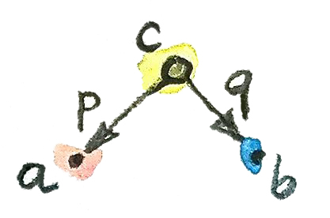
このパターンに一致するすべてのが積の候補となる。それは大量にあるかもしれない。

たとえば、構成要素として、2つのHaskellの型IntとBoolを選択してみて、それらの積の候補を挙げてみよう。
1番目の候補はIntだ。IntはIntとBoolの積の候補となるだろうか？ そう、候補となる――その射影はこうなる。
p :: Int -> Int
p x = x
q :: Int -> Bool
q _ = Trueこれはかなり酷いが、基準を満たしている。
2番目の候補は(Int, Int, Bool)だ。要素が3つの組、すなわち3つ組だ。これを正当な候補にする2つの射を以下に示す（ここでは3つ組に対してパターンマッチングを使っている）。
p :: (Int, Int, Bool) -> Int
p (x, _, _) = x
q :: (Int, Int, Bool) -> Bool
q (_, _, b) = b
1番目の候補は狭すぎ、積のIntの次元だけをカバーしている。一方で、2番目の候補は大きすぎ、Intの次元が重複してしまっている。
しかし、この普遍的構成の別の部分である順位付けについてはまだ調べていない。そこで、パターンの2つの例を比較できるようにしたい。つまり、対象の1つの候補とその2つの射影およびを、別の対象の候補とその2つの射影およびと比較したい。からへの射がある場合に、はよりも「優れている」と言いたいのだが、それではあまりにも弱い。それに加えて、の射影たちがの射影たちよりも「優れている」、すなわち「より普遍的」であってほしい。つまり、射影とは、とからを使って再構成できるということだ。
p' = p . m
q' = q . m 
別の観点でこれらの等式を見ると、はとを分解 (factorize) している。これらの等式が自然数について成り立ち、ドットが乗算であると仮定すると、はとに共通な因数だ。
ある種の直観を築くために、ペア型(Int, Bool)およびそのカノニカルな33射影fstとsndが、前に提示した2つの候補より本当に優れていることを示そう。

1番目の候補に対する写像mは次のようになる。
m :: Int -> (Int, Bool)
m x = (x, True)
実際、2つの射影pとqは次のように再構成できる。
p x = fst (m x) = x
q x = snd (m x) = True 2番目の例のmも同様に一意に定まる。
m (x, _, b) = (x, b)
(Int, Bool)が2つの候補のどちらよりも優れていることを示せた。その逆がなぜ真ではないのかを見てみよう。pとqからfstとsndを再構築するのに役立つm'を見つけられるだろうか？
fst = p . m'
snd = q . m'
1番目の例では、qは常にTrueを返す。しかし、第2要素がFalseであるペアが存在するのは分かっている。したがって、qからはsndを再構築できない。
2番目の例は別物だ。pまたはqを経た後でも十分な情報が保持される。しかし、fstとsndを分解する方法が複数ある。pとqはどちらも3つ組の第2要素を無視するので、m'はそこに何でも入れられる。たとえば
m' (x, b) = (x, x, b)あるいは
m' (x, b) = (x, 42, b)などを定義できる。
以上すべてをまとめると、2つの射影pとqを持つ任意の型cについて、それらの射影を分解する一意なmがcからデカルト積(a, b)へと存在する。実際には、pとqを組み合わせてペアにしているだけだ。
m :: c -> (a, b)
m x = (p x, q x)
これによってデカルト積(a, b)がベストマッチとなり、すなわち、この普遍的構成が集合の圏で機能することを意味する。この構成は任意の2つの集合の積を選ぶ。
さて、集合のことは忘れて、同じ普遍的構成を使って任意の圏にある2つの対象の積を定義しよう。そのような積が必ず存在するわけではないが、存在する場合は、一意な同型を除いて一意だ。
2つの対象との積とは、2つの射影を伴う対象であり、別の任意の対象が伴う2つの射影について、それらを分解するからへの一意な射が存在するものを言う。
2つの候補から分解関数mを生成する（高階）関数は、factorizerと呼ばれることもある。この例では、次の関数になる。
factorizer :: (c -> a) -> (c -> b) -> (c -> (a, b))
factorizer p q = \x -> (p x, q x)5.6 余積
圏論のすべての構成と同じく、積にも双対があり、余積 (coproduct)
と呼ばれる。積のパターンの射を反転させると、2つの入射
(injection) iとjを伴う対象cになる34。すなわち、とからへの射だ。
i :: a -> c
j :: b -> c 
順位付けも逆転している。対象は、対象が伴う入射とを分解するようなからへの射が存在するなら、よりも「優れて」いる。
i' = m . i
j' = m . j 
「最も優れた」対象は、そこから他のどのパターンへも一意な射を持つもので、余積と呼ばれ、存在する場合は、一意な同型を除いて一意だ。
2つの対象との余積とは、2つの入射を伴う対象であり、別の任意の対象が伴う2つの入射について、それらを分解するからへの一意な射が存在するものを言う。
集合の圏では、余積は2つの集合の非交和 (disjoint union) だ。との非交和の要素は、の要素かの要素のどちらかだ。2つの集合が重なる場合、非交和には共通部分のコピーが2つ含まれる。非交和の要素は起源を示す識別子でタグ付けされていると見なせる。
プログラマーにとっては、型の観点から余積を理解する方が簡単だ。それは2つの型からなるタグ付き和
(tagged union) だ。C++がサポートしている共用体 (union)
はタグ付けされていない。つまり、プログラム内では共用体のどのメンバーが有効であるかを何らかの方法で追跡しなければならないということだ。タグ付き共用体を作成するには、タグ――列挙型――を定義して共用体と結びつける必要がある。たとえば、intとchar const*のタグ付き共用体は次のように実装できる。
struct Contact {
enum { isPhone, isEmail } tag;
union { int phoneNum; char const * emailAddr; };
};
これに対する2つの入射は、コンストラクターとしても、関数としても実装できる。たとえば、1番目の入射を関数PhoneNumとして実装するとこうなる。
Contact PhoneNum(int n) {
Contact c;
c.tag = isPhone;
c.phoneNum = n;
return c;
} これはContactに整数を注入 (inject) する。
タグ付き共用体はvariantとも呼ばれ、boostライブラリーに非常に汎用的なboost::variantという実装がある35。
Haskellでは、データ構成子を縦棒で区切ることで、任意のデータ型をタグ付き和にまとめられる。Contactの例だと次のような宣言になる。
data Contact = PhoneNum Int | EmailAddr String
ここで、PhoneNumとEmailAddrは、構成子（入射）としても、パターンマッチングのタグとしても機能する（これについては後で詳しく説明する）。たとえば、電話番号を使って連絡先を構成する方法はこうなる。
helpdesk :: Contact
helpdesk = PhoneNum 2222222
標準的な実装では、積がプリミティブなペアとしてHaskellに組み込まれているのに対し、余積はEitherと呼ばれるデータ型であり、標準のPreludeで次のように定義されている。
data Either a b = Left a | Right b
これはaとbの2つの型によってパラメーター化され、2つの構成子を持つ。すなわち、型aの値を取るLeftと、型bの値を取るRightだ。
積についてfactorizerを定義したのと同様に、余積についても定義できる。余積の型の候補cと2つの入射の候補iとjについて、Eitherに対するfactorizerは次の分解関数を生成する。
factorizer :: (a -> c) -> (b -> c) -> Either a b -> c
factorizer i j (Left a) = i a
factorizer i j (Right b) = j b5.7 非対称性
これまでに2組の双対の定義を見てきた。終対象の定義は、始対象の定義から射の方向を反転させることで得られ、余積の定義は積の定義から得られる。しかし、集合の圏では、始対象と終対象は大きく異なり、余積と積は大きく異なる。後述するように、積は乗算のように振る舞い、終対象は1の役割を果たし、余積は和のように振る舞い、始対象は0の役割を果たす。特に、有限集合の場合、積のサイズは個々の集合のサイズの積であり、余積のサイズはサイズの合計だ。
これは集合の圏が射の反転に関して対称でないことを示している。
空集合については、どの集合に対しても一意な射（absurd関数）がある一方で、戻ってくる射はないことに注意してほしい36。
単元集合では、どの集合からも一意な射が来るうえに、（空集合を除く）すべての集合へ向かう外向きの射もある。これまで見てきたように、終対象から発するこれらの射37は、他の集合の要素を選択するのに非常に重要な役割を果たしている（空集合には要素がないので、選択するものは何もない）。
単元集合と積の関係は、余積とは全く違う。unit型()で表される単元集合を、積パターンのもう1つの――非常に劣った――候補として使うことを考えてみてほしい。それを2つの射影pとq、すなわち単元集合から各構成要素の集合への関数として実装してみよう。それらは具体的な要素をそれぞれの集合から選択する。積は普遍的なので、ここでの候補の単元集合から積への（一意な）射mも存在する。この射は積の集合から要素を選択する。つまり、具体的なペアを選択する。さらに、次の2つの射影を分解する。
p = fst . m
q = snd . m
単元集合の唯一の要素である値()に作用させると、これら2つの式は次のようになる。
p () = fst (m ())
q () = snd (m ())
m ()はmによって選択された積の要素なので、これらの式は、第1の集合からpによって選択された要素p ()が、mによって選択されたペアの第1要素であることを示す。同様に、q ()は第2要素に等しい。これは、積の要素は構成要素の集合からの要素のペアであるという理解と完全に一致している。
余積にはそのような単純な解釈はない。単元集合を余積での候補として要素を抽出しようと試みることもできるが、2つの射影がそこから出てくるのではなく、2つの入射がそこに入ることになる。それらはその起源について何も教えてくれないだろう（実際、入力パラメーターが無視されるのを見てきた）。また、余積から単元集合への一意な射についても同様だろう。集合の圏は、始対象の向きから見たときと終対象から見たときとでは全く違って見える。
これは集合の固有の特性ではなく、で射として使う関数の特性だ。関数は（一般に）非対称だ。説明しよう。
関数は、その域 (domain) のすべての要素に対して定義する必要がある（プログラミングでは全関数 (total function) と呼ぶ）。しかし、余域 (codomain) 全体を網羅する必要はない。すでにその極端な例をいくつか見てきた。単元集合からの関数たち――余域内の1つの要素だけを選択する関数たちのことだ。（実際に、空集合からの関数は本当に極端だ。） 域のサイズが余域のサイズよりもずっと小さい場合、我々はよく、域を余域に埋め込むような関数を思い浮かべる。たとえば、単元集合からの関数は、その1つの要素を余域に埋め込むものだと考えられる。私はそれらを埋め込み (embedding) 関数と呼んでいるが、数学者は反対のものに名前を付ける方を好む。つまり、余域をきっちり満たす関数を全射 (surjective) または上への (onto) 関数と呼ぶ。
非対称性のもう1つの原因は、関数が域の複数の要素を余域の1つの要素に写せることだ。そういった関数はそれらの要素を潰す
(collapse)
ことができる。極端な例としては、集合全体を単元集合に写す関数が挙げられる。これまでに、まさにそれを行う多相unit関数を見てきた。合成すると、より酷く潰すことにしかならない。潰す関数2つの合成は、個々の関数よりもさらに潰すことになる。数学者は潰さない関数を単射 (injective)
または1対1
(one-to-one) という名前で呼ぶ。
当然、埋め込みも潰しもしない関数もある。それらは全単射 (bijection) と呼ばれ、可逆なので真に対称だ。集合の圏では、同型は全単射と同じだ。
5.8 課題
終対象が一意な同型を除いて一意であることを示せ。
半順序集合において2つの対象の積は何か？ ヒント：積の普遍的構成を使う。
半順序集合において2つの対象の余積は何か？
Haskellの
Eitherに相当するものを、（Haskell以外の）好きな言語で総称型として実装せよ。Eitherが、次の2つの入射を伴うintよりも「優れた」余積であることを示せ。int i(int n) { return n; } int j(bool b) { return b? 0: 1; }ヒント：関数
int m(Either const & e);を、
iとjを分解するように定義する。前の問題の続き。
iとjという2つの入射を伴うintがEitherよりも「優れている」ことはあり得ないと主張するにはどうすればよいか？さらに続き。次の入射についてはどうか？
int i(int n) { if (n < 0) return n; return n + 2; } int j(bool b) { return b? 0: 1; }intとboolの余積の候補として、Eitherへの射を複数許容するという理由でEitherより劣るものを挙げよ。
5.9 参考文献
- CatstersのProducts and Coproducts38の動画
6 シンプルな代数的データ型
型を組み合わせる2つの基本的な方法として、積と余積を使う方法を見たところだ。日常のプログラミングにおける多くのデータ構造は、実はこの2つのメカニズムだけを使って構築できる。この事実は重要かつ有用な帰結をもたらす。データ構造の性質の多くは合成可能だということだ。たとえば、基本型の値が等しいかどうか比較する方法を知っていて、それらの比較を積と余積に相当する型に一般化する方法を知っていれば、自動的に複合型の等値演算子を導出できる。Haskellでは、等しさの検査、大小比較、文字列への変換、文字列からの変換などを、複合型の大きな部分集合に対して自動的に導出できる。
次に、直積型 (product type)39 と直和型 (sum type) がプログラミングに現れる様子を詳しく見てみよう。
6.1 直積型
2つの型の直積（直積型）のプログラム言語における標準的な実装はペアだ。Haskellではペアはプリミティブな型構成子 (type constructor) だ。C++では比較的複雑なテンプレートとして標準ライブラリーで定義されている。

ペアは厳密には可換ではない。(Int, Bool)型のペアは、同じ情報を保持していても、ペア(Bool, Int)型のペアには置き換えられない。しかし、それらは同型を除いて可換だ。同型写像はswap関数（それ自身の逆関数）によって与えられる。
swap :: (a, b) -> (b, a)
swap (x, y) = (y, x)これら2つのペア型は、単に同じデータを格納するために異なるフォーマットを使っていると見なせる。ビッグエンディアンとリトルエンディアンのようなものだ。
ペアの中にペアをネストすれば任意の個数の型の直積を作れるが、もっと簡単な方法がある。ネストされたペアは組
(tuple)
と等価なのだ。これは、ペアをネストする様々な方法が同型であるという事実からの帰結だ。3つの型a、b、cを順に積にする場合、次の2つの方法がある。
((a, b), c)あるいは
(a, (b, c))これらは型が異なる。つまり、一方の型の引数を期待する関数に他方の型の値を渡すことはできない。しかし、これらの要素は1対1で対応している。そのため、一方を他方に写す関数
alpha :: ((a, b), c) -> (a, (b, c))
alpha ((x, y), z) = (x, (y, z))が存在し、その関数は次のような逆関数を持つ。
alpha_inv :: (a, (b, c)) -> ((a, b), c)
alpha_inv (x, (y, z)) = ((x, y), z)したがって、この関数は同型写像だ。データは同じで再パッケージ化するための方法が違うにすぎない。
直積型の生成は、型上の二項演算として解釈できる。この観点から見ると、上記の同型は、モノイドで見た結合律 (associativity law) に非常によく似ている。 ただし、モノイドの場合は積を合成する2つの方法が等しかったのに対して、ここでは「同型を除いて」等価であるにすぎない。
同型を認めて、厳密な等しさに固執しないならば、さらに進んで、1が乗算の単位元であるのと同じようにunit型()が積の単位元であるのを示せる。実際、ある型aの値とunit型の値を組み合わせても何の情報も追加されない。次の型
(a, ()) はaと同型だ。対応する同型写像はこのようになる。
rho :: (a, ()) -> a
rho (x, ()) = xrho_inv :: a -> (a, ())
rho_inv x = (x, ())これらの観察は、（集合の圏）はモノイダル圏 (monoidal category) である、と述べることによって形式化できる。それは、対象を（ここではデカルト積で）乗算できるという意味で、モノイドでもある圏だ。モノイダル圏についてさらに説明しよう。完全な定義は将来的に示す。
Haskellには直積型を定義するもっと一般的な方法がある。特に、すぐ後で説明するとおり、直和型と組み合わされたときにはっきりする。その方法は複数の引数を持つ名前付き構成子を使うというものだ。たとえば、ペアは次のようにも定義できる。
data Pair a b = P a b
ここで、Pair a bは他の2つの型aとbによってパラメーター化された型の名前であり、Pはデータ構成子の名前だ。ペア型を定義するには型構成子Pairに2つの型を渡す。適切な型の2つの値を構成子Pに渡すことで、ペア値を構成する。たとえば、値stmtをStringとBoolのペアとして定義したとする。
stmt :: Pair String Bool
stmt = P "This statements is" False 1行目は型シグネチャーだ40。そこでは、型構成子Pairが、そのPairの総称定義のaとbをそれぞれStringとBoolで置き換えた形で使われている。2行目では、具体的な文字列と具体的なブール値をデータ構成子Pに渡すことで、実際の値を定義している。型構成子は型を構成するために使われ、データ構成子は値を構成するために使われる。
Haskellでは型構成子とデータ構成子の名前空間が分離されているため、次のように両方に同じ名前が使われていることがよくある。
data Pair a b = Pair a b
さらに目を細めれば、組み込みのペア型をこの種の宣言のバリエーションとして見ることもできる。組み込みのペア型においては、Pairという名前が(,)という二項演算子で置き換わっている。実際、(,)を他の名前付き構成子と同じように扱い、前置記法を使ってペアを作成できる。
stmt = (,) "This statement is" False 同様に、(,,)を使って3つ組を作成する、などもできる。
総称ペアや組を使う代わりに、次のように特定の名前を付けた直積型を定義してもよい。
data Stmt = Stmt String Bool
これは単にStringとBoolの積だが、独自の名前と構成子が与えられている。このスタイルの宣言の利点は、内容は同じでも意味と機能が異なる互いに置き換えられない型を多数定義できることだ。
組や複数の引数を持つ構成子を使ってプログラミングすると、ぐちゃぐちゃになり間違いが生じやすくなる。どの成分が何を表しているかを追うのが大変になるからだ。成分に名前を付ける方が望ましい場合はよくある。名前付きフィールドを持つ直積型は、Haskellではrecord41、Cではstructと呼ばれる。
6.2 レコード
簡単な例を見てみよう。化学元素を記述するために、2つの文字列（名前と元素記号）と整数（原子番号）を組み合わせて1つのデータ構造にしたい。組(String, String, Int)を使い、どの成分が何を表しているかを覚えておくという方法がある。そして、成分はパターンマッチングによって、以下の関数のように抽出することにしよう。この関数は元素記号が元素名の接頭辞かを（HeはHeliumの接頭辞だというように）チェックする。
startsWithSymbol :: (String, String, Int) -> Bool
startsWithSymbol (name, symbol, _) = isPrefixOf symbol nameこのコードは間違いが生じやすく、読むのもメンテナンスするのも困難だ。レコードを定義する方がはるかに良い。
data Element = Element { name :: String
, symbol :: String
, atomicNumber :: Int }これら2つの表現は同型だ。そのことは、互いに逆になっている2つの変換関数から分かる。
tupleToElem :: (String, String, Int) -> Element
tupleToElem (n, s, a) = Element { name = n
, symbol = s
, atomicNumber = a }elemToTuple :: Element -> (String, String, Int)
elemToTuple e = (name e, symbol e, atomicNumber e)
レコードのフィールド名は、それらのフィールドにアクセスするための関数としても機能することに注意してほしい。たとえば、atomicNumberはeからatomicNumberフィールドを取得する。つまり、atomicNumberは次のような型の関数として使われる。
atomicNumber :: Element -> Int
Elementについてのレコード構文によって、関数startsWithSymbolはより読みやすくなる。
startsWithSymbol :: Element -> Bool
startsWithSymbol e = isPrefixOf (symbol e) (name e)
関数isPrefixOfをバッククォーテーションで囲んで中置演算子に変換するというHaskellの小技を使えば、まるで英文のように読めるようにさえできる。
startsWithSymbol e = symbol e `isPrefixOf` name e中置演算子は関数呼び出しよりも優先順位が低いため、この場合は括弧を省略できる。
6.3 直和型
集合の圏の積が直積型のもととなるのと同じように、余積は直和型のもととなる。Haskellにおける直和型の標準的な実装は次のようなものだ。
data Either a b = Left a | Right b
また、ペアと同様に、Eitherは（同型を除いて）可換であり、ネストでき、ネストの順序は（同型を除いて）無関係だ。したがって、たとえば、3つ組に相当する和
data OneOfThree a b c = Sinistral a | Medial b | Dextral cなどを定義できる。
は余積に関する（対称）モノイダル圏でもあることが分かる。二項演算の役割を演じるのは非交和であり、単位元の役割を演じるのは始対象だ。型に関しては、モノイダル演算子としてEitherがあり、その中立元として住人42がいない型 (uninhabited type)
であるVoidがある。
Eitherは加算、Voidは0と見なせる。実際、直和型にVoidを足しても内容は変わらない。例として
Either a Void
はaと同型だ。これは、この型のRight版を構成する方法がないためだ。型Voidに値は存在しない。
Either a Voidの唯一の要素は、Left構成子を使って構築されたものであり、単純に型aの値をカプセル化したものだ。したがって、記号的に表すと、となる。
直和型がHaskellではごく普通に使われるのに対し、C++で同等のものである共用体やvariantはあまり使われない。その理由はいくつかある。
まず、最も単純な直和型は単なる列挙であり、C++ではenumを使って実装できる。Haskellの直和型
data Color = Red | Green | BlueにC++で相当するものは
enum { Red, Green, Blue };だ。もっとシンプルな直和型
data Bool = True | False は、C++ではプリミティブboolだ。
値の有無を表す単純な直和型は、C++では、特殊なトリックや「不可能な」値（空文字列・負の数・ヌルポインターなど）を使ってさまざまに実装される。この種のオプション性は、意図的な場合、HaskellではMaybe型を使って表現される。
data Maybe a = Nothing | Just a
Maybe型は2つの型の直和だ。このことは構成子の2つの部分を個々の型に分けると分かる。1つ目は次のようになる。
data NothingType = Nothing
これはNothingという名前の1つの値を持つ列挙だ。言い換えると、これは単元集合であり、unit型()と等価だ。2つ目の部分
data JustType a = Just a
は、型aを単にカプセル化したものだ。Maybeを次のように書いてもよかっただろう。
type Maybe a = Either () aより複雑な直和型は、C++ではポインターを使って模擬することが多い。ポインターはヌルとなるか、あるいは特定の型の値を指し示す。たとえば、Haskellで（再帰的な）直和型として定義できるリスト型
data List a = Nil | Cons a (List a)をC++に変換するには、ヌルポインターのトリックを使って空のリストを実装する。
template<class A>
class List {
Node<A> * _head;
public:
List() : _head(nullptr) {} // Nil
List(A a, List<A> l) // Cons
: _head(new Node<A>(a, l))
{}
};
Haskellでの2つの構成子NilとConsが、よく似た引数（Nilは空、Consは値1つとリスト1つ）でオーバーロードされた2つのList構成子へと変換されたことに注目してほしい。このListクラスには、直和型の2つの成分を区別するためのタグは必要ない。その代わり、_headに特別なnullptr値を使ってNilを表現する。
だが、HaskellとC++の型の主な違いは、Haskellではデータ構造が不変であることだ。ある特定の構成子を使ってオブジェクトを作成する場合、オブジェクトはどの構成子が使われ、どの引数が渡されたかを永久に記憶する。したがって、Just "energy"として作成されたMaybeオブジェクトがNothingに変わることはない。同様に、空のリストは永久に空であり、3つの要素のリストは常に同じ3つの要素を持つことになる。
この不変性こそが構成を可逆的にする。オブジェクトがあれば、いつでも構成で使われた部品に分解できる。この分解はパターンマッチングで行われ、構成子をパターンとして再利用する。構成子の引数がある場合は、変数（またはその他のパターン）に置き換えられる。
Listデータ型には2つの構成子があるため、どんなListを分解するときもそれらの構成子に対応する2つのパターンを使う。1つは空であるNilリストにマッチし、もう1つはConsで構成されたリストにマッチする。たとえば、複数のListに対する単純な関数の定義は次のとおりだ。
maybeTail :: List a -> Maybe (List a)
maybeTail Nil = Nothing
maybeTail (Cons _ t) = Just t
maybeTailの定義の1番目の部分は、Nil構成子をパターンとして使い、Nothingを返す。2番目の部分では、Cons構成子をパターンとして使っている。構成子の1番目の引数には興味がないため、ワイルドカードに置き換わっている。Consの2番目の引数は、変数tに束縛される（厳密に言えば一度式に束縛されたら決して変化しないものの、変数と呼ぶことにする）。戻り値はJust tだ。こうして、Listの作成方法に応じて、節の1つに一致するようになった43。作成にConsが使われるときは、作成時に渡した2つの引数が取得される（1番目の引数は破棄される）。
さらに複雑な直和型は、C++では多相クラス階層を使って実装されている。共通の祖先を持つクラスたちは、1つのバリアント型として理解でき、その中では仮想関数テーブルが隠しタグとして機能する。Haskellでは構成子に対するパターンマッチングおよびパターンごとに特化したコードで行っていることを、C++では仮想関数テーブルのポインターに基づいて仮想関数呼び出しをディスパッチすることで実現している。
C++で共用体が直和型として使われることはめったにない。含められるものに厳しい制限があるからだ。std::stringでさえ、コピーコンストラクターを持っているので、共用体に入れられない。
6.4 型の代数
直積型と直和型を別々に用いても有用なデータ構造をいろいろ定義できるが、真の強みはこの2つを組み合わせることで得られる。合成の力が再び発揮される時がきた。
これまでに分かったことをまとめておこう。型システムの下にある2つの可換モノイド構造を見た。中立元としてVoidを持つ直和型と、中立元として()というunit型を持つ直積型だ。それらを加法や乗法から類推したい。この類推では、Voidは0に対応し、()は1に対応する。
この類推をどこまで拡張できるか見てみよう。例として、0を掛けると0になるだろうか？ 言い換えれば、1つの成分がVoidである直積型は、Voidと同型だろうか？ たとえば、IntとVoidのペアを作成できるだろうか？
ペアを作成するには2つの値が必要だ。整数なら簡単だが、型Voidには値がない。したがって、型(a, Void)は、すべての型aについて住人がいない――値を持たない――のでVoidと等価になる。言い換えれば、ということだ。
また別の、加算と乗算をつなぐものとして、分配則 (distributive property) がある。
a * (b + c) = a * b + a * cこれは直積型と直和型にも当てはまるだろうか？ そう、当てはまる――いつものように同型を除いて。左辺は次の型に相当する。
(a, Either b c)また、右辺は次の型に相当する。
Either (a, b) (a, c)これらをある向きで変換する関数は次のとおりだ。
prodToSum :: (a, Either b c) -> Either (a, b) (a, c)
prodToSum (x, e) =
case e of
Left y -> Left (x, y)
Right z -> Right (x, z)また、その逆向きの変換は次のとおりだ。
sumToProd :: Either (a, b) (a, c) -> (a, Either b c)
sumToProd e =
case e of
Left (x, y) -> (x, Left y)
Right (x, z) -> (x, Right z)
case of式は、関数の内部でパターンマッチングを行うために使われる。各パターンの後には矢印と、パターンが一致したときに評価される式が続く。たとえば、次の値を引数としてprodToSumを呼び出すとする。
prod1 :: (Int, Either String Float)
prod1 = (2, Left "Hi!")
case e of内のeはLeft "Hi!"と等しくなる。これはパターンLeft yとマッチし、yに"Hi!"を代入する。xはすでに2とマッチしているので、case of式の結果と関数全体は、期待どおりLeft (2, "Hi!")となる。
この2つの関数が互いの逆関数であることの証明は省くが、よく考えれば分かるだろう。これらは2つのデータ構造の内容を単に再パックしている。データは同じで、フォーマットが異なるだけだ。
数学者たちは、このような絡み合った2つのモノイドに半環 (semiring) という名前をつけている。これは完全な環 (ring) ではない。型の減算は定義できないからだ。そのため、半環は「n (negative) がない環 (ring)」をかけてリグ (rig) と呼ばれることがある。しかし、そのことを除けば、リグをなす自然数などに関する命題を型に関する命題に変換することによる多くのメリットが得られる。興味深い項目を含む変換表を以下に示す。
| 数値 | 型 |
|---|---|
Void |
|
() |
|
data Either a b = Left a | Right b |
|
(a, b)またはdata Pair a b = Pair a b |
|
data Bool = True | False |
|
data Maybe a = Nothing | Just a |
リスト型は、非常に興味深いことに、方程式の解として定義される。定義しようとしている型は等式の両辺に現れる。
data List a = Nil | Cons a (List a)
いつもの置換を行い、さらにList aをxに置き換えると、次の式が得られる。
x = 1 + a * x
型の減算や除算はできないので、これは従来の代数的方法では解けない。しかし、置換の連続なら試せる。つまり、ひたすら右辺のxを(1 + a*x)に置き換えては分配則を使う。これによって次の列が得られる。
x = 1 + a*x
x = 1 + a*(1 + a*x) = 1 + a + a*a*x
x = 1 + a + a*a*(1 + a*x) = 1 + a + a*a + a*a*a*x
...
x = 1 + a + a*a + a*a*a + a*a*a*a...
最終的には積（組）の和が無限に続くことになった。これは次のように解釈できる。リストは空集合1か、単元集合aか、ペアa*aか、3つ組a*a*aか、などなど……。まさにそれがリストだ。つまり、aの列だ！
リストについては語るべきことがまだまだある。関手や不動点について学んだ後で、リストやその他の再帰的なデータ構造について再び説明する。
記号変数を使って方程式を解く――これぞ代数だ！ それゆえ、これらの型は代数的データ型と呼ばれる。
最後に、型の代数の非常に重要な解釈について述べなければならない。aとbの2つの型の直積には、型aおよび型bの両方の値が含まれている必要があることに注意してほしい。これは、［訳注：2つの型の直積が居住されているためには］両方の型が居住されている
(inhabited) 必要があることを意味する44。一方、2つの型の直和には、型a
または型bのいずれかの値が含まれるので、［訳注：2つの型の直和が居住されているためには］どちらかが居住されていれば十分だ。論理積
(logical and) と論理和 (logical or)
も半環をなし、型理論の言葉に写せる。
| 論理 | 型 |
|---|---|
Void |
|
() |
|
data Either a b = Left a | Right b |
|
(a, b) |
この類推はさらに深く、論理と型理論を結ぶカリー・ハワード同型の基礎となっている。それについては関数型について説明するときに再び取り上げる。
6.5 課題
Maybe aとEither () aの間の同型を示せ。円と長方形の直和型をHaskellで定義する。
data Shape = Circle Float | Rect Float Float面積を求めるための関数
areaのようなShapeに作用する関数を定義したい場合は、これら2つの構成子に関するパターンマッチングにより行う。area :: Shape -> Float area (Circle r) = pi * r * r area (Rect d h) = d * hC++またはJavaで
Shapeをインタフェースとして実装し、CircleとRectという2つのクラスを作成せよ。areaは仮想関数として実装せよ。先ほどの例を続ける。
Shapeの周の長さを求める新しい関数circは簡単に追加できる。Shapeの定義に触れる必要はない。circ :: Shape -> Float circ (Circle r) = 2.0 * pi * r circ (Rect d h) = 2.0 * (d + h)C++またはJavaの実装に
circを追加せよ。もとのコードのどの部分に触れる必要があったか？さらに続ける。新しい図形として正方形
SquareをShapeに追加し、必要なすべてを更新する。HaskellならびにC++およびJavaでは、コードのどこに触れる必要があったか45？（Haskellプログラマーでないとしても、変更箇所はごく自明なはずだ。）型についてが（同型を除いて）成り立つことを示せ。前掲の変換表によれば、は
Boolに対応する。
7 関手
壊れたレコードのように聞こえるかもしれないが、関手についてこう述べておきたい。関手は非常に単純だが強力な概念だ。圏論はこのような単純だが強力な概念であふれている。関手は圏の間の写像だ。2つの圏とについて、関手はの対象をの対象に写す。これは対象についての関数だ。が内の対象である場合に、内の像をと（括弧なしで）書くことにする。しかし、圏は単に対象の集まりではない――対象とそれらを接続する射からなる。関手は射も写す――射についての関数だ。ただし、射を行きあたりばったりに写すわけではない――接続を維持して写す。 つまり、内の射が対象を対象に接続する場合、 内のの像は、の像をの像に接続する。 （これは数学的記法とHaskellの記法を組み合わせたものであり、ここでは理にかなっているだろう。対象や射に関数を適用するときは括弧を使わないことにする。）
ご覧のとおり、関手は圏の構造を保存している。一方の圏で接続されているものは、もう一方の圏でも接続されている。しかし、圏の構造にはそれ以上の何かがある。それは射の合成だ。がとの合成 である場合、によるの像がとの像の合成になるようにしたい。
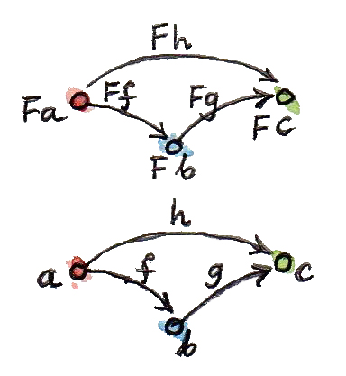
最後に、内のすべての恒等射が内の恒等射に写されるようにしたい。 ここで、は対象における恒等射を、はにおける恒等射を表す。

これらの条件によって、関手は通常の関数よりもはるかに制約が厳しくなることに注意してほしい。関手は圏の構造を保存しなければならない。圏を射のネットワークによって織りなされた対象の集まりと見なすなら、関手がこの織物に裂け目を入れることは許されない。対象を潰してまとめたり、複数の射を1つにくっつけたりすることはあるが、何かを引き裂くことは決してない。この引き裂きなしという制約は、微積分学において知られる連続性条件に似ている。この意味では、関手は「連続的」である（もっとも、関手にはさらに制約が厳しい連続性の概念が存在する）。関数と同じように、関手にも潰すものと埋め込むものがある。埋め込みの傾向がより顕著なのは、もとの圏が行き先の圏よりずっと小さいときだ。極端な場合、域は自明な単元圏 (singleton category) であり得る。すなわち、ただ1つの対象とただ1つの射（恒等射）を持つ圏だ。単元圏から他の圏への関手は、単にその圏内の対象を選択するだけだ。これは、単元集合からの射は余域内の要素を選択する、という特性と完全に類似している。最も潰す関手は定関手と呼ばれる。それはもとの圏内のすべての対象を、行き先の圏内で選択された1つの対象に写す。また、もとの圏のすべての射を恒等射に写す。まるでブラックホールのように働き、すべてを1つの特異点に圧縮する。この関手については極限と余極限について議論するときに詳しく見よう。
7.1 プログラミングにおける関手
地に足をつけてプログラミングについて話をしよう。我々には型と関数の圏がある。この圏をそれ自体に写す関手について話そう。そのような関手は自己関手 (endofunctor) と呼ばれる。型の圏での自己関手とは何だろうか？ まず、それは型を型に写す。そのような写像の例はすでに見たが、おそらくそれとは気付かなかったのだろう。別の型によってパラメーター化されているような型の定義のことだ。いくつか例を見てみよう。
7.1.1 Maybe関手
Maybeの定義は型aから型Maybe aへの写像だ。
data Maybe a = Nothing | Just a
ここで重要な注意点がある。Maybe自体は型ではなく、型構成子だ。型に変換するには、IntやBoolのような型引数を与える必要がある。引数のないMaybeは、型上の関数を表す。だが、Maybeは関手に変えられるだろうか？
（これ以降、私がプログラミングの文脈で関手と言うとき、ほとんどの場合は自己関手を意味する。）
関手は、対象（ここでは型）を写すだけでなく、射（ここでは関数）も写す。aからbへの任意の関数
f :: a -> b
についてMaybe aからMaybe bへの関数を生成したい。そのような関数を定義するには、Maybeの2つの構成子それぞれに対応する2つの場合を考慮する必要がある。Nothingの場合は単純で、Nothingを返すだけでよい。そして引数がJustの場合は、関数fをその中身に適用すればよい。したがって、Maybeの下でのfの像は次の関数だ。
f' :: Maybe a -> Maybe b
f' Nothing = Nothing
f' (Just x) = Just (f x)
（ところで、Haskellでは変数名でアポストロフィーを使えるため、いまのような場合にとても便利だ。）
Haskellでは、関手における射の写像の部分はfmapと呼ばれる高階関数として実装されている。Maybeの場合、そのシグネチャーは次のとおりだ。
fmap :: (a -> b) -> (Maybe a -> Maybe b) 
fmapは関数を持ち上げる (lift)
という言い方がよく使われる。持ち上げられた関数はMaybe値に対して作用する。いつものように、カリー化のため、このシグネチャーには次の2通りの解釈がある。ひとつは、fmapは1引数関数であり、それ自体が関数である(a -> b)型の引数を取って、(Maybe a -> Maybe b)型の関数を返すという解釈だ。もうひとつは、2つの引数を取り、Maybe bを返すという解釈だ。
fmap :: (a -> b) -> Maybe a -> Maybe b
これまでの議論に基づいて、Maybeに対してfmapを実装する方法は次のとおりだ。
fmap _ Nothing = Nothing
fmap f (Just x) = Just (f x)
型構成子Maybeに関数fmapを合わせたものが関手をなすことを示すには、fmapが恒等射と合成を保存することを証明する必要がある。これらは「関手則」(functor
laws) と呼ばれているが、単に圏の構造の保存を保証するだけのものだ。
7.1.2 等式による推論
関手則を証明するために、Haskellでの一般的な証明テクニックである等式による推論 (equational reasoning) を使う。これは、Haskellの関数が等式、つまり左辺が右辺に等しいものである、として定義されているという事実を利用している。左辺と右辺はいつでも入れ替えられる。ただし、名前の競合を避けるために変数名を変更する必要はあるかもしれない。これは、関数をインライン化するか、あるいは逆に式を関数にリファクタリングすることと考えてほしい。例として恒等関数を考えてみよう。
id x = x
たとえば、ある式の中にid yがあるなら、yに置き換えられる（インライン化）。さらに、（たとえばid (y + 2)のように）式にidが適用されているなら、(y + 2)のように式そのものに置き換えられる。そして、この置換は両方向に機能する。つまり、任意の式eをid eで置き換えられる（リファクタリング）。関数がパターンマッチングによって定義されている場合は、各サブ定義を独立して使える。たとえば、上記のfmapの定義では、fmap f NothingをNothingに置き換えることも、その逆を行うこともできる。これが実際にどのように機能するか見てみよう。まずは恒等射の保存から始めよう。
fmap id = id
NothingとJustの2つの場合を考慮する必要がある。1つ目の場合は次のようになる（Haskell疑似コードを使って左辺を右辺に変換している）。
fmap id Nothing
= { fmapの定義 }
Nothing
= { idの定義 }
id Nothing
最後のステップでidの定義を逆向きに使ったことに注目してほしい。式Nothingをid Nothingに置き換えた。実際には、このような証明は、真ん中の同じ式に辿り着くまで「ロウソクを両端から燃やす」ことで成される。今回については真ん中に残るのはNothingだ。2つ目の場合も簡単だ。
fmap id (Just x)
= { fmapの定義 }
Just (id x)
= { idの定義 }
Just x
= { idの定義 }
id (Just x) では、fmapが合成を保存することを示そう。
fmap (g . f) = fmap g . fmap f まずはNothingのケースだ。
fmap (g . f) Nothing
= { fmapの定義 }
Nothing
= { fmapの定義 }
fmap g Nothing
= { fmapの定義 }
fmap g (fmap f Nothing) 次はJustのケースだ。
fmap (g . f) (Just x)
= { fmapの定義 }
Just ((g . f) x)
= { 合成の定義 }
Just (g (f x))
= { fmapの定義 }
fmap g (Just (f x))
= { fmapの定義 }
fmap g (fmap f (Just x))
= { 合成の定義 }
(fmap g . fmap f) (Just x)等式による推論はC++スタイルの副作用のある「関数」では使えないことは、強調しておく価値がある。次のコードを考えてみよう。
int square(int x) {
return x * x;
}
int counter() {
static int c = 0;
return c++;
}
double y = square(counter());
等式による推論を使うと、squareをインライン展開して次のようにできる。
double y = counter() * counter();
明らかにこれは有効な変換ではなく、同じ結果は生成されない。それにもかかわらず、マクロとしてsquareを実装すると、C++コンパイラーは等式による推論を使おうとし、悲惨な結果になる。
7.1.3 Optional
関手はHaskellで簡単に表現できるが、総称プログラミングや高階関数をサポートする言語ならどれでも定義できる。MaybeのC++版であるテンプレート型optionalについて考えてみよう。以下に実装の概略を示す（実際の実装ははるかに複雑で、C++に特有の引数のさまざまな渡し方やコピーセマンティクスやリソース管理の問題を扱わなくてはならない）。
template<class T>
class optional {
bool _isValid; // the tag
T _v;
public:
optional() : _isValid(false) {} // Nothing
optional(T x) : _isValid(true) , _v(x) {} // Just
bool isValid() const { return _isValid; }
T val() const { return _v; }
};
このテンプレートは、関手の定義の一部である型の写像を提供する。これは任意の型Tを新しい型optional<T>に写す。関数に対するその関手の作用を定義しよう。
template<class A, class B>
std::function<optional<B>(optional<A>)>
fmap(std::function<B(A)> f)
{
return [f](optional<A> opt) {
if (!opt.isValid())
return optional<B>{};
else
return optional<B>{ f(opt.val()) };
};
}これは高階関数で、引数として関数を受け取り、関数を返す。非カリー化版はこうなる。
template<class A, class B>
optional<B> fmap(std::function<B(A)> f, optional<A> opt) {
if (!opt.isValid())
return optional<B>{};
else
return optional<B>{ f(opt.val()) };
}
fmapをoptionalのテンプレートメソッドにするという選択肢もある。このように選択肢に迷うことになるため、C++で関手パターンを抽象化するのは問題となる。関手は継承元となるインターフェイスにすべきだろうか？（残念ながら、テンプレート仮想関数は作れない。）
フリーテンプレート関数は、カリー化版と非カリー化版のどちらにすべきだろうか？ 不足した型情報を、C++コンパイラーは正しく推論してくれるだろうか、それとも明示的に指定しなければならないだろうか？ 入力関数fがintからboolへの関数である状況を考えてみよう。コンパイラーにgの型が分かるだろうか。
auto g = fmap(f);
特に将来、複数の関手がfmapをオーバーロードするようになった場合は？
（近いうちにさらに多くの関手について見てみよう。）
7.1.4 型クラス
では、Haskellは関手の抽象化にどのように対処するのだろうか？ それには型クラスの機構を使う。型クラスは、共通のインターフェイスをサポートする型の族を定義する。たとえば、等しさの検査をサポートする対象についてのクラスは次のように定義される。
class Eq a where
(==) :: a -> a -> Bool
この定義は、型aの引数を2つ取りBoolを返す演算子(==)がサポートされる場合、型aはクラスEqであることを示している。特定の型がEqであることをHaskellに伝えたい場合は、その型をこのクラスのインスタンスであると宣言し、(==)の実装を提供する必要がある。たとえば、2次元空間における点を表す型Point（2つのFloatの直積型）が定義されているとする。
data Point = Pt Float Float点の等しさは次のように定義できる。
instance Eq Point where
(Pt x y) == (Pt x' y') = x == x' && y == y'
ここでは演算子(==)（いま定義しようとしているもの）を2つのパターン(Pt x y)と(Pt x'y Pt x y)の間に中置した。関数の本体は、単一の等号の後に続く。いったんPointがEqのインスタンスであると宣言されると、点同士の等しさを直接比較できるようになる。C++やJavaとは異なり、Pointを定義するときにEqクラス（またはインターフェイス）を指定する必要はなく、クライアントコード内で後から指定できることに注目してほしい。また、型クラスは関数（および演算子）をオーバーロードするためのHaskellにおける唯一の機構でもある。型クラスはfmapを異なる関数（や演算子）についてオーバーロードするために必要となる。ただし、1つ複雑な点がある。関手は型として定義されるのではなく、型の写像、つまり型構成子として定義される。必要な型クラスは、Eqの場合のような型の族ではなく、型構成子の族だ。幸い、Haskellの型クラスは型だけでなく型構成子に対しても使える。以下にFunctorクラスの定義を示す。
class Functor f where
fmap :: (a -> b) -> f a -> f b
これは、指定された型シグネチャーを持つ関数fmapが存在する場合、fはFunctorだと規定している。小文字のfは型変数であり、型変数aやbと似ている。しかし、コンパイラーはそれが型ではなく型構成子を表していることを、その使われ方から推論できる。つまり、f aやf bのように他の型に作用していることから推論できる。したがって、Functorのインスタンスを宣言するときは型構成子を考える必要がある。例としてMaybeの場合を示す。
instance Functor Maybe where
fmap _ Nothing = Nothing
fmap f (Just x) = Just (f x)
ちなみに、Functorクラスや、Maybeを含む多くの単純なデータ型のインスタンス定義は、標準のPreludeライブラリーの一部となっている。
7.1.5 C++における関手
C++でも同じアプローチを試せるだろうか？ 型構成子は、optionalのようなテンプレートクラスに対応しているので、同様にfmapをテンプレート・テンプレート引数 (template
template parameter) でパラメーター化しよう。構文は次のとおりだ。
template<template<class> F, class A, class B>
F<B> fmap(std::function<B(A)>, F<A>);このテンプレートをさまざまな関手に特殊化できるようにしたい。残念ながら、C++ではテンプレート関数の部分的な特殊化は禁止されている。そのため、次のような記述はできない。
template<class A, class B>
optional<B> fmap<optional>(
std::function<B(A)> f, optional<A> opt)
代わりに関数のオーバーロードに頼る必要がある。結局、もとのカリー化されていないfmapの定義に戻る。
template<class A, class B>
optional<B> fmap(std::function<B(A)> f, optional<A> opt)
{
if (!opt.isValid())
return optional<B>{};
else
return optional<B>{ f(opt.val()) };
}
この定義は機能するが、どのオーバーロードが使われるかをfmapの2番目の引数が選択しているからにすぎない。より汎用的なfmapの定義を完全に無視している。
7.1.6 リスト関手
プログラミングにおける関手の役割についてある程度の直観を育むには、もっといろいろな例を見る必要がある。別の型によってパラメーター化される型はどれも関手の候補だ。総称コンテナーも格納する要素の型によってパラメーター化されているる。では、ごく単純なコンテナーであるリストを見てみよう。
data List a = Nil | Cons a (List a)
型構成子Listがある。これは、任意の型aから型List aへの写像だ。Listが関手だと示すには、関数の持ち上げを定義する必要がある。つまり、関数a -> bについて関数List a -> List bを定義する。
fmap :: (a -> b) -> (List a -> List b)
List aに作用する関数は、リストの2つのコンストラクターに対応する2つの場合を考慮する必要がある。Nilの場合は自明で、単にNilを返す。空のリストに対してできることはあまりない。Consの場合は、再帰を伴うため、ややトリッキーだ。そこで、少し前に戻って、何をしようとしているのか考えてみよう。aのリストと、aをbに変換する関数fがあり、bのリストを生成したい。自明なのは、fを使ってリストの各要素をaからbに変換することだ。（空でない）リストが先頭要素headと先頭を除いた残りのリストtailのConsとして定義されている場合、実際にはどうやるのだろうか？ fをheadに適用し、持ち上げられた（fmapされた）fをtailに適用すればよい。これは再帰的な定義だ。持ち上げられたfを持ち上げられたfを用いて定義しているからだ。
fmap f (Cons x t) = Cons (f x) (fmap f t)
定義をリスト［訳注：左辺のCons x t］に対して行おうとしているが、右辺のfmap fがそれより短いリスト――そのtail――に適用されていることに注意してほしい。再帰的に処理されるにつれてリストが短くなるため、最終的には空リスト、つまりNilに到達することになる。しかし、先ほど決めたとおり、fmap fがNilに作用するとNilを返すため、再帰は停止する。最終的な結果を得るために、Consコンストラクターを使って、新しいheadの(f x)と新しいtailの(fmap f t)を結合する。すべてをまとめると、リスト関手のインスタンス宣言はこうなる。
instance Functor List where
fmap _ Nil = Nil
fmap f (Cons x t) = Cons (f x) (fmap f t)
C++の方が慣れているなら、std::vectorの場合を考えてみてほしい。これは最も汎用的なC++コンテナーと見なせるだろう。fmapのstd::vector用の実装は単にstd::transformを薄く包んだものだ。
template<class A, class B>
std::vector<B> fmap(std::function<B(A)> f, std::vector<A> v)
{
std::vector<B> w;
std::transform( std::begin(v)
, std::end(v)
, std::back_inserter(w)
, f);
return w;
}これを使えば、たとえば次のように数列の要素を2乗できる46。
std::vector<int> v{ 1, 2, 3, 4 };
auto w = fmap([](int i) { return i*i; }, v);
std::copy( std::begin(w)
, std::end(w)
, std::ostream_iterator(std::cout, ", "));
ほとんどのC++コンテナーは関手だと言える。それらはstd::transformに渡せるイテレーターを実装していて、std::transformはfmapのより原始的な従兄弟だからだ。残念ながら、関手の単純さは、イテレーターや一時変数（上記のfmapの実装を参照）でいつも煩雑になるため失われてしまう。新しく提案されたC++の範囲
(range)
ライブラリー[^訳注：C++20標準で`std::ranges`として導入された。]によって範囲の関手的な性質がより顕著になったのは喜ばしい。
7.1.7 Reader関手
さて、直観が育ってきただろう。たとえば、関手をある種のコンテナーと見なせるようになった。では、一見非常に異なる例をお見せしよう。型aからの、aを返す関数の型への写像を考えてみよう。関数型についてはあまり詳しく述べていない（完全に圏論的な扱いはこれからだ）が、プログラマーならある程度理解している。Haskellでは、関数型はアロー型構成子(->)を使って構成され、引数の型と結果の型の2つの型を取る。すでに中置記法a -> bで見たことがあるが、括弧で括れば前置記法でも同様に使える。
(->) a b通常の関数と同様に、複数の引数を取る型関数も部分適用できる。したがって、矢印に対して型引数を1つだけ与えた後もなお、もう1つの型引数が期待される。それが
(->) a
が型構成子である理由だ。完全な型a -> bを生成するには、もう1つの型bが必要だ。いまのところは、aによってパラメーター化された型構成子の族の全体を定義していると言える。これが関手の族でもあるかどうか見てみよう。2つの型パラメーターを扱うのは混乱を招くかもしれないので、名前を変更しておこう。前の関手の型定義に従って、引数の型をr
、結果の型をaと呼ぼう。そうすると、この型構成子は任意の型aを取り、それを型r -> aに写す。これが関手であることを示すために、関数a -> bを、r -> aを受け取ってr -> bを返す関数に持ち上げたい。これらの型はaとbのそれぞれに型構成子(->) rを作用させて作られたものだ。この場合におけるfmapの型シグネチャーは次のとおりだ。
fmap :: (a -> b) -> (r -> a) -> (r -> b)
ここでパズルを解かなくてはならない。関数f :: a -> bと関数g :: r -> aが与えられるとき、関数r -> bを作成せよ。2つの関数を合成する方法は1つしかなく、その結果はまさに必要なものだ。fmapの実装は次のようになる。
instance Functor ((->) r) where
fmap f g = f . gうまくいった！ 簡潔な表記が好みなら、さらに短く定義できる。そのためには、合成を前置記法で
fmap f g = (.) f gと書き直せることと、そのときの引数を省略できることに着目し、2つの関数の間の等式を得る。
fmap = (.) 型構成子
(->) rと上記のfmapの実装の組み合わせは、reader関手と呼ばれる。
7.2 コンテナーとしての関手
汎用コンテナーを定義できるか、オブジェクトをそれが含む値の型によってパラメーター化して定義できるプログラミング言語において、関手の例をいくつか見た。Reader関手は異端に思える。我々は関数をデータとは見なさないからだ。しかし、純粋関数はメモ化でき、関数の実行はテーブル参照に変えられるのをすでに見た。テーブルはデータだ。逆に、Haskellは遅延評価を採用しているため、リストのような従来のコンテナーは、実際には関数として実装されうる。たとえば、次のように簡潔に定義できる自然数の無限リストを考えてみよう。
nats :: [Integer]
nats = [1..]
1行目では、一対の角括弧はHaskellの組み込みリスト用の型構成子だ。2行目では、角括弧はリストを作成するために使われている。明らかに、このような無限リストはメモリーに格納できない。コンパイラーはこれを、必要に応じてIntegerを生成する関数として実装する。Haskellは効果的にデータとコードの区別を曖昧にしている。リストは関数と見なせて、関数は引数を結果に写すテーブルと見なせる。後者は関数の領域が有限かつ大きすぎない場合なら現実的だ。しかし、strlenをテーブル参照として実装するのは現実的でない。無限に多くの異なる文字列が存在するからだ。プログラマーとして、我々は無限大は好きではないが、圏論では朝食に無限大を食べるのを学ぶことになる。すべての文字列の集合であっても、過去・現在・未来の宇宙のすべての可能な状態の集まりであっても、対処できる！ そこで、関手オブジェクト（自己関手によって生成された型のオブジェクト）はパラメーター化される型の値を含むと考えたい。それらの値が物理的にそこに存在しない場合でもだ。関手の一例はC++のstd::futureで、ある時点で値を含みうるが、必ず含む保証はない。また、その値にアクセスしたいとき、別スレッドの実行終了を待つためにブロックされることがある。別の例としてはHaskellのIOオブジェクトがあり、ユーザー入力を含んだり、画面に「Hello
World!」と表示されているような未来版の宇宙を含んだりできる。この解釈によれば、関手オブジェクトとは、パラメーター化された型の値を含みうるものだ。あるいは、これらの値を生成するためのレシピも含みうる。値にアクセスできるかは全く気にしない――それは完全にオプショナルであり、関手の守備範囲外だ。関心があるのは、これらの値を関数を使って操作できるかだけだ。値にアクセスできるなら、操作の結果を確認できるはずだ。アクセスできないなら、操作が正しく合成され、恒等関数による操作が何も変更しないことに注意するだけでよい。関手オブジェクト内の値へのアクセスを全く気にしていないことを明示するために、引数aを完全に無視する型構成子を例に挙げよう。
data Const c a = Const c
Const型構成子はcとaの2つの型を取る。アローコンストラクターで行ったように、部分適用で関手を作成しよう。Const型のデータ構成子（これもConstと呼ばれる）は型cの値を1つだけ取る。これはaには依存しない。この型構成子のfmapの型は次のようになる。
fmap :: (a -> b) -> Const c a -> Const c b
この関手は型引数を無視するので、fmapの実装はその関数引数を無視してよい――その関数は作用するものがない。
instance Functor (Const c) where
fmap _ (Const v) = Const vこれはC++ではもう少し明確かもしれない（この言葉を口にするとは思わなかった！）。コンパイル時に決まる型引数と実行時に決まる値がよりはっきり区別されるからだ。
template<class C, class A>
struct Const {
Const(C v) : _v(v) {}
C _v;
};
fmapのC++実装も、関数の引数を無視し、Constの引数を値は変更せず実質的に再キャストする。
template<class C, class A, class B>
Const<C, B> fmap(std::function<B(A)> f, Const<C, A> c) {
return Const<C, B>{c._v};
}
その奇妙さにもかかわらず、Const関手は多くの構成で重要な役割を果たしている。圏論では、これは先に述べた関手の特殊なケースであり、ブラックホールの自己関手版だ。今後もっと詳しく知ることになるだろう。
7.3 関手の合成
圏の間の関手が合成できることは、集合の間の関数が合成できるのと同様だと考えれば、納得するのは難しくない。2つの関手の合成は、対象に作用するときは、それぞれの対象の写像の合成にすぎず、射に作用するときも同様だ。2つの関手を飛び越えた後で、恒等射は恒等射となり、射の合成は射の合成となる。ただそれだけだ。特に、自己関手を合成するのは簡単だ。関数maybeTailを覚えているだろうか？ ここではHaskellの組み込みのリスト実装を使って書き直そう。
maybeTail :: [a] -> Maybe [a]
maybeTail [] = Nothing
maybeTail (x:xs) = Just xs
（Nilと呼んでいた空リストコンストラクターは空の角括弧のペア[]に置き換えられる。Consコンストラクターは中置演算子:（コロン）に置き換えられる。）
maybeTailの結果は、Maybeと[]という2つの関手の合成がaに作用するような型だ。これらの関数はそれぞれ独自版のfmapを備えているが、もし何らかの関数fを合成の内容、つまりMaybeリストに適用したい場合はどうなるだろう？ 2層の関手を突破しなければならない。fmapを使えば外側のMaybeは突破できる。しかし、fはリストに対しては動作しないので、Maybe内にfを単に送ることはできない。内側のリストを操作するには(fmap f)を送る必要がある。たとえば、整数のMaybeリストの要素を2乗するにはどうするか見てみよう。
square x = x * x
mis :: Maybe [Int]
mis = Just [1, 2, 3]
mis2 = fmap (fmap square) mis
コンパイラーは、型を分析した後、外側のfmapに対してはMaybeインスタンスからの実装を、内側のものに対してはリスト関手の実装を使う必要があることを理解する。上記のコードを次のように書き換えられるのは、すぐには自明に思えないかもしれない。
mis2 = (fmap . fmap) square mis
だが、fmapは引数が1つだけの関数と見なせることを思い出してほしい。
fmap :: (a -> b) -> (f a -> f b)
この例では、(fmap . fmap)内の2番目のfmapは引数として次のものを取る。
square :: Int -> Intそして、次の型の関数を返す。
[Int] -> [Int]
1番目のfmapがこの関数を受け取り、次の型の関数を返す。
Maybe [Int] -> Maybe [Int]
最後に、この関数はmisに適用される。したがって、2つの関手を合成すると、対応する2つのfmapを合成したfmapを持つ関手になる。圏論に話を戻すと、関手の合成が結合性を持つのはごく自明だ（対象の写像が結合性を持ち、射の写像も結合性を持つ）。また、すべての圏には自明な恒等関手がある。すなわち、どの対象もその対象自身へ写し、どの射もその射自身へ写すような関手だ。つまり、関手はある圏の射と全く同じ性質を持っている。しかし、それはどのような圏だろうか？ 対象が圏であり射が関手である圏でなければならない。すなわち、圏の圏だ。ところが、すべての圏の圏はそれ自体を含まなければならず、すべての集合の集合を不可能にしたのと同じ種類の矛盾にぶつかることになる。しかし、と呼ばれる、すべての小さい圏の圏がある（自体は大きい圏なので、それ自体のメンバーにはなれない）。小さい圏とは、対象が集合よりも大きな何かではなく集合をなすような圏のことだ。圏論では、非可算無限集合であっても「小さい」と見なされることに注意してほしい。これらに言及しようと思ったのは、同じ構造が抽象化の多くのレベルで繰り返されているのを認識できることが、非常に驚くべきことだからだ。関手が圏をなすことについても後で説明する。
7.4 課題
次のように定義することで、
Maybe型構成子を関手に変換できるか？fmap _ _ = Nothingこれは両方の引数を無視する。（ヒント：関手則をチェックする。）
Reader関手について関手則を証明せよ。ヒント：本当に単純だ。
2番目に好きな言語でReader関手を実装せよ（1番目はHaskell、それ一択だ）。
リスト関手について関手則を証明せよ。その際は、
fmap fを適用するリストのtailについて規則が真であると仮定せよ（言い換えると、帰納法を使用せよ）。
8 関手性
関手とは何かを学び、いくつかの例を見てきたのに続いて、小さい関手からより大きい関手を作る方法を見てみよう。特に興味深いのは、（圏内の対象間の写像に対応する）どの型構成子を、（射の間の写像を含む）関手に拡張できるのかという点だ。
8.1 双関手
関手は（圏の圏）の射であるため、射――典型的には関数――に関する直観の多くは関手にも当てはまる。たとえば、2つの引数を取る関数があるのと同じように、2つの引数を取る関手、すなわち双関手 (bifunctor) もある。対象については、1つは圏から、もう1つは圏からの対象からなるペアを、双関手はすべて圏の対象へと写す。これは単に、圏のデカルト積47からへの写像だと言っているだけであることに注意してほしい。
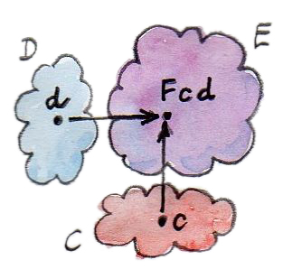
実に直截的だ。だが、関手性によると、双関手は射も写さなければならない。ただし、今回はの射との射のペアをの射に写す必要がある。
ここでも、射のペアは積圏内の1つの射に相当する。圏のデカルト積における射は、ある対象のペアから別の対象のペアへ向かう射のペアと定義される48。これらの射のペアは、自明な方法で合成できる。 合成は結合的であり、恒等射のペア を恒等射として持つ。圏のデカルト積は確かに圏だ。
双関手についてもっと簡単に考えたいなら、両方の引数を取る関手だと見なせばよい。そうすれば、関手則――結合性と恒等射の保存――を関手から双関手へ翻訳するのではなく、引数ごとに個別にチェックすれば十分だろう。ただし、一般には、個別の関手性は統合した関手性の証明としては不十分だ。統合した関手性が成り立たない［訳注：ような積を持つ］圏は前モノイダル圏 (premonoidal category) と呼ばれる。
Haskellで双関手を定義しよう。この場合の3つの圏はすべて同じで、Haskellの型の圏だ。双関手は2つの型引数を取る型構成子だ。型クラスBifunctorの定義をControl.Bifunctorライブラリーから採ると、次のとおりだ。
class Bifunctor f where
bimap :: (a -> c) -> (b -> d) -> f a b -> f c d
bimap g h = first g . second h
first :: (a -> c) -> f a b -> f c b
first g = bimap g id
second :: (b -> d) -> f a b -> f a d
second = bimap id
型変数fは双関手を表す。どの型シグネチャーにおいてもfは常に2つの型引数に適用されている。最初の型シグネチャーは、bimapが2つの関数を同時に写すものであることを規定49している。その結果は持ち上げられた関数(f a b -> f c d)であり、双関手の型構成子fが生成する型に対して作用する。
bimapにはfirstとsecondによるデフォルト実装がある（前述のとおり、これは常に機能するわけではなく、2つの写像が可換でない場合50にはfirst g . second hとsecond h . first gは同じではない）。
他の2つの型シグネチャーfirstとsecondは、2つのfmapであり、それぞれ1番目と2番目の引数についてfの関手性を示す51。
 |
 |
| first | second |
型クラス定義は、この両方のデフォルト実装をbimapに基づいて提供する。
Bifunctorのインスタンスを宣言するときには、bimapを実装してデフォルトのfirstとsecondを受け入れるか、firstとsecondの両方を実装してデフォルトのbimapを受け入れるか、どちらかを選べる（もちろん3つすべてを実装してもよいが、それらが相互に正しく関連付けられているのを確認するのはプログラマーの責任になる）。
8.2 積と余積の双関手
双関手の重要な例として、圏論的な積、つまり普遍的構成によって定義される2つの対象の積がある。対象の任意のペアに対して積が存在する場合、これらの対象から積への写像は双関手的だ。これは一般に真であり、特にHaskellについてもそうだ。最も単純な直積型である、ペア型の型構成子に対するBifunctorインスタンスはこうなる。
instance Bifunctor (,) where
bimap f g (x, y) = (f x, g y)
選択の余地はあまりない。bimapでは単に、1番目の関数をペアの第一成分に適用し、2番目の関数を第二成分に適用するだけだ。その型から、このコードが何をするかは一目瞭然だ。
bimap :: (a -> c) -> (b -> d) -> (a, b) -> (c, d)ここでの双関手の作用は、たとえば次のような型のペアを作ることだ。
(,) a b = (a, b)
双対性より、余積も、圏内の対象のすべてのペアに対して定義されているなら双関手だ。Haskellにおいては、型構成子EitherがBifunctorのインスタンスであることが良い例だ。
instance Bifunctor Either where
bimap f _ (Left x) = Left (f x)
bimap _ g (Right y) = Right (g y)このコードも何をするか一目瞭然だ。
モノイダル圏について述べたときのことを覚えているだろうか？ モノイダル圏は、対象に作用する二項演算子と単位対象とを定義する。について、デカルト積に関して単元集合を単位元とするモノイダル圏だと述べた。また、非交和に関しても空集合を単位元とするモノイダル圏だ。しかし、モノイダル圏の要件の1つとして、二項演算子が双関手でなければならないことは述べていなかった。これは非常に重要な要件だ。射によって定義される圏の構造とモノイド的な積とを両立させたいからだ。我々はいま、モノイダル圏の完全な定義に一歩近づいている（そこに到達するまでには、まだ自然性について学ぶ必要がある）。
8.3 関手的代数的データ型
これまでに、パラメーター化されたデータ型が関手であるような例、つまりそれについてfmapを定義できるような型をいくつか見てきた。複雑なデータ型は単純なデータ型から構成される。特に、代数的データ型
(ADT)
は、和と積を使って作成される。和と積が関手的なのは先ほど見た。関手が合成可能であることもすでに知っている。したがって、ADTの基本的な構成要素が関手的であると示せれば、パラメーター化されたADTも関手的だと分かる。
では、パラメーター化された代数的データ型の構成要素は何だろうか？ まず、MaybeにおけるNothingやListにおけるNilのように、関手の型パラメーターに依存しない要素がある。それらはConst関手と等価だ。Const関手は型パラメーターを無視することを思い出してほしい（いま述べているのは2番目の型パラメーターのことで、1番目のパラメーターはそのままにされる）。
次に、MaybeにおけるJustのように、単に型パラメーター自体をそのままカプセル化する要素がある。これらは恒等関手と等価だ。以前、恒等関手についての恒等射として言及したが、Haskellでの定義は説明しなかった。それをここに示す。
data Identity a = Identity ainstance Functor Identity where
fmap f (Identity x) = Identity (f x)
Identityは、型aの（不変な）値を常に1つだけ格納する、最も単純なコンテナーと見なせる。
代数的データ構造の他のすべては、これら2つのプリミティブから積と和を使って構成される。
この新しい知識に基づいて、Maybe型構成子を改めて見てみよう。
data Maybe a = Nothing | Just a
これは2つの型の和だ。和が関手的なのは知っている。1つ目の部分であるNothingは、Const ()のaに対する作用として表せる（Constの最初の型パラメーターはunit型に設定されている――後でConstのさらに興味深い使い方を説明する）。2つ目の部分は、恒等関手の別名だ。Maybeは、同型を除いて、次のようにも定義できる。
type Maybe a = Either (Const () a) (Identity a)
したがって、Maybeは双関手Eitherを2つの関手Const ()とIdentityに合成したものだ。（Constは実際には双関手だが、ここでは常に部分適用で使う。）
関手の合成が関手であることはすでに見た。同じことが双関手にも当てはまるのは簡単に納得できる。必要なのは、2つの関手との双関手の合成が、射にどのように作用するかを理解することだけだ。2つの射が与えられたとき、まず片方の関手で片方の射を、もう1つの関手でもう1つの射をそれぞれ単に持ち上げる。次に、そのようにして得られる持ち上げられた射のペアを、双関手で持ち上げる。
この合成はHaskellで表現できる。双関手bf（2つの型を引数に取る双関手コンストラクターである型変数）と、2つの関手fuとgu（それぞれ1つの型変数を取る型構成子）と、2つの通常の型aとbとによってパラメーター化されるデータ型を定義しよう。fuをaに適用し、guをbに適用し、それからbfを結果の2つの型に適用する。
newtype BiComp bf fu gu a b = BiComp (bf (fu a) (gu b))これが対象、つまり型の合成だ。Haskellで型構成子を型に適用する方法が、関数を引数に適用するのと同じであることに注目してほしい52。それらは同じ構文だ。
少し迷ったなら、BiCompを、Either、Const ()、Identity、a、bの順に適用してみてほしい。Maybe bのベアボーン版を復元できるだろう（aは無視される）。
bf自体がBifunctorでありfuおよびguがFunctorである場合については、新しいデータ型BiCompはaおよびbについて双関手だ。そのため、BiComp bf fu guをBifunctorのインスタンスにするためには、bfに対するbimapの定義と、fuとguに対するfmapの定義とが存在することをコンパイラーが認識している必要がある。Haskellでは、これはインスタンス宣言の前提条件として表現される。つまり、以下においてクラス制約のセットとして二重矢印の前に書かれた部分だ。
instance (Bifunctor bf, Functor fu, Functor gu) =>
Bifunctor (BiComp bf fu gu) where
bimap f1 f2 (BiComp x) = BiComp (bimap (fmap f1) (fmap f2) x)
BiCompに対するbimapの実装は、bfに対するbimapと、fuおよびguに対する2つのfmapによって与えられる。コンパイラーは、BiCompが使われるたびに、すべての型を自動的に推測し、適切なオーバーロード関数を選択する。
bimapの定義内のxは次のような型だ。
bf (fu a) (gu b)
これについて述べると長くなる。外側のbimapは外側のbfの層を貫通しており、2つのfmapはそれぞれfuとguの下まで掘り下げている。f1とf2の型が
f1 :: a -> a'
f2 :: b -> b' の場合、最終結果の型はbf (fu a') (gu b')となる。
bimap ::(fu a -> fu a') -> (gu b -> gu b')
-> bf (fu a) (gu b) -> bf (fu a') (gu b')ジグソーパズルが好きな人なら、この種の型操作で何時間も楽しめるだろう。
Maybeが関手だと証明する必要はなかったと分かった。この事実は、Maybeが2つの関手的プリミティブの和として構築できることから導かれたものだ。
鋭い読者なら次のように尋ねるだろう。代数的データ型に対するFunctorインスタンスをそれほど機械的に導出できるのなら、コンパイラーによって自動化して実行できないのか？ 実際、可能であり、行われている。ただし、特定のHaskell拡張を、ソースファイルの先頭に次の行を含めることで有効にする必要がある。
{-# LANGUAGE DeriveFunctor #-} そして、データ構造にderiving Functorを追加する。
data Maybe a = Nothing | Just a
deriving Functor すると、対応するfmapが自動的に実装される。
代数的データ構造の規則性により、Functorだけでなく、前に述べたEq型クラスを含む、いくつかの型クラスのインスタンスを導出できる。コンパイラーに独自の型クラスのインスタンスを派生させるように教えるという選択肢もあるが、それはもう少し高度だ。もっとも、基本的な構成要素と和と積とに対する動作を提供し、残りの部分はコンパイラーに計算させるというアイデアは変わらない。
8.4 C++における関手
C++プログラマーなら、関手の実装に関しては、明らかに自分でやることになる。しかし、C++でもある種の代数的データ構造は見つかるはずだ。そのようなデータ構造を総称テンプレートにすれば、fmapを素早く実装できるだろう。
データ木構造を見てみよう。Haskellでは再帰的な直和型として定義される。
data Tree a = Leaf a | Node (Tree a) (Tree a)
deriving Functor
前にも述べたように、C++で直和型を実装する方法の1つは、クラス階層を使うことだ。オブジェクト指向言語では、fmapを基底クラスFunctorの仮想関数として実装し、それをすべての派生クラスでオーバーライドするのが自然だ。残念ながらこれは不可能だ。なぜなら、fmapはテンプレートであり、それが作用する対象の型（thisポインター）だけでなく、それに適用された関数の戻り型によってもパラメーター化されているからだ。C++では仮想関数はテンプレート化できない。fmapを総称フリー関数として実装し、パターンマッチングをdynamic_castに置き換えよう。
基底クラスでは、動的キャストをサポートするために少なくとも1つの仮想関数を定義する必要があるため、デストラクターを仮想関数にする（いずれにしても良い考えだ53）。
template<class T>
struct Tree {
virtual ~Tree() {}
}; Leafは単なる変装したIdentity関手だ。
template<class T>
struct Leaf : public Tree<T> {
T _label;
Leaf(T l) : _label(l) {}
}; Nodeは直積型だ。
template<class T>
struct Node : public Tree<T> {
Tree<T> * _left;
Tree<T> * _right;
Node(Tree<T> * l, Tree<T> * r) : _left(l), _right(r) {}
};
fmapを実装するときには、Treeの型で動的ディスパッチを利用する。Leafの場合はIdentity版のfmapを適用し、Nodeの場合は2つのTree関手に合成された双関手のように扱う。C++プログラマーとしては、これらの用語を使ってコードを分析することに慣れていないかもしれないが、圏論的な考え方の良いエクササイズになる。
template<class A, class B>
Tree<B> * fmap(std::function<B(A)> f, Tree<A> * t)
{
Leaf<A> * pl = dynamic_cast <Leaf<A>*>(t);
if (pl)
return new Leaf<B>(f (pl->_label));
Node<A> * pn = dynamic_cast<Node<A>*>(t);
if (pn)
return new Node<B>( fmap<A>(f, pn->_left)
, fmap<A>(f, pn->_right));
return nullptr;
}
簡単のため、メモリーとリソース管理の問題は無視することにしたが、本番コードではおそらくスマートポインターを使うことになるだろう（unique_ptrかshared_ptrかはポリシーによる）。
fmapのHaskell実装と比較してほしい。
instance Functor Tree where
fmap f (Leaf a) = Leaf (f a)
fmap f (Node t t') = Node (fmap f t) (fmap f t')この実装は、コンパイラーによって自動的に導出することもできる。
8.5 Writer関手
前にクライスリ圏を説明したとき、戻ってくることを約束した。クライスリ圏の射は、Writerデータ構造を返す「装飾された」関数として表現されていた。
type Writer a = (a, String)
すでに述べたように、装飾は自己関手と何らかの関係にある。そして実際、Writerの型構成子は、aについて関手的だ。単純な直積型なので、fmapを実装する必要すらない。
しかし、クライスリ圏と関手の間には、どのような一般的な関係があるのだろうか？ クライスリ圏は圏なので、合成と恒等射が定義されている。合成はfish演算子によって与えられるのを思い出してほしい。
(>=>) :: (a -> Writer b) -> (b -> Writer c) -> (a -> Writer c)
m1 >=> m2 = \x ->
let (y, s1) = m1 x
(z, s2) = m2 y
in (z, s1 ++ s2) また、恒等射はreturnという関数によって計算される。
return :: a -> Writer a
return x = (x, "")
この2つの関数の型を十分に長く見れば（つまり、十分に長く見れば）、それらを組み合わせて、fmapとして機能するための適切な型シグネチャーを持つ関数を作成する方法が見つかる。それは次のようになる。
fmap f = id >=> (\x -> return (f x))
この例では、fish演算子は2つの関数を組み合わせている。1つはおなじみのidであり、もう1つは、引数にfを適用した結果にreturnを適用するラムダ関数だ。理解するのが最も難しいのはidを使うところだろう。Fish演算子の引数となる関数は、「通常の」型を受け取って装飾された型を返す関数ではないのだろうか？ 実は、そんなことはない。a -> Writer bのaが「普通の」型でなければならないとは誰も言っていない。これは型変数なので何でも良く、特に、Writer bのような装飾された型でも構わない。
そういうわけで、このidはWriter aを受け取り、Writer aに変換する。Fish演算子はaの値を取り出し、xとしてラムダに渡す。ここで、fはそれをbに変換し、returnはそれを装飾してWriter bにする。これらすべてをまとめると、Writer aを受け取り、Writer bを返す関数が完成する。これは、fmapが生成するはずのものと全く同じだ。
注目してほしいのは、この議論が非常に汎用的であることだ。つまり、Writerは任意の型構成子で置き換えられる。Fish演算子とreturnをサポートしていれば、fmapも定義できる。したがってクライスリ圏での装飾は常に関手となる。（ただし、すべての関手からクライスリ圏を構成できるわけではない。）
先ほど定義したfmapは、derivating Functorを使ってコンパイラーによって導出されたfmapと同じものだろうかと疑問に思うかもしれない。とても興味深いことに、同じものだ。そうなっているのは、Haskellが多相関数を実装する方法に由来する。それはパラメトリック多相と呼ばれ、いわゆるtheorems for
free54の根源となっている。それらの定理の1つは、ある型構成子に対して恒等射を保存するようなfmapの実装があるなら、それは一意である、と述べている55。
8.6 共変関手と反変関手
Writer関手を振り返り終えたのでReader関手に戻ろう。それは部分適用されたアロー（関数）型構成子に基づいていた。
(->) rこれは型シノニム56で書き直せる。
type Reader r a = r -> a
これに対するFunctorインスタンスは、これまで見てきたように、次のようになる57。
instance Functor (Reader r) where
fmap f g = f . g
だが、ペア型構成子やEither型構成子と同じく、この関数型構成子は2つの型引数を取る。ペアやEitherは両方の引数について関手的であり、すなわち双関手だった。この関数のコンストラクターも双関手だろうか？
最初の引数で関手的にすることを試みてみよう。Readerとは引数が反転している、よく似た型シノニムから始めることにする。
type Op r a = a -> r
今回は、戻り値の型rを固定し、引数の型aを変化させる。次のような型シグネチャーを持つfmapを実装するために、何らかの方法で型を一致させられるか見てみよう。
fmap :: (a -> b) -> (a -> r) -> (b -> r)
aを取りそれぞれbとrを返す2つの関数だけでは、bを取りrを返す関数を作成する方法が全くない。代わりに1つ目の関数を逆にして、bを受け取りaを返すようにできれば、状況は違ってくるだろう。任意の関数について逆関数が存在するわけではないが、反対圏に行くことはできる。
要点を再掲すると、圏ごとに反対圏が存在する。これはと同じ対象を持つ圏だが、すべての射が逆になっている。
から他の圏への関手を考えてみよう。 このような関手はの射をの射に写す。しかし、射は、もとの圏のある射と密かに対応している。反転に注意してほしい。
さて、は通常の関手だが、に基づいて定義できる別の写像があり、それは関手ではない。それをと呼ぼう。このはからへの写像だ。対象はと同じ方法で写すが、射は反転させる。つまり、の射を取り、それをまず逆向きの射に写し、次に関手を使ってを得る。
がと同じで、がと同じであることを考慮すると、この旅の全体は のように記述できる。 これは「ひねりのある関手」だ。このように射の方向を反転させる圏の写像は、反変 (contravariant) 関手と呼ばれる。反変関手は、反対圏からの通常の関手にすぎないことに注意してほしい。その一方で、これまでに学んできた通常の関手は共変 (covariant) 関手と呼ばれる。

以下の型クラスは、Haskellにおける反変関手（実のところ、反変自己関手）を定義している。
class Contravariant f where
contramap :: (b -> a) -> (f a -> f b) 前述の型構成子Opはこのインスタンスだ。
instance Contravariant (Op r) where
-- (b -> a) -> Op r a -> Op r b
contramap f g = g . f
関数fが、Opの内容、つまり関数gより前（つまり右側）に挿入されることに注意してほしい。
Opに対するcontramapの定義は、単に引数を反転した関数合成演算子であることに注意すれば、さらに簡潔にできるだろう。引数を反転するためにはflipという専用の関数がある。
flip :: (a -> b -> c) -> (b -> a -> c)
flip f y x = f x yこれを使うと次のようになる。
contramap = flip (.)8.7 プロ関手
これまで見てきたように、アロー型演算子->は、1番目の引数では反変、2番目の引数では共変だ。このような怪物に名前はあるのだろうか？ 行き先の圏がの場合、この怪物はプロ関手 (profunctor)
と呼ばれる。反変関手は反対圏からの共変関手と等価なので、プロ関手は次のように定義される。
Haskellの型は一次近似的には集合と見なせるので、引数が2つの型構成子pで、1番目の引数について反関手的で、2番目について関手的であるようなものをProfunctorと呼んでしまうことにする。Data.Profunctorライブラリーから適切な型クラスを引用しよう。
class Profunctor p where
dimap :: (a -> b) -> (c -> d) -> p b c -> p a d
dimap f g = lmap f . rmap g
lmap :: (a -> b) -> p b c -> p a c
lmap f = dimap f id
rmap :: (b -> c) -> p a b -> p a c
rmap = dimap id
これら3つの関数すべてにデフォルト実装がある。Bifunctorと同じように、Profunctorのインスタンスを宣言するとき、dimapを実装してデフォルトのlmapとrmapを受け入れるか、lmapとrmapの両方を実装してデフォルトのdimapを受け入れるか、どちらかを選択できる。

ここで、関数アロー演算子はProfunctorのインスタンスだと確認しておく。
instance Profunctor (->) where
dimap ab cd bc = cd . bc . ab
lmap = flip (.)
rmap = (.) プロ関手の応用としてはHaskellのlensライブラリーがある58。また、プロ関手についてはエンドとコエンドについて述べるときに再び触れる。
8.8 Hom関手
上記の例は、対象とのペアを取ってそれらの間の射の集合を割り当てる写像、すなわちhom集合 が関手であるという、より一般的な命題を反映している。それは積圏から集合の圏への関手だ。
射に対する作用を定義してみよう。の射は、における射のペアだ。 このペアを持ち上げたものは集合 から集合 への射（関数）になる必要がある。 の任意の要素（からへの射）を選んで、それを に写せば の要素となる。
ご覧のとおり、hom関手はプロ関手の特殊なケースだ。
8.9 課題
次のデータ型
data Pair a b = Pair a bが双関手であることを示せ。追加の課題として、
Bifunctorの3つのメソッド［訳注：bimapとfirstとsecond］の実装をすべて与え、それらの定義が、デフォルトの実装（それが適用できる場合には）と整合していることを等式変形によって示せ。Maybeの標準的な定義と次の脱糖との同型性を示せ。type Maybe' a = Either (Const () a) (Identity a)ヒント：2つの実装の間に2つの写像を定義する。追加の課題として、等式変形により、それらが互いに逆であることを示せ。
別のデータ構造を試してみよう。私はこれを
PreListと呼んでいる。Listの前身だからだ。Listにおける再帰が型パラメーターbに置き換わっている。data PreList a b = Nil | Cons a bPreListをそれ自体に再帰的に適用すれば、Listの以前の定義を復元できる（具体的にどうするかは不動点について述べるときに説明する）。PreListがBifunctorのインスタンスであることを示せ。次のデータ型が
aおよびbについての双関手を定義していることを示せ。data K2 c a b = K2 cdata Fst a b = Fst adata Snd a b = Snd b追加の課題として、Conor McBrideの論文Clowns to the Left of me, Jokers to the Right59と照らし合わせて解答を確認せよ。
Haskell以外の言語で双関手を定義せよ。その言語で
bimapを総称ペアに対して実装せよ。std::mapは、2つのテンプレート引数KeyとTについて双関手またはプロ関手と見なすべきか？ そう見なせるようにするには、このデータ型をどう再設計すればよいだろう？
9 関数型
ここまでは、関数型の意味について言い繕ってきた。関数型は他の型とは異なる。
たとえばIntegerを考えてみる。これは単に整数の集合だ。Boolは2要素の集合だ。しかし、関数型はそれ以上のもので、対象との間の射の集合だ。任意の圏における2つの対象間の射の集合はhom集合と呼ばれる。たまたま圏では、どのhom集合もそれ自体がまさにその圏の対象だ。結局それは集合だからだ。

同じことは、hom集合が圏の外にあるような他の圏には言えない。それらは外部 (external) hom集合と呼ばれることもある。

圏の自己参照的な性質によって、関数型は特殊なものになっている。しかし、少なくともいくつかの圏では、hom集合を表す対象を構成する方法がある。そういった対象は内部 (internal) hom集合と呼ばれる。
9.1 普遍的構成
関数型が集合であることをいったん忘れて、ゼロから関数型を、というより一般的に言えば内部hom集合を構成してみよう。いつものように、ここでは圏からヒントを得る。ただし、集合の性質に一切頼らないように気を付けることで、その構成が他の圏でも自動的に機能するようにする。
関数型は、引数の型と結果の型の関係性から複合型と見なせる。複合型の構成のうち、対象間の関係性が関わっているものについてはすでに見た。積と余積に相当する型を定義するのに普遍的構成を使った。同じトリックを使って関数型を定義できる。そのためには3つの対象が関わるパターンが必要になる。すなわち、構成しようとする関数型自体と、その関数型における引数の型と結果の型だ。
これら3つの型を結びつける自明なパターンは関数適用 (function application) あるいは評価 (evaluation) と呼ばれる。ある関数型の候補をと呼ぼう（圏でない場合、これは他の対象と同様の単なる対象であることに注意）。また、引数の型をと呼ぼう（これは対象だ）。関数適用はこれらのペアを結果の型（つまり対象）に写す。対象が3つあり、そのうち（引数の型と結果の型を表す）2つはすでに決まっている。
関数適用は写像だ。どうすればその写像をパターンに組み込めるだろう？ 対象の内部を見ることが許されていたなら、関数（の要素）と引数（の要素）をペアにした後でそれを（をへ適用したものであり、の要素）に写せただろう。
しかし、個々のペア を扱う代わりに、関数型と引数の型の積全体について述べることもできる。積は対象であり、関数適用を表す射として、その対象からへの射を選べる。では、は任意のペア をに写す関数となるだろう。
したがって、関数適用のパターンは、2つの対象との積が別の対象に射で接続されている、というものになる。

このパターンは、普遍的構成を使って関数型を一意に特定できるほど十分に具体的だろうか？ すべての圏でそうだとは言えない。しかし、我々が関心を持っている圏ではそうだ。さらに、別の疑問もある。積を先に定義することなく関数対象 (function object) を定義できるだろうか？ 積が全く存在しない圏や、対象のすべてのペアに対しては積が存在しない圏もある。答えはノーだ。直積型がなければ関数型はない。これについては、後で冪について述べるときに再び説明する。
普遍的構成をおさらいしよう。まず対象と射のパターンから始める。これは粗い検索であり、通常はヒットするものが多すぎる。特に、では、ほとんどすべてのものがすべてに接続されている。任意の対象を選んでとの積を作れば、そこからへの関数を作れる（が空集合の場合を除く）。
そこで秘密兵器の出番となる。順位付けだ。それを行うには通常、候補となる対象たちの間に（構成を何らかの形で分解する）一意な写像が存在することが必要となる。今回の場合においては、からへの射を伴うがそれ自身の関数適用を伴う別のよりも優れているとして選別するのは、関数適用が関数適用を通じて分解するような、からへの一意な写像が存在する場合、かつその場合に限る（ヒント：この文は図を見ながら読むこと）。

ここでトリッキーな点がある。それが、この特定の普遍的構成の説明をいままで延期した主な理由だ。射が与えられたときに、とをそれぞれと掛けた図式を閉じたい。だが、与えられているのはからへの写像なのに、本当に必要なのはからへの写像だ。そしていま、積の関手性についてすでに第8章2節で議論したので、そのやり方は分かっている。積自体が関手（正確には自己双関手）なので射のペアを持ち上げられる。言い換えると、対象の積だけでなく、射の積も定義できる。
積の2番目の要素には触れていないので、射のペア を持ち上げよう。ここで、はについての恒等射だ。
そして、ある関数適用で別の関数適用を分解する（をからくくり出す）とこうなる。 ここで鍵となるのは、射に対する積の作用だ。
普遍的構成の第3の部分は、普遍的に最も優れた対象を選ぶことだ。その対象をと呼ぶことにしよう（これは1つの対象に対する記号的な名前だと考えてほしい。Haskellの型クラス制約と混同しないように。後で別の命名方法について議論する）。この対象は独自の関数適用を伴う。それは からへの射だ。これをと呼ぶことにしよう。対象は、他のどの関数対象の候補も、その関数適用の射がを通じて分解するようなかたちでその対象へと一意に写せる場合、最も優れている。我々の順位付けにおいてこの対象は他のどの対象よりも優れている。
形式的には、
からへの関数対象は、対象に射 を伴ったものであり、他の任意の対象に射 を伴ったものに対して、一意な射 が存在してをを通じて分解する:
当然、このような対象が、与えられた圏内の任意の対象とについて存在する保証はない。しかし、では常に存在する。さらに、では、この対象はhom集合 と同型だ。
そのため、Haskellにおいて我々は、関数型a -> bを圏論の関数対象として解釈する。
9.2 カリー化
関数対象の全候補を見てみよう。ただし今回は、射を2つの引数との関数として考えてみよう。 積からの射であることと2引数関数であることは極めて近い。特に、ではは値のペアを取る関数であり、そのペアの片方は集合から、もう片方は集合からの値だ。
一方、普遍性 (universal property) は、このようなごとに、を関数対象に写す一意な射が存在することを示している。 において、これは単に関数が型の引数を1つ受け取ってからへの関数を返すことを意味する。これによっては高階関数になる。したがって、普遍的構成は、2引数関数と、関数を返す1引数関数との間に1対1の対応を確立する。この対応はカリー化 (currying) と呼ばれ、はをカリー化したものと言える。
これは1対1の対応だ。任意のに対し一意なが存在し、任意のに対して次の式を使って引数2つの関数を常に再生成できるからだ。 関数はの非カリー化 (uncurrying) したものと言える。
カリー化はHaskellの構文に本質的に組み込まれている。関数を返す関数
a -> (b -> c)は2引数関数と見なされることが多い。実際に我々は括弧を外した型をそのように読む。
a -> b -> cこの解釈は、複数の引数を取る関数を定義する方法において明確だ。たとえば
catstr :: String -> String -> String
catstr s s' = s ++ s'と同じ関数を、関数を返す1引数関数、すなわちラムダとして記述できる。
catstr' s = \s' -> s ++ s'これら2つの定義は等価であり、どちらも1つの引数だけに部分適用でき、次のような1引数関数が得られる。
greet :: String -> String
greet = catstr “Hello “厳密に言えば、2引数関数というのはペア（直積型）を取る関数のことだ。
(a, b) -> c
2つの表現の間の変換は自明であり、それを行う2つの（高階）関数は、もちろん、curryとuncurryと呼ばれる。
curry :: ((a, b) -> c) -> (a -> b -> c)
curry f a b = f (a, b)および
uncurry :: (a -> b -> c) -> ((a, b) -> c)
uncurry f (a, b) = f a b
curryは、関数対象の普遍的構成のfactorizerであることに注目してほしい。これは、次の形に書き直した場合に特に顕著だ60。
factorizer :: ((a, b) -> c) -> (a -> (b -> c))
factorizer g = \a -> (\b -> g (a, b))（備忘録：factorizerは候補から分解関数を生成する。）
C++のような非関数型言語でもカリー化は可能だが、簡単ではない。C++の複数引数関数は、Haskellでの組を取る関数に対応すると見なせる（ただし、さらに混乱を招くことに、C++では明示的なstd::tupleを取る関数や、可変長引数関数や、初期化子リストを取る関数も定義できる）。
テンプレートstd::bindを使えばC++でも関数を部分適用できる。たとえば、文字列2つを取る関数があるとする。
std::string catstr(std::string s1, std::string s2) {
return s1 + s2;
}文字列1つを取る関数は次のように定義できる。
using namespace std::placeholders;
auto greet = std::bind(catstr, "Hello ", _1);
std::cout << greet("Haskell Curry");ScalaはC++やJavaよりも関数型寄りで、中間的な立場に立っている。定義したい関数が部分適用されると予想されるときは、複数引数のリストを使って定義する。
def catstr(s1: String)(s2: String) = s1 + s2当然、これにはある程度の先見の明や予測がライブラリーの作者に求められる。
9.3 冪
数学の文献では、関数対象、すなわち2つの対象との間の内部hom対象を冪 (exponential) と呼んでと記すことが多い。引数の型が指数に含まれていることに注目してほしい。この記法は一見奇妙に思えるかもしれないが、関数と積の関係を考えると完全に理にかなっている。内部hom対象の普遍的構成で積を使わなければならないことはすでに見たが、つながりはそれよりも深い。
関数と積の密接なつながりは、有限型の間の関数を考えるときに最もよく見える。有限型とは、Bool、Char、さらにはIntやDoubleなど、有限個の値しか持たない型のことだ。それらの間の関数は、少なくとも原理的には、完全にメモ化したり、データ構造に変換してルックアップしたりできる。そしてこれが、射である関数と、対象である関数型との等価性の本質だ。
たとえば、Boolを取る（純粋）関数は、Falseに対応する値とTrueに対応する値のペアによって完全に決まる。Boolから、たとえばIntへのすべての可能な関数の集合はIntのすべてのペアの集合だ。これは積Int
Intと同じ集合であり、記法を少し創意工夫するならInt2とも書ける。
別の例として、256種類の値を含むC++の型charを見てみよう（HaskellのCharはUnicodeを使っているのでもっと多い61）。
C++標準ライブラリーの一部には、実装に通常はルックアップが使われる関数がいくつかある。isupperやisspaceのような関数はテーブルを使って実装される。テーブルは256個のブール値の組と等価だ。組は直積型であるため、256個のブーリアンの積bool × bool × bool × ... × boolを扱っていることになる。算術で学んだとおり、積を繰り返したものが冪乗だった。boolを256（つまりchar）回「掛ける」と、boolのchar乗、つまりboolcharになる。
boolの256個の組として定義される型には何通りの値が含まれているだろう？ ちょうど通りだ。これはまた、charからboolへの関数の種類の数でもあり、各関数は一意な256要素の組に対応する。同様に、boolからcharへの関数の数はと計算できる。以下同様だ。このような場合には、関数型の冪記法が完全に理にかなっている。
intやdoubleを取る関数を完全にメモ化したいとは思わないだろう。だが、関数とデータ型の間には、常に実用的だとは限らないにしても、等価性がある。（有限型だけでなく）リスト・文字列・木などの無限型もある。それらの型を取る関数の積極的
(eager)
なメモ化には、無限のストレージが必要になるだろう。しかし、Haskellは遅延評価言語であるため、遅延評価された（無限）データ構造と関数の境界は曖昧だ。この関数とデータの双対性は、Haskellの関数型と圏論の冪対象との同一視を説明している。冪対象の方がデータという概念によく対応している。
9.4 デカルト閉圏
私はこれ以降も型や関数のモデルとして集合の圏を使うが、同じ目的に使えるような、圏のより大きな族があることは言及する価値がある。それらはデカルト閉 (Cartesian closed) 圏と呼ばれ、はそのような圏の一例だ。
デカルト閉圏は以下のものを含む必要がある。
- 終対象
- 任意の対象のペアの積
- 対象の任意のペアの冪
冪を（無限に繰り返される可能性がある）積の反復と見なすなら、デカルト閉圏は任意のアリティ62の積をサポートするものと見なせる。特に、終対象は0個の対象の積、すなわち対象の0乗と見なせる。
コンピューター科学の観点から興味深いのは、デカルト閉圏が単純型付きラムダ計算（simply typed lambda calculus）のモデルを提供し、あらゆる型付きプログラミング言語の基礎をなしていることだ。
終対象と積には、始対象と余積という双対がある。それら2つも含むデカルト閉圏では、余積に対し積を分配できる。 そのような圏は双デカルト閉 (bicartesian closed) 圏と呼ばれる。次の節では、に代表される双デカルト閉圏の興味深い特性について説明する。
9.5 冪と代数的データ型
関数型を冪として解釈すると、代数的データ型の体系に非常にうまく適合する。高校で習う代数における数0と1や和・積・冪に関する基本的な恒等式はどれも、双デカルト閉圏においてそれぞれ始対象と終対象や余積・積・冪を考えれば、ほとんどそのまま使えることが分かる。それらについて、証明する手段（随伴や米田の補題など）はまだ得ていないが、価値ある直観の源としてここに挙げておこう。
9.5.1 0乗
圏論的解釈では、0を始対象に、1を終対象に、等しさを同型に置き換える。冪は内部hom対象だ。ここに示した冪は、始対象から任意の対象への射の集合を表している。始対象の定義によれば、そのような射は1つだけ存在するので、hom集合 は単元集合となる。単元集合は内の終対象なので、この恒等式は内で自明に成り立つ。言いたいことは、これがどんな双デカルト閉圏でも成り立つということだ。
Haskellでは、0をVoidで、1をunit型()で、冪を関数型でそれぞれ置き換える。これは、Voidから任意の型aへの関数の集合と、単元集合であるunit型が等価だと主張している。言い換えると、関数Void -> aは1つしかない。この関数は以前見た。absurdと呼ばれる関数だ。
2つの理由から、これは少しトリッキーだ。1つは、Haskellは実際には住人がいない型を持たないことだ――すべての型には「終わりのない計算の結果」、つまりボトムが含まれている。第2の理由は、absurdのすべての実装は等価であるということだ63。なぜなら、それらが何をしようと、誰も実行できないからだ。absurdに渡せる値はない。（そして、終わりのない計算を渡せたとしても、決して値は返らない！）
9.5.2 1の冪乗
この恒等式をで解釈すると、終対象の定義である「どの対象にも終対象への一意な射がある」を言い換えている。一般に、から終対象への内部hom対象は、終対象そのものと同型だ。
Haskellでは、型aからunit型への関数は1つしかない64。この関数は以前にも見たことがある。unitと呼ばれる関数だ。()に部分適用されたconst関数とも見なせる。
9.5.3 1乗
これは、終対象からの射が対象aの「要素」を選ぶのに利用できるという観点を言い換えたものだ。このような射の集合は対象そのものと同型だ。とHaskellでは、集合aの要素と、それらの要素を選択する関数() -> aとの間に同型が成り立つ。
9.5.4 和による冪
これは、圏論では2つの対象の余積による冪が2つの冪の積と同型だと明示している。Haskellでは、この代数的恒等式に非常に実用的な解釈がある。これは、2つの型の直和型を取る関数が、それら個々の型を取る関数のペアと等価だと示している。直和型を取る関数を定義するときに使う場合分け
(case analysis)
そのものだ。case式で1つの関数定義を記述する代わりに、通常はそれを2つ（またはそれ以上）の関数に分割して、それぞれの構成子を別々に処理する。たとえば、直和型
(Either Int Double) を取る関数を考えよう。
f :: Either Int Double -> String
これは、それぞれIntとDoubleを取る2つの関数のペアとして定義できる。
f (Left n) =
if n < 0
then "Negative int"
else "Positive int"
f (Right x) =
if x < 0.0
then "Negative double"
else "Positive double"
ここで、nはIntで、xはDoubleだ。
9.5.5 冪の冪
これは単にカリー化を純粋に冪対象の観点で表現したものだ。関数を返す関数は、積を引数に取る関数（2引数の関数）と等価だ。
9.5.6 積の冪
Haskellでは、ペアを返す関数は、それぞれがペアの1つの要素を生成する関数のペアと等価だ。
これらの高校数学の単純な代数的恒等式が、このように圏論に持ち上げられ、関数プログラミングで実用的な応用があるのは、実に驚くべきことだ。
9.6 カリー・ハワード同型
論理と代数的データ型の対応についてはすでに述べた。Void型とunit型()は、偽と真に対応する。直積型と直和型は、論理積
(AND)
と論理和
(OR)
に対応する。この図式では、先ほど定義した関数型は論理包含に対応する。つまり、型a -> bは「aならばb」と読める。
カリー・ハワード同型 (Curry-Howard isomorphism) によれば、すべての型は命題として解釈できる。命題とは、真または偽に定まる言明や判断だ。そのような命題は、型が居住されているならば真とされ、そうでなければ偽とされる。論理包含では、対応する関数型が居住されている（その型の関数が存在する）ならば真となる。したがって、関数の実装は定理の証明になる。プログラムを書くのは定理を証明するのと等価だ。いくつか例を見てみよう。
関数対象の定義で導入した関数evalを取り上げよう。シグネチャーは次のとおりだ。
eval :: ((a -> b), a) -> bこれは関数とその引数のペアを取り、適切な型の結果を生成する。つまり、次の射をHaskellで実装したものだ。 この射は関数型（すなわち冪対象）を定義する。この型を、カリー・ハワード同型を使って論理の命題に変換しよう。 この命題の読み方はこうだ。ならばが真であり、かつが真ならば、は必ず真である。これは完全に直観に適っていて、古代からmodus ponensとして知られていた。次の関数を実装することで、この定理を証明できる。
eval :: ((a -> b), a) -> b
eval (f, x) = f x
aを取りbを返す関数fと、型aの具体的な値xとのペアがあれば、fをxに適用するだけで型bの具体的な値を得られる。この関数を実装することで、型((a -> b), a) -> bが居住されていることが示せた。modus
ponensは我々の論理では真だ。
では、あからさまに間違っている命題ではどうだろうか？ 例：またはが真ならばは真でなければならない。 これは明らかに間違っている。なぜなら、が偽でが真の場合が反例となるからだ。
この命題をカリー・ハワード同型を使って関数型に写すと、次のようになる。
Either a b -> a
いくらやってみても、この関数は実装できない――Rightの形の値で呼び出された場合、型aの値は生成できない（ここでは純粋関数について説明していることを思い出してほしい）。
最終的に、absurd関数が意味するものに辿り着く。
absurd :: Void -> a Voidが偽に変換されることを考えると、次のようになる。
虚偽からは何でも導ける (ex falso
quodlibet)。Haskellにおけるこの命題（関数）の証明（実装）として可能なものを以下に1つ示す。
absurd (Void a) = absurd a ここで、Voidは次のように定義される。
newtype Void = Void Void
いつものように、型Voidはトリッキーだ。この定義により、値を構成するには値を提供する必要があるため、値を構成できない65。したがって、この関数absurdは決して呼び出せない。
いずれも興味深い例だが、カリー・ハワード同型に実用面はあるのだろうか？ おそらく日々のプログラミングではないだろう。しかし、AgdaやCoqのようなプログラミング言語では、定理を証明するためにカリー・ハワード同型が利用されている。
コンピューターは数学者の仕事を助けている66だけでなく、数学の基礎そのものに革命をもたらしている。この分野の注目の最新のホットな研究テーマはホモトピー型理論 (Homotopy Type Theory, HoTT) と呼ばれ、型理論の派生物だ。ブーリアン、整数、積と余積、関数型などでいっぱいだ。そして、疑念を払拭するかのように、その理論はCoqとAgdaで定式化されようとしている。コンピューターは世界にさまざまな形で革命を起こしている。
9.7 参考文献
- Ralf Hinze, Daniel W. H. James, Reason Isomorphically!67. この論文には、この章で述べた圏論におけるすべての高校数学の代数的恒等式の証明が含まれている。
10 自然変換
関手については圏と圏との間で構造を保存する写像としてすでに述べた。
関手はある圏を別の圏に「埋め込む」。複数のものが1つに潰されることはあっても、接続が切断されることはない。関手は、それによって1つの圏を別の圏の中でモデル化していると捉えられる。もとの圏は、行き先の圏の一部である構造物のモデル、あるいは青写真として機能する。

1つの圏を別の圏に埋め込む方法はいろいろある。それらは等価なこともあれば、大きく異なることもある。もとの圏全体を1つの対象に潰すこともあれば、すべての対象を異なる対象に写し、すべての射を異なる射に写すこともある。同じ青写真を実現する方法はいろいろある。自然変換は、それらの実現方法を比較するのに役立つ。自然変換は関手間の写像であり、その関手的性質を保存する特別な写像だ。
圏との間にとという2つの関手があるとする。内の1つの対象だけに注目すると、それが2つの対象とに写されているのが分かる。したがって、関手の写像はをに写すべきだ。

とは同じ圏内の対象であることに注意してほしい。同じ圏内の対象間の写像は、圏の特性に反するものであってはならない。対象同士の間に取ってつけたような接続を作成したくはない。したがって、既存の接続、つまり射を使用するのは自然だ。自然変換は射たちを選択することであり、対象ごとにからへの射を1つ選択する。その自然変換をと呼ぶとき、この射はのにおける成分 (component) と呼ばれ、と表記される。 はの対象であり、はの射であることに注意してほしい。
あるについて、内のとの間に射がない場合、との間に自然変換はない。
もちろん、これは話の半分にすぎない。なぜなら、関手は対象だけでなく射も写すからだ。では自然変換はこれらの射の写像をどうするのだろうか？ 実は射の写像は固定されていて、との間の自然変換ではがに変換されなければならない。さらに、2つの関手による射の写像は、それに適合する自然変換を定義する際の選択肢を大幅に制限する。の2つの対象との間に射があるとする。それは内の2つの射とに写される。 自然変換は内の追加の射を2つ与え、図式を完成させる。
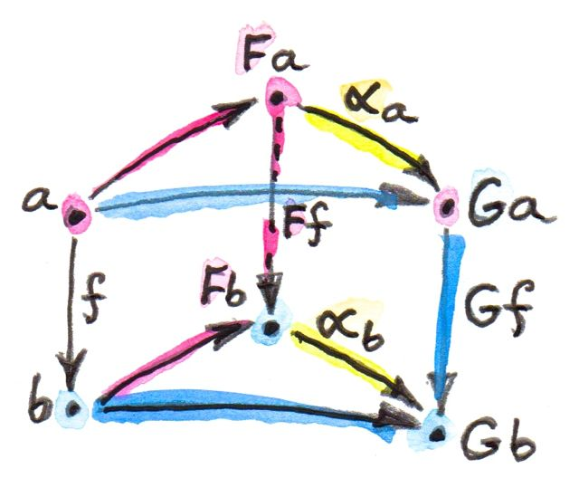
いま、からへの移行には2つの方法がある。これらが等しいことを確認するには、任意のに対して成り立つような自然性条件 (naturality condition) を課す必要がある。 自然性条件はかなり厳しい要件だ。たとえば、射が可逆である場合、自然性はに基づいてを決定する。それはに沿ってをトランスポート (transport) する。

2つの対象間に2つ以上の可逆な射がある場合、トランスポートはすべて一致する必要がある68。もっとも、一般には射は可逆ではない。しかし、2つの関手間に自然変換が存在するとは全く保証されていないことは理解できる。したがって、自然変換によって関連する関手が多いか少ないかは、それらが作用する圏の構造について多くのことを教えてくれるだろう。極限と米田の補題について話すときに、いくつかの例を見ることになる。
自然変換を成分ごとに見ると、対象を射に写していると言える。自然性条件があるので、射を可換正方図式に写しているとも言えるだろう――のすべての射に対して内に四角い自然性の可換図式が1つ存在する。

自然変換のこの性質は、多くの圏論的構成で非常に便利になる。それらは可換図式を伴うことが多いからだ。関手を適切に選択すれば、それらの可換性条件の多くは自然性条件に変換できる。その例は、極限・余極限・随伴に辿り着いたときに見ることになるだろう。
最後に、自然変換を使って関手の同型を定義できる。2つの関手が自然に同型であると言うのは、全く同じだと言っているようなものだ。自然同型 (natural isomorphism) は、成分がすべて同型（可逆な射）である自然変換として定義される。
10.1 多相関数
プログラミングにおける関手（より正確には自己関手）の役割についてはすでに述べた。それらは型を型に写すような型構成子に対応する。また、そういった関手は関数を関数に写すが、この写像は高階関数fmap（あるいはC++におけるtransformやthenに類するもの）によって実装される。
つまり、自然変換を構成するのに、まずは1つの対象、ここでは型aから始めることにする。関手Fはそれを型に写すとし、別の関手Gはに写すとする。aにおける自然変換alphaの成分は、からへの関数だ。疑似Haskellではこうなる。
自然変換は、すべての型aに対して定義される多相関数だ。
alpha :: forall a . F a -> G a
このforall aはHaskellでは必須ではない（そして実際にそれを明記するには言語拡張ExplicitForAllを有効にする必要がある）。通常は次のように記述する。
alpha :: F a -> G a
これは実際にはaによってパラメーター化された関数の族であることに注意してほしい。これもまた、Haskellの構文の簡潔さを示す一例だ。C++では同様の構文はもう少し冗長になる。
template<class A> G<A> alpha(F<A>);Haskellの多相 (polymorphic) 関数とC++の総称 (generic) 関数との間にはさらに大きな違いがあり、そういった関数を実装したり型検査したりする方法はそれを反映している。Haskellでは、多相関数はすべての型に対して一様に定義されなければならない。1つの解決法があらゆる型にわたって機能する必要がある。これはパラメトリック多相 (parametric polymorphism) と呼ばれる。
一方、C++はデフォルトでアドホック多相69 (ad hoc polymorphism) をサポートしており、テンプレートはすべての型に対して明確に定義されている必要はない。ある型に対してテンプレートが機能するかどうかは、型パラメーターが具体的な型で置換されるインスタンス化時に決定される。型検査が遅延されるため、残念ながら、理解し難いエラーメッセージにつながることがよくある。
C++には関数のオーバーロードとテンプレートの特殊化のための機構もあり、同じ関数で異なる型に対して異なる定義を行える。Haskellでは、この機能は型クラスと型族 (type family) によって提供されている。
Haskellのパラメトリック多相は予想外の結果をもたらす。次のような型の多相関数
alpha :: F a -> G a
を関手FとGについて考えると、それらはすべて自動的に自然性条件を満たす。圏論の表記法で表すとこうなる（は関数だ）。
Haskellでは、関手fの射Gに対する作用はfmapを使って実装される。最初に疑似Haskellで、明示的な型注釈を付けて書こう。
fmap fG . alphaa = alphab . fmapF f型推論によって、これらの型注釈は不要になり、次の等式が成り立つ。
fmap f . alpha = alpha . fmap fこれはまだ本物のHaskellではない――実際のHaskellでは関数の等しさをコードで表現できない――が、この恒等式はプログラマーによる等式による推論やコンパイラーによる最適化の実装に使える。
Haskellで自然性条件が自動で成り立つ理由は “theorems for free” に関係している。Haskellで自然変換を定義するのに使われるパラメトリック多相は、実装に非常に強い制限を課す――すべての型に対して1つの解決法という制限だ。それらの制限は、そのような関数に関する等式定理に変換される。関手を変換する関数の場合、free theoremは自然性条件だ70。
関手のHaskellにおける捉え方の1つとして以前述べたのは、一般化されたコンテナーと見なすことだった。その類推を続けると、自然変換は、あるコンテナーの中身を別のコンテナーに再パッケージするレシピと見なせる。要素自体に触れることはなく、要素を変更したり新しい要素を作成したりはしない。それら（の一部）を、ときには複数回、新しいコンテナーにコピーするだけだ。
自然性条件は、最初にfmapを適用して要素を変更してから後で再パッケージするのか、それとも最初に再パッケージしてからfmapを独自に実装して新しいコンテナー内の要素を変更するのか、は問題ではないという宣言になる。再パッケージ化とfmapの2つの作用は直交している。「一方は卵を動かし、もう一方は茹でる。」71
Haskellでの自然変換の例をいくつか見てみよう。1つ目はリスト関手とMaybe関手の間の自然変換だ。これはリストが空でない場合に先頭要素を返す。
safeHead :: [a] -> Maybe a
safeHead [] = Nothing
safeHead (x:xs) = Just x
これはaについて多相な関数だ。aがどんな型であっても制限なく機能するので、パラメトリック多相の一例だと言える。したがって、これは2つの関手の間の自然変換だ。だが、我々自身が納得するために、自然性条件を証明してみよう。
fmap f . safeHead = safeHead . fmap f考慮すべきケースは2つある。1つは空リストだ。
fmap f (safeHead []) = fmap f Nothing = NothingsafeHead (fmap f []) = safeHead [] = Nothingもう1つは空でないリストだ。
fmap f (safeHead (x:xs)) = fmap f (Just x) = Just (f x)safeHead (fmap f (x:xs)) =
safeHead (f x : fmap f xs) = Just (f x)
ここで、fmapの実装として以下の2つを利用した。リスト用
fmap f [] = []
fmap f (x:xs) = f x : fmap f xs Maybe用
fmap f Nothing = Nothing
fmap f (Just x) = Just (f x)
興味深いのは、関手の1つが自明なConst関手であるケースだ。Const関手からの自然変換は戻り値の型について多相な関数のように見え、Const関手への自然変換は引数の型について多相な関数のように見える。
たとえば、lengthはリスト関手からConst Int関手への自然変換と見なせる。
length :: [a] -> Const Int a
length [] = Const 0
length (x:xs) = Const (1 + unConst (length xs))
ここで、unConstはConstコンストラクターを引き剥がすのに使われる。
unConst :: Const c a -> c
unConst (Const x) = x 当然、実用上はlengthは次のように定義される。
length :: [a] -> Intこれは実質的に、自然変換であるという事実を隠してしまう。
Const関手からのパラメトリック多相関数を見つけるのは少し難しい。無から値を生成する必要があるからだ。最善を尽くすと、次のようになる。
scam :: Const Int a -> Maybe a
scam (Const x) = Nothing
すでに見たもう1つの一般的な関手で、後ほど米田の補題で重要な役を果たすのは、Reader関手だ。定義をnewtypeに書き直そう。
newtype Reader e a = Reader (e -> a)これは2つの型によってパラメーター化されているが、（共変）関手的なのは2番目の型だけだ。
instance Functor (Reader e) where
fmap f (Reader g) = Reader (\x -> f (g x))
すべての型eについて、Reader eから他の任意の関手fへの自然変換の族を定義できる。この族の元が常にf eの要素と1対1に対応している（米田の補題）ことを後で説明する。
たとえば、1つの要素()を持つ、いくぶんつまらないunit型()について考えてみよう。関手Reader ()は、任意の型aを取り、それを関数型() -> aに写す。これらは単に、集合aから1つの要素を選択するすべての関数だ。それらはaにある要素と同じ数だけある。ここで、この関手からMaybe関手への自然変換を考えてみよう。
alpha :: Reader () a -> Maybe a あるのはdumbとobviousの2つだけだ。
dumb (Reader _) = Nothingおよび
obvious (Reader g) = Just (g ())
(gについてできるのはunit値()に適用することだけだ。)
そして実際、米田の補題によって予言されるように、これらはMaybe ()型の2つの要素、NothingとJust ()に対応している。米田の補題には後で戻ってこよう――ここではほんの少し垣間見ただけだ。
10.2 自然性を越えて
2つの関手の間のパラメトリック多相関数（Const関手という特殊な例を含む）は常に自然変換だ。標準的な代数的データ型はすべて関手なので、これらの型の間の多相関数はすべて自然変換だ。
また、関数型も自由に使えて、それらは戻り値の型について関手的だ。それらを使って（Reader関手のような）関手を構成し、高階関数である自然変換を定義できる。
しかし、関数型は引数について共変ではない。それらは反変だ。当然、反変関手は反対圏からの共変関手と等価だ。2つの反変関手の間の多相関数は、反対圏からHaskellの型への関手を処理する点を除けば、圏論的には自然変換だ。
反変関手の例を前に見たのを覚えているだろう。
newtype Op r a = Op (a -> r) この関手はaについて反変だ。
instance Contravariant (Op r) where
contramap f (Op g) = Op (g . f)
たとえば、Op BoolからOp Stringへの多相関数を書ける。
predToStr (Op f) = Op (\x -> if f x then "T" else "F")ただし、2つの関手は共変ではないので、これはでの自然変換ではない。しかし、どちらも反変なので、「反対」の自然性条件は満たしている。
contramap f . predToStr = predToStr . contramap f
contramapのシグネチャーは次のとおりなので、関数fはfmapで使うのとは逆方向でなければならないことに注意してほしい。
contramap :: (b -> a) -> (Op Bool a -> Op Bool b)共変にしろ反変にしろ、関手ではない型構成子は存在するのだろうか？ 次のような例が挙げられる。
a -> a
同じ型aが負（反変）と正（共変）の両方の位置で使われているので、これは関手ではない。この型にはfmapやcontramapを実装できない。したがって、次のシグネチャーを持つ関数
(a -> a) -> f a
は自然変換にはなれない。ここで、fは任意の関手だ。興味深いことに、このような場合を扱う一般化された自然変換として、対角自然変換と呼ばれるものがある。これについてはエンドについて議論するときに説明しよう。
10.3 関手圏
関手間の写像――自然変換――ができたいま、関手が圏をなすのかを問うのは自然だ。そして、実際になす、というのが答だ！ との圏のペアごとに、関手の圏が1つある。この圏の対象はからへの関手であり、射はこれらの関手間の自然変換だ。
2つの自然変換の合成を定義する必要があるが、それは非常に簡単だ。自然変換の成分は射であり、射を合成する方法は分かっている。
実際に、関手からへの自然変換を取ろう。対象におけるその成分はこのような射だ。 を、関手からへの自然変換であると合成したい。でのの成分は次の射だ。 これらの射は合成可能であり、その合成は次のような別の射だ。 この射を自然変換――自然変換を自然変換の後に合成したもの――の成分として使う。
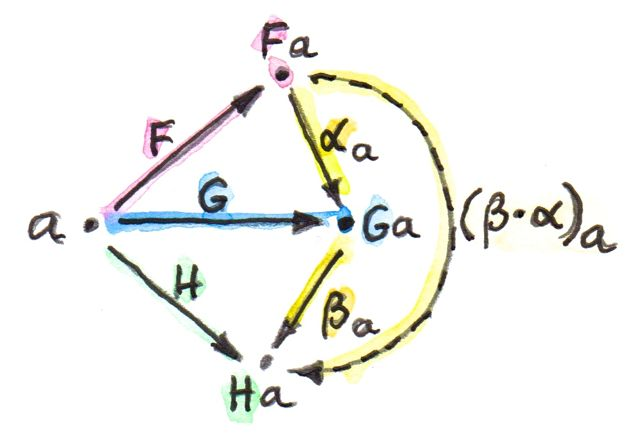
図式を（長く）見ていると、この合成の結果は本当にからへの自然変換だと確信できる。

自然変形の合成は結合的だ。それらの構成要素は通常の射であり、合成に関して結合的だからだ。
最後に、各関手について恒等自然変換があり、その成分は恒等射だ。 以上より、確かに関手は圏をなしている。
記法について述べておこう。ソーンダーズ・マックレーンにしたがって、私は先ほど述べたような自然変換の合成にドットを使う。問題は、自然変換を合成する方法が2つあることだ。ここで使ったものは垂直合成 (vertical composition) と呼ばれている。通常は関手を上下に積んだ図式で説明されるからだ。垂直合成は関手圏を定義するうえで重要だ。水平合成についてもすぐに説明する。

圏との間の関手圏は、または、場合によってはと書かれる。この最後の表記法は、関手圏自体が他の圏では関数対象（冪）と見なせることを示唆している。だが、本当にそうだろうか？
これまでに構成してきた抽象化の階層を見てみよう。最初は対象と射の集まりとしての圏から始めた。圏自体（厳密に言えば、対象たちが集合をなす小さい圏）は、それ自体がより高いレベルの圏における対象だ。その圏における射は関手だ。におけるhom集合は関手の集合だ。たとえば、は、2つの圏との間の関手の集合だ。
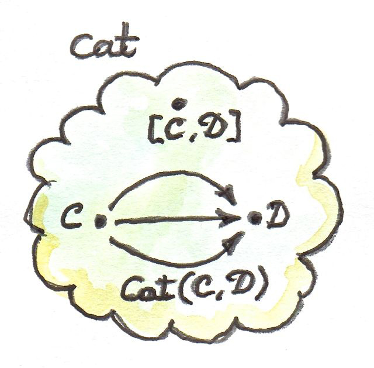
関手圏も、2つの圏の間の関手の集合に、射としての自然変換を加えたものだ。その対象はの元と同じだ。さらに、関手圏は圏なので、それ自体がの対象でなければならない（2つの小さい圏の間の関手圏も、それ自体が小さい圏だ）。ある圏のhom集合と、同じ圏の対象の間の関係は知っている。この状況は、前の章で見た冪対象と全く同じだ。後者をにおいて構成する方法を見てみよう。
覚えていると思うが、冪を構成するには、まず積を定義する必要がある。では、これは実は比較的簡単だ。なぜなら、小さい圏は対象の集合であり、集合のデカルト積を定義する方法は知っているからだ。したがって、積圏内の対象は単なる対象のペア であり、とからそれぞれ1つ取ったものだ。同様に、そのような2つのペア と の間の射は、射のペア であり、ここでおよびだ。これらの射のペアは成分ごとに合成でき、恒等ペアとしての単なる恒等射のペアも常に存在する。手短に言うと、は完全なデカルト閉圏であり、そこにはあらゆる圏のペアに対する冪対象が存在する。そして、の「対象」は圏を意味するので、は圏であり、との間の関手圏と同一視できる。
10.4 2-圏
閑話休題、ここでを詳しく見てみよう。定義より、内のどのHom集合も関手の集合だ。しかし、これまで見てきたように、2対象間の関手は単なる集合よりも豊かな構造を持っている。それらは圏をなし、自然変換は射として作用する。関手はでは射と見なされるので、自然変換は射の間の射だ。
より豊かなこの構造は、圏の一般化である-圏の例であり、対象と（この文脈では-射とも呼べる）射の他に、射の間の射である-射も存在する。
を-圏と見なす場合、次のようになる。
- 対象：（小さい）圏
- 1-射：圏の間の関手
- 2-射：関手の間の自然変換
2つの圏との間のHom集合の代わりにHom圏――関手圏がある。通常の関手合成があり、からの関手はからの関手と合成してからの関手を与える。さらに、それぞれのHom圏内での合成もある――関手間での自然変換（すなわち2つの射）の垂直合成だ。
-圏に2種類の合成があるので、それらはどのように相互作用するのか、という疑問が生じる。
内の関手すなわち1-射を2つ選択しよう。 これらの合成は次のとおりだ。 とという2つの自然変換があって、それぞれとに作用するとする。
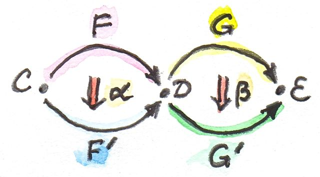
の余域との域が異なるため、このペアには垂直合成を適用できないことに注意してほしい。実際、これらは別々の関手圏とのメンバーだ。しかし、関手とに合成を適用することはできる。の余域もの域も圏だからだ。関手とはどのような関係だろうか？
とを自由に使えるので、からへの自然変換を定義できるだろうか？ 構成をスケッチしよう。

いつものように、内の対象から始める。その像はの2つの対象とに分割される。また、の成分である射が2つの対象を接続している。 からに移行するとき、これら2つの対象はさらに4つの対象、、、 に分割される。正方図式を形成する4つの射もある。これらの射のうちの2つは、自然変換の成分だ。 他の2つは、2つの関手によるの像だ（関手は射を写す）。 射がとてもたくさんある。目標は、 から への射を見つけることだ。これは2つの関手とを接続する自然変換の成分の候補だ。実際、 から への道は1つではなく2つある。 ありがたいことに、これらは等しい。我々が形成した正方図式はの四角い自然性の図式だからだ。
からへの自然変換の成分が定義できた。この変換に対する自然性の証明は、十分に忍耐強い人にとっては、ごく簡単だ。
この自然変換を、との水平合成 (horizontal composition) と呼ぶ。 ここでも私はマックレーンに従って水平合成を表すのに小さな円を使うが、代わりにアスタリスクが使われることもある。
圏論的経験から言えば、合成に出会うたびに圏を探すべきだ。自然変換には垂直合成があり、それは関手圏の一部だ。しかし、水平合成についてはどうだろうか？ それはどの圏にあるのだろう？
これを解明する方法は、を横から見ることだ。自然変換を、関手の間の矢としてではなく、圏の間の矢として見てほしい。自然変換は、それが変換する関手で接続された2つの圏の間に位置する。つまり、それら2つの圏を結びつけるものと見なせる。
ここではの2つの対象――圏とに焦点を当てる。をに接続する関手間をつなぐ自然変換の集合がある。それらの自然変換がからへの新しい矢だ。同様に、をに接続する関手間をつなぐ自然変換が存在する。これはからへ向かう新しい矢として扱える。水平合成はこれらの矢の合成だ。
また、からへの恒等射も存在する。これは恒等自然変換であり、上の恒等関手をそれ自体に写す。水平合成の恒等射は垂直合成の恒等射でもあるが、逆は成り立たないことに注意してほしい。
最後に、2つの合成は相互交換法則 (interchange law) を満たす。 ここでソーンダーズ・マックレーンの言葉を引用しよう。「読者はこの事実を証明するのに必要となる証明の図式を書き下すと楽しいだろう。」72
あともう1つ、将来役に立つだろう表記法がある。のこの水平方向の新解釈では、対象から対象へ行く方法が2つある。関手を使う方法と自然変換を使う方法だ。しかし、関手の矢は特別な種類の自然変換として再解釈できる。すなわち、その関手に作用する恒等自然変換として解釈すればよい。したがって、このような記法をよく目にすることになるだろう。 ここで、はからへの関手で、はからへの2つの関手間の自然変換だ。関手と自然変換は合成できないので、これは恒等自然変換をの後に水平合成したものと解釈される[^訳注：この記法はwhiskeringと呼ばれる。詳しくは、同じ著者による “The Dao of Functional Programming” の第9章3節を参照。]。
同様に はをの後に水平合成したものだ。
10.5 おわりに
この本の第I部はここで締めくくろう。我々は圏論の基本的な語彙を学んだ。対象・圏は名詞、射・関手・自然変換は動詞と見なせる。射は対象たちを結びつけ、関手は圏たちを結びつけ、自然変換は関手たちを結びつける。
しかし、ある抽象化レベルで作用として現れるものが、次のレベルでは対象になることもまた見た。射の集合は関数対象になる。それは対象なので、別の射の始点や終点になり得る。これが高階関数の背景にある概念だ。
関手は対象を対象に写すので、型構成子、すなわちパラメーター化された型として使える。関手は射も写すので、高階関数fmapでもある。Const・積・余積などの単純な関手がいくつかあって、さまざまな代数的データ型の生成に使える。関数型も［訳注：戻り値の型において］共変関手的かつ［訳注：引数の型において］反変関手的で、代数的データ型を拡張するのに使える。
関手は関手圏での対象とも見なせる。そうすることで、それらは自然変換、すなわち射の始点および終点になる。自然変換は特別な多相関数だ。
10.6 課題
Maybe関手からリスト関手への自然変換を定義せよ。その自然性条件を証明せよ。Reader ()とリスト関手の間に、少なくとも2つの異なる自然変換を定義せよ。要素がunit型()のリストは何種類あるか？Reader BoolとMaybeを使って前の課題を続けよ。自然変換の水平合成が自然性条件を満たしていることを示せ（ヒント：成分を使う）。これは図式を追う良い練習になる。
相互交換法則を証明するために必要な明確な図を描くのを楽しむ方法について、短いレポートを書け。
異なる
Op関手間の変換についての反対の自然性条件について、テストケースをいくつか作成せよ。以下は選択肢の1つだ。op :: Op Bool Int op = Op (\x -> x > 0)および
f :: String -> Int f x = read x
11 宣言的プログラミング
第I部では、圏論とプログラミングはどちらも合成可能性に関するものだと論じた。プログラミングでは、扱える程度の詳細さに達するまで問題を分解し続け、それぞれの部分問題を順番に解決し、それらの解決策をボトムアップで再合成する。これには大きく2つの方法がある。コンピューターに何をすべきか指示する方法と、どのようにすべきか指示する方法だ。前者は宣言的と呼ばれ、後者は命令的と呼ばれる。
このことは最も基本的なレベルでさえ見られる。合成自体は宣言的にも定義できる。たとえば、hはgをfの後に合成したものだ。
h = g . f
あるいは、命令的にも定義できる。まずfを呼び出し、その呼び出しの結果を記憶し、それからその結果を使ってgを呼び出す。
h x = let y = f x
in g y
命令的な方のプログラムは通常、動作を時系列で並べたものとして記述される。特に、fの実行が完了する前にgの呼び出しは起こりえない。少なくとも、概念としてはそうだ。ただし、call-by-needで引数が渡される遅延評価言語では、実際の実行順序は異なる可能性がある。
実際、コンパイラーの賢さによっては、宣言的コードと命令的コードの実行方法にほとんど違いがない場合もある。しかし、この2つの方法論は、問題解決へのアプローチ方法や実装コードの保守性とテスト可能性において、ときには劇的に異なる。
最大の疑問はこうだ。問題に直面したとき、解決のための選択肢として、宣言的アプローチと命令的アプローチの両方が常にあるのだろうか？ そして、宣言的な解決策があるなら、それは常にコンピューターコードに翻訳できるのだろうか？ この疑問への答えは自明とは全く言えず、もしその答えを見つけられたなら、宇宙の理解に革命が起こるだろう。
詳しく説明させてほしい。物理学にも似たような双対性がある。それは、何か深い基本原理を指し示したり、我々の心の働きについて何かを教えてくれたりする。リチャード・ファインマンはこの双対性について、自身の量子電磁力学の研究におけるインスピレーションとして言及している。
ほとんどの物理法則には2つの表現形式がある。1つは局所的すなわち無限小的な考察を用いる。我々はごく近傍の系の状態を見て、それが次の瞬間にどう変化するかを予測する。これは通常、ある期間にわたって積分すなわち合計する必要があるような微分方程式で表される。
このアプローチが命令的思考に似ていることに注目してほしい。つまり、前のステップの結果に応じた一連の小さなステップに従って最終的な解に到達する。実際、物理系のコンピューターシミュレーションの実装では、微分方程式を差分方程式に変換して反復実行するのが常道だ。小惑星ゲームの宇宙船はそのようにしてアニメーション化される。各時間ステップにおける宇宙船の位置は、速度に時間間隔を掛け算した小さな増分を加えることで変化する。同様に、速度は加速度（力を質量で割った値となる）に比例した小さな増分によって変化する。

ニュートンの運動法則に対応する微分方程式を直接的に記述すると次のようになる。 同様の方法は、より複雑な問題にも適用できる。たとえば、電磁場の伝播はマクスウェル方程式で記述でき、陽子内部のクォークやグルーオンの挙動さえも格子量子色力学で記述できる。
この局所的な考え方と、デジタルコンピューターの使用によって促進された空間と時間の離散化とが組み合わさった最たるものは、宇宙全体の複雑さをセルオートマトンの系に縮約しようとするスティーブン・ウルフラム73の英雄的な試みの中に表れている。
もう1つのアプローチは大域的なものだ。我々はシステムの初期状態と最終状態を見て、それらを結ぶ軌道を、特定の汎関数を最小化することで計算する。最も簡単な例はフェルマーの最小時間の原理だ。それは、光線は伝搬時間が最小となる経路に沿って伝搬すると述べている。特に、反射や屈折をする物体がない場合、点から点への光線は最短経路である直線を通る。しかし、水やガラスのような（透明な）高密度の媒質中では光の伝播速度は遅くなる。したがって、始点を空気中とし、終点を水中とすると、光にとって空中をより長く進んでから水中を近道する方が有利になる。最小時間の経路では光線が空気と水の境界で屈折し、スネルの屈折の法則が導かれる。 ここで、は空気中の光速、は水中の光速だ。

古典力学のすべては最小作用の原理から導出できる。作用は任意の経路について、運動エネルギーからポテンシャルエネルギーを引いた差であるラグランジアンを積分することで計算できる（注：和ではなく差だ――和は全エネルギーとなる）。大砲を撃って標的に命中させようとするとき、弾はまず重力によるポテンシャルエネルギーがより高い場所へと上昇し、しばらくの間そこで作用への負の寄与を蓄積する。しかも、放物線の頂点に向けて減速することで運動エネルギーを最小限に抑える。それから加速することでポテンシャルエネルギーの低い領域を素早く通過する。
ファインマンの最大の功績は、最小作用の原理が量子力学に一般化できると示したことだ。ここでも、問題は初期状態と最終状態について定式化されている。ファインマン経路積分をそれらの状態間に用いると、遷移確率を計算できる。

重要なのは、我々が物理法則を記述できる方法には奇妙で説明のつかない双対性があるということだ。局所的な描像を採用し、物事が連続して小さな増分で起こると捉えてもよい。あるいは、大域的な描像を採用し、初期条件と最終条件を宣言し、途中のすべてはそれらにただ従うと捉えてもよい。
大域的アプローチはプログラミングでも使える。たとえば、レイトレーシングを実装する場合などだ。眼の位置と光源の位置を宣言し、それらを光線が接続できる経路を見つければよい。各光線について飛行時間を明示的には最小化しないが、実際にスネルの法則と反射の幾何学を用いて同じ効果を得ている。
局所的アプローチと大域的アプローチの大きな違いは、空間の扱いと、さらに重要なことに、時間の扱いだ。局所的なアプローチでは、いま・ここの即時的な満足を受け入れるのに対し、大域的なアプローチでは、あたかも未来があらかじめ決まっていて、我々は不変なる宇宙の性質をただ分析しているかのように、長期的で静的な見方をする。
ユーザーインタラクションに対する関数型リアクティブプログラミング (FRP) アプローチほど、これが分かりやすく説明されているものはない。想定されるすべてのユーザーアクションに対して個別のハンドラーを記述して、そのすべてが共有の可変状態にアクセスできるようにする代わりに、FRPでは外部イベントを無限リストとして扱って一連の変換を適用する。概念的には、将来のすべてのアクションのリストがそこにあり、プログラムへの入力データとして利用できる。プログラムの観点からは、の数字のリスト、擬似乱数のリスト、コンピューターのハードウェアから得られるマウス座標のリストの間に違いはない。いずれの場合も、第項を得るには最初の個の項を先に調べる必要がある。時間的イベントについて述べる場合、この性質は因果律 (causality) と呼ばれる。
それで、圏論と何の関係があるのだろうか？ 私の主張としては、圏論は大域的アプローチを奨励しており、それゆえ宣言的プログラミングを支持している。第一に、微積分とは違って、距離・近傍・時間などの概念が組み込まれていない。あるのは抽象的な対象たちとそれらの間の抽象的な接続だけだ。からへ一連のステップで到達できるなら、一足飛びにも到達できる。さらに、圏論の主要なツールはまさに普遍的構成であり、それは大域的アプローチの典型だ。実際の使用例は、たとえば、圏論的な積の定義ですでに見た。それは積の性質を指定することによってなされた、まさしく宣言的なアプローチだ。積とは2つの射影を伴う対象であり、そういった対象のうち最も優れたものだ。つまり、ある特性を最適化している。それは、他の同様の対象の射影を分解する特性だ。
これをフェルマーの最短時間の原理、あるいは最小作用の原理と比較してほしい。
逆に、デカルト積の従来の定義と対比させるとどうだろう。後者の方がはるかに命令的だ。積の要素を作るには、ある集合から1つの要素を選択し、別の集合から別の要素を選択する、という説明になる。これはペアを作るためのレシピだ。また、ペアを分解するためのレシピもある。
Haskellなどの関数型言語を含め、ほとんどすべてのプログラム言語では、直積型・余積型・関数型は組み込まれており、普遍的構成で定義されるのではない。ただし、圏論的プログラム言語の作成も試みられている (たとえば、萩野達也の博士論文74を参照)。
直接使われるかどうかにかかわらず、圏論的な定義は既存のプログラミング構成を正当なものにするとともに、新しい構成を生み出す。最も重要なのは、宣言的レベルでコンピュータープログラムについて推論するためのメタ言語を圏論が提供することだ。また、コードとして表す前に問題の仕様について推論することも奨励する。
12 極限と余極限
圏論では、すべてがすべてに関係していて、すべてのものを様々な角度から見られるようだ。たとえば、積（第5章）の普遍的構成を考えてみよう。いまは関手と自然変換（第10章）についても学んだので、それらを単純化し、可能なら一般化できないだろうか？ やってみよう。
積の構成は、積を構築したい2つの対象とを選択することから始まる。しかし、対象を選択するとは何を意味するのだろう？ もっと圏論らしい言葉で言い換えられないだろうか？ 2つの対象はあるパターンをなす――ごく単純なパターンだ。このパターンは圏に抽象化できる――ごく単純な圏だが、それでも紛れもなく圏だ。それはと呼ばれる圏だ。それは2つの対象（それぞれとと呼ぶことにする）と、2つの必須の恒等射だけを含む。ここで、内の2つの対象を選択するということを、圏からへの関手を定義することだと言い換えられる。関手は対象を対象に写すため、その像はちょうど2つの対象になる（関手が対象を潰す場合は1つの対象になるが、その場合も問題ない）。この関手は射も写すが、ここでは単に恒等射を恒等射に写す。
このアプローチの素晴らしいところは、圏論の概念に基づいて構築されていることであり、「対象を選択する」といった不正確な、我々の祖先たる狩猟採集民の語彙からそのまま採ったような記述を避けていることだ。おまけに、一般化するのも簡単だ。パターンを定義するためにより複雑な圏を使ってはいけない理由はないからだ。

だが、ここではこのまま進もう。積を定義する次のステップは候補となる対象の選択だ。ここでも、単元圏からの関手によって対象の選択を言い換えてしまってもよいかもしれない。そして確かに、もし我々がすでにカン拡張を使っていたとしたら、そうするのが正しかっただろう。しかし、まだカン拡張を使う準備ができていないので、別のトリックを使おう。同じ圏からへの定関手である。によってからを選択できる。はすべての対象をに写し、すべての射をに写すことを思い出してほしい。

とという、との間の2つの関手が手に入ったからには、これらの関手の間の自然変換について問うのは自然なことだ。の対象は2つだけなので、自然変換は2つの成分を持つことになる。内の対象は、によってに、によってに写される。したがって、との間の自然変換のにおける成分はからへの射だ。それをと呼ぼう。同様に、2番目の成分はからへの射である。ここで、は内の対象のによる像である。しかし、これらはもともとの積の定義で用いた2つの射影とそっくりだ。つまり、対象の選択と射影について議論する代わりに、単に関手の選択と自然変換について議論するのでよいということだ。たまたま、ここでの単純なケースでは変換の自然性条件が自明に満たされている。には射が（恒等射以外には）存在しないからだ。
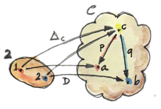
この構成を以外の圏（たとえば、自明でない射を含む圏）に一般化すると、との間の変換に自然性条件が課される。このような変換は錐 (cone) と呼ばれる。の像が、自然変換の成分たちが側面を構成するような錐体（円錐・角錐など）75の頂点になっているからだ。の像は錐の底面をなす。
一般に、錐を構築するには、そのパターンを定義する圏から始める。は小さい圏で、しばしば有限である。からへの関手を選択し、それ（またはその像）を図式 (diagram) と呼ぶ。また、内のを錐の頂点として選択する。それを使ってからへの定関手を定義する。からへの自然変換こそが、ここで言うところの錐となる。有限のに対しては、錐はと図式、つまりによるの像とを接続するただの射の集まりだ。

自然性は、この図式のすべての三角形（角錐の側面）が可換であることを必要とする。実際に、内の任意の射を取ったとしよう。関手は、それを内の射に写し、その射はある三角形の底辺となる。定関手は、をにおける恒等射に写す。はその射の両端を1つの対象にまとめ、自然性の正方図式は可換な三角形になる。この三角形の2辺は自然変換の成分になっている。

これは錐のひとつではある。だが、関心があるのは普遍錐 (universal cone) だ――普遍的な対象を積の定義としたのと同様だ。
その普遍錐の構成を目指す方法はいろいろある。たとえば、与えられた関手に基づいて錐の圏を定義できる。その圏における対象は錐だ。ただし、のすべての対象が錐の頂点になれるわけではない。との間に自然変換が存在しないことがあるからだ。
圏にするには、錐の間の射も定義しなければならない。それらは頂点間の射によって完全に決定されることになる。しかし、どんな射でも良いわけではない。我々の積の構成では、候補となる対象（頂点）の間の射は射影の共通因子でなければならない、という条件を課したのを思い出してほしい。具体的には
p' = p . m
q' = q . m
一般の場合76には、この条件は、1辺が分解射である三角形はすべて可換である、という条件に翻訳される。
これらの分解射を錐の圏における射とする。これらの射が実際に合成できることと、恒等射が分解射であることを確認するのは簡単だ。したがって、錐たち77は圏をなす。
ここで、普遍錐を錐の圏の終対象として定義できる。終対象の定義から、どの対象からも終対象への一意な射がある。ここでは、それは他のどの錐の頂点からも普遍錐の頂点への一意な分解射があることを意味する。この普遍錐は図式の極限 (limit) と呼ばれる（この分野では記号の下にに向かう左矢印が記されていることも多い）。しばしば、この錐の頂点を指して極限（あるいは極限対象）と略称する。
直観的には、極限は図式全体の特性を単一の対象で具現化している。たとえば、2対象の図式の極限は2つの対象の積だ。積（および2つの射影を合わせたもの）には両方の対象についての情報が含まれている。そして、普遍であるということは要らないものを含まないことを意味する。
12.1 自然同型としての極限
この極限の定義にはまだ不満が残る。どういうことかと言うと、使えはするものの、任意の2つの錐を結ぶ三角形には依然として前述のような可換性条件が課されている。それを何らかの自然性条件に置き換えられれば、はるかにエレガントになるだろう。だが、どうやって？
もはや我々は、1つの錐ではなく、錐の集まり（実際には圏）全体を扱っている。極限が存在するなら（そして――明言しておくと――存在する保証はない）、それらの錐の1つは普遍錐だ。他のすべての錐のそれぞれに対して、その頂点（と呼ぼう）を普遍錐の頂点に写す一意な分解射が存在する。（実際には「他の」という言葉は省ける。普遍錐が恒等射によって普遍錐自身に写され、それ自身を分解するのは自明だからだ。） 要点を繰り返そう。任意の錐について、特別な種類の一意な射が存在する。つまり、それは錐からそういった特別な射への写像があって、それは1対1の写像であるということだ。
この特別な射はhom集合 の元だ。このhom集合のそれ以外の元は、残念ながら2つの錐の写像を分解しない。ここで必要なのは、ごとに、 から1つの射――特定の可換性条件を満たす射――を選択できるようにすることだ。まるで自然変換を定義しているかのように聞こえるだろうか？ まさしくそのとおり！
だが、この変換によって関連付けられるのはどのような関手だろう？
関手の1つは、から集合 への写像だ。これはからへの関手で、対象たちを集合たちに写す。正確には反変関手だ。射に関する作用は次のように定める。からへの射を取ってきたとしよう。 我々の関手はを集合 に写す。この関手のに対する作用を定義する（言い換えると、を持ち上げる）には、それに対応する、 と の間の写像を定義しなければならない。そこで、 の要素を1つ選択し、それを の要素に写せるか見てみよう。hom集合の要素は射なので、次のことが言える。 をに前合成78することで次が得られる。 そして、これは の要素だ――つまり、実際に射の写像が見つかった。
contramap :: (c' -> c) -> (c -> Lim D) -> (c' -> Lim D)
contramap f u = u . f反変関手の特徴である、との順序の反転に注目してほしい。

自然変換を定義するには、同じくからへの写像である別の関手が必要だ。今回については錐の集合を考えてみる。錐は単なる自然変換なので、自然変換の集合 を見ていることになる。をこの特定の自然変換の集合へ対応させる写像は（反変）関手となる。どうやってそれを示そう？ ここでも、次の射に対するその関手の作用を定義してみよう。 を持ち上げるとからへ向かう2つの関手間の自然変換たちの写像になる必要がある。つまり、 自然変換はどう写せば良いだろう？ 自然変換は射――その成分――の選択であり、の要素ごとに射を1つ選択する。ある（ の元である）の、（内の対象である）における成分は、次の射となる。 つまり、定関手の定義から となる。任意のとについて、 の元であるを構築する必要がある。のにおける成分は次の射となる。 後者（）は前者（）をに前合成すれば簡単に得られる。 これらの成分たちが実際に自然変換をなすことは比較的簡単に示せる。
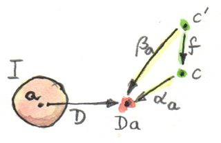
以上より、与えられた射について、2つの自然変換の間の写像を成分ごとに構築できた。この写像は次の関手についてcontramapを定義する79。
ここまでで示したのは、からへの2つの（反変）関手があるということだ。示すにあたっては何の仮定も置かなかった。よって、これらの関手は常に存在すると言える。
ちなみに、これらの関手のうち1つ目は圏論で重要な役割を果たしている。米田の補題について話すときに再び見ることになるだろう。任意の圏からへの反変関手は「前層」(presheaf) と呼ばれる。ここでのものは表現可能前層 (representable presheaf) と呼ばれている。2つ目の関手も前層だ。
2つの関手が出てきたので、その間の自然変換について述べられるようになった。では、これ以上何も言わず、結論を述べよう。からへの関手が極限を持つのは、先ほど定義した2つの関手間に自然同型がある場合、かつその場合に限る。 自然同型とは何かを思い出してほしい。すべての成分が同型、すなわち可逆な射である自然変換だった。
この命題の証明をなぞるつもりはない。退屈とまでは言わないにしても、ごく単純な手順で済むからだ。自然変換を扱うときには通常、その成分、つまり射に注目する。ここでは両方の関手の余域がなので、前述の自然同型の成分は関数になる。そして、それらの関数はhom集合から自然変換の集合へと向かうので、高階関数となる。再び、関数が引数に対して何を行うかを調べることで関数を分析できる。ここで、引数は の元である射になり、結果は の元である自然変換、すなわち錐と呼んだものになる。この自然変換自身にもそれぞれの成分があり、それらは射である。このようにどこまでも射が続くので、それらを追跡できれば先ほどの命題を証明できる。
最も重要な結果は、この同型に対する自然性条件がまさしく錐の写像についての可換性条件になっているということだ。
今後のアトラクションの予告として、集合 を関手圏のhom集合と見なせることに触れておきたい。つまり、ここでの自然同型は2つのhom集合を関連づけ、随伴と呼ばれるさらに一般的な関係を指し示している。
12.2 極限の例
すでに見たように、圏論的な積は、と呼ばれる単純な圏が生成する図式の極限だ。
極限のさらに単純な例としては終対象がある。単元圏が終対象につながる、と初期衝動で考えるかもしれないが、真実はさらに殺風景だ。終対象は空圏が生成する極限なのだ。空圏からの関手は対象を選択しないので、錐は頂点だけに収縮する。普遍錐はその唯一の頂点で、他の頂点からの一意な射を持つ。これが終対象の定義だと気付くだろう。
次に興味深い極限は等化子 (equalizer) と呼ばれる。これは2つの要素からなる圏によって生成された極限であり、要素間の2つの並行した射を伴う（そして当然、恒等射も持つ）。この圏は、2つの対象とと、2つの射とで構成されるの図式を選択する。
f :: a -> b
g :: a -> bこの図式の上に錐を構築するには、頂点と2つの射影を追加する必要がある。
p :: c -> a
q :: c -> b 
可換でなければならない三角形が2つある。
q = f . p
q = g . p
これはが、これらの等式の1つ、たとえばq = f . pによって一意に決定され、図から省けることを示している。残りの条件は1つだけになる。
f . p = g . pこれは、注目する範囲をだけに限れば、関数の像はの部分集合を選択している、と解釈できる。この部分集合に限れば、関数とは等しくなる。
たとえば、を座標とでパラメーター化された2次元平面とする。を実数の直線とし、次のようにする。
f (x, y) = 2 * y + x
g (x, y) = y - xこれら2つの関数の等化子は、実数の集合（頂点）と次の関数だ。
p t = (t, (-2) * t)は2次元平面内の直線を定義することに注意してほしい。この線上では2つの関数は等しい。
当然、この等しさは他の集合と関数でも満たしうる。
f . p' = g . p'ただし、それらはすべてを通じて一意に分解する。たとえば、単元集合をとして受け取れば次の関数を使える。
p'() = (0, 0)だから、これは良い錐だ。しかし、普遍錐ではなく、によって一意に分解できる。
p' = p . hここで、
h () = 0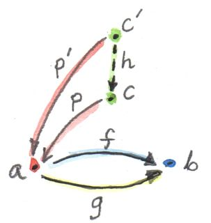
したがって、等化子は型の方程式を解くのに使える。しかも、もっと一般化されている。代数的な定義ではなく、対象や射によって定義されているからだ。
方程式を解くという考え方をさらに一般化したものが、別の極限で具体化されている――引き戻し (pullback) だ。ここに、等価にしたい2つの射がまたあるが、今回はそれらの始点が異なる。まずという形の3対象の圏から始める。この圏に対応する図式は、3つの対象（, , ）と2つの射で構成されている。
f :: a -> b
g :: c -> bこの図式は余スパン (cospan) と呼ばれることが多い。
この図式の上に構築された錐は、頂点と3つの射から構成されている。
p :: d -> a
q :: d -> c
r :: d -> b 
可換性条件からは他の射によって完全に決定されることが分かり、図から省略できる。したがって、次の条件のみが残る。
g . q = f . p引き戻しは、この形の普遍錐だ。

再び、注目する範囲を集合だけに絞ると、対象はとからの要素のペアのうち、が1番目の成分に作用したものとが2番目の成分に作用したものとが等しいという条件を満たすものからなると見なせる。これがまだ一般的すぎるなら、が定数関数である特別な場合を考えてみてほしい。たとえば、（が実数の集合だと仮定して）とする。そうすれば、実際に方程式を解いていることになる。
f x = 1.23この場合、として何を選択しても（空集合でない限り）関係ないので、単元集合として構わない。たとえば、集合が3次元ベクトルの集合で、がベクトル長だとする。そうすれば、引き戻しはペア の集合で、は長さ1.23のベクトル（方程式の解）となる。 は単元集合のダミー要素だ。
もっとも、引き戻しにはより一般的な用途があり、プログラミングでも使える。たとえば、C++のクラスを圏と見なし、派生クラスを基底クラスに結ぶ矢印を射と見なそう。継承関係は推移的であると見なせる。つまり、CがBを継承し、BがAを継承しているなら、CはAを継承していると言える（要するに、Aへのポインターを想定する箇所にCへのポインターを渡せるということだ）。また、CはCを継承すると見なそう。つまり、すべてのクラスに恒等射がある。このようにすれば、派生クラス関係は部分型関係と一致することになる。C++は多重継承もサポートしているので、Aを継承する2つのクラスBとC、およびBとCとを多重継承する4番目のクラスDを含むダイヤモンド継承の図式を構築できる。通常、DはAを2つ持つことになる。ほとんどの場合、これは望ましくない。だが、仮想継承を使えばD内のAを1つだけにできる。
Dがこの図式の引き戻しになるとは何を意味するのだろう？ それは、BとCを多重継承するすべてのクラスEが、Dの派生クラスでもあることを意味する。これはC++では直接表現できない。C++の部分型付け80は名前に基づくもの (nominal)
だからだ（C++コンパイラーはこの種のクラス関係を推測しない――それには「ダックタイピング」が必要となる81）。しかし、部分型付け関係の外に出て、代わりにEからDへのキャストが安全かどうか確かめることはできる。このキャストが安全なのは、DがBとCの必要最小限の組み合わせで、追加データやメソッドのオーバーライドがない場合だ。そしてもちろん、BとCのメソッドに名前の衝突がある場合、引き戻しはない。

さらに、型推論では引き戻しがより高度な使い方をされる。2つの表現の型を単一化 (unify) したいことはよくある。たとえば、コンパイラーが関数の型を推測しようとしているとする。
twice f x = f (f x)これはすべての変数と部分式に予備的な型を割り当てる。具体的には、以下を割り当てる。
f :: t0
x :: t1
f x :: t2
f (f x) :: t3そこから次のことが演繹される。
twice :: t0 -> t1 -> t3また、関数適用の規則から生じる一連の制約も課される。
t0 = t1 -> t2 -- fがxに適用されるため
t0 = t2 -> t3 -- fが (f x) に適用されるためこれらの制約は、両方の式の未知の型に代入したときに両辺が同じになるような型（あるいは型変数）の集合を見つけることによって単一化される。そのような代入の1つは次のとおりだ。
t1 = t2 = t3 = Int
twice :: (Int -> Int) -> Int -> Intしかし、明らかに、これは最も一般的なものではない。最も一般的な代入82を得るには引き戻しを用いる。詳細は本書の範囲外であるため説明しないが、次のような結果になるはずであることは確信できるだろう。
twice :: (t -> t) -> t -> t ここでtは自由 (free) 型変数だ。
12.3 余極限
圏論のすべての構造と同じく、極限には双対となる像が反対圏にある。錐内のすべての射の方向を反転させると余錐 (co-cone) ができ、余錐たちのうち普遍なものが余極限 (colimit) と呼ばれる。反転が分解射にも影響することに注意してほしい。分解射は普遍な余錐から他の余錐へと向かうことになる。
余極限の典型的な例は余積だ。これは、積の定義で使った-圏によって生成される図式に対応する。
積も余積も、別々の方法で対象のペアの本質を具現化している。
終対象が極限であったように、始対象は空圏に基づく図式に対応する余極限である。
引き戻しの双対は押し出し (pushout) と呼ばれる。それは圏によって生成されるスパン (span) と呼ばれる図式に基づく。
12.4 連続性
すでに述べたように、関手は圏の連続写像の概念に近い。既存の接続（射）を決して壊さないからだ。圏からへの連続関手 (continuous functor) の実際の定義には、関手が極限を保存するという要件が含まれている。内のすべての図式は、単に2つの関手を合成すれば、内の図式に写せる。の連続性条件は、図式が極限を有するなら、図式も極限を有し、それは に等しいことを示している。

関手は射を射に、合成を合成に写すので、錐の像は常に錐であることに注意してほしい。可換な三角形は常に可換な三角形に写される（関手は合成を保存する）。分解射についても同じことが言えて、分解射の像も分解射となる。したがって、どの関手もほぼ連続している。問題になりうるのは一意性条件だ。の分解射は一意でないことがある。には、にはなかった「より優れた錐」が他にあるかもしれない。
Hom関手は連続関手の一例だ。Hom関手 が、1番目の変数について反変であり、2番目の変数について共変であることを思い出してほしい。言い換えれば、次の関手だ。 第2引数が固定されると、hom集合関手（表現可能前層になる）はの余極限をの極限に写す。第1引数が固定されると、極限を極限に写す。
Haskellでのhom関手は、任意の2つの型を関数型に対応させる写像であるため、単なるパラメーター化された関数型だ。2番目のパラメーターを、たとえばStringに固定すると、次の反変関手が得られる。
newtype ToString a = ToString (a -> String)
instance Contravariant ToString where
contramap f (ToString g) = ToString (g . f)
連続性は、ToStringが余極限、たとえば余積Either b cに適用された場合に極限を生成することを意味する。この場合、極限は2つの関数型の積である。つまり、
ToString (Either b c) ~ (b -> String, c -> String)
実際に、Either b cのどんな関数も、関数のペアに対応する2つの場合分けを持つcase式として実装される。
同様に、hom集合の第1引数を固定すると、おなじみのreader関手が得られる。その連続性は、たとえば、積を返す関数どの関数も積と等価であることを意味する。具体的にはこうなる。
r -> (a, b) ~ (r -> a, r -> b)読者がどう思っているかは分かっている。これらを理解するのに圏論は必要ない。そのとおりだ！ それでも、このような結果がビットやバイト、プロセッサーアーキテクチャ、コンパイラー技術、さらにはラムダ計算に頼ることなく第一原理から得られるのは驚くべきことだと思う。
「極限」と「連続性」という名前の由来が何なのか気になるなら、それらは微積分学において対応する概念を一般化したものだ。微積分学では、極限と連続性は開近傍によって定義される。開集合たちは、位相 (topology) を定義し、圏（半順序集合）もなす。
12.5 課題
C++のクラスの圏における押し出しはどのようなものだろうか？
恒等関手の極限が始対象であることを示せ。
与えられた集合の部分集合たちは圏をなす。その圏の射は、1番目の集合が2番目の集合の部分集合である場合、それら2つの集合を接続する矢として定義される。そのような圏内の集合2つの引き戻しは何か？ 押し出しは何か？ 始対象と終対象は何か？
余等化子 (coequalizer) とは何か予想できるか？
終対象が存在する圏では、終対象に向かう引き戻しが積であることを示せ。
同様に、始対象が存在するなら、始対象からの押し出しが余積であることを示せ。
13 自由モノイド
モノイドは圏論とプログラミングの両方において重要な概念となる。圏は強く型付けされた言語に対応し、モノイドは型なし言語に対応する。型なしの言語で任意の2つの関数を合成できる（当然、プログラムを実行したときにランタイムエラーが発生する可能性はある）ように、モノイドでは任意の2つの射を合成できるからだ。
これまでに見てきたように、モノイドは単一の対象を持つ圏として記述され、その圏ではすべての論理が射の合成の規則として表現されている。この圏論的モデルは、より伝統的で集合論的なモノイドの定義と完全に等価だ。そこでは集合の2つの要素を「乗算」することで第3の要素が得られる。この「乗算」の過程はさらに細かく分割できる。すなわち、まず要素のペア1つを形成するという過程と、次にこのペアを既存の要素――それらの「積」と同一視するという過程だ。
乗算の2番目の部分、つまりペアと既存の要素との同一視を省くとどうなるだろうか？ たとえば、任意の集合から始めて、ペアにできる要素をすべてペアにし、それらを新しい要素と呼ぶことができる。次に、それらの新しい要素とペアにできる要素をすべてペアにしていく。以下同様だ。これは連鎖反応だ――新しい要素を永久に追加し続けられる。その結果は、無限集合であり、ほぼモノイドとなる。ただし、モノイドには単位元と結合律も必要となる。しかし、問題ない。特別な単位元を追加し、生成されたペアの一部を同一視すれば、単位律 (unit law) と結合律をきちんと満たせる。
実際にどうなるかを簡単な例で見てみよう。2要素の集合から始めることにしよう。それらの要素を自由モノイドの生成元 (generator) と呼ぶことにする。まず、単位元となる特別な要素を追加する。次に、要素のすべてのペアを追加し、それらを「積」と呼ぶ。との積はペア となる。との積はペア となり、との積は となり、との積は となる。とのペアも作れて、 や などになるが、それらはやなどと同一視することにする。結局このラウンドでは 、、、、、 だけを追加して、結果としてという集合が得られる。
次のラウンドでは や といった要素を追加していく。この時点で、結合律が確実に満たされるようにする必要がある。そのため、たとえば と を同一視する。要するに、内側の括弧は必要ないということだ。
このプロセスの最終的な結果が予想できるだろう。要素がかであるようなすべてのリストが作られる。実際、を空リストで表せば、「乗算」はリストの連接に他ならないことが分かる。
この種の構成では、要素の組み合わせとして可能なものすべてを生成し続け、同一視は最小限に――その構造の規則を維持するのにちょうど十分なだけに留める。こういった構成は自由構成と呼ばれる。上記では、生成元の集合から自由モノイドを構築した。
13.1 Haskellにおける自由モノイド
Haskellにおける二元集合は型Boolと等価であり、この集合から生成される自由モノイドは型[Bool]（Boolのリスト）と等価だ。（無限リストの問題は意図的に無視している。）
Haskellのモノイドは型クラスによって定義されている。
class Monoid m where
mempty :: m
mappend :: m -> m -> m
このクラスが意味しているのは、すべてのMonoidがmemptyと呼ばれる中立元と、mappendと呼ばれる二項関数（乗算）を持たなければならないということだ。Haskellでは単位律と結合律は表現できず、具体的なモノイドを与えるたびにプログラマーによって検証されなければならない。
任意の型のリストがモノイドをなすという事実は、次のインスタンス定義によって説明される。
instance Monoid [a] where
mempty = []
mappend = (++)
これはリストモノイドについて、空リスト[]が単位元であり、リスト連接(++)が二項演算であることを述べている。
これまで見てきたように、型aのリストは集合aを生成元たちとする自由モノイドに対応する。その一方で、乗算を伴う自然数の集合は、多くの積が同一視されるので自由モノイドではない。次の2つを比べてみよう。
2 * 3 = 6
[2] ++ [3] = [2, 3] -- [6]と同じではないこれは簡単な例だったが、圏論では対象の中を見るのが許されないのにどうやってこの自由構成を実現できるのか、という疑問がある。そこで我々の働き者にもうひと仕事してもらうとしよう。普遍的構成だ。
2番目の興味深い疑問は、単位律と結合律が最小限必要とするよりも多くの要素を同一視すれば、ある自由モノイドから任意のモノイドを得られるのか、ということだ。これが普遍的構成から直接導かれることをお見せしよう。
13.2 自由モノイドの普遍的構成
普遍的構成についての経験を振り返れば、それは何かを構築するというより、特定のパターンに最もよく適合する対象を選択するものだと気付くだろう。なので、普遍的構成を使って自由モノイドを「構築」したいなら、選択肢となる多数のモノイドの全体を考慮する必要がある。つまり、選択のもととなるモノイドの圏がまるごと必要だ。だが、モノイドたちは圏をなすのだろうか83？
まずは、単位元と二項演算による構造が加わった集合としてモノイドを見てみよう。そして、モノイドの構造を保存するような関数を射として採用する。構造を保存するそういった関数は準同型 (homomorphism) と呼ばれる。モノイド準同型は2つの要素の積を2つの要素の写し先の積へと写さなければならない。
h (a * b) = h a * h bそして、単位元を単位元に写さなければならない。
例として、整数のリストから整数への準同型を考えよう84。[2]を2に写し、[3]を3に写すなら、[2, 3]を6に写す必要がある。なぜなら、連接
[2] ++ [3] = [2, 3]が次のような乗算に写されるからだ。
2 * 3 = 6ここで、個々のモノイドの内部構造については忘れて、対応する射を持つ対象としてのみ見よう。すると、モノイドの圏が得られる。
さて、内部構造を忘れる前に、重要な性質に注目しておいた方がよいだろう。のどの対象も自明に集合へと写せる。写し先の集合は単にもとのモノイドの要素の集合である。この集合は台集合 (underlying set) と呼ばれる。実際には、の各対象を集合に写せるだけでなく、の各射（準同型）も関数に写せる。これも自明なだけに見えるが、すぐに役に立つ。このからへの対象と射の写像は、実は関手になっている。この関手はモノイドの構造を「忘れている」。いったん通常の集合の中に入ると、もはや単位元を区別したり乗算を気にしたりすることはない。こういった関手は忘却関手 (forgetful functor) と呼ばれる。忘却関手は圏論ではよく出てくる。
これで、2つの異なる観点からを見たことになる。は対象と射を伴う他のすべての圏と同じように扱える。この観点では、モノイドの内部構造は見えない。の中の特定の対象について言えるのは、それ自身や他の対象と射を通じて接続しているということだけだ。射の「乗算」表――つまり、合成の規則――は、もう一方の観点から導かれる。すなわち、集合としてのモノイドからである。圏論に進んだことでこの観点が完全に失われたわけではない――忘却関手を通じてならアクセスできる。
普遍的構成を適用するには、モノイドの圏を探索して自由モノイドの最も優れた候補を選べるようにするための特別な性質を定義する必要がある。しかし、自由モノイドはその生成元たちによって定義される。別の生成元たちを選べば、生成される自由モノイドは変わる（BoolのリストとIntのリストは違う）。我々の構成は、生成元の集合から始めなければならない。つまり、集合に戻ってきたということだ！
ここで忘却関手が役立つことになる。忘却関手によってモノイドをレントゲン撮影できる。そして、それらのかたまりたちのレントゲン写真から生成元たちを特定できる。その仕組みは以下のとおりだ。
生成元の集合から始める。この集合はの対象だ。
マッチさせようとしているパターンは、モノイド――の対象――と内の関数で構成されている。
p :: x -> U mここで、はからへの忘却関手だ。これは奇妙な混成パターンだ――半分はで半分はになっている。
意図としては、のレントゲン写真に写った生成元の集合が関数によって特定されるようにするということだ。関数たちが集合内の点たち85をきちんと特定できない（それらを潰す）かもしれないことは問題ない。普遍的構成によってこのパターンの最も優れた代表が選ばれ、すべてが整理されるだろう86。

候補間の順位付けも定義しなければならない。もう1つの候補があるとしよう。モノイドと、そのレントゲン写真に写った生成元たちを特定しようとする関数だ。
q :: x -> U n以下のような条件を満たす場合、はよりも優れていると言うことにしよう。その条件とは、モノイドの射（準同型なので構造を保存する）
h :: m -> nがあり、そのの下の像（は関手なので射を関数に写す）がを通じてを分解することだ。
q = U h . pが内で生成元たちを選択し、が内で「同じ」生成元たちを選択していると見なすなら、はこれらの生成元たちを2つのモノイドの間で写していると見なせる。は、定義より、モノイドの構造を保存することを思い出してほしい。これは、一方のモノイドにおける2つの生成元の積が、もう一方のモノイドにおける対応する2つの生成元の積に写されることなどを意味する。
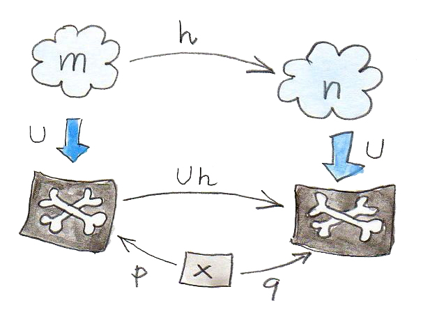
この順位付けは、最も優れた候補、すなわち自由モノイドを見つけるために使われる。定義は次のとおりだ。
（関数を伴う）を生成元を伴う自由モノイドと呼ぶのは、から（関数を伴う）他の任意のモノイドへの、前述の分解特性を満たす一意な射が存在する場合、かつその場合に限る。
ところで、これは2番目の疑問に対する答えになっている。関数には、の複数の要素をの1つの要素へ潰す力がある。ここで、潰すことは自由モノイドのいくつかの要素を同一視することに対応する。したがって、生成元たちとしてを持つモノイドはどれも、に基づく自由モノイドから、いくつかの要素を同一視することによって得られる。自由モノイドとは、最小限のものだけしか同一視されていないモノイドのことだ。
自由モノイドについては、随伴について話すときにまた戻ってくることにしよう。
13.3 課題
モノイドの準同型が単位元を保存する、という条件は（当初は私もそう思ったように）冗長だと思うかもしれない。何しろ、すべてのについて次が言えるのだから。
h a * h e = h (a * e) = h aつまり、は右単位元のように働く（同様に、左単位元のようにも働く）。問題は、すべてのに対してを集めてきたものを考えると、余域モノイドの部分モノイドしかカバーできないということだ。の像の外部に「真の」単位元が存在するかもしれない。モノイド間で乗算を保存する同型は自動的に単位元を保存することになることを示せ。
連接を二項演算とする整数リストから乗算を二項演算とする整数へのモノイド準同型について考える。空リスト
[]の像は何か？ すべての単要素リストは、それが含む整数に写されるとする。たとえば、[3]は3に写される。[1, 2, 3, 4]の像は何か？ 整数12に写されるリストはいくつあるか？ 2つのモノイド間に他の準同型はあるか？単元集合によって生成される自由モノイドとは何か？ それが何と同型なのか分かるか？
14 表現可能関手
そろそろ集合について少し話すべき時が来た。数学者たちは集合論に対して愛憎する関係にある。集合論は数学にとってのアセンブリー言語だ――少なくともかつてはそうだった。圏論はある程度、集合論から距離を置こうとする。たとえば、すべての集合の集合は存在しないが、すべての集合の圏なら存在する、というのはよく知られた事実だ。これは良い。一方で我々は、圏内の任意の2対象間の射たちは集合をなす、と仮定した。そしてそれをhom集合と名付けさえした。公平のために言うと、圏論には射たちが集合をなさないことがあるような分野もある87。その代わりにそれらは別の圏の対象となる。hom集合の代わりにhom対象を使う圏は豊穣圏 (enriched category) と呼ばれる。だが、以下では古き良きhom集合を持つ圏に留まることにする。
集合は、圏論における対象たちから取り出せる特徴のない塊、というのが最も近い。集合は要素を含むが、それらについて多くは語れない。有限集合なら要素数を数えられる。基数 (cardinal number) を使えば、無限集合の要素数をある意味で数えられる。たとえば、自然数の集合も実数の集合も無限集合だが、前者は後者よりも小さい。しかし、驚くかもしれないが、有理数の集合は自然数の集合と同じ大きさだ。
それ以外には、集合に関するすべての情報は、集合間の関数――特に、同型と呼ばれる可逆関数――として表せる。どこからどう見ても同型集合は同一だ。数学基礎論の研究者の逆鱗に触れる前に、等しさと同型には根本的に重要な区別があることを説明しておこう。これは数学の最新分野であるホモトピー型理論 (Homotopy Type Theory, HoTT) の主要な関心事の1つだ。ここでHoTTについて触れる理由は、それが計算からインスピレーションを得た純粋な数学理論で、主唱者の1人であるVladimir Voevodskyによる大きな発見が定理証明器Coqを研究しているときに得られたものだからだ。数学とプログラミングの相互作用は双方向なのだ。
集合に関する重要な教訓は、別種の要素からなる集合同士を比較しても問題ないということだ。たとえば、任意の自然変換の集合は何らかの射の集合と同型である、などと主張できる。集合は集合にすぎないからだ。この場合の同型は単に、一方の集合に属するどの自然変換に対しても他方の集合に属する一意な射が存在し、その逆もまた成り立つことを意味する。それらは互いにペアにできる。リンゴとオレンジが異なる圏の対象なら比較できないが、リンゴの集合とオレンジの集合は比較できる。多くの場合、圏論の問題を集合論の問題に変換すれば、必要な洞察が得られ、有用な定理を証明することさえ可能になる。
14.1 Hom関手
すべての圏には、への写像のカノニカルな族が用意されている。それらの写像は実際には関手であるため、圏の構造を保存している。そのような写像を1つ構築しよう。
内のある対象を固定し、同じく内の別の対象を選択しよう。Hom集合 は集合であり、の対象だ。を固定したままを変化させると、 も内で変化する。それゆえ、からへの写像が得られる。
hom集合を2番目の引数に関する写像と見なしていることを強調したい場合は と表記する。ここで、ダッシュは引数のプレースホルダーを表している。
この対象の写像は射の写像へと容易に拡張できる。内の任意の2対象との間の射を考えてみよう。先ほど定義した写像によって、対象は集合 に写され、対象は に写される。この写像が関手となるなら、は2つの集合間の関数 に写されなければならない。
この関数を点ごとに、つまり、引数ごとに個別に定義しよう。引数として の任意の要素を1つ選択する必要がある。それをと呼ぶことにする。射たちは端と端が一致すれば合成できる。たまたまの終点がの始点と一致しているので、それらの合成 はからへの射となる。したがって、これは の元だ。
先ほど、
から
への関数を見つけた。これはの像として使える。混乱のおそれがない場合は、この持ち上げられた関数をと記し、射に対する作用を次のように記すことにしよう。
この構成はどの圏でも機能するので、Haskellの型の圏でも機能するはずだ。Haskellでは、hom関手はReader関手としてよく知られている。
type Reader a x = a -> xinstance Functor (Reader a) where
fmap f h = f . hさて、Hom集合の始点を固定する代わりに終点を固定すると何が起こるかを考えてみよう。言い換えれば、写像 も関手なのかを問うている。答えはそのとおり、関手なのだが、共変関手ではなく反変関手になる。射の端と端を同様にマッチングするととの後合成となり、 の場合のような前合成ではないからだ。
この反変関手はHaskellですでに見た。それはOpと呼ばれていた。
type Op a x = x -> ainstance Contravariant (Op a) where
contramap f h = h . f最後に、両方の対象を変化させると、プロ関手 が得られる。これは1つ目の引数について反変で、2つ目の引数について共変だ（2つの引数が独立して変化することを強調するため、2つ目のプレースホルダーとしてダブルダッシュを使った）。このプロ関手については、関手性について述べたときにすでに見た。
instance Profunctor (->) where
dimap ab cd bc = cd . bc . ab
lmap = flip (.)
rmap = (.)重要な教訓として、対象たちをhom集合へ写すことは関手的である、という観察はすべての圏に当てはまる。反変性は反対圏から写すことと等価なので、この事実は簡潔にこう記せる。
14.2 表現可能関手
これまでに見たように、内の対象の選択ごとにからへの関手が得られる。構造を保存するへのこの種の写像は表現 (representation) とよく呼ばれる。つまり、における対象や射を内の集合や関数として表現しているということだ。
関手 自体を指して表現可能関手と呼ぶこともある。より一般には、あるの選択に対してhom関手と自然同型である関手はすべて表現可能 (representable) 関手と呼ばれる。このような関手は必然的に集合値 (-valued) 関手となる。 がそうだからだ。
以前述べたように、同型集合は同一と見なされることが多い。より一般には、圏の同型対象は同一と見なされる。対象たちは他の対象たち（およびそれら自身）との射による関係だけしか構造を持たないからだ。
たとえば、モノイドの圏について前に説明した。それは最初は集合たちでモデル化されていた。ただし、それらの集合によるモノイドの構造を保存する関数のみを射として選ぶように気を付けた。そのため、内の2つの対象は、同型なら、つまり可逆な射が間にあるなら、全く同じ構造を持つ。それらが基づく集合と関数を覗き見ると、一方のモノイドの単位元がもう一方のモノイドの単位元へと写され、2つの要素の積がそれらの要素を写したものの積へと写されているのが分かるだろう。
同じ推論が関手にも適用できる。2つの圏の間の関手は圏をなし、そこでは自然変換が射の役割を果たしている。したがって、2つの関手の間に可逆な自然変換があれば、それらは同型であり、同一と見なせる。
この観点から表現可能関手の定義を分析してみよう。が表現可能となるには次が必要だ。内に対象があり、からへの自然変換があり、逆方向に別の自然変換があり、それらの合成が恒等自然変換である。
ある対象におけるの成分を見てみよう。それは内の関数だ。 この変換の自然性条件は、からへの任意の射について、次の関係を表す図式が可換となることを示している。 Haskellでは、自然変換を多相関数で置き換えることになる。
alpha :: forall x. (a -> x) -> F x ここで使った量化子forallは必須ではない。自然性条件
fmap f . alpha = alpha . fmap f はパラメトリシティ (parametricity)
によって自動的に満たされる（この自然性条件は前述のtheorems for
freeのひとつだ）。これは、左辺のfmapが関手によって定義され、右辺のfmapがreader関手によって定義されるという理解に基づく。readerのfmapは単なる関数の前合成88なので、さらにはっきりと書ける。
の要素であるに作用したときの自然性条件は次のように簡潔に書ける。
fmap f (alpha h) = alpha (f . h) もう1つの変換betaは方向が逆だ。
beta :: forall x. F x -> (a -> x)
この関数も自然性条件を満たす必要があり、そしてalphaの逆関数でなければならない。
alpha . beta = id = beta . alpha後で説明するとおり、が空でないならば常に から任意の集合値関手への自然変換が存在する（米田の補題）が、この変換は可逆であるとは限らない。
Haskellでリスト関手を用い、Intをaとした例を挙げよう。以下が具体的な自然変換の一例だ。
alpha :: forall x. (Int -> x) -> [x]
alpha h = map h [12]
勝手な数として12を選び、それを使って単要素リストを作成した。次に、このリストに関数hをfmapし、hの戻り値の型のリストを取得する。（実際には、そのような変換は整数のリストと同じくらいたくさんある。）
自然性条件はmap（fmapのリスト版）の合成可能性と等価だ。
map f (map h [12]) = map (f . h) [12]
しかし、逆変換を見つけるには、任意の型xのリストをもとにxを返す関数を探さなくてはならない。
beta :: forall x. [x] -> (Int -> x)
headか何かを使ってリストからxを取得しようと考えたかもしれないが、空のリストには使えない。（Intの箇所の）型aの選択肢としてここで使えるものがないことに注目してほしい。すなわち、リスト関手は表現可能ではない。
Haskellの（自己）関手がコンテナーに少し似ていると言ったのを覚えているだろうか？ 同じように、表現可能関手は関数呼び出しの結果をメモ化して保存するためのコンテナーと見なせる（Haskellでのhom集合の要素は単なる関数だ）。表現対象
(representing
object)、すなわち
における型はキー型と見なせて、それを用いれば表化
(tabulate)
された関数値にアクセスできる。ここでの変換alphaはtabulateと呼ばれ、その逆のbetaはindexと呼ばれる。以下に（少し単純化した）Representableのクラス定義を示す。
class Representable f where
type Rep f :: *
tabulate :: (Rep f -> x) -> f x
index :: f x -> Rep f -> x
表現型、すなわちが、ここではRep fと呼ばれ、Representableの定義の一部であることに注目してほしい。スターはRep fが型である（型構成子や他のエキゾチックな種ではない）ことを意味する89。
無限リストや無限ストリームは、空ではあり得ず、表現可能だ。
data Stream x = Cons x (Stream x)
それらはIntegerを引数に取る関数の値をメモ化したものと見なせる。（厳密に言えば、非負整数を使うべきだが、コードを複雑にしたくなかった90。）
このような関数をtabulateにするには、値の無限ストリームを作成する。もちろん、これが可能なのはHaskellが遅延評価だからだ。つまり、値は必要になったとき評価される。メモ化された値にアクセスするにはindexを使う。
instance Representable Stream where
type Rep Stream = Integer
tabulate f = Cons (f 0) (tabulate (f . (+1)))
index (Cons b bs) n =
if n == 0 then b else index bs (n - 1)任意の戻り値型を持つ関数の族をすべてカバーするような単一のメモ化スキームを実装できるのは興味深い。
反変関手の表現可能性も同様に定義される。ただし、 の2番目の引数を固定する。あるいは、からへの関手を考えるのでも等価だ。 は と同じだからだ。
表現可能性には興味深いひねりがある。デカルト閉圏では、hom集合を内部的には冪対象として扱えることを思い出してほしい。hom集合 はと等価で、表現可能関手に対してはと書ける。
試しに、両辺の対数を取ってみるととなる。
もちろん、これは純粋に形式的な変換だが、対数の性質を多少知っているなら非常に便利だ。特に、直積型に基づく関手は直和型を用いて表現でき91、直和型の関手は一般に表現可能ではないことが知られている（例：リスト関手）。
最後に、表現可能関手が同じものに対する2種類の実装――ひとつは関数、もうひとつはデータ構造――を与えることに注目してほしい。それらの内容は全く同じだ――同じキーを使えば同じ値が取得される。それが、語ろうとしていた「同一性」の感覚だ。2つの自然同型な関手は内容に関する限り同一だ。その一方で、2つの表現は異なる方法で実装されることが多く、パフォーマンス特性が異なる可能性がある。メモ化はパフォーマンス改善策として使われ、実行時間の大幅な短縮につながる可能性がある。同じ計算を背景とする異なる表現を生成できることは、実用上の価値が非常に高い。そのため、驚くべきことに、圏論はパフォーマンスを全く考慮しないにもかかわらず、実用上の価値を持つ別の実装を探求する十分な機会を与えてくれる。
14.3 課題
Hom関手が内の恒等射を内の対応する恒等関数に写すことを示せ。
Maybeが表現可能でないことを示せ。Reader関手は表現可能か？Stream表現を使って、引数を2乗する関数をメモ化せよ。Streamに対するtabulateとindexが実際に互いに逆であることを示せ。（ヒント：数学的帰納法を使う。）次の関手
Pair a = Pair a aは表現可能だ。それを表現する型が分かるだろうか？
tabulateとindexを実装せよ。
14.4 参考文献
15 米田の補題
圏論における構成物のほとんどは、より具体的な他の数学の分野での結果を一般化したものだ。積・余積・モノイド・冪などは、圏論よりずっと前から知られていた。それらは別の数学の分野では別の名前で知られていたかもしれない。集合論におけるデカルト積、順序理論における交わり (meet)、論理学における論理積――これらはすべて圏論的な積という抽象概念に対応する具体例だ。
米田の補題は、この観点から、数学の他の分野では全くと言ってよいほど前例がないような圏一般に関する包括的な主張として際立っている。一番似ているのは群論におけるケイリーの定理（すべての群はある集合の置換群と同型）93だという説もある。
米田の補題の問題設定は、への関手を持つような任意の圏についてのものだ。すでに前章で述べたように、集合値関手のいくつかは表現可能、つまりhom関手と同型である。米田の補題は、すべての集合値関手がhom関手たちから自然変換によって得られることを示し、そのようなすべての変換を明示的に列挙する。
自然変換について話したとき、自然性条件は制限が非常に強いものになる場合があると述べた。1つの対象における自然変換の成分を定義するとき、射を介して接続されている別の対象へとその成分を「トランスポート」できるほどに自然性が強いことがある。もとの圏と行き先の圏で対象間の射が多いほど、自然変換の成分をトランスポートするための制約が厳しくなる。はたまたま射が豊富な圏だ。
米田の補題から言えるのは、あるhom関手と他の任意の関手との間の自然変換が、その単一成分の値をある1点について指定するだけで完全に決定されるということだ！ 残りの成分は単に自然性条件に従って決まる。
では、米田の補題に関わる2つの関手について、その間の自然性条件をおさらいしよう。1番目の関手はhom関手だ。それは内の任意の対象を射の集合 に写す。ここで、は内の固定された対象だ。また、すでに見たとおり、そのhom関手はからへの射をすべて に写す。
2番目の関手は任意の集合値関手だ。
この2つの関手の間の自然変換をと呼ぶことにしよう。内を扱っているので、やなどの自然変換の成分は集合間の通常の関数にすぎない。
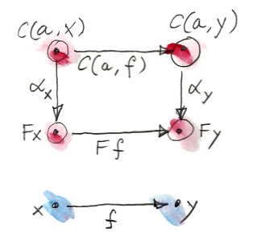
そして、これらは単なる関数なので、特定の点での値を見られる。だが、集合 内の点とは何だろうか？ 鍵となる観察はこうだ。集合 内のすべての点は、からへの射でもある。
したがって、についての自然性の正方図式 の両辺をに作用させると、点ごとの等式になる。 前の節でhom関手 の射への作用を、次のような前合成として定義したことを思い出しただろう。 これにより次が導かれる。 この条件がどれほど強いかはの場合に特化させれば分かる。

この場合、はからへの射となる。そのような射が少なくとも1つ存在するのは分かっている。だ。これを代入してみよう。 何が起きたか注目してほしい。左辺はを の任意の要素に作用させている。そして、その結果はにおけるという単一の値によって完全に決まる。そのような値は任意に選べて、それによって自然変換が生成される。たちの値は集合に含まれるので、のどの点からも何らかのが定義される。
逆に、 からへの自然変換が与えられた場合、において評価すればの点を得られる。
以上より、米田の補題が証明された。
からへの自然変換との要素との間には1対1の対応がある。
言い換えれば となる。あるいは、という表記でとの間の関手圏を表すと、自然変換の集合は単にその圏のhom集合であり、次のように書ける。 この対応が実際には自然同型である仕組みについては後で説明する。
さて、この結果について直観的に理解してみよう。最も驚くべきことは、自然変換全体の結晶化が、において割り当てた値というたった1粒の種から始まることだ。結晶化はその1点から自然性条件に従って広がっていく。そして内にの像を溢れさせる。そこで、まずは の下での像について考えてみたい。
自体の像から始めよう。は、hom関手 の下では集合 に写される。一方、関手の下では集合に写される。自然変換の成分は、 からへの何らかの関数となる。集合 の中の1点だけに注目することにしよう。具体的には射に対応する点だ。集合内の1点にすぎないという事実を強調するために、それをと呼ぼう。成分はを内のある点に写すはずだ。どんなを選択しても一意な自然変換が得られることを説明しよう。

1つ目の主張は、1点を選択すれば関数の残りが一意に決まる、というものだ。実際に、からへのある射に対応する他の任意の点を 内で選んでみよう。ここで米田の補題の魔法が起こり、は集合 内の点と見なせる。同時に、それは集合間の2つの関数を選択する。確かに射は、hom関手では関数 に写され、ではに写される。
ここで、もとのに対する の作用を考えてみよう。覚えているとおり、はに対応する。それは前合成として定義され、と同じであり、点に対応する。したがって、射は、に作用すると、すなわちを生成するような関数に写される。ぐるりと一周した！
さて、に対するの作用を考えてみよう。これは内のある点となる。自然性の正方図式94を完成させるには、がによってに写される必要がある。 任意の（任意の）を選択し、の下でのその写し先95を導出した。したがって、関数は完全に決定される。
2つ目の主張は、内でに接続された対象に対してが一意に決定される、というものだ。これも同様の論法による。ただし、ここではさらに2つの集合 とがあり、からへの［訳注：任意に選んだ］射は、hom関手の下では に写され、の下では に写される。ここでも、に作用した場合の は前合成によって与えられ、 内の点となる。自然性により、に作用するの値はこう決まる。 は任意に決めていたので、関数全体が決定される。
内にと接続されていない対象がある場合はどうなるだろう？ それらすべてが
の下で空集合に写される。空集合は集合の圏における始対象であることを思い出してほしい。これは、この集合から他のどの集合へも一意な関数があることを意味する。その関数をabsurdと呼んだ。したがって、ここでも自然変換の成分には選択の余地がなく、absurdしかあり得ない。
米田の補題を理解する方法の1つは、集合値関手の間の自然変換は関数の族にすぎず、関数は一般には非可逆だと気付くことだ。関数は情報を潰すこともあり、余域の一部しかカバーしないこともある。非可逆でない関数は、可逆なもの、つまり同型たちだけだ。したがって、構造を保存する最も優れた集合値関手たちは表現可能関手だということになる。それらはhom関手か、あるいはhom関手と自然同型な関手のどちらかだ。その他の関手はすべてhom関手を非可逆変換することで得られる。そのような変換は、情報を失わせるだけでなく、関手による内の像のごく一部しかカバーしない可能性がある。
15.1 Haskellにおける米田の補題
Haskellのhom関手には、すでにreader関手という名前で出会っている。
type Reader a x = a -> xReaderは射たち（ここでは関数たち）を前合成で写す。
instance Functor (Reader a) where
fmap f h = f . h米田の補題によれば、reader関手は他の任意の関手へ自然に写せる。
自然変換は多相関数だ。さて、任意の関手Fについて、reader関手からの写像を考えられる。
alpha :: forall x . (a -> x) -> F x
いつものように、forallは必須ではないが、自然変換のパラメトリック多相性を強調するために明示的に書くことにしている。
米田の補題によれば、これらの自然変換はF aの要素たちと1対1に対応している。
forall x . (a -> x) -> F x ≅ F a
この等式の右辺は、通常はデータ構造と見なしているものだった。一般化されたコンテナーとして関手を解釈したのを覚えているだろうか？ F aはaのコンテナーだ。一方で、左辺は関数を引数に取る多相関数だ。米田の補題によれば、この2つの表現は等価だ――それらは同じ情報を含んでいる。
別の言い方をすると以下のようになる。次のような型の多相関数
alpha :: forall x . (a -> x) -> F x
を与えてくれればaのコンテナーを作成してみせよう。ここで使うトリックは米田の補題の証明で使ったものだ。つまり、この関数をidで呼び出すことで型F aの要素を得る。
alpha id :: F a 逆もまた真だ。型F aの任意の値
fa :: F aについて、適切な型の多相関数
alpha h = fmap h faを定義できる。2つの表現の間は簡単に行き来できるということだ。
表現が複数ある利点は、一方が他方よりも合成しやすかったり、用途によってはより効率的だったりすることだ。
この原則の最も単純な例は、コンパイラーの構成でよく使われるコード変換である、継続渡し形式
(continuation passing style, CPS)
だ。これは米田の補題を恒等関手へ最も単純に適用したものだ。Fを恒等関手に置き換えると、次のようになる。
forall r . (a -> r) -> r ≅ a
この等式は、任意の型aはaに対する「ハンドラー」を取る関数によって置き換えられる、と解釈できる。ハンドラーは、aを受け入れ、残りの計算――継続――を実行する関数だ。（型rは通常、ある種のステータスコードをカプセル化している。）
このスタイルのプログラミングは、UI、非同期システム、並行プログラミングではごく一般的だ。CPSの欠点は、制御の反転を伴うことだ。コードが生産者と消費者（ハンドラー）に分割され、簡単には合成できない。ウェブプログラミングの経験がある人なら誰でも、ステートフルなハンドラーとやり取りするスパゲッティコードの悪夢をよく知っている96。後で見るように、関手とモナドを慎重に使えばCPSの合成的な特性をいくらか取り戻せる。
15.2 余米田の補題
いつものように、射の方向を逆にすればおまけの構成が得られる。米田の補題を反対圏に適用すれば反変関手の間の写像が得られる。
同様に、hom関手の始点となる対象の代わりに終点となる対象を固定することで、余米田の補題を導出できる。からへの反変hom関手を取れる。すなわち である。反変版の米田の補題は、この関手から他の任意の反変関手への自然変換と、集合の要素との間に1対1の対応を確立する。 Haskell版の余米田の補題は次のようになる。
forall x . (x -> a) -> F x ≅ F a一部の文献では反変版の方を米田の補題と呼んでいるので注意してほしい。
15.3 課題
米田の同型をなす2つのHaskellの関数
phiとpsiが互いに逆であることを示せ。phi :: (forall x . (a -> x) -> F x) -> F a phi alpha = alpha id psi :: F a -> (forall x . (a -> x) -> F x) psi fa h = fmap h fa離散圏 (discrete category) は、対象はあるが恒等射以外の射はない圏だ。米田の補題はそのような圏の関手でどのように役立つだろうか？
unit型のリスト
[()]は長さ以外の情報を含まない。したがって、データ型としては、非負整数を表したものと見なせる。空リストは0を表し、単リスト[()]（型ではなく値）は1を表し、以下同様だ。このデータ型の別の表現を、リスト関手に対する米田の補題を使って構成せよ。
15.4 参考文献
16 米田埋め込み
以前見たとおり、圏について対象を固定すると、写像 はからへの（共変）関手となる。 （Hom集合 は集合なのでこの関手の余域はだ。） この写像はhom関手と呼ばれる。射に対するこの関手の作用についてもすでに定義したことを思い出してほしい。
さて、この写像においてを変化させてみよう。すると、Hom関手 を任意のに対して割り当てる新しい写像が得られる。 これは圏の対象たちから関手たち、すなわち関手圏の対象たちへの写像である（関手圏については自然変換（第10章3節） を参照）。からへの関手圏をと表記しよう。また、覚えているかもしれないが、Hom関手は表現可能関手（第14章）の原型だった。
2つの圏の間に対象の写像があるのを見るたび、そのような写像が関手でもあるかを問うのは自然なことだ。言い換えると、一方の圏の射をもう一方の圏の射へと持ち上げられるか、ということだ。の射は の要素にすぎないが、関手圏の射は自然変換だ。つまり、ここでは射から自然変換への写像を探していることになる。
射に対応する自然変換が見つかるか見てみよう。そのため、まずとが何に写されるか見てみよう。それらは2つの関手 と に写される。求めるものは、これら2つの関手の間の自然変換だ。
そして、ここで秘訣がある。米田の補題 を使い、さらに総称的なをhom関手 で置き換える。すると、次が得られる。

これはまさに探していた2つのhom関手の間の自然変換だが、少しねじれがある。つまり、自然変換と射との対応は見つけたのだが、射―― の要素――の向きが「間違って」いる。でも大丈夫だ。それは単に注目している関手が反変であることを意味する。
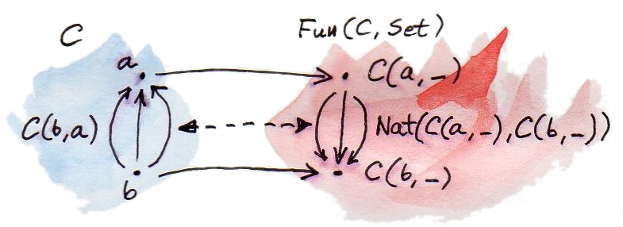
実際には、期待以上のものが得られた。からへの写像は反変関手というだけではない――それは充満忠実 (fully faithful) 関手なのだ。充満性と忠実性という特性は、関手がhom集合をどう写すかを述べている。
忠実 (faithful) 関手はhom集合上の単射だ。つまり、別々の射は別々の射へと写す。言い換えれば、射を潰さない。
充満 (full) 関手はhom集合上の全射だ。つまり、一方のhom集合をもう一方のhom集合の上へ写し、後者を完全にカバーする。
充満忠実関手はhom集合上の全単射 (bijection) であり、つまり両方の集合のすべての要素が1対1で対応する。もとの圏内の対象とのすべてのペアに対して、 と の間に全単射がある。ここで、はの行き先の圏（この場合は関手圏）だ。ただし、これはが対象について全単射であることを意味しないので注意してほしい。内の対象のうちの像内にないものが存在する可能性があり、それらの対象についてのhom集合たちに関しては何も言えない。
16.1 埋め込み
先ほど説明した（反変）関手、すなわち、内の対象を内の関手に写す関手 は米田埋め込み (Yoneda embedding) を定義する。それは圏（厳密に言うと反変なので圏）を関手圏の内部に埋め込む。内の対象を関手に写すだけでなく、それらの間のすべての接続を忠実に保持する。
これは非常に有用な結果だ。なぜなら、数学者は関手圏について、特に余域がである関手について多くのことを知っているからだ。任意の圏について、関手圏へ埋め込むことで多くの知見が得られる。
もちろん米田埋め込みにも双対があり、それは余米田埋め込み (co-Yoneda embedding) と呼ばれることもある。議論の始めの時点で（始点となる対象ではなく）終点となる対象を固定したhom集合 を考えても良かったことに着目しよう。そうすれば反変hom関手が得られていたことになる。からへの反変関手は、おなじみの前層だ (たとえば、第12章の極限と余極限を参照)。余米田埋め込みは圏の前層圏への埋め込みを定義する。射に対する作用は次によって与えられる。 ここでも、数学者は前層圏について多くのことを知っているので、任意の圏をそれに埋め込めるのは大きな戦果だ。
16.2 Haskellへの応用
Haskellでの米田埋め込みは、式の一辺がreader関手同士の自然変換、他辺が（逆方向へ向かう）関数であるような同型として表せる。
forall x. (a -> x) -> (b -> x) ≅ b -> a
(Reader関手が((->) a)と等価であることを思い出してほしい。)
この等式の左辺は、aからxへの関数と型bの値が与えられたときに、型xの値を生成できるような多相関数である（ここでは非カリー化した視点で、つまり関数b -> xの周りの括弧を除いて考えている）。これをすべてのxに対して行えるのは、関数がbをaに変換する方法を知っている場合だけだ。関数b -> aに密かにアクセスできる必要がある。
そのようなコンバーターbtoaがあれば、この左辺を、fromYと呼ぶとして、以下のように定義できる。
fromY :: (a -> x) -> b -> x
fromY f b = f (btoa b)
逆に、関数fromYがあれば、恒等射についてfromYを呼び出すことでそのコンバーターを復元できる。
fromY id :: b -> a
これによって関数fromYとbtoaの間に全単射が確立される。
この同型を別の観点で見ると、bからaへの関数を継続渡し形式で表しているとも見なせる。引数a -> xは継続（ハンドラー）であると見なせる98。結果はbからxへの関数であり、型bの値を引数として呼ばれたとき、エンコードされようとしている関数に前合成された継続を実行する。
米田埋め込みでHaskellのデータ構造のうちいくつかの別の表現についても説明できる。特に、レンズ99の非常に便利な表現100をControl.Lensライブラリーで提供する。
16.3 前順序での例
この節の例はRobert Harperによって提案された。前順序によって定義された圏に米田埋め込みを適用するものだ。前順序は要素間に順序関係がある集合であり、この順序関係は伝統的に（小なりイコール）で記述される。前順序に「前」が付いているのは、関係が推移律 (transitive law) と反射律 (reflexive law) を満たす必要があるだけで、必ずしも反対称律 (antisymmetric law) を満たす必要はないからだ（すなわち、循環してもよい）101。
前順序関係を持つ集合は圏をなす。対象となるのはその集合の各要素だ。対象からへの射は、対象が比較できない場合やが真でない場合には存在せず、の場合にはからへの向きに存在する。ある対象から別の対象への射が2つ以上存在することはない。したがって、このような圏のhom集合はすべて、空集合または単元集合だ。このような圏は細い圏と呼ばれる。
この構成が実際に圏であることは簡単に納得できる。まず、射は合成可能だ。なぜなら、かつならばだからだ。そして、合成は結合性を持つ。恒等射も存在する。なぜなら、すべての要素がそれ自身（以下）となる（もとになっている順序の反射律）からだ。
これで前順序圏に余米田埋め込みを適用できるようになった。特に興味があるのは射に対する作用だ。 右辺のhom集合が空集合でないのはのときだけだ。その場合は単元集合となる。したがって、の場合、左辺には自然変換が1つだけ存在する。それ以外の場合は自然変換はない。
では、前順序のhom関手間の自然変換とは何だろうか？ それは2つの集合 と の間の関数の族でなければならない。前順序集合では、2つの集合はそれぞれ空集合か単元集合だ。どんな関数があり得るか見てみよう。
空集合からそれ自身への関数（空集合に作用する恒等射)、空集合から単元集合へのabsurd関数（関数の値を定義すべき要素が空集合には1つもないので、何もしない）、そして単元集合からそれ自身への関数
(要素が1つの集合に作用する恒等射）がある。単元集合から空集合への組み合わせだけは禁じられている（そのような関数が単元集合の要素に作用したとして、どんな値を返せばよいだろう？）。
つまり、この自然変換は決してhom単元集合をhom空集合に接続しない。言い換えると、 (hom単元集合) ならば は空集合ではない。空でない はが以下であることを意味する。したがって、ここでの自然変換が存在するためには、すべてのについて、ならばが成り立つ必要がある。 一方、余米田の補題によると、この自然変換の存在は が空でないこと、つまりであることと等価だ。まとめると、次の結果が得られる。 この結果に直接到達することもできただろう。直観的には、ならば以下のすべての要素も以下である必要がある。逆に、を右辺のに代入すると、となる。しかし、米田埋め込みを通じてこの結果に到達する方がはるかに刺激的なのは認めなければならない。
16.4 自然性
米田の補題は自然変換の集合との対象との間に同型射を設ける。いま扱っている自然変換たちは関手圏内の射だ。任意の2つの関手間の自然変換の集合は、関手圏におけるhom集合となる。米田の補題とは次の同型だ。 この同型は実はについてもについても自然である。言い換えれば、積圏から取られたペア について自然だ。ここではを関手圏の対象として扱っていることに注意してほしい。
これが何を意味するのか少し考えてみよう。自然同型は2つの関手の間の可逆な自然変換だ。そして実際、前述の同型の右辺は関手だ。具体的にはからへの関手だ。ペア に対するその作用は集合――関手を対象において評価した結果――となる。この関手は評価関手 (evaluation functor) と呼ばれる。
左辺も関手であり、 を自然変換の集合 に変換する。
これらが本当に関手だと示すには、射に対する作用も定義しなければならない。しかし、ペア と の間の射とは何だろうか？ それは射のペア だ。1番目は関手間の射――自然変換――であり、2番目は内の通常の射だ。
評価関手はこのペア を取り、2つの集合との間の関数に写す。このような関数は、におけるの成分（をに写す）とによって持ち上げられた射から、簡単に構築できる。 の自然性により、これは次と同じであることに注意してほしい。 この同型全体の自然性を証明するつもりはない――関手とは何かが掴めれば、ごく機械的に証明できる。それはこの同型が関手と自然変換から成り立っているという事実から導かれる。うまくいかないはずがない。
16.5 課題
- 余米田埋め込みをHaskellで表現せよ。
fromYとbtoaの間に確立された全単射が同型である（2つの写像が互いに逆である）ことを示せ。- 与えられたモノイドに対し、米田埋め込みを行え。そのモノイドの単一の対象に対応する関手は何か102？ そのモノイドの射たちに対応する自然変換たちはどのようなものか？
- 共変米田埋め込みを前順序に適用したものは何か？（この問いはGershom Bazermanによって提案された。）
- 米田埋め込みを使えば、任意の関手圏を関手圏に埋め込める。それが射（この場合は自然変換）にどう作用するか説明せよ。
17 射こそすべて
まだ圏論の勘所は射だと確信してもらえていないなら、私が務めをきちんと果たせなかったということになる。次章の話題である随伴 (adjunction) は、hom集合間の同型によって定義されるため、hom集合の構成要素についての直観を見直すのが理にかなっている。また、随伴はこれまで見てきた多くの構成を記述するさらに汎用的な語彙を提供するため、それらの構成を復習しておくのも有意義だろう。
17.1 関手
まず始めに、関手を射の写像だと真剣に考えるべきだ。これはHaskellのFunctor型クラスの定義において強調される考え方だ。そこではfmapが中心だった。もちろん、関手は対象――射の両端――も写す。そうでなければ、合成の保存について語れない。対象は射のどのペアが合成可能か教えてくれる。一方の射の終点がもう一方の始点と等しくなければ合成できない。したがって、射の合成を持ち上げられた射の合成に写すなら、それらの両端の写像もほぼ決まる。
17.2 可換図式
射についての性質の多くは可換図式によって表される。ある特定の射が他の射の合成として複数の方法で記述できるなら、可換図式があることになる。
特に、可換図式はほぼすべての普遍的構成の基礎となっている（始対象と終対象という重要な例外はある）。このことはすでに、積、余積、その他さまざまな（余）極限、冪対象、自由モノイドなどの定義で見てきた。
積は普遍的構成の簡単な例だ。2つの対象とを選び、それらの積となる普遍性を持つような、射とのペアを伴う対象が存在するかを見る。
積は極限の特別な場合でもある。極限は錐によって定義される。一般的な錐は可換図式から作成される。それらの図式の可換性は、関手間の写像についての適切な自然性条件で置き換えられる103。このようにして、可換性は自然変換という高水準言語に対するアセンブリー言語の役割に降格される。
17.3 自然変換
一般に、自然変換は射から可換正方図式への写像が必要なときに非常に便利だ。自然性の正方図式で向かい合う辺のうち2つは、ある射を2つの関手とでそれぞれ写したものだ。残りの2辺は自然変換の成分（これらも射）である。
自然性は「隣接する」（つまり射でつながった）成分に移っても圏や関手の構造に反しないことを意味している。自然変換の成分を使って対象間のギャップをまず埋めてから関手を使って隣の対象にジャンプするのでも、その逆でも関係ない。すなわち、2つの方向は直交している。いうなれば、自然変換は左右に移動させ、関手は上下や前後に移動させる。関手の像は、その行き先となる圏でのシートとして視覚化できる。この見方では、自然変換はに対応するシートをに対応する別のシートに写す。
この直交性のHaskellにおける例はすでに見ている。そこでは、関手の作用はコンテナーの形状を変更せずに内容を変更し、一方で自然変換は内容を変更せずに別のコンテナーに詰め直すものだった104。これらの操作の順序は関係なかった。
極限の定義の中で錐が自然変換に置き換えられるのを見た。自然性はすべての錐の側面が可換だと保証する。しかし、極限は錐の間の写像によって定義されていた。これらの写像は可換性条件も満たす必要があった。（たとえば、積の定義における三角形は可換である必要がある。）
これらの条件も自然性によって置き換えられる。普遍な錐、すなわち極限が、（反変）hom関手 と、内の対象を、それ自体が自然変換である錐に写すような（反変）関手 の自然変換として定義されていたのを思い出してほしい。ここで、は定関手、はでの図式を定義する関手である。関手とは両方とも、の射に対する作用が明確に定義されている。奇遇にもとの間の特定の自然変換は同型である。
17.4 自然同型
自然同型――すべての成分が可逆な自然変換――は、圏論で「2つのものは同じである」と言うときの言い方だ。そのような変換の成分は対象間の同型射――逆が存在する射――でなければならない。関手の像をシートとして表すなら、自然同型はシート間の1対1の可逆な写像だと言える。
17.5 Hom集合
それにしても、射とは何だろう？ 射は対象よりも構造が豊かだ。対象とは違って、射には2つの端がある。しかし、始点となる対象と終点となる対象を固定すると、それら2つの間の射たちは（少なくとも局所的に小さい圏では）単に集合をなしてしまう。この集合の要素を区別するためにやのような名前を付けることはできるが、一体何がこれらの射を区別しているのだろう？
与えられたhom集合内の射同士の本質的な差異は、（隣接するhom集合からの）他の射とどのように合成されるかにある。との合成（前合成でも後合成でもよい）がとの合成と異なるような射が存在する場合、つまり、たとえば ならとの違いを直接「観察」できる。しかし、違いが直接観察できない場合でも、関手を使えばそのhom集合にズームインできる。関手は2つの射を、より豊かな圏における別々の射 に写せる。そこでは、隣接するhom集合による分解能がより高い場合がある。たとえば、の像に含まれないによって のように区別できる場合がある[^訳注：合成後の両辺の射を結局どう区別するのかが述べられていないが、根底には「2つの射のうち一方が恒等射で他方がその他の自己射となるような合成が見つかるならば、それらは区別できる」というアイデアがある。著者のブログでのコメント<https://bartoszmilewski.com/2015/11/17/its-all-about-morphisms/#comment-220465>を参照。]。
17.6 Hom集合同型
圏論では多くの構成がhom集合間の同型に依存している。もっとも、hom集合はただの集合なので、それらの間の同型から分かることはあまりない。有限集合の場合は、同型は要素数が同じだと示すだけだ。無限集合の場合は、同型が存在するならばそれらの濃度が同じでなければならない。しかし、hom集合の意味のある同型はすべて、合成も考慮しなければならない。合成に関わるhom集合はひとつだけではない。あらゆるhom集合にまたがる同型を定義する必要があり、合成と相互運用できるような何らかの互換性の条件を課す必要がある。そして、自然同型はその条件にぴったり合う。
だが、hom集合同士の自然同型とは何だろう？ 自然性は、関手間の写像の性質であり、集合間の写像についてのものではない。つまり、いま話しているのは実際にはhom集合値関手の間の自然同型についてである。それらの関手は単なる集合値関手ではない。射に対するその作用は、適切なhom関手によって導かれる。射はhom関手によって、（合成の変性に依存して）前合成か後合成のどちらかで正準的に写される。
米田埋め込みはそのような同型の一例だ。それは内のhom集合を関手圏内のhom集合に写す。そしてそれは自然だ。米田埋め込みにおける関手のひとつはのhom関手で、もうひとつは対象をhom集合間の自然変換の集合に写すような関手だ。
極限の定義もhom集合間の自然同型だ（ここでも2番目は関手圏内のhom集合だ）。 実は、冪対象や自由モノイドの構成もhom集合間の自然同型として書き直せる。
これは偶然の一致ではない――次章で見るように、これらはhom集合の自然同型として定義される随伴の様々な例にすぎない。
17.7 Hom集合の非対称性
随伴を理解するのに役立つ観察結果はもう1つある。Hom集合は一般に対称ではない。Hom集合 は、hom集合 と大きく異なることがよくある。この非対称性の究極の例は、半順序を圏と見なすことだ。半順序では、が以下の場合、かつその場合に限ってからへの射が存在する。さらにとが異なる場合は、からへと逆方向に進む射は存在しない。Hom集合 が空集合でない（ここでは単元集合であることを意味する）なら、でない限り、 は空でなければならない。この圏の射には明確な一方向の流れが存在する。
関係が反対称でなくてもよい前順序も、たまにある循環を除けば「ほとんど」方向付けられている。任意の圏を前順序の一般化と見なすと便利だ。
前順序は細い圏だ――すべてのhom集合が単元集合か空集合のどちらかだ。一般の圏は「太い」(thick) 前順序として描写できる。
17.8 課題
- 退化 (degenerate) した自然性条件の例を考え、適切な図を描け。たとえば、関手またはのどちらかが対象と（の両端）の両方を同じ対象に、またはのように写したらどうなるか？ （この方法で錐や余錐が得られることに注目してほしい。）次に、またはのどちらかの場合について考えよ。最後に、自分自身へループする射から始めた場合はどうか？
18 随伴
数学では、あるものが別のものに似ているという言い方はいろいろある。最も厳密なのは等しさだ。互いを区別する方法がなければ、2つのものは等しい。想像できるあらゆる状況において、一方を他方の代わりにできる。たとえば、可換図式について話すときはいつも射の等しさ (equality) を使っていることに気付いただろうか？ それは、射が集合（hom集合）をなし、集合の要素は等しさを確認できるからだ。
しかし、等しさは強すぎることが多い。2つのものが実際には等しくないのに、あらゆる意図と目的に照らして同じであるという例はたくさんある。たとえば、ペアの型(Bool, Char)は(Char, Bool)と厳密に等しいわけではないが、含んでいる情報が同じなのは分かっている。この概念を最もうまく捉えたものは、2つの型の間の同型射――可逆な射だ。これは射なので、構造を保存する。そして同型射
(isomorphism) の “iso”
は、どちら側から出発してももとの場所に帰り着く往復旅行の一部であることを意味する。ペアにおいては、この同型射はswapと呼ばれる。
swap :: (a,b) -> (b,a)
swap (a,b) = (b,a) swapは奇しくもそれ自身の逆になっている。
18.1 随伴と単位/余単位ペア
圏が同型だと述べるときは、これを圏間の写像、すなわち関手によって表す。圏から圏への可逆な関手（“right”）が存在する場合に、とは同型だと言えるようにしたい。言い換えると、からに戻る別の関手（“left”）が存在し、と合成することで恒等関手に等しくなるということだ。合成はとの2通りあるので、恒等関手も内と内の2つが考えられる。

しかし、ここがややこしいところだ。2つの関手が等しいとは何を意味するのだろうか？ 次の等しさ や次のものは何を意味するだろう。 関手の等しさを対象の等しさによって定義するのは合理的に思える。2つの関手が同じ対象に作用するなら、同じ対象が得られるはずだ。しかし、一般に、対象の等しさの概念は任意の圏において存在するわけではない。それは単に定義の一部ではない。（この「等しさとは本当は何なのか」というウサギの穴に深く潜る105と、ホモトピー型理論に辿り着く。）
関手は圏の圏における射なのだから、それらは等しさで比較可能なはずだ、と主張したくなるかもしれない。実際、対象の集まりが集合をなすような小さい圏を扱う限り、集合の要素の等しさを使って対象の等しさを比較できる。
だが、ここで思い出してほしい。は実際には-圏だった。-圏のhom集合には追加の構造――-射の間に作用する-射――がある。では、-射は関手であり、-射は自然変換だった。だから、関手について述べるときに自然同型を等しさの代わりと考えるのは、より自然なのだ（この駄洒落は避けようがない！）。
したがって、圏の同型の代わりに同値性 (equivalence) という、より一般的な概念を考えるのが理にかなっている106。2つの圏とが同値 (equivalent) であるとは、それらの間を行き来する2つの関手が存在して、合成が（いずれの向きでも）恒等関手と自然同型 (naturally isomorphic) であることだ。言い換えると、合成と恒等関手の間には双方向の自然変換があり、と恒等関手の間にも別の双方向の自然変換がある。
随伴は同値性よりもさらに弱い。2つの関手の合成が恒等関手と同型であることは要求しない。その代わり、からへの一方向の自然変換と、からへの別の一方向の自然変換が存在することを要求する。これら2つの自然変換のシグネチャーを以下に示す。 は随伴の単位 (unit) と呼ばれ、は余単位 (counit) と呼ばれる。
これら2つの定義の非対称性に注目してほしい。一般には、残りの2つの写像 は存在するとは限らない。この非対称性のため、関手は関手に対する左随伴 (left adjoint) と呼ばれ、関手はに対する右随伴 (right adjoint) と呼ばれる。（当然、左と右に意味があるのは図を特定の向きに描いた場合だけだ）。
随伴は次のように略記される。 随伴をよりよく理解するために、単位と余単位をさらに詳しく分析してみよう。

まずは単位から始めよう。これは自然変換なので、射の族だ。内の対象について、の成分は、（に等しい）と （図中の）の間の射となる。 合成は、上の自己関手であることに注意してほしい。
このシグネチャーは、内の任意の対象を始点として選択でき、往復する関手を使って終点を選択できることを示している。そして、射という矢が終点に向けて放たれる。

同様に、余単位の成分は次のように記述できる。 これは、内の任意の対象を終点として選択でき、往復する関手を使って始点を選択できることを示している。そして、射という矢が始点から終点に向けて放たれる。
単位と余単位について別の見方をすると、単位は上の恒等関手を挿入できる場所ならどこでも合成を導入 (introduce) でき、余単位はの恒等射で置き換えることによって合成を除去 (eliminate) できることを表している。これにより、導入した後で除去すれば何も変更されないことを保証するいくつかの「自明な」整合性条件が導かれる。 これらは、次の図式を可換にするので、三角恒等式 (triangular identity) と呼ばれる。
これらは関手圏の図式だ[^訳注：この図式では第10章4節の末尾で説明された記法が使われている。]。つまり、矢は自然変換であり、それらの合成は自然変換の水平合成だ。成分で表すと、これらの等式は次のように書ける。
Haskellでは単位と余単位を別の名前でよく見かける。単位はreturn（あるいはApplicativeの定義においてはpure）として知られている。
return :: d -> m d また、余単位はextractとして知られている。
extract :: w c -> c
ここで、mはに対応する（自己）関手であり、wはに対応する（自己）関手だ。後で述べるように、これらはそれぞれモナドとコモナドの定義の一部となる。
自己関手をコンテナーと見なすなら、単位（つまりreturn）は任意の型の値を囲む既定の箱を生成する多相関数だ。余単位（つまりextract）はその逆を行い、コンテナーから単一の値を取得または生成する。
後で述べるように、随伴関手のどの組もモナドとコモナドを定義する。逆に、すべてのモナドやコモナドは随伴関手のペアに分解できる――ただし、その分解は一意ではない。
Haskellにおいて我々はよくモナドを使うが、それらを随伴関手のペアに分解することはめったにない。その主な理由は、それらの関手は通常、の外へ追い出すからだ。
しかし、Haskellでも自己関手の随伴は定義できる。以下はData.Functor.Adjunctionから抜粋した定義の一部だ107。
class (Functor f, Representable u) =>
Adjunction f u | f -> u, u -> f where
unit :: a -> u (f a)
counit :: f (u a) -> a
この定義には説明が必要だ。まず、これは多パラメーター型クラスを記述している――2つのパラメーターはfとuだ。その2つの型構成子108の間にAdjunctionという関係を確立している。
バーティカルバーの後の追加条件は、関数従属性を指定している。たとえば、f -> uはfによってuが決定されることを意味する（fとuの関係は関数で、ここでは型構成子についての関数だ）。逆に、u -> fは、uが分かればfが一意に決まることを意味する。
なぜHaskellでは右随伴uが表現可能関手であるという条件を課せるのかについては、すぐ後で説明する。
18.2 随伴とhom集合
随伴の等価な定義として、hom集合の自然同型によるものがある。その定義はこれまで学んだ普遍的構成とうまく結びついている。ある一意な射がある構成を分解しているという話を聞いたら毎回、それはある集合からhom集合への写像だと見なすべきだ。それが「一意な射を選択する」ということの意味だ。
さらに言うと、分解は自然変換によって記述されることが多い。分解には可換図式が関わる――ある射は2つの射（因子）の合成に等しい。自然変換は射を可換図式に写す。したがって、普遍的構成では、射から可換図式へ、そして一意な射へ向かう。最終的には、射から射への写像、あるいはあるhom集合から別の（通常は異なる圏の）hom集合への写像が得られる。もしこの写像が可逆で、すべてのhom集合に自然に拡張できるならば、随伴が存在する。
普遍的構成と随伴の主な違いは、後者がすべてのhom集合に対して大域的に定義されていることだ。たとえば、普遍的構成を使えば選択した2つの対象の積を定義できる。これはその圏内の他の対象のペアに対して積が存在しない場合でも同様だ。すぐ後で説明するように、対象の任意のペアの積が圏に存在する場合は、随伴によっても定義できる。

ここでhom集合を使った随伴の別の定義が出てくる。前と同じように、2つの関手とがある。ここで任意の2つの対象を選択しよう。始点となる内の対象と、終点となる内の対象だ。を使うことで始点となる対象をに写せる。これで内の2つの対象とが得られた。これらはhom集合を定義する。 同様に、を使えば終点となる対象を写せる。これで内の2つの対象とが得られた。これらもhom集合を定義する。 がに対する左随伴となるのは、との両方について自然なhom集合の同型 が存在する場合、かつその場合に限る。自然性は、始点となる対象を上でスムーズに変化させられ、終点となる対象を上でスムーズに変化させられることを意味する。より正確には、からへの次の2つの（共変）関手間に自然変換が存在する。それらの関手は対象に対して次のように作用する。 もう一方の自然変換は次の（反変）関手間に作用する。 これらの自然変換は両方とも可逆でなければならない。
随伴の2つの定義が等しいことは簡単に示せる。たとえば、単位変換を、hom集合の同型 から導出してみよう。この同型は任意の対象で成り立つので、でも成り立つ必要がある。 左辺は少なくとも1つの射、つまり恒等射を必ず含むのが分かっている。自然変換はこの射を の要素に写す。恒等関手を挿入すれば、次の圏内の射に写すとも言える。 でパラメーター化された射の族が得られた。それらは関手と関手の間に自然変換を形成する（自然性条件は容易に確認できる）。これはまさに単位だ。
逆に、単位と余単位の存在から始めれば、hom集合間の変換を定義できる。たとえば、hom集合 内の任意の射を選択してみよう。に作用して 内に射を生成するを定義したい。
選択肢はあまりない。試せる方法の1つはを使ってを持ち上げることだ。これにより、 からへの射―― の要素である射が生成される。
の成分に必要なのはからへの射だ。これは問題ない。の成分を使えばから を得られるからだ。すると、次の結果が得られる。 他の方向についても同様で、を導出できる。
HaskellでのAdjunctionの定義に戻ると、自然変換とはそれぞれ（aとbについての）多相関数leftAdjunctとrightAdjunctに置き換えられる。関手とはfとuと呼ばれる。
class (Functor f, Representable u) =>
Adjunction f u | f -> u, u -> f where
leftAdjunct :: (f a -> b) -> (a -> u b)
rightAdjunct :: (a -> u b) -> (f a -> b)
unit/counitの構成とleftAdjunct/rightAdjunctの構成の等価性は、次の対応によって示される。
unit = leftAdjunct id
counit = rightAdjunct id
leftAdjunct f = fmap f . unit
rightAdjunct f = counit . fmap f随伴について圏論での記述からHaskellのコードへの翻案をなぞるのは非常に有益だ。演習として大いに推奨したい。
以上で、Haskellで右随伴が自動的に表現可能関手（第14章）になる理由を説明する準備ができた。その理由とは、第1近似としては、Haskellの型の圏を集合の圏として扱えることだ。
右圏がであるとき、右随伴はからへの関手となる。そのような関手が表現可能なのは、hom関手 がに対して自然同型であるような内の対象がある場合だ。実は、がからへのある関手に対して右随伴である場合、そのような対象は常に存在する――それはの下の単元集合 の像である。 実際、随伴は次の2つのhom集合が自然同型だと教えてくれる。 与えられたどのについても、右辺は単元集合 からへの関数の集合となる。そのような関数が集合からそれぞれ1つの要素を選択することはすでに述べた。そのような関数の集合は、集合と同型となる。したがって、次が成り立つ。 これはが確かに表現可能であることを示している。
18.3 随伴に基づく積
これまでに、普遍的構成を用いていろいろな概念を導入してきた。これらの概念の多くは、大域的に定義される場合、随伴を使ってより簡単に表現できる。非自明な例のうち最も単純なものは積である。積の普遍的構成（第5章）の要点は、普遍的な積を通じて積に似た候補を分解できることだ。
より正確には、2つの対象との積は2つの射とを伴う対象
（すなわちHaskell表記の(a, b)）で、かつ2つの射とを伴う他の候補に対して、とをとを通じて分解する一意な射
が存在するようなものである。
すでに見たように、Haskellで2つの射影からこの射を生成する関数factorizerを実装できる。
factorizer :: (c -> a) -> (c -> b) -> (c -> (a, b))
factorizer p q = \x -> (p x, q x)分解条件が成立することは簡単に確認できる。
fst . factorizer p q = p
snd . factorizer p q = q
つまり、射のペアpとqを取り、もう1つの射m = factorizer p qを生成する写像が存在するということだ。
これをどう変換すれば、随伴を定義するために必要な2つのhom集合間の写像にできるだろう？ 秘訣は、の外に出て、射のペアを積圏内の単一の射として扱うことだ。
積圏とは何か思い出してほしい。とを任意の2つの圏としよう。積圏内の対象は、からの1つの対象と、からのもう1つの対象のペアだ。射は、からの1つの射と、からのもう1つの射のペアだ。
ある圏に積を定義するには、積圏から始める必要がある。内の射のペアは、積圏内の単一の射となる。

積を定義するために積圏を使うのは、最初は少し混乱するかもしれない。しかし、それらの積は全く異なる。普遍的構成は積圏を定義するのに必要ない。必要なのは対象のペアと射のペアという概念だけだ。
ただし、の対象のペアは、の対象ではない。それは別の圏の対象である。このペアは形式的にと書ける。ここで、とはの対象だ。一方、普遍的構成は、同じ圏内の対象（すなわちHaskellでの(a, b)）を定義するために必要となるものだ。この対象は、普遍的構成によって指定された方法でペアを表すはずのものだ。これは常に存在するわけではなく、また、たとえ内の一部の対象のペアに対して存在しても、他の対象のペアに対しては存在しない場合もある。
さて、factorizerをhom集合間の写像として見てみよう。1つ目のhom集合は積圏内にあり、2つ目は内にある。内の一般の射は、射のペア
となり、はと異なる可能性がある。しかし、積を定義するために関心があるのは、内で同じ始点となる対象を共有する特別な射のペアとだ。それは問題とならない。随伴の定義では、左hom集合の始点は任意の対象ではない――左関手が右圏内の対象に作用した結果だ。要求に合う関手を推測するのは簡単だ――それはからへの対角関手
(diagonal functor)
で、対象への作用は次のようになる。
したがって、ここでの随伴の左側のhom集合はこうなる。
これは積圏のhom集合だ。その要素は、factorizerの引数として我々が認識している射のペアだ。
右側のhom集合は内にあり、始点となる対象から、ある関手が内の終点となる対象に作用した結果へと向かう。これこそがペアを積対象に写す関手だ。hom集合のこの要素はfactorizerの結果として認識される。

まだ完全な随伴は得られていない。そのためには、まずfactorizerが可逆である必要がある――いま構築しようとしているのはhom集合間の同型射である。factorizerの逆は、ある対象から積対象への射で始まる必要がある。言い換えると、は次のものの要素でなければならない。
逆factorizerはをからへ向かう内の射に写す。言い換えると、次のものの要素である射に写す。
この写像が存在するならば、対角関手に対して右随伴が存在すると結論できる。この関手は積を定義する。
Haskellでは、をとにそれぞれ合成することで、常にfactorizerの逆を構成できる。
p = fst . m
q = snd . m積を定義する2つの方法の等価性の証明を完成するには、このhom集合間の写像が、、について自然であることも示す必要がある。これは熱心な読者のための練習として残しておこう。
ここまでで行ったことを要約しよう。圏論的な積は対角関手の右随伴として大域的に定義できる。
ここで、は、ペアに対する右随伴関手の作用の結果だ。からの関手はすべて双関手であるため、も双関手であることに注意してほしい。Haskellでは、双関手は単に(,)と書かれる。次の例のように、2つの型にこれを適用すれば直積型を得られる109。
(,) Int Bool ~ (Int, Bool)18.4 随伴に基づく冪
冪、すなわち関数対象も、普遍的構成を使って定義できる。この構成は、対象のすべてのペアに対して存在するなら、随伴と見なせる。ここでも秘訣は次の言明に集中することだ。
他の任意の対象のうち、射を伴うものについて、一意な射 が存在する。
この言明によりhom集合間の写像が確立される。
この例では、同じ圏内の対象を扱っているので、随伴関手は2つとも自己関手だ。左（自己）関手は、対象に作用すると、を生成するものである。つまり、はある固定されたについて積を求めることに相当する関手だ。
右（自己）関手は、に作用すると、関数対象（すなわち）を生成するものである。ここでも、は固定されている。この2つの関手間の随伴は次のように記述されることがよくある。 この随伴のもとになっているhom集合の写像を極力理解しやすくするには、普遍的構成で用いた図式を描き直せばよい。
射110はこの随伴の余単位に他ならないことに注目してほしい。 ここで、 前に述べたとおり、普遍的構成は同型を除いて一意な対象を定義する。それが積を “the” product、冪を “the” exponentialと書く理由だ。この性質は随伴にも及ぶ。つまり、ある関手に随伴関手があるなら、その随伴関手は同型を除いて一意だ。
18.5 課題
- 次の2つの（反変）関手間の変換について、自然性の正方図式を導出せよ。
- 随伴の2つ目の定義におけるhom集合同型から始めて、余単位を導出せよ。
- 随伴の2つの定義の等価性の証明を完成せよ。
- 余積が随伴によって定義できることを示せ。余積のfactorizerの定義から出発せよ。
- 余積が対角関手の左随伴であることを示せ。
- 積と関数対象の間の随伴をHaskellで定義せよ。
19 自由/忘却随伴
自由構成は随伴の強力な応用例だ。自由関手は忘却関手への左随伴として定義される。忘却関手は構造を忘れる関手で、通常は非常に単純だ。たとえば、多くの興味深い圏は集合の上に構築されている。しかし、それらの集合を抽象化した圏論的な対象は、内部構造 すなわち要素を持たない。それでも、これらの対象が、その圏からへの写像――つまり、関手――が存在するという意味で集合の記憶を保っていることはよくある。内のある対象に対応する集合は、その対象の台集合と呼ばれる。
モノイドはそのような台集合――要素の集合――を持つような対象である。モノイドの圏から集合の圏への忘却関手が存在し、モノイドをその台集合に写す。また、モノイド射（準同型）を集合間の関数に写す。
私はを二重人格だと見なすのが好きだ。一方では、それは乗算と単位元を持つたくさんの集合からなる。他方では、それは特徴のない対象たちからなる圏であり、その唯一の構造は対象間の射として表されている。乗算と単位元を保存するすべての集合関数はの射となる。
注意事項：
- 同じ集合に写されるモノイドは多数存在しうる。
- モノイド射は、それらの台集合の間に存在する関数より少ない（あるいは、高々同数）。
この忘却関手の左随伴である関手は、生成元の集合から自由モノイドを構築するような自由関手となる。この随伴は、前に議論した自由モノイドの普遍的構成（第13章2節）から導かれる。

Hom集合による定義では、この随伴は次のように書ける。 この（とについて自然な）同型によって以下のことが分かる。
- によって生成された自由モノイドと任意のモノイドとの間のどのモノイド準同型についても、生成元の集合をの台集合に埋め込む関数が一意に存在する。これは 内の関数である。
- あるの台集合にを埋め込むどの関数についても、によって生成された自由モノイドとそのモノイドの間に一意なモノイド射が存在する。（これは普遍的構成でと呼んでいた射だ。）

直観的には、はに基づいて構築できる「最大の」モノイドとなる。もしモノイドの内部を見られたなら、 に属するどの射もこの自由モノイドを別のモノイドに埋め込むことが分かるだろう。その際、いくつかの要素は同一視されうる。特に、その射はの生成元（すなわちの要素）をに埋め込む。この随伴は、の埋め込み（図の右側の から取ってきた関数によって与えられる）が、左側のモノイドの埋め込みを一意に決定し、またその逆も成り立つことを表している。
Haskellにおいては、リストデータ構造は自由モノイドである（ただし、注意点がいくつかある。Dan
Doelのブログ記事111を参照）。リスト型[a]は型aが生成元の集合を表しているような自由モノイドである。たとえば、型[Char]は、単位元――空リスト[]――と、['a']、['b']などのような単要素リスト――自由モノイドの生成元を含む。残りの要素は「積」を適用することにより生成される。ここでは、2つのリストの積は単に片方をもう片方に連接するだけだ。連接は結合的で単位元的
(unital)
だ（つまり、中立元が存在する――ここでは空リストだ）。Charによって生成される自由モノイドは、Charの文字からなるすべての文字列の集合に他ならない。これはHaskellではStringと呼ばれる。
type String = [Char]
（typeは型シノニム――既存の型に対する別名――を定義する。）
もう1つの興味深い例として、単一の生成元から作られた自由モノイドが挙げられる。これはunitのリストの型[()]だ。その要素は[]、[()]、[(), ()]などだ。そのようなリストはすべて、1つの自然数――長さによって表せる。それ以外にunitのリストが含む情報はない。このようなリストを2つ連接すると、もとのリストの長さを合計した長さの新しいリストが生成される。型[()]が（0を含む）自然数の加算モノイドと同型であることは容易に理解できる。以下の2つの関数は互いに逆であり、この同型の証拠となっている。
toNat :: [()] -> Int
toNat = length
toLst :: Int -> [()]
toLst n = replicate n ()
簡単のためNatural型ではなくInt型を使ったが、考え方は同じだ112。関数replicateは、任意の値――ここではunit――で埋められた長さnのリストを作成する。
19.1 いくつかの直観
以下では、大雑把な議論をいくつか挙げる。この種の議論はまったく厳密ではないが、直観を形成するのには役立つ。
自由／忘却随伴について何らかの直観を得るには、関手や関数は本質的に情報を損失するものだということを心に留めておくのがよい。関手は複数の対象や射を潰すことがあり、関数は集合の複数の要素をまとめることがある。また、関手や関数の像は余域の一部しかカバーしていないこともある。
内の「平均的な」hom集合は、最も損失の少ない関数（たとえば単射、または場合によっては同型）から、域全体を単一要素（もしあれば）に潰す定数関数まで、一連の関数すべてを含む。
私はよく、任意の圏における射も損失があると見なす。これはメンタルモデルにすぎないが、有用な考え方であり、随伴――特に、圏の1つがである場合――について考えるとき役に立つ。
形式的には、我々が語れるのは可逆な射（同型射）または非可逆な射についてだけだ。損失があると見なせるのは後者だ。また、単射関数（潰さない関数）と全射関数（余域全体をカバーする関数）という概念を一般化した、モノ (mono-) 射とエピ (epi-) 射という概念もある。ただし、モノかつエピでありながら非可逆な射も存在する場合がある。
自由忘却随伴では、左側に制約の多い圏があり、右側に制約の少ない圏がある。の射が「より少ない」のは、何らかの追加構造を保存しなければならないからだ。の場合は乗算と単位元を保存しなければならない。の射はそれほど多くの構造を保存しなくてよいので、「より多くの」射がある。
忘却関手を内の対象に適用するとき、の「内部構造」を暴いていると見なせる。実際、がなら、はの内部構造――台集合――を定義していると見なせる。（任意の圏においては、対象の内部については他の対象との接続を通じてしか述べられないが、ここでは単に大雑把に議論しているだけだ。）
を使って2つの対象とを写す場合、一般に、hom集合 の写像は の部分集合のみをカバーすると予想される。 内の射が追加構造を保存しなければならないのに対して、 の射はそうではないからだ。

しかし、随伴は特定のhom集合間の同型として定義されるので、は非常に慎重に選択しなければならない。随伴では、は内のどこから選択してもよいわけではなく、自由関手の（より小さいと推察される）像から選択される。 したがって、の像は任意のに向かう多くの射を持つ対象たちのみからなっていなければならない。実際、構造を保存するからへの射は、構造を保存しないからへの射と同数存在する必要がある。これは、の像が（射が保存すべき構造がなくなる程度に）本質的に構造のない対象たちからなっている必要があることを意味する。そのような「構造のない」対象は自由対象 (free object) と呼ばれる。

モノイドの例では、自由モノイドは単位律と結合律によって生成される構造以外には何の構造も持たない。それ以外では、すべての乗算は全く新しい要素を生成する。
自由モノイドでは、はではない――新しい要素だ。とは同一視されないので、この自由モノイドから他の任意のモノイドへの射は、それらを別々に写すことが許される。もちろん、と（それらの積）の両方をの同じ要素に写しても構わない。また、加算モノイドでと（それらの和）を同一視することなども同様だ。同一視が異なれば、得られるモノイドも異なる。
これは別の興味深い直観を導く。すなわち、自由モノイドは、モノイドの演算を実行する代わりに、渡された引数を累積 (accumulate) する。たとえば、とを掛ける代わりに、とをリストに記憶する。この手法の利点は、どんなモノイドの演算を使うか指定する必要がないことだ。引数を累積し続けて、最後にだけ演算子を累積結果に適用すればよい。しかも、どんな演算子を適用するかはその最後の時点で選択できる。数値を加算したり、乗算したり、モジュロ2加算したりできる。つまり、自由モノイドは式の作成と評価を分離する。この考え方は代数について述べるときにもう一度見ることになるだろう。
この直観は他のもっと複雑な自由構成にも一般化できる。たとえば、式木 (expression tree) を評価する前にその全体を累積できる。このアプローチの利点は、そのような木を変換して、評価を高速にしたり、メモリー消費を減らしたりできることだ。これは、たとえば行列計算の実装に使われる。愚直に前から計算すると、中間結果を保存するための一時的な配列が大量に割り当てられる場合があるからだ113。
19.2 課題
- ある単元集合から生成された自由モノイドを考える。その自由モノイドから任意のモノイドへの射と、その単元集合からの台集合への関数との間に1対1の対応があることを示せ。
20 モナド：プログラマーの定義
プログラマーたちは、モナドにまつわる神話を発展させてきた。それはプログラミングにおける最も抽象的で難しい概念の1つだと考えられている。「理解した」人とそうでない人がいる。多くの人にとって、モナドの概念を理解した瞬間はあたかも神秘的な体験のようだ。モナドは非常に多様な構成の本質を抽象化しているので、日常生活でうまく比喩できるものがない。そして我々は暗闇の中で手探りするようになった。まるで盲人たちが象の様々な部分に触れて「ロープだ」「木の幹だ」「ブリトーだ！」と勝ち誇って叫ぶように114。
誤解を正させてもらおう。モナドを取り巻く神秘主義はすべて誤解に基づいている。モナドはとてもシンプルな概念だ。混乱を引き起こしているのは、モナドの応用先の多様さなのだ。
この記事のための調査の一環として、私はダクトテープ（別名ダックテープ）とその応用先について調べた。それを使ってできることのほんの一例を紹介しよう。
- ダクトをシーリングする
- アポロ13号に搭載された二酸化炭素除去装置を修理する
- いぼを治療する
- アップルのiPhone 4の通話切断問題を修正する
- プロムで着るドレスを作る
- 吊り橋を建設する
仮にあなたがダクトテープが何か知らず、このリストに基づいて理解しようとしているところを想像してほしい。幸運を祈る！
そういうわけで、「モナドは……のようなものだ」という常套句のコレクションにもう1つ追加しようと思う。モナドはダクトテープのようなものだ。応用は幅広く多様だが、原理はごく単純だ。モナドは物同士をくっつける。より正確には、物同士を合成する。
このことは、多くのプログラマー、特に命令型言語をバックグラウンドに持つプログラマーがモナドを理解するのに困難が伴う理由の一部を説明している。問題は、我々がプログラミングを関数合成の観点から考えるのに慣れていないことにある。これはもっともなことだ。関数から関数へ値を直接渡さずに、中間値に名前を付けるのは我々にとってよくあることだ。また、しばしばグルーコードの短い断片を、ヘルパー関数に抽象化せずにインライン化する。以下は、ベクトルの長さを求める関数をC言語で命令型スタイルで実装したものだ。
double vlen(double *v) {
double d = 0.0;
int n;
for (n = 0; n < 3; ++n)
d += v[n]* v[n];
return sqrt(d);
}これを、明示的な関数合成を用いた（様式化された）Haskell版と比較してほしい。
vlen = sqrt . sum . fmap (flip (^) 2)
(ここでは、より謎めかせるために、指数演算子(^)の2番目の引数を2に設定して部分適用した115。)
Haskellのポイントフリースタイルが常に優れていると主張しているのではなく、プログラミングで行うことのすべての基礎に関数合成があると主張しているだけだ。そして実質的には関数を合成しているにもかかわらず、Haskellではわざわざdo記法と呼ばれる命令型構文をモナド的な合成のために提供している。その使い方については後で説明する。まずは、そもそもなぜモナド的な合成が必要なのか説明しよう。
20.1 クライスリ圏
以前、通常の関数を装飾することでWriterモナド（第4章）に到達したのだった。この特定の装飾は、戻り値を文字列と、あるいはもっと一般にはモノイドの要素とペアにすることによってなされた。いまではそのような装飾が関手だと気付ける。
newtype Writer w a = Writer (a, w)
instance Functor (Writer w) where
fmap f (Writer (a, w)) = Writer (f a, w)続いて、以下の形式の装飾された関数すなわちクライスリ射 (Kleisli arrow) を合成する方法を発見したのだった。
a -> Writer w bログの累積は、まさにこの合成の内部で実装されているのだった。
いまではクライスリ圏をより一般的に定義する準備が完了している。まずは圏と自己関手から始める。対応するクライスリ圏はと同じ対象を持つが、射は異なる。内の2つの対象との間の射は、もとの圏内の射 として実装される。注意すべきは、内のクライスリ射はとの間の射として扱い、との間の射としては扱わないことだ。
我々の例においては、ある決まったモノイドwについて、はWriter wに特化されていた。
クライスリ射は、それらに対し適切な合成を定義できるときだけ圏をなす。合成があって、その合成が結合的かつどの対象についても恒等射を持つ場合、関手はモナド (monad) と呼ばれ、その結果形成される圏はクライスリ圏と呼ばれる。
Haskellでは、クライスリ合成はfish演算子>=>を用いて定義され、その恒等射はreturnと呼ばれる多相関数だ。クライスリ合成を使ったモナドの定義は次のとおりだ116。
class Monad m where
(>=>) :: (a -> m b) -> (b -> m c) -> (a -> m c)
return :: a -> m aモナドを定義する方法には同等のものがいくつもあり、前述のものがHaskellエコシステムでの主要な方法ではないことを覚えておいてほしい。この方法の概念の簡潔さと得られる直観は気に入っているが、プログラミングの際に便利な定義は他にもある。それらについてはすぐに話すつもりだ。
この定式化ではモナド則を非常に簡単に表現できる。Haskellではモナド則を強制できないが、等式による推論には使える。それらは単にクライスリ圏の標準的な合成律だ。
(f >=> g) >=> h = f >=> (g >=> h) -- 結合性
return >=> f = f -- 左単位元
f >=> return = f -- 右単位元この種の定義はモナドが本当は何なのかも表している。つまり、モナドは装飾された関数を合成する方法なのだ。副作用や状態は関係ない。関係あるのは合成だ。後で見るように、装飾された関数はさまざまな作用や状態を表現するために使えるが、モナドはそのためのものではない。モナドとは、装飾された関数の一端を別の装飾された関数の一端につなぐような粘着力のあるダクトテープなのだ。
Writerの例に戻ろう。ログ生成関数（Writer関手に対するクライスリ射）たちは圏をなす。なぜなら、Writerはモナドだからだ117。
instance Monoid w => Monad (Writer w) where
f >=> g = \a ->
let Writer (b, s) = f a
Writer (c, s') = g b
in Writer (c, s `mappend` s')
return a = Writer (a, mempty)
Writer wのモナド則は、wのモノイド則が満たされている限り満たされる（これもHaskellでは強制できない）。
Writerモナドについて、tellと呼ばれる便利なクライスリ射が定義されている。その唯一の目的は引数をログに追加することだ。
tell :: w -> Writer w ()
tell s = Writer ((), s)これは後で他のモナド的な関数の構成要素として使うことになる。
20.2 Fishの解剖
さまざまなモナドに対してfish演算子を実装するとすぐ、コードに重複がたくさんあり、簡単に括り出せることに気付くだろう。まず、2つの関数のクライスリ合成は1つの関数を返す必要があるので、その実装も型aの引数を1つ取るラムダから始められる。
(>=>) :: (a -> m b) -> (b -> m c) -> (a -> m c)
f >=> g = \a -> ... この引数はfに渡す以外のことはできない。
f >=> g = \a -> let mb = f a
in ...
ここで、型m cの結果を生成する必要がある。そのために自由に使えるのは型m bの対象と関数g :: b -> m cだ。この関数はbindと呼ばれ、通常は中置演算子として書かれる。
(>>=) :: m a -> (a -> m b) -> m bどんなモナドについても、fish演算子を定義する代わりにbindを定義できる。実際、標準的なHaskellのモナドの定義ではbindが使われている。
class Monad m where
(>>=) :: m a -> (a -> m b) -> m b
return :: a -> m a 以下にWriterモナドのbindの定義を示す。
(Writer (a, w)) >>= f = let Writer (b, w') = f a
in Writer (b, w `mappend` w')これは確かにfish演算子の定義より短い。
mが関手であるという事実を利用すればbindをさらに詳しく分析できる。fmapを使えばm aの内容に関数a -> m bを適用できる。それによってaはm bに変換される。したがって、適用結果の型はm (m b)となる。これは欲しかったものそのものではない――必要なのは型m bの結果だ――が、惜しいところまでは行っている。mの2重適用を潰す、つまりフラット化する関数さえあればよい。そのような関数はjoinと呼ばれる。
join :: m (m a) -> m a joinを使ってbindを次のように書き直せる。
ma >>= f = join (fmap f ma)これはモナドの定義の3番目の選択肢につながる。
class Functor m => Monad m where
join :: m (m a) -> m a
return :: a -> m a
ここではmがFunctorであることを明示的に要求した。これまでの2つのモナドの定義ではその必要はなかった118。型構成子mは、fish演算子とbind演算子のどちらかをサポートするなら自動的に関手になるからだ。たとえば、fmapはbindとreturnで定義できる。
fmap f ma = ma >>= \a -> return (f a)
完全を期すため、Writerモナドのjoinを以下に示す119。
join :: Monoid w => Writer w (Writer w a) -> Writer w a
join (Writer ((Writer (a, w')), w)) = Writer (a, w `mappend` w')20.3 do記法
モナドを使ってコードを書く方法の1つは、クライスリ射の使用――fish演算子によるそれらの合成だ。このプログラミング手法はポイントフリースタイルを一般化したものだ。ポイントフリーのコードはコンパクトで、実にエレガントなことが多い。しかし、一般には、理解するのが難しくほとんど意味不明だ。だから、ほとんどのプログラマーは関数の引数や中間結果の値に名前を付ける方を好む。
それはつまり、モナドを扱う場合にはfish演算子よりもbind演算子が好ましいことを意味する。Bindはモナド的な値を取ってモナド的な値を返す。プログラマーはそれらの値に名前を付けることもできる。しかし、これは改善とは言えない。本当にやりたいことは、あたかも通常の値を扱っているかのようなふりであって、それらの値をカプセル化しているモナド的コンテナーを扱いたいのではない。そのことこそ命令型コードの仕組みだ――グローバルなログの更新などの副作用は、ほとんど目に付かないところに隠されている。そしてHaskellがdo記法でエミュレートするものでもある。
ここで疑問に思うだろう。一体なぜモナドを使うのか？ 副作用を見えなくしたいなら、命令型言語を使い続ければよいのではないか？ その答えは、モナドなら副作用をはるかにうまくコントロールできるからだ。たとえば、Writerモナドのログは関数から関数へ渡され、グローバルに公開されることはない。ログを改竄したりデータ競合を引き起したりする可能性はない。また、モナド的なコードはプログラムの他の部分から明確に区分され隔離される。
do記法はモナド的な合成のための単なる糖衣構文だ。表面上は命令型コードによく似ているが、bindとラムダ式のシーケンスに直接変換できる。
一例として、前にWriterモナドでのクライスリ射の合成を説明するために使った例を取り上げる。現在の定義を使うと、それは次のように書き直せる。
process :: String -> Writer String [String]
process = upCase >=> toWordsこの関数は、動作ログを生成しつつ、入力文字列内のすべての文字を大文字に変換して単語に分割する。
do記法なら以下のようになるだろう。
process s = do
upStr <- upCase s
toWords upStr
ここで、upCaseはWriterを生成するにもかかわらず
upCase :: String -> Writer String String
upCase s = Writer (map toUpper s, "upCase ")
のようにupStrは単なるStringになっている。これはdoブロックがコンパイラーによって次のように脱糖されるためだ。
process s =
upCase s >>= \upStr ->
toWords upStr
upCaseのモナド的な結果と、Stringを引数とするラムダとがbindされている。まさにこの引数の名前がdoブロックに書かれていた。次の行
upStr <- upCase s
は、upStrが得るのはupCase sの結果だ、と読める。
擬似的な命令型スタイルはtoWordsをインライン化するとさらに顕著になる。2つの関数呼び出しに置き換えてインライン化しよう。まずtellを呼び出して、文字列"toWords"をログに記録する。続いてreturnを呼び出して、文字列upStrをwordsによって分割した結果を返す。wordsは文字列を扱う通常の関数であることに注意してほしい。
process s = do
upStr <- upCase s
tell "toWords "
return (words upStr)ここで、doブロックの各行を脱糖すると、ネストされた新たなbindが導入される。
process s =
upCase s >>= \upStr ->
tell "toWords " >>= \() ->
return (words upStr)
tellはunit値を生成するので、後続のラムダに渡す必要はないことに注意してほしい。モナド的な結果の内容を無視する（ただし、その作用――ここではログへの寄与――は無視しない）のはよくあることだ。そのため、そのような場合にbindを置き換える特別な演算子がある。
(>>) :: m a -> m b -> m b
m >> k = m >>= (\_ -> k)実際に脱糖されたコードは次のようになる。
process s =
upCase s >>= \upStr ->
tell "toWords " >>
return (words upStr)
一般にdoブロックは、左矢印によってそれ以降のコードで使える名前を導入するような行や、純粋に副作用を目的として実行される行（またはサブブロック）から構成される。Bind演算子は行間で暗黙的に使われる。ちなみに、Haskellではdoブロックの書式［訳注：改行やインデント］を波括弧とセミコロンで置き換えられる。これが、モナドはセミコロンをオーバーロードする方法だ、と表現される理由になっている。
do記法を脱糖する際にラムダとbind演算子がネストされることで、doブロックの残りを各行の結果に基づいて実行するのに影響を与えることに注目してほしい。この性質は、例外をシミュレートするなど、複雑な制御構造を導入するために使える。
興味深いことに、do記法と同等のものが命令型言語に、特にC++に応用されている。再開可能な関数
(resumable function) やコルーチン (coroutine) のことだ。C++のfutureがモナドをなす120
ことは秘密ではない。それは継続モナドの一例だ。継続モナドについてはすぐ後で議論する。継続の問題点は、合成するのが非常に難しいことだ。Haskellではdoという表記法を使うことで、「こっちのハンドラーがそっちのハンドラーを呼ぶ」というスパゲッティを、逐次コードに非常によく似たものに変換している。再開可能な関数によって、同じ変換がC++でも可能になる。
また、同じメカニズムを適用すれば、ネストされたループのスパゲッティ121
をリスト内包表記または「ジェネレーター」に変えられる。これは本質的にリストモナドのdo記法だ。モナドによる統一的な抽象化がなければ、これらの個々の問題は通常、その問題に特化した拡張を言語に提供することで対処されることになる。Haskellでは、すべてライブラリーを通じて対処される。
21 モナドと計算効果
モナドが何のためにあるのかは理解できた。モナドによって、装飾された関数を合成できるようになる。本当に興味深い疑問は、なぜ装飾された関数が関数プログラミングにおいてそんなに重要なのかということだ。すでに1つの例については見た。Writerモナドだ。そこでは、装飾によって複数の関数呼び出しにわたってログを作成し累積できた。そうでもなければ非純粋関数
(impure function)
を使って（たとえば、何らかのグローバルな状態にアクセスし変更することで）解決するような問題を、純粋関数を使って解決できたことになる。
21.1 問題
よく似た問題を集めた短いリストを、エウジニオ・モッジの先駆的な論文122から転載して以下に示した。どれも伝統的には関数の純粋さを放棄することで解決される。
- 部分性：停止しない可能性のある計算
- 非決定性：複数の結果を返す可能性のある計算
- 副作用：状態にアクセス・変更する計算
- 読み取り専用の状態、すなわち環境
- 書き込み専用の状態、すなわちログ
- 読み取り・書き込みの両方が可能な状態
- 例外：失敗する可能性があるような部分関数
- 継続：プログラムの状態を保存でき、要求に応じて復元できること
- インタラクティブな入力
- インタラクティブな出力
本当に驚くべきことに、これらすべての問題は1つの巧妙なトリックで解決できる。装飾された関数にするというトリックだ。もちろん、装飾は各ケースで全く違うものになる。
装飾がモナド的だという条件は、この段階では必要ないことを認識しておかなくてはならない。合成――1つの装飾された関数をより小さな装飾された関数に分解できること――を主張するとき、初めてモナドが必要になる。また、それぞれの装飾が違うため、モナド的な合成の実装方法もやはり違うものになるが、全体的なパターンは同じだ。非常に単純な、恒等射を伴った結合的な合成というパターンである。
次節はHaskellでの例でいっぱいだ。圏論に戻りたい人や、Haskellによるモナドの実装にすでに慣れている人は、遠慮なく斜め読みしたり飛ばしたりして構わない。
21.2 解決策
まず、Writerモナドをどう使ったか分析してみよう。我々はまず、何らかのタスクを実行するような純粋関数――つまり、引数が与えられると何らかの結果を返す関数――から始めた。そして、この関数を、もとの出力を文字列とペアにすることで装飾する別の関数に置き換えた。これがログ生成の問題に対する我々の解決策だった。
それで終わりにできなかったのは、一般に、モノリシックな解決策は扱いたくないからだ。1つのログ生成関数をより小さなログ生成関数に分解できる必要があった。そして、こうした小さな関数の合成こそがモナドという概念への道標となった。
本当に驚くべきことは、関数の戻り値の型を装飾するという同一のパターンが、通常は純粋性を放棄する必要がある多種多様な問題に対して機能することだ。前述のリストのそれぞれの問題について、どのような装飾が適用されるかを順に確認していこう。
21.2.1 部分性
停止しない可能性のあるすべての関数について、戻り値の型を「持ち上げられた」型に変更する。その型はもとの型のすべての値および特別な「ボトム」値を含む123。
たとえば、集合としてのBool型はTrueとFalseの2つの要素を含む。持ち上げられたBoolは3つの要素124を含む。それに対し、持ち上げられたBoolを返す関数は、TrueまたはFalseを生成するか、永久に実行され続ける。
奇妙なのは、Haskellのような遅延評価言語では、終わりのない関数が実際に値を返す125ことがあり、その値が次の関数に渡されうるということだ。 この特別な値をボトムと呼ぶ。この値が（たとえば、パターンマッチングに使うため、あるいは出力に使用されるため）明示的に必要とされているのでない限り、プログラムの実行を止めることなくこの値を渡せる。すべてのHaskellの関数は潜在的に停止しない関数であり得るため、Haskellのすべての型は持ち上げられているものであると仮定される。これが、単純なではなく、Haskellの（持ち上げられた）型と関数の圏について頻繁に議論する理由だ。もっとも、が本物の圏かどうかは明らかでない (Andrej Bauerによる記事126を参照)。
21.2.2 非決定性
関数が複数の異なる結果を返すことがあるなら、一度にすべての結果を返す方がよいだろう。意味論的には、非決定的関数は結果のリストを返す関数と等価だ。これはガベージコレクションのある遅延評価言語では実に理に適っている。たとえば、必要な値が1つだけの場合はリストのheadだけを取得すればよく、このときtailが評価されることはない。ランダムな値が必要な場合は乱数ジェネレーターを使ってリストのn番目の要素を選択する。遅延評価では結果の無限リストを返すことさえ可能になる。
リストモナド――Haskellでの非決定的計算の実装127――ではjoinはconcatとして実装されている。joinの役割はコンテナーのコンテナーをフラット化することなのを思い出してほしい――concatはリストのリストを連接して1つのリストにする。また、returnは単要素リストを作成する。
instance Monad [] where
join = concat
return x = [x]
リストモナドのbind演算子は、fmapの後にjoinが続くという一般的な解法により与えられる。より具体的には、今回のケースでは次のようになる。
as >>= k = concat (fmap k as)
ここで、関数kはそれ自体がリストを生成する関数で、リストasのすべての要素に適用される。結果はリストのリストとなり、concatを使ってフラット化される。
プログラマーの観点では、リストの操作は比較的簡単であり、たとえば、非決定的関数をループの中で呼び出す、つまりイテレーターを返す関数を実装することの方が難しい (ただし、近年のC++128では、遅延rangeを返すことがHaskellでリストを返すこととほぼ等価となる)。
非決定性が創造的に使われる好例はゲームプログラミングだ。たとえば、コンピューターが人間を相手にチェスをするとき、相手の次の手は予測できない。しかし、すべての可能な手のリストを生成して1つずつ分析はできる。同様に、非決定的な構文解析器は、与えられた式に対して可能なすべての構文解析結果のリストを生成できる。
リストを返す関数は非決定的だと解釈してもよいものの、リストモナドの応用範囲はもっと広い。リストを生成する計算をつなぎ合わせることは、命令型プログラミングで使われる反復構文――ループ――を関数プログラミングで完全に代替する手段だからだ。単一のループは、多くの場合fmapを使って書き直せる。fmapはループの本体をリストの各要素に適用する。リストモナドでdo記法を使えば、複雑な多重ループを置き換えられる。
私のお気に入りの例は、ピタゴラス数 (Pythagorean triple) ――直角三角形の辺を形成できる3つの正の整数の組――を生成するプログラムだ。
triples = do
z <- [1..]
x <- [1..z]
y <- [x..z]
guard (x^2 + y^2 == z^2)
return (x, y, z)
最初の行は、zが正の整数の無限リスト[1..]から要素を取得することを示している。次にxは、1からzまでの整数の（有限）リスト[1..z]から要素を取得する。最後にyは、xからzまでの整数のリストから要素を取得する。これでの3つの整数を自由に使える。関数guardは、Bool式を取り、unitのリストを返す。
guard :: Bool -> [()]
guard True = [()]
guard False = []
この関数（MonadPlusというより大きなクラスのメンバー）は、ここでは非ピタゴラス数を除外するために使われる。実際、bind（または関連する演算子>>）の実装を見ると、空リストが与えられると空リストが生成されることに気付くだろう。一方、空でないリスト（ここではunitを含む単リスト[()]）が与えられた場合、bindは継続を呼ぶ。ここではreturn(x, y, z)だ。これは検証済みのピタゴラス数を持つ単リストを生成する。これらの単リストはすべて、内包するbindによって連接され、最終的な（無限の）結果を生成する。当然、tripleの呼び出し側はリスト全体を消費できないが、Haskellは遅延評価言語なので問題ない。
通常は3重にネストされたループを必要とする問題が、リストモナドとdo記法のおかげで劇的に単純化された。それだけでは不十分と言わんばかりに、Haskellではこのコードをリスト内包表記を使ってさらに単純化する。
triples = [(x, y, z) | z <- [1..]
, x <- [1..z]
, y <- [x..z]
, x^2 + y^2 == z^2] これはリストモナド（厳密に言えば、MonadPlus129）のためのさらなる糖衣構文だ。
他の関数型言語や命令型言語でも、ジェネレーターやコルーチンという名のもとに同様の構造が見られることがある。
21.2.3 読み取り専用の状態
外部の状態に対して読み取り専用でアクセス、すなわち環境にアクセスする関数は、その環境を追加の引数として取る関数に常に置き換え可能だ。純粋な関数(a, e) -> b（ここで、eは環境の型）は、一見したところ、クライスリ射のようには見えない。しかし、それをa -> (e -> b)にカリー化すれば、その装飾がお馴染みのreader関手なのがすぐ分かる。
newtype Reader e a = Reader (e -> a)
Readerを返す関数は、小さな実行可能なものを生成する関数である、と解釈できる。ここで、その実行可能なものは、環境が与えられると望んだ結果を生成するようなアクションだ。ヘルパー関数runReaderはそのようなアクションを実行する。
runReader :: Reader e a -> e -> a
runReader (Reader f) e = f e環境の値が異なれば得られる結果も異なりうる。
Readerを返す関数もReaderのアクションの実行自体も純粋であることに注意してほしい。
Readerモナド用のbind130を実装するには、まず、環境eを取得してbを生成する関数を作る必要がある。
ra >>= k = Reader (\e -> ...)
ラムダ内では、アクションraを実行してaを生成できる。
ra >>= k = Reader (\e -> let a = runReader ra e
in ...)
次に、aを継続kに渡せば新しいアクションrbが得られる。
ra >>= k = Reader (\e -> let a = runReader ra e
rb = k a
in ...)
最後に、環境eを用いてアクションrbを実行できる。
ra >>= k = Reader (\e -> let a = runReader ra e
rb = k a
in runReader rb e)
returnを実装するには、環境を無視して値をそのまま返すアクションを作成すればよい。
いくつかの簡略化を経てまとめると、次の定義が得られる。
instance Monad (Reader e) where
ra >>= k = Reader (\e -> runReader (k (runReader ra e)) e)
return x = Reader (\e -> x)21.2.4 書き込み専用の状態
これは最初に例にしたログ生成と同じだ。装飾はWriter関手によって与えられる。
newtype Writer w a = Writer (a, w)
完全を期すため、データ構成子をアンパックする小さなヘルパー関数runWriterも示そう。
runWriter :: Writer w a -> (a, w)
runWriter (Writer (a, w)) = (a, w)
すでに見たとおり、Writerを合成可能にするには、wはモノイドでなければならない。bind演算子版のWriterのMonadインスタンスを以下に示す。
instance (Monoid w) => Monad (Writer w) where
(Writer (a, w)) >>= k = let (a', w') = runWriter (k a)
in Writer (a', w `mappend` w')
return a = Writer (a, mempty)21.2.5 状態
状態へ読み取り/書き込みアクセスする関数は、ReaderとWriterの装飾を組み合わせる。それらは、追加の引数として状態を受け取り、結果として値/状態のペアを生成する純粋関数
(a, s) -> (b, s)
と見なせる。カリー化すると、それらはクライスリ射a -> (s -> (b, s))の形になり、装飾はState関手へと抽象化される。
newtype State s a = State (s -> (a, s))ここでも、クライスリ射は作用を返すものと見なせて、次のヘルパー関数を使って実行できる。
runState :: State s a -> s -> (a, s)
runState (State f) s = f s初期状態が異なると、結果が異なりうるだけでなく、最終状態も異なりうる。
Stateモナドに対するbindの実装はReaderモナドの実装と非常によく似ている。ただし、各ステップで正しい状態を渡すように注意する必要がある。
sa >>= k = State (\s -> let (a, s') = runState sa s
sb = k a
in runState sb s')インスタンス全体は次のとおりだ。
instance Monad (State s) where
sa >>= k = State (\s -> let (a, s') = runState sa s
in runState (k a) s')
return a = State (\s -> (a, s))状態を操作するために使えるクライスリ射が2つある。そのうちの1つは状態を調べるために取得する。
get :: State s s
get = State (\s -> (s, s))もう1つは状態を全く新しいものに置き換える。
put :: s -> State s ()
put s' = State (\s -> ((), s'))21.2.6 例外
例外をスローする命令型関数は、実際には部分関数――引数の値のいくつかに対して定義されていない関数だ。例外を純粋全域関数として実装する最も単純なやり方はMaybe関手を使うものだ。これによって部分関数を、定義されているときはJust a、そうでないときはNothingを返すような全域関数へと拡張できる。失敗の原因に関する何らかの情報も返したい場合は、Maybeの代わりにEither関手を使える（ただし、第1の型はたとえばStringなどに固定する）。
以下はMaybeのMonadインスタンスだ。
instance Monad Maybe where
Nothing >>= k = Nothing
Just a >>= k = k a
return a = Just a
Maybeについてのモナド的な合成では、エラーが検出されたときは計算がきちんと短絡評価される（継続kが決して呼ばれない）ことに注意してほしい。これは例外に期待される振る舞いだ。
21.2.7 継続
これは「電話はしないでください、こちらから電話しますので！」という、採用面接の後に経験しそうな状況を表す131。回答を直接得る代わりに、ユーザーはハンドラー（計算結果を引数として呼ばれる関数）を渡す。このスタイルのプログラミングが特に役立つのは、呼び出し時点ではすぐに結果が分からない場合だ。たとえば、別のスレッドで評価される場合や、リモートのウェブサイトから配信される場合などだ。この場合のクライスリ射はハンドラーを受け取るような関数を返し、そのハンドラーは「残りの計算」［訳注：つまり、継続］を表す。
data Cont r a = Cont ((a -> r) -> r)
このハンドラーa -> rは、いずれ呼び出されると型rの結果を生成し、その結果が［訳注：クライスリ射が返す関数から］最終的に返されることになる。継続は結果の型によってパラメーター化される。（実用上は、この結果の型はある種のステータスインジケーターを表す場合が多い。）
クライスリ射から返されたアクションを実行するためのヘルパー関数もある。それはハンドラーを取得して継続に渡す。
runCont :: Cont r a -> (a -> r) -> r
runCont (Cont k) h = k h
継続の合成は非常に難しいことで知られており、それゆえモナドや、特にdo記法による処理は非常に有利だ。
bindの実装について説明しよう。まず、余計なものを取り払ったシグネチャーに注目する。
(>>=) :: ((a -> r) -> r) ->
(a -> (b -> r) -> r) ->
((b -> r) -> r)
目標は、ハンドラー(b -> r)を受け取って結果rを生成する関数を作成することだ。そこで出発点はこうなる。
ka >>= kab = Cont (\hb -> ...)
このラムダの内部で、ka関数を、残りの計算を表す適切なハンドラーを添えて呼び出したい。そのハンドラーはラムダとして実装することにする。
runCont ka (\a -> ...)
この場合において、残りの計算は、まずkabをaで呼び出し、次にhbを結果の作用kbに渡すことを伴う。
runCont ka (\a -> let kb = kab a
in runCont kb hb)
ご覧のとおり、継続は裏返しに合成されている。最終的なハンドラーhbは、計算の最も内側の層から呼び出される。インスタンス全体は次のとおりだ。
instance Monad (Cont r) where
ka >>= kab = Cont (\hb -> runCont ka (\a -> runCont (kab a) hb))
return a = Cont (\ha -> ha a)21.2.8 インタラクティブな入力
これは最も厄介な問題であり、多くの混乱の源だ。明らかに、getCharのような関数は、キーボードから入力された文字を返すとしたら、純粋ではあり得ない。しかし、その関数が文字をコンテナーで包んで返すとしたらどうだろう？ そのコンテナーから文字を取り出す方法がない限り、この関数は純粋であると主張できる。getCharを呼び出すたびに、全く同じコンテナーが返される。概念としては、このコンテナーには可能な文字すべての重ね合わせが含まれる。
量子力学に馴染みがあれば、この比喩を問題なく理解できるだろう。これはシュレーディンガーの猫が入った箱のようなものだ――ただし、箱を開けたり中を覗いたりする方法はない。この箱は、組み込みの特別なIO関手を使って定義される。この例ではgetCharをクライスリ射として宣言できる。
getChar :: () -> IO Char
（実際には、unit型を取る関数は戻り値の型の値を選択するのと等価なので、getCharの宣言は単純にgetChar :: IO Charとなる。）
IOは関手なのでfmapを使って中身を操作できる。また、関手として、文字だけでなく任意の型の中身を保持できる。このアプローチの真の有用性が明らかになるのは、HaskellでのIOがモナドなのを考慮したときだ。これはIOオブジェクトを生成するクライスリ射を合成できることを意味する。
クライスリ合成を使えば、IOオブジェクトの内容を覗き見できると思うかもしれない（またも量子力学で比喩すると「波動関数を収縮させる」ことにあたる）。実際、getCharは、文字を受け取る別のクライスリ射と合成できる。たとえば、受け取った文字を整数に変換するようなものと合成できる。問題は、そのような2番目のクライスリ射は整数を(IO Int)としてしか返せないということだ。ここでも、最終的に得られるのはすべての可能な整数の重ね合わせとなる。以下同様だ。シュレーディンガーの猫は決して外に出ない。IOモナドに入ると、抜け出す方法はない。IOモナドについてrunStateやrunReaderと同等のものはない。runIOはないのだ！
では、クライスリ射の結果であるIOオブジェクトを、他のクライスリ射と合成する以外に何ができるだろう？ ええと、mainから返せる。Haskellではmainは次のシグネチャーを持つ。
main :: IO ()そしてこれはクライスリ射と見なして構わない。
main :: () -> IO ()
この観点からは、HaskellのプログラムはIOモナドにおける1つの大きなクライスリ射にすぎない。そうした射はモナド的な合成を使えば複数の小さなクライスリ射から合成できる。生成されたIOオブジェクト（IOアクションとも呼ばれる）で何を行うかはランタイムシステム次第だ。
射自体が純粋関数であることに注目してほしい――それは一貫して純粋関数だ。純粋でない仕事は処理系へと追いやられている。mainから返されたIOアクションを最終的に実行するとき、あらゆる種類の汚れ仕事が行われる。たとえば、ユーザー入力の読み取り、ファイルの変更、不愉快なメッセージの表示、ディスクのフォーマット、などなどだ。Haskellのプログラムは決して手を汚すことはない（ただし、unsafePerformIOを呼び出す場合は除くが、それは別の話だ）。
当然、Haskellは遅延評価なのでmainはほとんど即座に戻り、純粋でない仕事は即座に始まる。純粋な計算の結果が要求され評価されるのはIOアクションの実行中なのだ。そのため、実際には、プログラムの実行では純粋な（Haskellの）コードと純粋でない（処理系の）コードが折り重なっている。
IOモナドには別の解釈がある。さらに奇妙な解釈だが、数学モデルとしては完全な意味をなす。それは宇宙全体をプログラム中のオブジェクトとして扱う。概念として、命令型モデルは宇宙を外部のグローバルオブジェクトとして扱うため、I/Oを実行する手続きにはそのオブジェクトとの相互作用によるところの副作用が伴うことに着目してほしい。それらの手続きは宇宙の状態を読み取りも変更もしうる。
関数プログラミングで状態を扱う方法はすでに知っている――Stateモナドを使えばよい。だが、単純な状態とは違って、宇宙の状態は標準的なデータ構造では簡単に記述できない。しかし、直接扱わない限り、その必要はない。型RealWorldが存在し、宇宙工学の奇跡によってランタイムがこの型のオブジェクトを提供できる、と仮定すれば十分だ。IO作用はただの関数だ。
type IO a = RealWorld -> (a, RealWorld) あるいは、Stateモナドとしてはこうなる。
type IO = State RealWorld
ただし、IOモナドの>=>とreturnは言語に組み込まれている必要がある。
21.2.9 インタラクティブな出力
同じIOモナドが、インタラクティブな出力をカプセル化するのにも使われる。RealWorldはすべての出力デバイスを含むと見なされる。なぜ単にHaskellから出力関数を呼び出して、それが何もしないものであるかのようなふりをできないのか疑問に思うだろう。たとえば、なぜ次のように書くのだろう。
putStr :: String -> IO ()単純に次のように書くのではいけないのだろうか。
putStr :: String -> ()
理由は2つある。Haskellは遅延評価なので、出力――ここではunitオブジェクト――が全く使われない関数は呼び出されない。また、遅延評価でなかったとしても、そのような呼び出しの順序は自由に変更でき、出力を混乱させうる。Haskellで2つの関数を強制的に逐次実行する唯一の方法はデータ依存性を使うことだ。ある関数の入力を別の関数の出力に依存させる必要がある。IOアクション間でRealWorldを受け渡せば逐次処理を強制できる。
概念としては、以下のプログラム
main :: IO ()
main = do
putStr "Hello "
putStr "World!"では、「World!」と表示するアクションは「Hello」がすでに画面に表示されている宇宙を入力として受け取る。そして画面に「Hello World!」と表示された新しい宇宙を出力する。
21.3 結論
当然ながらここではモナドを使うプログラミングのほんの表面を撫でたにすぎない。モナドは、命令型プログラミングで副作用を使って通常行われることを純粋関数で単に実現するのではなく、高度な制御と型安全性を備えて実現している。だが、欠点がないわけではない。モナドへのよくある不満は、モナド同士を簡単に合成できないことだ。だとしても、基本的なモナドのほとんどはモナド変換子ライブラリー (Monad transformer library) 132を使って結合できる。たとえば状態と例外を組み合わせたモナドスタックを作成するのは比較的簡単だ。ただし、任意のモナドをスタックするためのレシピはない。
22 圏論から見たモナド
モナドについてプログラマーに話すなら、おそらく計算効果について話すことになるだろう。だが、数学者にとってはモナドは代数に関するものだ。代数については後で話そう――代数はプログラミングにおいて重要な役割を果たす――まずは、代数とモナドとの関係について少し直観を得てもらおうと思う。さしあたっては、やや大雑把な議論になるが、ご容赦願いたい。
代数とは式を作成・操作・評価することだ。式は演算子を使って組み立てられる。次の単純な式を考えてみよう。 この式はのような変数とやのような定数とを加算や乗算のような演算子で組み合わせて構成されている。プログラマーはよく式を木と見なす。

木はコンテナーなので、より一般化すると、式は変数を格納するコンテナーだと言える。圏論ではコンテナーを自己関手として表す。型を変数に割り振ると、式は型を持つことになる。ここで、は式木を構成する自己関手だ。（非自明な枝分かれした式は通常、再帰的に定義された自己関手を使って作成される。）
式に対して実行できる最も共通した操作は何だろう？ それは代入だ。つまり、変数を式に置き換えることだ。たとえば、この例ではをに置き換えて次のようにできる。 何が起きたかというと、型の式を取って型への変換を適用した（はの型を表す）。結果は型の式になる。はっきり書いてみよう。 そう、これはモナドにおけるbindのシグネチャーだ。
ちょっとしたモチベーションが得られた。では、モナドについての数学に取り掛かろう。数学者はプログラマーとは異なる表記法を用いる。自己関手には文字を、自然変換にはギリシャ文字を使うのが好みだ。ここでは、joinには、returnにはを使う。
joinもreturnも多相関数なので、自然変換に対応していると見当がつく。
それゆえ、圏論では、モナドは自然変換とのペアを伴った自己関手として定義される。
は関手の2乗からへ戻る自然変換だ。この2乗は単に関手をそれ自身と合成したもの、つまりである（このような2乗は自己関手でしか行えない）。
この自然変換の対象における成分は次の射だ。
これは、では、joinの定義に直接対応する。
は恒等関手と自己関手の間の自然変換だ。
対象に対しを作用させると単にになるのを考慮すると、の成分は次の射によって与えられる。
これはreturnの定義に直接対応する。
これらの自然変換にはいくつか追加で満たすべき規則がある。1つの観点としては、そうした追加の規則は自己関手についてのクライスリ圏を定義するのに十分なものだ、ということだ。との間のクライスリ射は射として定義されたことを思い出そう。そのような2つの射の合成（ここでは下付き文字を添えた円で記す）はを使って実装できる。 ただし、 ここでは関手であるため、射に適用できる。この式はHaskellの記法で理解した方が簡単かもしれない。
f >=> g = join . fmap g . fあるいは、成分で表すとこうなる。
(f >=> g) a = join (fmap g (f a))代数的に解釈すると、単に2つの連続した代入を合成しているだけだ。
クライスリ射が圏をなすために、それらの合成が結合性を持っていて、かつがにおける恒等クライスリ射であってほしい。とに対するモナド則は、この要件を翻訳することで得られる。しかし、これらの規則は別の方法で導出することでもっとモノイド則に似て見えてくるのだ。実際、はしばしば乗算 (multiplication) と呼ばれ、は単位 (unit) と呼ばれる。
大まかに言うと、結合律は、の三乗をに簡約するための2つの方法が同じ結果を与えなければならないことを述べている。また、左単位律と右単位律は、がに適用された後にで簡約すると再びが得られることを述べている。
少しトリッキーなのは自然変換と関手を合成しているからだ。そこで水平合成について少し復習するのがよいだろう。たとえば、はをの後に合成したものと見なせる。これに、次の2つの自然変換の水平合成を適用できる。
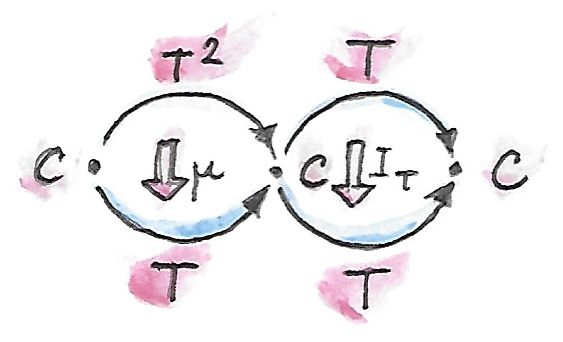
するとが得られ、を適用するとさらにに簡約できる。ここではからへの恒等自然変換だ。このような水平合成はよくと短く表記される。この表記に曖昧さはない。なぜなら、関手を自然変換と合成するのは意味がなく、それゆえこの文脈でははを意味するに違いないからだ。
（自己）関手圏における図式を描くこともできる。
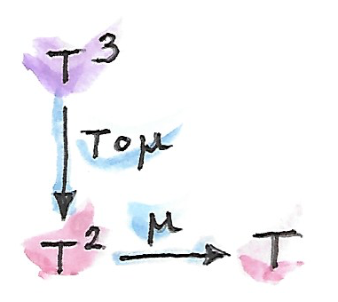
また別の簡約法として、を合成として扱い、を適用してもよい。その結果もとなるので、今回もを使ってに戻せる。これら2つの経路のどちらにおいても同じ結果が得られるようになっていてほしい。

同様に、恒等関手をの後に合成したものに対して水平合成を適用してが得られ、その後でを使って簡約できる。その結果は恒等自然変換をに直接適用したのと同じになってほしい。そして、類推から、同様のことがにも当てはまってほしい。
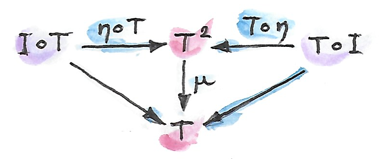
これらの規則から、クライスリ射の合成が実際に圏の規則を満たすことを確かめてみるとよい。
モナドとモノイドの類似点は驚異的だ。どちらにも乗算・単位・結合律・単位律が存在する。しかし、我々のモノイドの定義は狭すぎて、モナドをモノイドとしては記述できない。そこで、モノイドの概念を一般化しよう。
22.1 モノイダル圏
モノイドの従来の定義に戻ろう。それは二項演算および、単位という特別な要素を持つ集合だった。Haskellでは、このことを型クラスとして表現できる。
class Monoid m where
mappend :: m -> m -> m
mempty :: m 二項演算mappendは結合的かつ単位的 (unital)
でなければならない（すなわち、単位memptyを乗算することはno-opとなる）。
Haskellでのmappendの定義はカリー化されていることに注意してほしい。つまり、mappendはmのどの要素も関数に写せると解釈できる。すなわち、
mappend :: m -> (m -> m) この解釈こそが、モノイドを、自己射 (endomorphism)
(m -> m)
がモノイドの要素を表すような単一対象圏として定義するもととなるものだった。ただし、Haskellにはカリー化が組み込まれているので、乗算の別の定義から始めてもよかったはずだ。
mu :: (m, m) -> m
ここで、デカルト積(m, m)は乗算されるペアの域になる。
この定義は一般化への別の道を示唆する。デカルト積を圏論的な積に置き換えるというものだ。積が大域的に定義されている圏から始め、対象mを選択し、乗算を射として定義できるかもしれない。
ただし、問題が1つある。任意の圏で対象の内部を覗き見られるわけではないのに、どうすれば単位元を選び取れるだろう？ そのためのトリックがある。要素の選択が単元集合からの関数と等価であったことを覚えているだろうか？ Haskellで言うと、memptyの定義を次の関数に置き換えられてもよかったはずだ。
eta :: () -> m単元集合はの終対象なので、終対象を持つすべての圏にこの定義を一般化するのは自然だ。 これにより、要素について述べることなく単位「要素」を選べる。
以前モノイドを単一対象圏として定義したときとは違って、ここではモノイド則が自動的に満たされるわけではなく、それらを課す必要がある。しかし、それらを定式化するには、基礎となる圏論的な積そのもののモノイドの構造を確立しなければならない。まずはHaskellでモノイドの構造がどのようになっていたか思い出していこう。
まずは結合性から見ていこう。Haskellでは、対応する等式規則 (equational law) は次のように書ける。
mu x (mu y z) = mu (mu x y) zこの等式を他の圏に一般化する前に、関数（射）の等しさの形で書き直す必要がある。抽象化により個々の変数に対する作用から離れる必要がある――言い換えれば、ポイントフリー記法を使う必要がある。デカルト積は双関手だと分かっているので、左辺は次のように書き直せる。
(mu . bimap id mu)(x, (y, z))そして右辺は次のように書ける。
(mu . bimap mu id)((x, y), z) これはほぼ希望どおりだ。残念ながら、デカルト積には厳密 (strict)
な結合性がない――(x, (y, z))と((x, y), z)は異なる――ので、次のようにポイントフリーでは書けない。
mu . bimap id mu = mu . bimap mu id一方、この2つのペアのネストの仕方同士は同型だ。それらの間を変換する結合切替子 (associator) と呼ばれる可逆関数がある133。
alpha :: ((a, b), c) -> (a, (b, c))
alpha ((x, y), z) = (x, (y, z))
結合切替子の助けを借りればmuについての結合律をポイントフリーで書ける。
mu . bimap id mu . alpha = mu . bimap mu id単位律にも同様のトリックを適用できる。新しい記法では次のような形式になる。
mu (eta (), x) = x
mu (x, eta ()) = xこれらは次のように書き直せる。
(mu . bimap eta id) ((), x) = lambda ((), x)
(mu . bimap id eta) (x, ()) = rho (x, ()) 2つの同型射のうちlambdaは左単位積子 (left unitor)
と呼ばれ、rhoは右単位積子 (right unitor) と呼ばれる134。これらが示すのは、単位
() は同型を除いてデカルト積の単位元であるという事実だ。
lambda :: ((), a) -> a
lambda ((), x) = xrho :: (a, ()) -> a
rho (x, ()) = xしたがって、ポイントフリー版の単位律は次のようになる。
mu . bimap id eta = lambda
mu . bimap eta id = rho
ここまでで、muとetaについてのポイントフリーなモノイド則の定式化を、基礎となるデカルト積自体が型の圏におけるモノイド的な乗算のように作用するという事実を用いて行った。ただし、留意すべき点として、デカルト積の結合律と単位律は同型を除いてのみ成り立つ。
実は、これらの規則は積と終対象を持つすべての圏に一般化できる。圏論的な積は確かに同型を除いて結合的であり、同様に、同型を除いて終対象は単位だ。結合切替子と2つの単位積子は自然同型だ。それらについての規則は可換図式で表せる。

積は双関手なので射のペアを持ち上げられることに注意してほしい――Haskellではそのためにbimapが使われる。
ここで議論を打ち切って、圏論的な積と終対象を持つあらゆる圏においてモノイドを定義できると述べることもできるかもしれない。つまり、モノイド則を満たすような対象と2つの射とを選択できるなら、モノイドが存在する、と。しかし、もっとうまくやれる。とについて規則を定式化するために完全な圏論的な積は必要ない。積の定義は射影を使った普遍的構成によって行われていたのを思い出してほしい。その一方でモノイド則の定式化では射影を一切使わなかった。
積ではないものの積のように振る舞う双関手はテンソル積 (tensor product) と呼ばれ135、中置演算子で表されることが多い。テンソル積の一般的な定義は少しトリッキーだが、気にしないでよい。ここでは単にその性質を列挙する――最も重要なのは同型を除いた結合性だ。
同様に、対象が終対象である必要はない。それが終対象であるという性質――つまり、どの対象からも一意な射が存在すること――を使いはしなかった。必要なのは、それがテンソル積とうまく協調して働くことだ。つまり、同型を除いてテンソル積の単位であってほしい。以上をまとめてみよう。
モノイダル圏はテンソル積と呼ばれる双関手 および、単位対象と呼ばれる特定の対象と、それぞれ結合切替子・左単位積子・右単位積子と呼ばれる3つの自然同型写像 を備えた圏である（上記に加えて四項のテンソル積を単純化するためのコヒーレンス条件 (coherence condition) も存在する136。）
重要なのは、よく知られた多くの双関手がテンソル積として記述できることだ。特に、積、余積、そしてすぐ後でみるように自己関手の合成（そしてDay convolutionのようなより深遠な積）がそのような例だ。そして、モノイダル圏は豊穣圏の定式化において不可欠な役割を果たすことになる。
22.2 モノイダル圏におけるモノイド
さて、モノイダル圏という、より一般的な設定においてモノイドを定義する準備が整った。対象を選択することから始める。ここで、テンソル積を使えばの冪乗を形成できる。の2乗はだ。の3乗を形成する方法は2つあるが、それらは結合切替子を通じて同型だ。のより高次の冪乗についても同様だ（そこではコヒーレンス条件が必要になる）。モノイドをなすには2つの射を選ぶ必要がある。 ここで、はテンソル積の単位対象だ。
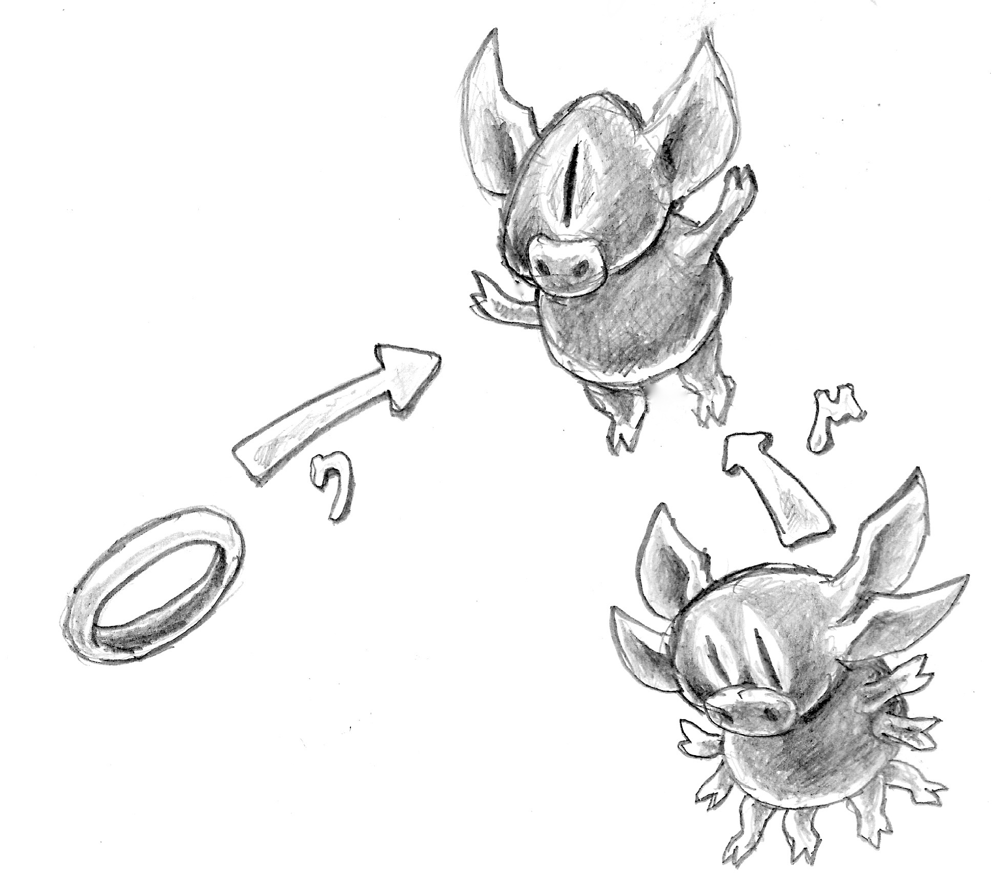
これらの射は結合律および単位律を満たさなければならない。それらは以下の可換図式で表せる。


ここではテンソル積が双関手であることが極めて重要だ。それは、積を作るにはやのように射のペアを持ち上げる必要があるからだ。これらの図式は、圏論的な積に関するこれまでの結果の直截の一般化にすぎない。
22.3 モノイドとしてのモナド
モノイドの構造は思いがけないところに現れる。その1つが関手圏だ。少し目を細めれば、関手の合成が積の一種に見えてくるだろう。問題は、2つの関手は合成できるとは限らないことだ――一方にとっての行き先となる圏が他方にとってのもととなる圏でなければならない。これは射の合成についてのいつもの規則に他ならない――そして、すでに知っているとおり、関手はまさに圏内の射だった。ただし、自己射（同じ対象にループバックする射）と同様に自己関手も常に合成可能だ。任意の圏について、からへの自己関手は関手圏をなす。その対象は自己関手であり、射はそれらの間の自然変換だ。この圏から任意の2つの対象（自己関手ととする）を選び、もうひとつの対象――それらを合成した自己関手――を得られる。
自己関手の合成はテンソル積の良い候補だろうか？ まず、それが双関手だと示さなければならない。それを使って射――ここでは自然変換――のペアを持ち上げられるだろうか？ テンソル積についてbimapに相当するもののシグネチャーは次のようになるだろう。
対象を自己関手で、矢印を自然変換で、テンソル積を合成で置き換えると次が得られる。
これは、水平合成の特殊なケースだと見なせる。

また、恒等自己関手も自由に使える。これは自己関手の合成――新しいテンソル積――の単位として機能する。そのうえ、関手の合成は結合的だ。事実、結合律と単位律は厳密だ――結合切替子や2つの単位積子は必要ない。したがって、自己関手は関手合成をテンソル積として伴う厳密モノイダル圏をなす。
この圏でのモノイドとは何だろう？ それは対象――自己関手と、次のような2つの射――自然変換だ。 それだけでなく、モノイド則もある。
これらはいままで見てきたモナド則そのものだ。これでソーンダーズ・マックレーンの有名な言葉137が理解できるだろう。
端的に言えば、モナドは自己関手からなる圏におけるモノイドに他ならない。
これが関数プログラミングのカンファレンスでTシャツにプリントされているのを見たことがあるかもしれない 138 139。
22.4 随伴に基づくモナド
随伴（第18章を参照）は2つの圏との間を行き来する一対の関手だ。それらを合成する方法は2つあり、それぞれ2つの自己関手とが得られる。随伴の定義によると、これらの自己関手は単位と余単位と呼ばれる2つの自然変換を通じて恒等関手と関係している。 すぐに、随伴の単位はモナドの単位にそっくりだということが見て取れる。実は、自己関手は本当にモナドなのだ。必要なのは、あとはに対応する適切なを定義することだけだ。これは自己関手の2乗と自己関手自体との間の自然変換であり、随伴関手の言葉で書くと次のように表される。 そして、実際、余単位を使えば真ん中のを潰せる。正確にはは水平合成で与えられる。 モナド則は、随伴の単位と余単位が満たす恒等図式140と、 相互交換法則141から導かれる。
随伴から派生したモナドをHaskellであまり見かけないのは、随伴には通常2つの圏が関わるからだ。ただし、冪すなわち関数対象の定義は例外だ。この随伴は次の2つの自己関手から形成される。 これらを合成するとお馴染みのstateモナドになるのが分かるだろう。 このモナドは以前Haskellで見たことがある。
newtype State s a = State (s -> (a, s))もとの随伴もHaskellに翻訳してみよう。左関手は積関手だ。
newtype Prod s a = Prod (a, s)そして右関手はreader関手だ。
newtype Reader s a = Reader (s -> a)これらは随伴をなす。
instance Adjunction (Prod s) (Reader s) where
counit (Prod (Reader f, s)) = f s
unit a = Reader (\s -> Prod (a, s))ここで、reader関手を積関手の後に合成したものが実際にstate関手と等価なのは簡単に確認できる。
newtype State s a = State (s -> (a, s))
予想どおり、随伴のunitはstateモナドのreturn関数と等価だ。また、counitは、その引数に作用する関数を評価することによって作用する142。これは、runState関数
runState :: State s a -> s -> (a, s)
runState (State f) s = f s の非カリー化版として認識可能だ143（非カリー化する理由は、counitはペアに作用するからだ）。
ここでstateモナドのjoinを自然変換の成分として定義できる。そのためには3つの自然変換を水平合成したものが必要だ。
言い換えると、余単位をreader関手を1レベル超えて忍び込ませる必要がある。単にfmapを直接呼び出すことはできない。なぜなら、コンパイラーがReader関手のものではなくState関手のものを選択するだろうからだ。だが、reader関手のfmapは左関数合成にすぎないことを思い出してほしい。そのため、関数合成を直接使うことにする。
まず、データ構成子Stateを一皮剥くことでState関手内の関数をあらわにする必要がある。これはrunStateを使えばできる。
ssa :: State s (State s a)
runState ssa :: s -> (State s a, s)
次に、uncurry runStateによって定義される余単位に左合成する。最後に、Stateデータ構成子で包み直す。
join :: State s (State s a) -> State s a
join ssa = State (uncurry runState . runState ssa)
これはまさにStateモナドのためのjoinの実装だ144。
実は、あらゆる随伴からモナドが生じるだけでなく、逆もまた真である。あらゆるモナドは随伴関手2つの合成に分解できる。ただし、そのような分解は一意ではない。
もう一方の自己関手については次章で述べる。
23 コモナド
これでモナドについてはカバーできたので、双対性の恩恵によって、射を逆にして反対圏で作業するだけでコモナドを無料で手に入れられる。
最も基本的なレベルでは、モナドはクライスリ射の合成についてのものであったのを思い出してほしい。
a -> m b
ここでmはモナドである関手だ。コモナドを文字w（逆さのm）で表すと、余クライスリ射
(co-Kleisli arrow) を次の型の射として定義できる。
w a -> b余クライスリ射についてfish演算子に相当するものは次のように定義される。
(=>=) :: (w a -> b) -> (w b -> c) -> (w a -> c)
余クライスリ射が圏をなすにはextractと呼ばれる恒等余クライスリ射も必要となる。
extract :: w a -> a
これはreturnの双対だ。さらに、extractが左恒等射かつ右恒等射であることだけでなく、結合律も必須だ。すべてをまとめると、Haskellではコモナドを次のように定義できるように思われる。
class Functor w => Comonad w where
(=>=) :: (w a -> b) -> (w b -> c) -> (w a -> c)
extract :: w a -> a実用上は、後で説明するように、わずかに異なるプリミティブが使われる。
問題は、コモナドがプログラミングでどのように使われるかだ。
23.1 コモナドによるプログラミング
モナドとコモナドを比べてみよう。モナドはコンテナーに値を入れる手段をreturnによって提供している。しかし、内部に格納された値にアクセスする手段は提供しない。もちろんモナドを実装するデータ構造は内容へのアクセスを提供する場合もあるかもしれないが、それはおまけと見なされる。モナドから値を抽出するための共通したインターフェイスはない。そして、内容を決して公開しないことを誇りにしているIOモナドという例を我々はすでに見た。
一方、コモナドは値をひとつ取り出す手段を提供している。しかし、値を入れる手段は提供しない。コモナドをコンテナーと見なすとしたら、それは中身がいつも事前に満たされていて、覗き見られるようになっているようなコンテナーだ。
クライスリ射は値を受け取り、文脈で装飾した結果を生成する。同様に、余クライスリ射は文脈全体と共に値を受け取り、結果を生成する。これは文脈付き計算 (contextual computation) の実施例だ。
23.2 積コモナド
Readerモナドを覚えているだろうか？ それを導入した理由は、何らかの読み取り専用の環境eへのアクセスを必要とする計算を実装する問題に取り組むためだった。そのような計算は純粋関数として次の形で表せる。
(a, e) -> bそれらをクライスリ射に変えるのにはカリー化を使った。
a -> (e -> b)しかし、この関数がすでに余クライスリ射の形をしていることに注目してほしい。引数をもっと便利な関手の形式
data Product e a = Prod e a deriving Functorに書き換えてみよう。合成演算子は簡単に定義できる。合成しようとしている射でも同じ環境を使えるようにすればよい。
(=>=) ::
(Product e a -> b) ->
(Product e b -> c) ->
(Product e a -> c)
f =>= g = \(Prod e a) -> let b = f (Prod e a)
c = g (Prod e b)
in c extractの実装は環境を単に無視する。
extract (Prod e a) = a
驚くまでもなく、積コモナドではreaderモナドと全く同じ計算が実行できる。ある意味で、環境をコモナドで実装するのはより自然だ――「文脈付き計算」の精神に則っている。一方、モナドはdo記法という便利な糖衣構文を備えている。
readerモナドと積コモナドの関係はさらに深く、reader関手が積関手の右随伴であるという事実に関連している。しかし、一般的には、コモナドはモナドとは異なる計算の概念を扱う。さらなる例について後で説明する。
積コモナドProductは、組やレコードを含む任意の直積型へ簡単に一般化できる。
23.3 合成の分析
双対化のプロセスを続けることで、さらに進めてモナド的なbindとjoinを直接双対化することも可能かもしれない。その代わりに、それらを得るためにモナドで用いたプロセスを繰り返すこともできる。そこではfish演算子の解剖学を研究した。そのアプローチの方が啓発的に思える。
出発点は、合成演算子はw aを取りcを生成する余クライスリ射を生成しなければならないという認識だ。cを生成する唯一の方法は、第2の関数を型w bの引数に適用することだ。
(=>=) :: (w a -> b) -> (w b -> c) -> (w a -> c)
f =>= g = g ...
だが、gに与えうる型w bの値はどうすれば生成できるだろうか？ 型w aの引数と関数f :: w a -> bは自由に使える。答えはbindの双対を定義することだ。それはextendと呼ばれる。
extend :: (w a -> b) -> w a -> w b extendを使えば合成を実装できる。
f =>= g = g . extend f
次はextendを解剖できるだろうか？ なぜ単に関数w a -> bを引数w aに適用しないのか、と言いたくなるかもしれない。しかし、結果として得られるbをw bに変換する方法がないことにすぐ気付くだろう。コモナドは値を持ち上げる手段を提供しないことを思い出してほしい。この時点で、モナドについての類似した構成ではfmapを用いていた。ここでfmapが使えるとすれば、型w (w a)の何かが自由に使える場合だけだ。w aをw (w a)に変えられさえすればよい。そして、便利なことに、それはまさにjoinの双対であればよい。それはduplicateと呼ばれる。
duplicate :: w a -> w (w a)
したがって、モナドと同様に、コモナドにも3つの等価な定義がある。すなわち、余クライスリ射によるものと、extendによるものと、duplicateによるものだ。HaskellのControl.Comonadライブラリーから直接引用した定義を以下に示す。
class Functor w => Comonad w where
extract :: w a -> a
duplicate :: w a -> w (w a)
duplicate = extend id
extend :: (w a -> b) -> w a -> w b
extend f = fmap f . duplicate
extendのデフォルト実装がduplicateによって提供され、逆も同様だ。したがって、どちらか1つをオーバーライドするだけでよい。
これらの関数の背景にある直観は、一般にコモナドは型aの値で満たされたコンテナーと見なせるという考えに基づいている（積コモナドは値が1つしかない特殊なケースだ）。「現在の」値という概念があり、それはextractによって簡単にアクセスできる。余クライスリ射は現在の値に焦点を合わせて計算を実行するものの、周囲のすべての値にアクセスできる。コンウェイのライフゲームを考えてみてほしい。各セルには値（通常は単にTrueかFalse）が含まれる。ライフゲームに対応するコモナドは「現在の」セルに焦点が合っているようなセルのグリッドになるだろう。
ではduplicateは何をするのだろう？ それはコモナド的なコンテナーw aを取ってコンテナーのコンテナーw (w a)を生成する。つまり、それぞれのコンテナーがw a内部の異なるaに焦点を合わせているという考え方だ。ライフゲームでは、グリッドのグリッドが得られる。外側のグリッドの各セルには、個別のセルに焦点を合わせた内側のグリッドが含まれている。
次にextendを見てみよう。それは、余クライスリ射と、複数のaで満たされたコモナド的コンテナーw aを取る。そして、すべてのaに計算を適用してbに置き換える。結果は複数のbで満たされたコモナド的コンテナーとなる。これを実現するためにextendは焦点を合わせるaを次々にシフトしていき、それぞれに余クライスリ射を適用する。ライフゲームでは、余クライスリ射は現在のセルの新しい状態を計算する。そのために文脈（すなわち最近傍セル）に注目する。extendのデフォルト実装はこの過程を示している。まずduplicateを呼び出して可能な焦点をすべて生成し、次にそのそれぞれにfを適用する。
23.4 Streamコモナド
コンテナー内で焦点を合わせる要素を次々にシフトしていくこのプロセスを最もうまく説明できる例は無限ストリームだ。そういったストリームはリストにそっくりだが、空のコンストラクターがない点で異なる。
data Stream a = Cons a (Stream a) これがFunctorであるのは自明だ。
instance Functor Stream where
fmap f (Cons a as) = Cons (f a) (fmap f as)
ストリームの焦点はその最初の要素なので、extractの実装は次のようになる。
extract (Cons a _) = a
duplicateは、それぞれ異なる要素に焦点を合わせた複数のストリームからなるストリームを1つ生成する。
duplicate (Cons a as) = Cons (Cons a as) (duplicate as)1番目の要素はもとのストリーム、2番目の要素はもとのストリームのtail、3番目の要素はさらにそのtail、というように無限に続く。
完全なインスタンス宣言を以下に示す。
instance Comonad Stream where
extract (Cons a _) = a
duplicate (Cons a as) = Cons (Cons a as) (duplicate as)
これは非常に関数的な観点でのストリームの捉え方だ。命令型言語なら、ストリームを1要素だけシフトするようなadvanceメソッドから始めただろう。しかし、ここでのduplicateはシフトされたすべてのストリームを一気に生成する。Haskellの遅延評価がこれを可能にし、望ましいものにさえしている。もちろん、Streamを実用的なものにするために、advanceに類似したものも実装しよう。
tail :: Stream a -> Stream a
tail (Cons a as) = asただし、これはコモナドのインターフェイスの一部では決してない。
デジタル信号処理の経験があればすぐ分かるとおり、ストリームについての余クライスリ射は単なるデジタルフィルターであり、extendはフィルターされたストリームを生成する。
簡単な例として、移動平均フィルターを実装してみよう。ストリームのn個の要素を合計する関数はこう書ける。
sumS :: Num a => Int -> Stream a -> a
sumS n (Cons a as) = if n <= 0 then 0 else a + sumS (n - 1) as
そして、ストリームの最初からn個の要素の平均を計算する関数はこう書ける。
average :: Fractional a => Int -> Stream a -> a
average n stm = (sumS n stm) / (fromIntegral n)
部分適用されたaverage nは余クライスリ射なので、ストリーム全体にextendできる。
movingAvg :: Fractional a => Int -> Stream a -> Stream a
movingAvg n = extend (average n)結果は移動平均のストリームとなる。
ストリームは単方向1次元コモナドの例だ。これは簡単に双方向にしたり多次元に拡張したりできる。
23.5 圏論から見たコモナド
圏論でコモナドを定義することは双対性についての簡単な練習問題になる。モナドと同様に、自己関手から始めることにする。モナドを定義する2つの自然変換とは、コモナドでは単に反転される。
これらの変換の成分は、extractおよびduplicateに対応する。コモナド則は鏡に映ったモナド則だ。驚くまでもない。
そして、モナドは随伴から導出できる。双対性は随伴を反転させる。つまり、左随伴と右随伴が入れ替わる。また、合成がモナドを定義するので、はコモナドを定義するに違いない。随伴の余単位
は、コモナドの定義で見たものと同じだ。すなわち、成分で見ればHaskellにおけるextractと同じだ。随伴の単位
も、の途中にを挿入してを作成するのに使える。［訳注：］からを作るとが定義され、コモナドの定義が完成する。
モナドがモノイドであることもすでに見た。この双対について述べるにはコモノイドを使う必要があるだろうが、ではコモノイドとは何だろう？ モノイドとは単一対象圏であるという当初の定義を双対化しても興味深いものは何も得られない。すべての自己射を逆向きにしても、別のモノイドが得られるだけだ。しかし、思い出してほしい。モナドへのアプローチで用いた定義は、モノイドとはモノイダル圏における対象であるという、より一般化されたものだった。その構成は2つの射に基づいていた。 これらの射を反転させるとモノイダル圏におけるコモノイドができる。 コモノイドの定義をHaskellで書くと
class Comonoid m where
split :: m -> (m, m)
destroy :: m -> ()
となるが、むしろ自明なものとなってしまう。明らかにdestroyは引数を無視する。
destroy _ = () また、splitは単に関数のペアだ。
split x = (f x, g x)ここで、モノイドの単位律と双対関係にあるコモノイド則について考えてみよう。
lambda . bimap destroy id . split = id
rho . bimap id destroy . split = id
ここで、lambdaは左単位積子でrhoは右単位積子だ
(モノイダル圏の定義を参照)。定義を代入すると
lambda (bimap destroy id (split x))
= lambda (bimap destroy id (f x, g x))
= lambda ((), g x)
= g x
となり、g = idが示される。同様に、2番目の規則はf = idへと展開される。結論として
split x = (x, x)となり、Haskell（および一般に圏）では、どの対象も自明なコモナドだと示される。
幸い、モノイダル圏のなかには、コモノイドを定義することがもっと興味深いものが他にある。そのひとつは自己関手の圏だ。そこで分かることとして、モナドが自己関手からなる圏におけるモノイドであるのと同様に、
コモナドは自己関手からなる圏におけるコモノイドである。
23.6 Storeコモナド
コモナドのもう1つの重要な例はstateモナドの双対だ。それはcostateコモナド、あるいはstoreコモナドと呼ばれる。
以前、冪を定義する随伴によってstateモナドが生成されるのを見た。
同じ随伴をcostateコモナドを定義するのに使うことにしよう。コモナドは合成によって定義される。
これをHaskellに変換するには、Product左関手とReader右関手との間の随伴から始める。ProductをReaderの後に合成するのは次の定義と等価だ。
data Store s a = Store (s -> a) s 対象aにおけるこの随伴の余単位は次の射だ。
あるいは、Haskellの記法だとこうなる。
counit (Prod (Reader f, s)) = f s これからextractを得られる。
extract (Store f s) = f s随伴の単位
unit :: a -> Reader s (Product a, s)
unit a = Reader (\s -> Prod (a, s))は、部分適用されたデータ構成子として書き直せる。
Store f :: s -> Store f s
、すなわちduplicateを以下の水平合成として構成しよう。
一番左の越しにをくすねる必要がある。このはProduct関手だ。これは、ペアの左側の要素にすなわちStore fを作用させることを意味する（これがProductのfmapが行うことだ）。すると、次の結果が得られる。
duplicate (Store f s) = Store (Store f) s（の式でのとは恒等自然変換を表し、成分が恒等射であることを思い出してほしい）。
Storeコモナドの完全な定義を以下に示す。
instance Comonad (Store s) where
extract (Store f s) = f s
duplicate (Store f s) = Store (Store f) s
StoreのReaderの部分は、一般化されたコンテナーに型sの要素をキーにしてaが格納されていると見なせる。たとえば、sがIntなら、Reader Int aはaの双方向無限ストリームだ。Storeはこのコンテナーとキー型の値とをペアにする。また、たとえば、Reader Int aはあるIntとペアになっている。この場合、extractはその整数を使って無限ストリームにインデックスを作成する。Storeの2番目の要素は現在位置と見なせる。
この例についてさらに述べると、duplicateはIntでインデックスされた新しい無限ストリームを作成する。このストリームは要素としてストリームを含む。特に、現在位置にはもとのストリームが含まれている。しかし、他の（正負を問わない）Intをキーとして使うと、その新しいインデックスの位置へシフトされたストリームが得られる。
一般に、duplicateされたStoreにextractが作用すると、もとのStoreが生成されることを確認できる（実際、コモナドの恒等律ではextract . duplicate = idと規定されている）。
Storeコモナドはlensライブラリーの理論的基盤として重要だ145。概念としては、Store s aのようにコモナドを用いることは、型sをインデックスとしてデータ型aの特定の部分構造に（レンズのように）「焦点を合わせる」という考え方をカプセル化している146。特に、ある関数の型が
a -> Store s aなら、以下の関数のペアと等価だ。
set :: a -> s -> a
get :: a -> s
aが直積型なら、setは、a内の型sのフィールドをセットしつつ変更版のaを返すように実装できる。同様に、getはsフィールドの値をaから読み取るように実装できる。これらの考え方については次章で詳しく説明する。
23.7 課題
Storeコモナドを用いてコンウェイのライフゲームを実装せよ。ヒント：sの型は何がよいだろうか？
24 -代数
モノイドについて、集合や、単一対象圏や、モノイダル圏の対象としての定式化をすでに見た。この単純な概念からさらにどれだけの果汁を搾り取れるだろうか？
やってみよう。次の関数のペアを持つ集合としてのモノイドの定義を取り上げる。 ここで、1はの終対象――単元集合だ。1つ目の関数は乗算（要素のペアを取って積を返す）を定義し、2つ目の関数はから単位元を選択する。これらのシグネチャーを持つ2つの関数ならどれでもモノイドになるわけではない。結合律と単位律という追加の条件を課す必要がある。しかし、それはしばらく忘れて「潜在的なモノイド」について考えてみよう。関数のペアは、2つの関数集合のデカルト積の要素だ。それらの集合が冪対象として表現できるのは知っている。 これら2つの集合のデカルト積は次のとおりだ。 高校代数（どのデカルト閉圏でも有効）を使えば次のように書き直せる。 記号 はの余積を表す。これは関数のペアを次のような単一の関数――集合の要素――に置き換えたということだ。 この関数集合のどの要素も潜在的なモノイドだ。
この定式化の利点は、興味深い一般化を導くことだ。たとえば、この言語を使って群 (group) を記述するにはどうすればよいだろうか？ 群は、モノイドのどの要素に対しても逆元を対応させる関数を追加したものだ。その関数は型の関数である。例を挙げると、整数は群を形成し、二項演算として加算、単位元として0、逆として正負反転を持つ。群を定義するには次の3つの関数から始めてもよい。 前と同様に、この3つ組を結合して1つの関数集合にできる。 1つの二項演算子（加算）、1つの単項演算子（正負反転）、1つの零項演算子（恒等射――ここでは0）から始めた。そして、それらを1つの関数に統合した。このシグネチャーを持つすべての関数は、潜在的な群を定義する。
同様のことを続けられる。たとえば、環を定義するにはもう1つの二項演算子と1つの零項演算子を追加する、などだ。毎回、左辺が冪乗（0乗――終対象――を含んでよい）の和で、右辺がその集合自体である関数型が得られる。
いまや一般化に夢中になってしまうだろう。まず、集合を対象に、関数を射に置き換えられる。n項演算子はn項積からの射として定義できる。これは有限積 (finite product) をサポートする圏が必要であることを意味する。零項演算子に対しては終対象が存在する必要がある。したがって、デカルト圏が必要だ147。これらの演算子を組み合わせるには冪が必要なので、必要なのはデカルト閉圏となる。最終的に、この代数的な悪ふざけを完成させるには余積が必要になる。
あるいは、式の導出方法を忘れて、最終成果物に集中してもよい。我々の射の左辺にある積の和は、自己関手を定義している。その代わりとして任意の自己関手を選ぶとどうなるだろう？ その場合は圏に制約を課す必要はない。こうして得られたものは-代数と呼ばれる。
-代数は、1つの自己関手、1つの対象と、次の1つの射からなる3つ組だ。 ここでの対象はしばしば台 (carrier, underlying object) と呼ばれ、プログラミングの文脈ではキャリア型と呼ばれる。また、射は評価射 (evaluation function, structure map) と呼ばれることが多い。関手が式を形成し、それを射が評価すると考えてほしい。
Haskellによる-代数の定義を示す。
type Algebra f a = f a -> aこれは代数とその評価関数を同一視している。
モノイドの例では、問題の関手は次のようになる。
data MonF a = MEmpty | MAppend a aこれはHaskellでを表したものだ（代数的データ構造（第6章）について思い出してほしい）。
環は次の関手を使って定義される。
data RingF a = RZero
| ROne
| RAdd a a
| RMul a a
| RNeg aこれはHaskellでを表したものだ。
環の例としては整数の集合が挙げられる。Integerをキャリア型に選ぶと、評価関数を次のように定義できる。
evalZ :: Algebra RingF Integer
evalZ RZero = 0
evalZ ROne = 1
evalZ (RAdd m n) = m + n
evalZ (RMul m n) = m * n
evalZ (RNeg n) = -n
同じ関手RingFに基づく-代数は他にもたくさんある。たとえば、多項式も正方行列も環をなす。
ご覧のとおり、関手の役割は、評価に代数の評価子 (evaluator) を使えるような式を生成することだ。ここまでは、非常に単純な式しか見てこなかった。しかし、より複雑な、再帰を使って定義できる式に関心があることも多い。
24.1 再帰
任意の式木を生成する方法の1つは、関手の定義内の変数aを再帰で置き換えることだ。たとえば、環における任意の式は、木状のデータ構造によって生成される。
data Expr = RZero
| ROne
| RAdd Expr Expr
| RMul Expr Expr
| RNeg Exprもとの環の評価子は再帰版に置き換えられる。
evalZ :: Expr -> Integer
evalZ RZero = 0
evalZ ROne = 1
evalZ (RAdd e1 e2) = evalZ e1 + evalZ e2
evalZ (RMul e1 e2) = evalZ e1 * evalZ e2
evalZ (RNeg e) = -(evalZ e)これはまだあまり実用的ではない。すべての整数を1の和で表現するのが強制されているからだ。もっとも、緊急時には役に立つ。
それにしても、-代数の言葉で式木を記述するにはどうすればよいだろうか？ 関手の定義において、いままさに行っている置換の結果で自由型変数を再帰的に置き換えるプロセスを、何らかの形で形式化する必要がある。これを段階的に行うことを考えてみよう。まず、深さ1の木を次のように定義する。
type RingF1 a = RingF (RingF a)
RingFの定義の穴を、RingF aによって生成された深さ0の木で埋めている。深さ2の木も同様にして得られる。
type RingF2 a = RingF (RingF (RingF a))これは次のようにも書ける。
type RingF2 a = RingF (RingF1 a)このプロセスを繰り返すことで、シンボリックな等式を書ける。
type RingFn+1 a = RingF (RingFn a)概念的には、このプロセスを無限に繰り返すことでExprが得られる。Exprはaに依存しないことに注意してほしい。旅の出発点によらず、いつも同じ場所に辿り着く。これは任意の圏の任意の自己関手に常に当てはまるわけではないが、圏ではうまくいく。
当然、これは大雑把な議論なので、後でより厳密に説明する。
自己関手を無限回適用すると、不動点 (fixed point) が得られる。これは次のように定義される対象のひとつだ。 この定義の背景には、を得るためにを無限回適用しているので、さらにもう1回適用しても何も変わらない、という直観がある。Haskellでは、不動点の定義は次のようになる。
newtype Fix f = Fix (f (Fix f))おそらく、次のように、定義されている型の名前がコンストラクターの名前と別ならば、もっと読みやすくなっただろう。
newtype Fix f = In (f (Fix f))
しかし、ここでは広く使われている表記に従うことにする。構成子Fix（あるいは好みによってはIn）は関数と見なせる。
Fix :: f (Fix f) -> Fix fまた、関手適用を1層だけ剥がす関数もある。
unFix :: Fix f -> f (Fix f)
unFix (Fix x) = x2つの関数は互いに逆だ。これらの関数は後で使うことになる。
24.2 -代数の圏
この本の中で最も古いトリックについて述べよう。何か新しい対象を構築する方法を思いついたら、それらが圏をなすかどうかを常に確認すべし。驚くまでもなく、任意の自己関手上の代数は圏をなす。その圏の対象は代数だ――台対象と射からなるペアで、どちらももとの圏からのものだ。
この描像を完全なものにするには、-代数の圏における射を定義する必要がある。射は、ある代数 を別の代数 に写さなければならない。これを、台を写す射――もとの圏でからへ向かう射――として定義する。どの射でもよいわけではなく、2つの評価子と互換性がなければならない。（構造を保存するそのような射を準同型と呼ぶ。） -代数の準同型を定義する方法は次のとおりだ。まず、を次の写像へと持ち上げられることに注目してほしい。 それからを辿るとに行き着く。同様に、を使ってからに移ってからを辿ってもよい。2つの経路が等しくなるようにしたい。 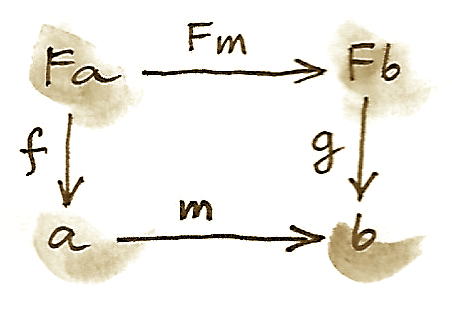
{kind=link}
これが本当に圏であることは簡単に確認できる（ヒント：の恒等射については問題なく、また、準同型の合成は準同型だ）。
-代数の圏に始対象が存在するなら、それは始代数 (initial algebra) と呼ばれる。この始代数の台をと呼び、その評価子をと呼ぼう。始代数の評価子であるは同型射だと分かる。この結果はランベック (Lambek) の定理として知られている。その証明は始対象の定義に依存している。始対象の定義より、他の-代数への一意な準同型が存在する。が準同型なので、次の図式が可換でなければならない。

次に、台がである代数を構成しよう。そのような代数の評価子は からへの射でなければならない。このような評価子はを持ち上げるだけで簡単に構成できる。 は始代数なので、そこから への一意な準同型が必要だ。次の図式が可換でなければならない。

しかし、次のような自明な可換図式もある（どちらの経路も同じだ！）。
{kind=link}
これは、が代数の準同型であり、 を に写すことを示していると解釈できる。これら2つの図式をつなぐと次のようになる。
{kind=link}
この図式は、同様に、が代数の準同型であることを示していると解釈できる。この場合については2つの代数は同じだ。さらに、 は始代数なので、それ自身から自身への準同型は1つしか存在できず、それは恒等射に他ならない。この恒等射が代数の準同型であることは分かっている。したがって、となる。この事実と左側の図式の可換性を用いてであることを証明できる。これはがの逆であることを示しているため、はとの間の同型射だと言える。 しかし、これはまさにがの不動点だと言っている。以上が最初の大雑把な議論の背景にある形式的証明だ。
Haskellに戻ろう。はFix fで、はコンストラクターFix、その逆はunFixだと理解できる。ランベックの定理における同型からは、始代数を得るには関手を取って引数をFix fに置き換えればよいことが分かる148。また、不動点がによらない理由も分かる。
24.3 自然数
自然数も-代数として定義できる。出発点は次のような射のペアだ。 1つ目は0を選択し、2つ目はすべての数をその次の数に写す。前と同じように、この2つは1つにまとめられる。 左辺は関手を定義し、Haskellでは次のように書ける。
data NatF a = ZeroF | SuccF aこの関手の不動点（この関手が生成する始代数）は、Haskellでは次のように表現できる。
data Nat = Zero | Succ Nat自然数は、0か、ある数の次の数かのどちらかだ。これは自然数のペアノ表現として知られている。
24.4 Catamorphism
始代数の条件をHaskellの表記で書き直してみよう。始代数をFix fと呼ぶことにする。その評価子はコンストラクターFixだ。始代数から他の任意の代数への一意な射mが同じ関手上に存在する。台がaであり評価子がalgである代数を考えてみよう。
{kind=link}
ところで、mが何なのかに注目してほしい。これは不動点の評価子であり、再帰的な式木全体の評価子だ。これを実装するための汎用的な方法を探してみよう。
ランベックの定理はコンストラクターFixが同型射であることを示している。その逆はunFixと呼ばれる。したがって、この図式で矢印の1つを反転して次のようにできる。
{kind=link}
この図式の可換条件を書こう。
m = alg . fmap m . unFix
この等式はmの再帰的な定義として解釈できる。再帰は関手fを使って作成されたすべての有限木に対して停止する。そのことは、fmap mが関手fの最上層の下層で動作することに着目すれば分かる。言い換えると、それはもとの木の子に対して機能する。子は常にもとの木より1レベル浅くなる。
Fix fを使って構築された木にmを適用するとどうなるか述べよう。まず、unFixの作用によってコンストラクターが剥がれ、木の最上位があらわになる。次に、最上位ノードのすべての子にmを適用する。それにより、型aの結果が生成される。最後に、非再帰的評価子algを適用することで、これらの結果を結合する。重要な点は、評価子algが単純な非再帰関数であることだ。
これは任意の代数algに対して行えるので、代数をパラメーターに取ってmと呼ばれる関数を返す高階関数を定義するのは筋が通っている。この高階関数はcatamorphismと呼ばれる。
cata :: Functor f => (f a -> a) -> Fix f -> a
cata alg = alg . fmap (cata alg) . unFix例を見てみよう。自然数を定義する関手を考える。
data NatF a = ZeroF | SuccF a
キャリア型として(Int, Int)を選択し、代数を次のように定義する。
fib :: NatF (Int, Int) -> (Int, Int)
fib ZeroF = (1, 1)
fib (SuccF (m, n)) = (n, m + n)
この代数のcatamorphismであるcata fibでフィボナッチ数が計算されることは簡単に納得できる。
一般に、NatFの代数は漸化式を定義する。つまり、現在の要素の値を前の要素によって表す。そして、catamorphismは数列のn番目の要素の値を求める。
24.5 fold
型eのリストは次の関手の始代数だ。
data ListF e a = NilF | ConsF e a
実際、再帰の結果（List eと呼ぶことにする）で変数aを置き換えると、次のようになる。
data List e = Nil | Cons e (List e)
リスト関手の代数は、特定のキャリア型を選択し、リストの2つのコンストラクターについてパターンマッチングを行う関数を定義する。その関数のNilFに対する値は空リストを評価する方法を表し、ConsFに対する値は現在の要素をそれ以前の累積値と組み合わせる方法を表す。
たとえば、以下はリストの長さを計算するために使える代数だ（キャリア型はIntだ）。
lenAlg :: ListF e Int -> Int
lenAlg (ConsF e n) = n + 1
lenAlg NilF = 0
実際、結果として得られるcata lenAlgというcatamorphismによってリストの長さを計算できる。評価関数は、(1)
リストの要素と累積値を受け取って新しい累積値を返す関数と、(2)
開始値（ここでは0）とを組み合わせたものであることに注目してほしい。開始値の型と累積値の型はキャリア型によって与えられる。
これを従来のHaskellの定義と比較してみよう。
length = foldr (\e n -> n + 1) 0 foldrの2つの引数は代数の2つの成分そのものだ。
別の例を見てみよう。
sumAlg :: ListF Double Double -> Double
sumAlg (ConsF e s) = e + s
sumAlg NilF = 0.0再び、これを次のものと比較する。
sum = foldr (\e s -> e + s) 0.0
ご覧のとおり、foldrはリストに対してcatamorphismを特殊化して便利にしたものにすぎない149。
24.6 余代数
いつものように、F-余代数という双対構成があり、射が逆向きになっている。
任意の関手についての余代数も、その余代数的構造を保存する準同型を伴った圏をなす。その圏の終対象
は終余代数 (terminal / final coalgebra) と呼ばれる。他のすべての代数
に対し、次の図式を可換にする一意な準同型mが存在する。
{kind=link}
終余代数は、射が同型射である（余代数に関するランベックの定理）という意味で関手の不動点である。 終余代数は、プログラミングでは通常、（無限でもよい）データ構造または遷移系を生成するためのレシピとして解釈される。
始代数の評価にcatamorphismが使えるのと同様に、終余代数の余評価にはanamorphismが使える。
ana :: Functor f => (a -> f a) -> a -> Fix f
ana coalg = Fix . fmap (ana coalg) . coalg
余代数のカノニカルな例は、その不動点が型eの要素の無限ストリームであるような関手に基づく。これがその関手だ。
data StreamF e a = StreamF e a
deriving Functorそして、これがその不動点だ。
data Stream e = Stream e (Stream e)
StreamF eの余代数は、型aのシードを取り、ある要素と次のシードからなるペアを生成する関数だ（ペアをStreamFという飾った名前で呼んでいる）。
無限数列を生成する余代数の簡単な例はすぐ生成できる。たとえば、2乗のリストや逆数のリストなどだ。
もっと興味深い例としては、素数のリストを生成する余代数がある。無限リストを台として使うのが秘訣だ。最初のシードはリスト[2..]になる。次のシードはこのリストのtailから2の倍数をすべて除いたものになる。これは奇数のリストであり、3から始まる。次の段階では、このリストのtailを取って3の倍数をすべて除く。エラトステネスの篩を作っているのに気付いただろう150。この余代数は次の関数で実装される。
era :: [Int] -> StreamF Int [Int]
era (p : ns) = StreamF p (filter (notdiv p) ns)
where notdiv p n = n `mod` p /= 0この余代数のanamorphismは素数のリストを生成する。
primes = ana era [2..]
ストリームは無限リストなので、Haskellのリストに変換できるはずだ。そのためには、同じ関手StreamFを使って代数を形成したうえでcatamorphismを実行すればよい。たとえば、次のcatamorphismはストリームをリストに変換する。
toListC :: Fix (StreamF e) -> [e]
toListC = cata al
where al :: StreamF e [e] -> [e]
al (StreamF e a) = e : aここでは、同じ不動点が同じ自己関手の始代数でもあり終余代数でもある151。これは任意の圏で常に成り立つわけではない。一般に、自己関手には不動点が多数あり得る（不動点がないこともある）。始代数はいわゆる最小不動点で、終余代数は最大不動点だ。ただし、Haskellでは両方とも同じ式で定義されて一致する。
リストのanamorphismはunfoldと呼ばれる。有限リストを作成するには、ペアについてのMaybeを生成するように関手を改変する。
unfoldr :: (b -> Maybe (a, b)) -> b -> [a] Nothingの値でリストの生成が終了する。
余代数の面白い例として、レンズに関するものが挙げられる。レンズはゲッターとセッターのペアとして表せる。
set :: a -> s -> a
get :: a -> s
ここで、通常、aは型sのフィールドを持つ直積データ型だ152。ゲッターはそのフィールドの値を取得し、セッターはそのフィールドを新しい値に置き換える。これら2つの関数は1つにまとめられる。
a -> (s, s -> a)この関数はさらに次のように書き直せる。
a -> Store s aここで次のような関手を定義した。
data Store s a = Store (s -> a) sこれは積の和から構成される単純な代数的関手ではないことに注意してほしい。これには冪が含まれる。
レンズはこの関手の余代数であり、キャリア型はaだ。Store sがコモナドでもあることは以前にも見た。とても振る舞いの良いレンズは、コモナドの構造と適合する余代数に対応することが分かる。これについては次章で説明する。
24.7 課題
- 1変数多項式の環について評価関数を実装せよ。多項式はの冪乗の係数のリストとして表せる。たとえば、は、（0乗項から始めて）
[-1, 0, 4]と表される。 - 前の構成を、のような、独立変数を多数含む多項式に一般化せよ。
- 行列の環について代数を実装せよ。
- 自然数の2乗のリストを生成するようなanamorphismを持つ余代数を定義せよ。
unfoldrを使って、最初の個の素数のリストを生成せよ。
25 モナドの代数
もし自己関手を式の定義方法だと解釈するなら、代数は式を評価し、モナドは式を生成し操作する方法だということになる。代数とモナドを組み合わせることで、多くの機能が得られるだけでなく、いくつかの興味深い質問にも答えられる。
そのような疑問の1つはモナドと随伴の関係に関するものだ。これまで見てきたように、すべての随伴はモナド（およびコモナド）を定義する。問題は、すべてのモナド（コモナド）は随伴から導出可能なのかだ。答えは可能だ。任意のモナドを生成する随伴の族が存在する。そのような随伴を2つ紹介したい。
定義を確認しよう。モナドは、あるコヒーレンス条件を満たす2つの自然変換を伴う自己関手だ。それらの変換のにおける成分は次のとおりだ。 同じ自己関手についての代数は、次の射を伴ったある特定の対象――台――の選択だ。 まず注目すべきは、代数がとは逆行していることだ。直観では、は型の値から自明な式を作る。第1のコヒーレンス条件は、代数をモナドと整合するものにし、を台とするその代数を用いてその式を評価するともとの値が返ることを保証する。 第2の条件は、2重にネストされた式 を評価する方法が2つある、という事実に基づく。まずを適用して式をフラット化し、次に代数の評価子を使ってもよい。あるいは、持ち上げられた評価子を適用して内側の式を評価してから、その結果に評価子を適用してもよい。これら2つの戦略を等価にしたい。 ここで、射は関手を使ってを持ち上げた結果だ。次の可換図式はこれら2つの条件を示している（後のことを想定してをに置き換えた）。
これらの条件はHaskellでも表現できる。
alg . return = id
alg . join = alg . fmap alg
簡単な例を見てみよう。リスト自己関手の代数は、ある型aと、aのリストからaを生成する関数とで構成される。この関数はfoldrを使って表せる。そのためには、要素の型とアキュムレーターの型を、両方とも同じaになるように選ぶ。
foldr :: (a -> a -> a) -> a -> [a] -> a
この特定の代数は、2つの引数を取る関数fと値zによって規定される。リスト関手はたまたまモナドでもあり、そのreturnは値を単要素リストに変換する。ここでの代数foldr f zをreturnの後に合成したものはxを受け取るとこうなる。
foldr f z [x] = x `f` z
ここで、fの作用を中置記法で表した。代数がモナドと整合するのは、すべてのxに対して次のコヒーレンス条件が満たされる場合だ。
x `f` z = x
fを二項演算子と見なすと、この条件はzが右単位元であることを示している。
第2のコヒーレンス条件はリストのリストを扱っている。joinの作用は個々のリストを連接する。その後で結果のリストをfoldすることもできる。一方で、まず個々のリストをfoldし、次に結果のリストをfoldすることもできる。ここでも、fを二項演算子と見なすと、このコヒーレンス条件はその二項演算が結合的であることを述べている。これらの条件は(a, f, z)がモノイドである場合には確実に満たされる。
25.1 -代数
数学者はモナドをと呼ぶのを好むので、それらと整合する代数を-代数と呼ぶ。圏における任意のモナドについての-代数は圏をなす。この圏はアイレンバーグ・ムーア (Eilenberg-Moore) 圏と呼ばれ、と表記されることが多い。この圏の射は代数の準同型だ。それらは-代数に対して定義されていた準同型と同じものだ。
-代数は台対象と評価子からなるペア だ。からへの自明な忘却関手が存在し、それは をに写す。また、-代数の準同型を、対応する台対象間のにおける射に写す。随伴について議論したとき、忘却関手への左随伴は自由関手と呼ばれると述べたのを覚えているだろう。
に対する左随伴はと呼ばれる。それは内の対象を内の自由代数に写す。この自由代数の台はだ。その評価子は
からへ戻る射だ。はモナドなので、モナド的な（Haskellでのjoin）を評価子として使える。
さらに、これが-代数であることも示す必要がある。そのためには、次の2つのコヒーレンス条件が満たされなければならない。 しかし、を代数に代入すれば、これらはモナド則にすぎない。
覚えているかもしれないが、すべての随伴はモナドを定義する。との間の随伴は、アイレンバーグ・ムーア圏の構成で使われたまさにそのモナドを定義することが知られている。この構成はすべてのモナドに対して行えるので、すべてのモナドは随伴から生成できる、と言える。後ほど、同じモナドを生成する別の随伴が存在することを示す。
計画はこうだ。まず、が実際にの左随伴であることを示す。そのために、この随伴の単位と余単位を定義し、対応する三角恒等式が満たされているのを証明する。次に、この随伴によって生成されるモナドが、実際にもとのモナドであることを示す。
随伴の単位は次の自然変換だ。 この変換のにおける成分を計算してみよう。恒等関手によってが得られる。自由関手は自由代数 を生成し、忘却関手はそれをに簡約する。以上により、からへの写像が得られる。単にモナドの単位をこの随伴の単位として使うことにする。
余単位を見てみよう。 ある-代数 における成分を計算してみよう。忘却関手はを忘れており、自由関手はペア を生成する。だから、 における余単位を定義するには、アイレンバーグ・ムーア圏内の適切な射、すなわち次のような-代数の準同型が必要となる。 このような準同型は台をに写す必要がある。忘却された評価子を単に復活させることにしよう。今度はそれを-代数の準同型として使う。実際、を-代数にしたのと同じ可換図式は、それが-代数の準同型だと示すものとも見なせる。
このようにして、（-代数の圏の対象）における余単位の自然変換の成分をと定義できた。
随伴を完成させるには、単位と余単位が三角恒等式を満たすことも示す必要がある。それらの三角形はこう描ける。
1つ目のものはモナドの単位律より成り立つ。2つ目のものは単に-代数 の規則［訳注：コヒーレンス条件］だ。
以上より、これら2つの関手が随伴をなすことが示せた。 すべての随伴はモナドを生成する。往復旅行 は、対応するモナドを生成する内の自己関手だ。対象に対する作用を見てみよう。によって作られる自由代数は だ。忘却関手は評価子を削除する。したがって、確かに次のものが得られる。 予想どおり、随伴の単位はモナドの単位だ。
随伴の余単位からモナドの乗算が次の式によって得られるのを覚えているかもしれない。 これは3つの自然変換の水平合成であり、そのうち2つは恒等自然変換で、をに写すものとをに写すものだ。真ん中のものは余単位で、ある代数 における成分がであるような自然変換だ。
成分を計算してみよう。まず、を［訳注：すなわち］の後に水平合成すると、におけるの成分が得られる。はを代数 に渡し、は評価子を選択するので、結果はになる。［訳注：すなわち］による左水平合成は何も変更しない。なぜなら、射に対するの作用は自明だからだ。したがって、実際に、随伴から得られるはもとのモナドのと同じだ。
25.2 クライスリ圏
クライスリ圏についてはすでに見た。別の圏とモナドで構成された圏だ。この圏をと呼ぼう。クライスリ圏の対象たちはの対象たちだが、射は異なっている。クライスリ圏でのからへの射は、もとの圏でのからへの射に対応する。この射をからへのクライスリ射と呼ぶ。
クライスリ圏における射の合成はクライスリ射のモナド的な合成によって定義される。例として、をの後に合成するとする。クライスリ圏において があるとき、これらは圏における以下の2つの射に対応している。 合成 をにおける以下のクライスリ射として定義する。 Haskellでは次のように記述できる。
h = join . fmap g . f対象に対しては自明な作用を持つ、からへの関手が存在する。射に対しては、の戻り値を装飾するクライスリ射を作成することによって、内のを内の射に写す。次のような射 が与えられたとき、対応するクライスリ射を使って内の射ができる。 Haskellでは次のように記述できる。
return . fまた、からへ戻る関手も定義できる。それはクライスリ圏から対象を取り、内の対象に写す。クライスリ射 に相当する射について、この関手の作用は内の射 であり、これはまずを持ち上げてからを適用することで得られる。 Haskellの記法だと次のようになる。
G fT = join . fmap fこれはモナド的なbindのjoinに基づく定義であると確認できるだろう。
2つの関手が随伴を形成しているのは容易に理解できる。 そして、それらの合成はもとのモナドを再現する。
したがって、これは同じモナドを生成する2番目の随伴だ。実際に という、における同じモナドを生成するような随伴全体の圏が存在する。その圏では、いま見たクライスリ随伴が始対象で、アイレンバーグ・ムーア随伴が終対象だ。
25.3 コモナドの余代数
同様の構成は任意のコモナドに対して行える。コモナドと整合する余代数の圏を定義できる。それらの余代数は次の図式を可換にする。
ここで、はを台とする余代数の余評価射
(coevaluation morphism) である。
そして、とはコモナドを定義する2つの自然変換である（Haskellでは、これらの成分はextractおよびduplicateと呼ばれる）。
これらの余代数がなす圏からへは自明な忘却関手が存在する。それはただ余評価を忘却している。その右随伴について考えよう。 忘却関手のこの右随伴は余自由関手 (cofree functor) と呼ばれる。は余自由余代数 (cofree coalgebra) を生成する。それは内の対象に余代数 を割り当てる。この随伴はもとのコモナドを合成として再生成する。
同様に、余クライスリ射から余クライスリ圏を構築でき、対応する随伴からコモナドを再生成できる。
25.4 レンズ
レンズの話に戻ろう。レンズは余代数として書ける。 ここで関手は次のとおりだ。
data Store s a = Store (s -> a) s この余代数は、以下の関数のペアとしても表せる。
(は「すべて」(all)
を表し、はその「小さな」(small)
一部だと考えてほしい)。このペアに関して、次が成り立つ。
ここで、は型の値だ。部分適用されたsetは関数であることに注意してほしい。
また、がコモナドなのも分かっている。
instance Comonad (Store s) where
extract (Store f s) = f s
duplicate (Store f s) = Store (Store f) s問題は、あるレンズがこのコモナドの余代数になる条件は何かということだ。第1のコヒーレンス条件 は、次のように解釈できる。
set a (get a) = aこのレンズ則は、データ構造のフィールドをもともとの値に設定しても何も変わらないという事実を表す153。
第2の条件
は、もう少し手間がかかる。まず、store関手のfmapの定義を思い出してほしい。
fmap g (Store f s) = Store (g . f) s
fmap coalgをcoalgの結果に適用すると、次のようになる。
Store (coalg . set a) (get a)
一方、duplicateをcoalgの結果に適用すると、次のようになる。
Store (Store (set a)) (get a)
これら2つの式が等しくなるには、Storeの下の2つの関数はどのようなsに作用しても等しくなければならない。
coalg (set a s) = Store (set a) s coalgを展開すると、次が得られる。
Store (set (set a s)) (get (set a s)) = Store (set a) sこれは残り2つのレンズ則と等価だ。1つ目
set (set a s) = set aは、フィールドの値を2回設定するのは1回設定するのと同じだということを表す154。2つ目
get (set a s) = sは、に設定されたフィールドの値を取得するとが返されることを表す155。
言い換えれば、とても振る舞いの良い (very well behaved)
レンズはまさにstore関手のコモナド余代数だ156。
25.5 課題
- 自由関手の射に対する作用は何か。ヒント：モナドのについて自然性条件を使う。
- 次の随伴を定義せよ。
- 上記の随伴がもとのコモナドを再現することを証明せよ。
26 エンドとコエンド
圏内の射に当てはまる直観はたくさんあるが、誰もが同意できるのは、対象から対象への射があれば、2つの対象には何らかの「関係がある」というものだ。ある意味で、射はこの関係の証明だ。このことは任意の半順序集合を圏と見なしたものにおいては一目瞭然となる。そこでは射が［訳注：半順序］関係そのものであるからだ。一般に、2対象間の同一の関係についてもその「証明」は複数あり得る。それらの証明は我々がhom集合と呼んでいた集合をなす。対象を変化させていくことで、対象のペアから「証明」の集合への写像が得られる。この写像は関手的だ――1番目の引数については反変で、2番目の引数については共変だ。このことは、その圏内の対象間に大域的な関係を確立していると見なせる。この関係は次のhom関手で表せる。 一般に、このような関手はすべて、圏内の対象間の関係を確立するものとして解釈できる。関係には2つの異なる圏とが含まれる場合もある。その場合の関手は、そのような関係を表すことになり、次のようなシグネチャーを持ち、プロ関手 (profunctor) と呼ばれる。 数学者はこれをからへのプロ関手（反転に注意）と呼んでいて、斜線付き矢印で表記する。 プロ関手は、の対象との対象の間の証明を区別する関係 (proof-relevant relation) と見なせる。ここで、集合の要素は関係の証明を記号化している。が空の場合は常に、との間に関係はない。関係は対称である必要はないことに注意してほしい。
もう1つの有用な直観は、自己関手はコンテナーであるという考え方の一般化だ。型がのプロ関手の値は、型の要素をキーとするのコンテナーと見なせる。特に、homプロ関手の要素はからへの関数だ。
Haskellでは、プロ関手は2引数の型構成子pとして定義され、関数のペアを持ち上げるdimapと呼ばれるメソッドを備えている。そのペアのうち1番目の関数は「間違った」方向を向いている。
class Profunctor p where
dimap :: (c -> a) -> (b -> d) -> p a b -> p c d
プロ関手の関手性は、aがbに関係しているという証明があれば、cがdに関係しているという証明も、cからaへの射とbからdへの別の射がある限り手に入ることを示している。あるいは、1番目の関数は新しいキーを古いキーに変換し、2番目の関数はコンテナーの内容を変更するとも見なせる。
1つの圏内で作用するプロ関手では、型の対角要素からかなり多くの情報が取り出せる。がに関係していることは、とという射のペアがある限り証明できる。さらには、たった1つの射を使って非対角値に到達することもできる。たとえば、射があれば、ペアを持ち上げることでからへ向かえる。
dimap f id pbb :: p a bあるいは、ペアを持ち上げることでもからへ向かえる。
dimap id f paa :: p a b26.1 対角自然変換
プロ関手は関手なので、それらの間の自然変換は通常の方法で定義できる。ただし、多くの場合は2つのプロ関手の対角要素間の写像を定義するだけで十分だ。このような変換は、対角要素を非対角要素に接続できる2つの方法を反映した可換条件を満たす場合、対角自然変換 (dinatural transformation) と呼ばれる。関手圏の要素である2つのプロ関手とについて、その間の対角自然変換は射の族 で、任意のについて次の図式が可換となるようなものだ。

これは厳密に自然性条件より弱いことに注意してほしい。が内の自然変換だったなら、前記の図式は2つの自然性の正方図式と1つの関手性条件（プロ関手が合成を保存すること）から構成できただろう。

内の自然変換についての成分は、対象のペアによってのように添字付けされていることに注意してほしい。一方で、対角自然変換は1つの対象によって添字付けされる。対応するプロ関手の対角要素のみを写すからだ。
26.2 エンド
いまや「代数」から圏論の「微積分」と見なせるものへ進む準備ができた。エンド（およびコエンド）の微積分は、古典的な微積分から、その概念だけでなく記法さえいくつか借用している。特に、コエンドは無限和あるいは積分として理解でき、エンドは無限積に類似している。ディラックのデルタ関数に似たものさえある。
エンドは極限を一般化したもので、関手がプロ関手に置き換えられている。錐の代わりに、くさび (wedge) がある。くさびの底面はプロ関手の対角要素によって形成される。くさびの頂点は対象（ここでは、値のプロ関手を想定しているため、集合）であり、側面は頂点を底面内の集合に写す関数の族だ。この族は、1つの多相関数――戻り値の型が多相である関数――と見なせる。 錐とは違って、くさびには底面の頂点同士を接続する関数はない。しかし、すでに見たとおり、内の任意の射について、との両方を共通の集合に接続できる。したがって、次の図式が可換だと主張できる。

これはくさび条件 (wedge condition) と呼ばれる。これは次のように書ける。 あるいは、Haskellの記法を使うと次のようになる。
dimap id f . alpha = dimap f id . alphaここで普遍的構成を使って進み、のエンドを普遍くさび (universal wedge) として定義できる。これは集合に関数の族を伴ったもので、頂点と族の組からなる他のすべてのくさびについて、すべての三角図式を可換にする一意な関数が存在するようなものだ。すなわち、

エンドの記号は、下付きの「積分変数」を添えた積分記号だ。 の成分はエンドの射影写像 (projection map) と呼ばれる。 が離散圏（恒等射以外の射がない）の場合、エンドは圏全体にわたるのすべての対角要素の大域的な積になる。後ほど説明するが、より一般には、この積とエンドの間には等化子を介した関係がある。
Haskellでは、エンドの式は全称量化子 (universal quantifier) に直接変換される。
forall a. p a a厳密に言うと、これはのすべての対角要素の積にすぎないが、くさび条件はパラメトリシティ157によって自動的に満たされる。任意の関数について、くさび条件は次のようになる。
dimap f id . pi = dimap id f . piあるいは、型注釈を付けると次のようになる。
dimap f idb . pib = dimap ida f . piaこの式の両辺の型は
Profunctor p => (forall c. p c c) -> p a b であり、piは多相射影だ。
pi :: Profunctor p => forall c. (forall a. p a a) -> p c c
pi e = e
ここで、型推論によって自動的にeの正しい成分が選択される。
錐のすべての可換条件を1つの自然変換として表せたように、すべてのくさび条件も1つの対角自然変換にまとめられる。そのためには、定関手を、対象のすべてのペアを単一の対象に写し射のすべてのペアをその対象の恒等射に写すような定プロ関手 (constant profunctor) へと一般化する必要がある。 くさびは、その関手からプロ関手への対角自然変換だ。実際、がすべての射を単一の恒等関数に持ち上げることに気付けば、対角自然性の六角形はくさびのダイヤモンドへと収縮できる。
行き先の圏がでなくてもその圏に対してエンドを定義できるが、これ以降では集合値プロ関手 (-valued profunctor) とそのエンドのみを扱う。
26.3 等化子としてのエンド
エンドの定義における可換条件は等化子を用いて書ける。まず、2つの関数を定義しよう（ここでは数学的記法はあまりユーザーフレンドリーではないと思うので、Haskellの記法を用いる）。それらの関数はくさび条件での収束する2つの分岐に対応する。
lambda :: Profunctor p => p a a -> (a -> b) -> p a b
lambda paa f = dimap id f paa
rho :: Profunctor p => p b b -> (a -> b) -> p a b
rho pbb f = dimap f id pbb
どちらの関数もプロ関手pの対角要素を次の型の多相関数に写す。
type ProdP p = forall a b. (a -> b) -> p a b
これらの関数の型は異なる。しかし、pのすべての対角要素を集めて大きな直積型を1つ形成すれば、それらの型を単一化できる。
newtype DiaProd p = DiaProd (forall a. p a a)
関数lambdaとrhoはこの直積型からの写像を2つ導出する。
lambdaP :: Profunctor p => DiaProd p -> ProdP p
lambdaP (DiaProd paa) = lambda paa
rhoP :: Profunctor p => DiaProd p -> ProdP p
rhoP (DiaProd pbb) = rho pbb
pのエンドはこれら2つの関数の等化子だ。等化子は2つの関数が等しい最大の部分集合を選択することを思い出してほしい。ここでは、すべての対角要素たちの積の部分集合でくさびの図式を可換にするものが選択される。
26.4 エンドとしての自然変換
エンドの最も重要な例は自然変換の集合だ。2つの関手との間の自然変換は、 という形式のhom集合から選択された射の族だ。もし自然性条件がなければ、自然変換の集合はこれらすべてのhom集合の積にすぎないだろう。実際、Haskellでは次のようになる。
forall a. f a -> g aHaskellでこれが動作する理由は、自然性がパラメトリシティから導かれるためだ。ただし、Haskell以外では、このようなhom集合に渡るすべての対角要素が自然変換を生成するとは限らない。しかし、写像 がプロ関手であることに注目すれば、そのエンドを研究するのは意味がある。くさび条件は次のとおりだ。

集合 から要素を1つだけ選択しよう。この要素は2つの射影によって特定の変換の2つの成分に写される。それらを次のように呼ぼう。 図式の左側の分岐では、hom関手を使って射のペアを持ち上げる。このような持ち上げを前合成と後合成として一度に実装したのを思い出してほしい。に作用するとき、持ち上げられたペアから次が得られる。 図式のもう一方の分岐からは次が得られる。 くさび条件が要求するこれらの等しさはの自然性条件に他ならない。
26.5 コエンド
予想どおり、エンドの双対はコエンドと呼ばれる。それはくさびの双対で構成され、余くさび (cowedge) と呼ばれる（cowedgeの発音はco-wedgeで、cow-edgeではない）。
？")
コエンドの記号は、上付きの「積分変数」を添えた積分記号だ。 エンドが積に関連しているのと同様に、コエンドは余積すなわち和に関連している（この観点でコエンドは和の極限である積分に似ている）。射影を持つのではなく、プロ関手の対角要素からコエンドに向かう入射を持つ。余くさび条件がなければ、プロ関手のコエンドは、、などのどれかだと言えただろう。あるいは、コエンドが単なる集合になるようなが存在すると言えただろう。エンドの定義で使った全称量化子は、コエンドでは存在量化子 (existential quantifier) になる。
このため、擬似Haskellでは、コエンドを次のように定義する。
exists a. p a aHaskellで存在量化子を実装する標準的な方法では、全称量化されたデータ構成子を用いる158。したがって、次のように定義できる。
data Coend p = forall a. Coend (p a a)この背後にあるロジックは、型の族のうちどれからでも、の選択によらずにコエンドを構築できるというものだ。
エンドが等化子を使って定義できるのと同様に、コエンドは余等化子 (coequalizer) を使って記述できる。すべての余くさび条件は、要約すると、可能なすべての関数についての単一の巨大な余積を取ることだ。これはHaskellでは存在型 (existential type) として表現される。
data SumP p = forall a b. SumP (b -> a) (p a b)
この直和型を評価する方法は2つある。dimapを使って関数を持ち上げる方法と、プロ関手に適用する方法だ。
lambda, rho :: Profunctor p => SumP p -> DiagSum p
lambda (SumP f pab) = DiagSum (dimap f id pab)
rho (SumP f pab) = DiagSum (dimap id f pab)
ここで、DiagSumはの対角要素の和だ。
data DiagSum p = forall a. DiagSum (p a a)
これら2つの関数の余等化子はコエンドだ。余等化子はDiagSum pから、lambdaまたはrhoを同じ引数に対して適用することで得られる値を同一視することで得られる。ここで、引数は関数との要素のペアだ。lambdaとrhoを適用すると、異なるかもしれない2つの値が生成され、それらの型はDiagSum pだ。コエンドでは、これらの2つの値が同一視され、余くさび条件が自動的に満たされる。
集合内の関連する要素を同一視するこのプロセスは形式的には、商を取る、と呼ばれる。商を定義するには同値関係 (equivalence relation) 、つまり、反射律・対称律・推移律を満たすような関係が必要となる。 このような関係は集合を同値類 (equivalence class) に分割する。各同値類は相互に関連する要素たちで構成される。商集合は各同値類から1つの代表を選んで作られる。古典的な例は、以下の同値関係を持つ整数のペア（ただし2つ目は非ゼロ）の集合としての有理数の集合の定義だ。 これが同値関係なのは簡単に確認できる。ペア は分数と見なせて、分子と分母が公約数を持つものは同一視される。有理数はそのような分数の同値類だ。
極限と余極限についての以前の議論から、hom関手は連続的、すなわち極限を保存することを思い出してほしい。双対性より、反変hom関手は余極限を極限に変える。これらの特性はエンドとコエンドに一般化できる。これらは、それぞれ極限と余極限を一般化したものだ。特に、コエンドをエンドに変換するのに非常に便利な恒等式が得られる。 擬似Haskellで見てみよう。
(exists x. p x x) -> c ≅ forall x. p x x -> cこれは、存在型を取る関数はある多相関数と等価だと示している。これは完全に理にかなっている。そのような関数は、存在型として表される可能性のある型ならどれでも処理できるようになっている必要があるからだ。これは、直和型を受け入れる関数についての、すべての型に対応したハンドラーの組を持ったcase式として実装される、という原則と同じものだ。ここでは、直和型はコエンドに置き換えられ、ハンドラーの族はエンドすなわち多相関数になる。
26.6 忍者米田の補題
米田の補題に現れる自然変換の集合はエンドを使って表せて、結果としてこう定式化できる。 双対として次の式も存在する。 この恒等式はディラックのデルタ関数の式（関数、というよりに無限大のピークを持つ分布）を強く連想させる。ここでは、hom関手がデルタ関数の役割を果たしている。
これら2つの恒等式を合わせて忍者米田の補題 (Ninja Yoneda lemma) と呼ぶことがある159。
2番目の式を証明するには米田埋め込みからのある帰結を使う。つまり、2つの対象が同型となるのは、それらのhom関手が同型である場合に限られる。言い換えると、となるのは、次の型の自然変換 があって同型射である場合だけだ。
まず、証明したい同型の左辺を、任意の対象に向かうhom関手の内側に挿入する。 連続性の議論を使うと、コエンドをエンドに置き換えられる。 これで積と冪の間の随伴を利用できるようになった。 米田の補題を使って「積分を実行」し、次が得られる。 (関手がについて反変なので、米田の補題の反変版を使っていることに注意してほしい。) この冪対象は次のhom集合と同型だ。 最後に、米田埋め込みを利用して以下の同型に辿り着く。
26.7 プロ関手の合成
プロ関手が記述するのは関係――より正確には証明を区別する関係――だ、という考え方をさらに探求してみよう。つまり、集合は、がに関連する証明の集合を表す。2つの関係とがあるなら、それらを合成できる。とが両方とも空でないような中間対象が存在するとき、をの後に合成したものを介してはに関連していると言うことにする。この新しい関係の証明はすべて、個々の関係の証明の任意のペアである。したがって、存在量化子はコエンドに対応し、2つの集合のデカルト積は「証明のペア」に対応するという理解に基づいて、次の方法でプロ関手の合成を定義できる。
HaskellのData.Profunctor.Compositionにおける、プロ関手の同等の定義は以下のとおりだ。ただし、名前が多少変更されている。
data Procompose q p a b where
Procompose :: q a c -> p c b -> Procompose q p a b これは一般化代数的データ型 (generalized algebraic data
type、略称GADT)
の構文を使っており、自由型変数（ここではc）が自動的に存在量化される。したがって、（非カリー化された）データ・コンストラクターProcomposeは次と等価だ。
exists c. (q a c, p c b)こうして定義された合成の単位元はhom関手だ――これは忍者米田の補題から直ちに帰結される。そこで、プロ関手が射の役割を果たす圏があるかを問うのは理にかなっている。ある、というのがその問いの答えだ。ただし、プロ関手の合成に関する結合律と恒等律は自然同型を除いてのみ満たされることに注意する必要がある。それらの結合律と恒等律が同型を除いて満たされる圏は、双圏 (bicategory) と呼ばれる（これは-圏より一般的である）。すなわち、双圏では、対象は圏であり、射はプロ関手であり、射同士の間の射 (別名2-セル) は自然変換だ。実際には、さらに先へも進める。プロ関手以外にも圏間の射としての通常の関手があるからだ。2種類の射を持つ圏は二重圏 (double category) と呼ばれる。
プロ関手はHaskellのlensライブラリーとarrowライブラリーで重要な役割を果たしている160161。
27 カン拡張
ここまでは、主に1つの圏または1対の圏を扱ってきた。しかし、それでは制約が強すぎる場合もある。
たとえば、圏で極限を定義するとき、添字圏 (index category) を導入し、錐の基礎となるパターンのテンプレートとした。錐の頂点のテンプレートとしては、別の自明な圏を導入した方が理にかなっていただろう。それなのに、代わりにからへの定関手を使った。
この不自然さを正す時が来た。極限を3つの圏を使って定義しよう。初めに、添字圏からへの関手について考える。これは錐の底面を指す関手――図式関手 (diagram functor) だ。
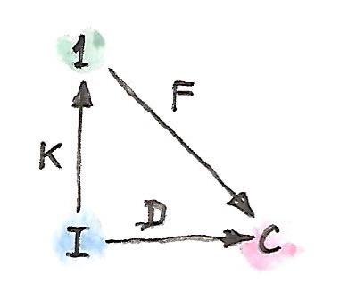
新しく追加するのは、単一の対象（および単一の恒等射）を含むような圏である。からこの圏への関手は1つしかない（と呼ぶ）。その関手は、すべての対象を内の唯一の対象に写し、すべての射をその対象に対する恒等射に写す。からへのどの関手も、ここでの錐の潜在的な頂点を指す。

錐はからへの自然変換となる。はもとのと全く同じことを行うことに留意する。次の図式はこの変換を示している。
さて、ここで、このような関手のうち「最も優れた」関手を選択するような普遍性を定義できる。このはを内のの極限である対象に写し、からへの自然変換がそれに対応する射影を提供することになる。この普遍関手はに沿ったの右カン拡張 (right Kan extension) と呼ばれ、で表される。
普遍性を定式化しよう。錐がもう1つあるとする――別の関手と、からへの自然変換から構成された錐だ。

カン拡張が存在するなら、からそれへの一意な自然変換が必ず存在し、はを通じて次のように分解される。 ここで、は2つの自然変換の水平合成である（片方はにおける恒等自然変換である）。この変換はその後と垂直合成される。
成分でみると、内の対象に作用するとき、次が得られる。 この例において、の成分はの単一の対象に対応する1つ［訳注：］しかない。そして、それは確かに、が定義する錐の頂点からが定義する普遍錐の頂点へ向かう一意な射となっている。その可換条件はまさに極限の定義で求められているものとなっている。
ただし、ここで重要なのは、自明な圏を任意の圏に自由に置き換えたとしても、右カン拡張の定義は有効なままだということだ。
27.1 右カン拡張
関手に沿った関手の右カン拡張は、以下に述べるような自然変換を伴う関手である（と書く）。その自然変換 では、他のどの関手と自然変換 についても、一意な自然変換 が存在し、を のように分解する。 これはかなり長ったらしいが、図式ならすっきりと描ける。

この図式の興味深い見方のひとつは、ある意味で、カン拡張が「関手の積」の逆のように作用していることだ。に対してという表記を使う著者さえいる。実際、その表記なら、右カン拡張の余単位とも呼ばれるの定義は単なる［訳注：積の］取り消しのように見える。 カン拡張には別の解釈もある。関手が圏をの中に埋め込む場合について考える。最も単純なケースでは、は単にの部分圏になる。をに写す関手があるとする。を全体で定義された関手に拡張できるだろうか？ 理想的には、そのような拡張によって合成がと同型となる。言い換えると、はの域をに拡張することになる。しかし、本格的な同型は通常求めすぎで、半分で十分だ。つまり、からへの片道の自然変換だけでよい。（逆方向は左カン拡張に対応する。）

当然、この埋め込みの図は、関手が対象の単射ではなかったり、あるいはhom集合について忠実でなかったりする場合には当てはまらない。それこそ、極限の例［訳注：であった］のように。そのような場合、カン拡張は失われた情報を推定するために最善を尽くす。
27.2 随伴としてのカン拡張
さて、右カン拡張が任意の（および固定された）に対して存在するとしよう。この場合、（をダッシュで置き換えた）は関手圏から関手圏への関手となる。実はこの関手は前合成関手に対する右随伴になっている。この前合成関手は内の関手を内の関手に写す。この随伴は次のとおりだ。 これは、［訳注：右Kan拡張の定義において］と呼んでいたどの自然変換も、と呼んでいた一意な自然変換に対応しているという事実を単に言い換えたものだ。

さらに、圏をと同じになるように選んだ場合は、恒等関手をに代入できる。すると、次の恒等式が得られる。 これで、をと同じになるように選べる。その場合、右辺は恒等自然変換を含み、その恒等自然変換に対応するものとして左辺から次の自然変換が得られる。 これは随伴の余単位によく似ている。 実際、関手に沿った恒等関手の右カン拡張を使っての左随伴を計算できる。そのためには、もう1つの条件が必要だ。すなわち、右カン拡張が関手によって保存されなければならない。このカン拡張の保存が意味するのは、に当該関手を前合成したもののカン拡張を計算すると、もとのカン拡張をに前合成したのと同じ結果が得られるということだ。ここでは、この条件は次のように単純化できる。 による除算で表記すると、前述の随伴は次のように記述できる。 これは随伴がある種の逆を表しているという直観を裏付ける。また、保存の条件は次のようになる。 ある関手自身に沿った右カン拡張は余稠密モナド (codensity monad) と呼ばれる。
この随伴の式は重要な結果だ。これからすぐ見るように、エンド（コエンド）を使ってカン拡張を計算でき、そこから右（左）随伴を見つける実用的な手段が得られるからだ。
27.3 左カン拡張
左カン拡張を与えるような双対構成が存在する。直観を得るために、余極限の定義から始めて、単元圏を使うようにそれを再構築するとしよう。余錐を作るには、関手を使って底面を形成し、関手を使って頂点を選択する。

余錐の側面、つまり入射たちはどれも、からへの自然変換の成分になっている。

余極限は普遍余錐だ。したがって、他のすべての関手と自然変換

について、からへの一意な自然変換

が存在する。ただし、 これは次の図式で表される。
単元圏をに置き換えると、この定義は左カン拡張の定義へと自然に一般化される。左カン拡張はと表記される。

自然変換 は左カン拡張の単位と呼ばれる。
先ほどと同様に、自然変換の間の1対1の対応関係 を随伴を用いて書き直せる。 言い換えると、の前合成［訳注：をするような関手］に対して、左カン拡張は左随伴となり、右カン拡張は右随伴となる。
恒等関手の右カン拡張がの左随伴を計算するのに使えたように、恒等関手の左カン拡張はの右随伴となる（は随伴の単位となる）。 2つの結果を組み合わせると、次が得られる。
27.4 エンドとしてのカン拡張
カン拡張の真の力は、エンド（およびコエンド）を使って計算できるという事実に由来する。簡単のため行き先の圏がである場合に注目するが、どの公式も任意の圏に拡張できる。
カン拡張を使えば関手の作用をもとの域の外側に拡張できる、という理解を再検討してみよう。がをの中に埋め込むとする。関手はをに写す。の像内の任意の対象、すなわちであるような対象について、拡張された関手はをに写すと言えるだろう。問題は、の像の外側にある内の対象をどうするかだ。着想は、そのような対象はどれもたくさんの射を通じての像内のすべての対象と潜在的につながっている、ということにある。関手はそれらの射を保存しなければならない。対象からの像への射の全体は次のhom関手によって特徴づけられる。

このhom関手は2つの関手の合成であることに注意してほしい。 右カン拡張は関手合成の右随伴だ。 を上記のhom関手に置き換えるとどうなるか見てみよう。 そして、合成をまとめると次のようになる。 右辺は米田の補題を使って簡潔にできる。 ここで、［訳注：左辺の］自然変換の集合をエンドで書き直すと、右カン拡張に対する非常に便利な公式が得られる。 左カン拡張に対しても、コエンドによって同様の公式が得られる。 確認のため、これが実際に関手合成に対する左随伴であること を証明しよう。前述の式で左辺を置換してみよう。 これは自然変換の集合なので、エンドに書き直せる。 Hom関手の連続性を使って、コエンドをエンドに置き換えられる。 積と冪についての随伴が使える。 この冪は対応するhom集合と同型である。 ここで、フビニの定理と呼ばれる、この2つのエンドが交換可能であるという定理を利用できる。 内側のエンドは2つの関手間の自然変換の集合を表しているので、米田の補題を使える。 これは、まさに証明しようとしていた随伴の右辺をなす自然変換の集合となっている。 このようなエンドとコエンドと米田の補題を使った計算は、エンドの「微積分」としてはごく典型的なものだ。
27.5 Haskellにおけるカン拡張
カン拡張のエンド・コエンドの式はHaskellに簡単に変換できる。右カン拡張から始めよう。 エンドを全称量化子に、hom集合を関数型に置き換える。
newtype Ran k d a = Ran (forall i. (a -> k i) -> d i)
この定義を見ると、Ranには、［訳注：(a -> k i)
型の］関数を適用できる型aの値と、2つの関手kとdの間の自然変換が含まれている必要があることは明らかだ。たとえば、kが木関手162、dがリスト関手だとして、Ran Tree [] Stringが与えられたとする。もし、これに関数
f :: String -> Tree Int
を渡したならIntのリストが返ってくる。右カン拡張はこの関数を使って木を生成し、再パッケージしてリストにする。たとえば、文字列から構文解析木を生成するパーサーを渡したときに、その木の深さ優先探索順に対応するリストが得られるかもしれない。
右カン拡張は、関手dを恒等関手に置き換えれば、任意の関手の左随伴を計算するために使える。これにより、関手kの左随伴であって次の型の多相関数の集合で表されるようなものが得られる。
forall i. (a -> k i) -> i
kがモノイドの圏からの忘却関手だとする。そうすると、全称量化子はすべてのモノイドに及ぶ。もちろんHaskellではモノイド則を表現できないが、以下は結果の自由関手の適切な近似になっている（忘却関手kは対象については恒等写像になっている）。
type Lst a = forall i. Monoid i => (a -> i) -> i期待どおり、自由モノイド、すなわちHaskellのリストが得られる。
toLst :: [a] -> Lst a
toLst as = \f -> foldMap f as
fromLst :: Lst a -> [a]
fromLst f = f (\a -> [a])一方、この左カン拡張はコエンドだ。 なので、存在量化子へと翻訳できる。記号的に表すとこうなる。
Lan k d a = exists i. (k i -> a, d i)これはHaskellではGADTを使うか、次のように全称量化されたデータ構成子を使って表現できる。
data Lan k d a = forall i. Lan (k i -> a) (d i)
このデータ構造を解釈すると、Lanは不特定のiたちを含むコンテナーを取ってaを1つ生成する関数を含むものだと言える。また、それらのiたちを含む別のコンテナーも持つ。iが何かは分からないので、このデータ構造で唯一できるのは、iのコンテナーを取得し、自然変換を使って関手kで定義されたコンテナーに再パックし、関数を呼んでaを得ることだけだ。たとえば、dが木でkがリストの場合は、木を直列化して得られるリストで関数を呼べばaが得られる。
左カン拡張は関手の右随伴を計算するために使える。積関手の右随伴が冪なのは知っているので、カン拡張を使って実装してみよう。
type Exp a b = Lan ((,) a) Identity bこれが実際に関数型と同型であることは、次の関数のペアが証拠になっている。
toExp :: (a -> b) -> Exp a b
toExp f = Lan (f . fst) (Identity ())
fromExp :: Exp a b -> (a -> b)
fromExp (Lan f (Identity x)) = \a -> f (a, x)
すでに一般的な場合について説明したとおり、［訳注：fromExpにおいて］次のような段階を経たことに注意してほしい。
- まず、
xのコンテナー（ここでは単なる自明な恒等コンテナー）と関数fを取り出した。 - 次に、そのコンテナーを、恒等関手と関手のペアとの間の自然変換を使って再パックした。
- 最後に、関数
fを呼んだ。
27.6 自由関手
カン拡張の興味深い応用として自由関手 (free functor) の構成がある。これは以下のような実際的な問題の解となる。型構成子、つまり対象の写像があるとする。その型構成子に基づいて関手を定義可能だろうか？ 言い換えると、その型構成子を完全な自己関手へと拡張するような射の写像を定義できるだろうか？
鍵となる観察は、型構成子は離散圏を域とする関手として表現できることだ。離散圏は恒等射以外の射を持たない。任意の圏について、単に恒等射以外の射を捨て去ることで、常に離散圏を構成できる。したがって、からへの関手は、対象の単純な写像、すなわちHaskellで型構成子と呼ばれるものになる。また、を内へ注入するような正統な関手も存在する。それは対象についての（および恒等射についても）恒等写像になっている。のに沿った左カン拡張は、存在するなら、からへの関手である。 これはに基づく自由関手と呼ばれる。
Haskellでは、次のように書ける。
data FreeF f a = forall i. FMap (i -> a) (f i)
実際、すべての型構成子fについてFreeF fは関手となる。
instance Functor (FreeF f) where
fmap g (FMap h fi) = FMap (g . h) fiご覧のとおり、自由関手は、関数と引数の両方を記録することで関数の持ち上げを偽装する。それは、関数合成を記録することによって、持ち上げられた関数を累積する。関手則は自動的に満たされる。この構成は論文Freer Monads, More Extensible Effects163164で使われたものだ。
別の方法として、右カン拡張も同じ目的に使える。
newtype FreeF f a = FreeF (forall i. (a -> i) -> f i)これが実際に関手であることは簡単に確認できる。
instance Functor (FreeF f) where
fmap g (FreeF r) = FreeF (\bi -> r (bi . g))28 豊穣圏
圏が小さいとは、対象たちが集合をなすことだ。しかし、集合より大きいものの存在も知られている。有名な話として、すべての集合の集合は、標準的な集合論（ツェルメロ＝フレンケル集合論を指し、選択公理 (Axiom of Choice) を議論に含めることもある）では形成できない165。なので、すべての集合からなる圏は大きくなければならない。グロタンディーク宇宙 (Grothendieck universe) などの数学的トリックがいくつかあって、集合を超える集まりを定義するのに使える。それらのトリックによって大きい圏について語れるようになる。
圏が局所的に小さいとは、任意の2つの対象間の射たちが集合をなすことをいう。それらが集合をなさないなら、いくつかの定義は再考する必要がある。特に、射を集合から取ってくることさえできない場合、射の合成とは何を意味するのだろう？ 解決策はhom集合たち（つまり内の対象たち）を他の圏の対象たちで置き換えることによってブートストラップすることだ。変わる点としては、一般には対象は要素を持たないため、もはや個々の射については語れなくなる。豊穣圏 (enriched category) のすべての性質を、hom対象全体についての行える操作によって定義する必要がある。そのためには、hom対象を提供する圏は、追加の構造を持たなければならない。すなわち、モノイダル圏でなければならない。このモノイダル圏をと呼ぶことで、圏は上の豊穣圏について語れるようになる。
大きさの理由に加えて、hom集合をただの集合以上の構造があるものへと一般化することも興味深そうだ。たとえば、従来の圏には対象間の距離という概念はない。2つの対象は射によって接続されているかいないかのどちらかだ。ある対象に接続されているすべての対象は近傍と呼ばれる。現実の人生とは違って、圏においては、友人の友人の友人は、親友と同じくらい近しい。だが、適切な豊穣圏では、対象間の距離を定義できる。
豊穣圏について経験を積むべき極めて実用的な理由はもう1つある。それは、圏に関する知識の非常に有用なオンライン情報源であるnLab166が主に豊穣圏について書かれているからだ。
28.1 なぜモノイダル圏か？
豊穣圏を構築する際には、該当するモノイダル圏をに置き換え、hom対象をhom集合に置き換えれば、通常の定義を復元できることに留意する必要がある。豊穣圏の構築を実現する一番良い方法は、通常の定義から始めて、ポイントフリーな方法で――つまり、集合の要素に名前を付けずに――再定式化しつづけることだ。
まず、合成の定義から始めよう。通常は、 からの射1つと からの射1つからなる射のペアを取り、 からの射に写す。言い換えれば、次の写像だ。 これは集合間の関数だ――片方は2つのhom集合のデカルト積だ。この式は、デカルト積をより一般的な何かに置き換えれば容易に一般化できる。圏論的な積でもよいが、さらに進んで、完全に一般的なテンソル積を使うこともできる。
次は恒等射の番だ。hom集合から個々の要素を取り出す代わりに、単元集合からの関数を使って定義できる。 ここでも単元集合は終対象に置き換えられるが、さらに進んでテンソル積の単位元にも置き換えられる。
ご覧のように、あるモノイダル圏から取った対象は、hom集合を置き換える候補として適している。
28.2 モノイダル圏
モノイダル圏については前にも述べたが、定義をもう一度述べておく価値はある。モノイダル圏は、双関手であるテンソル積を定義する。 このテンソル積は結合的なのが望ましいが、自然同型を除いた結合律さえ満たせば十分だ。この同型射は結合切替子と呼ばれる。その成分： は3つの引数すべてにおいて自然である必要がある。
モノイダル圏はまた、テンソル積の単位元として機能する特別な単位対象を、これも自然同型を除いて一意に定義する必要がある。これら2つの同型は、それぞれ左単位積子・右単位積子と呼ばれ、次の構成要素を持つ。 結合切替子と単位積子はコヒーレンス条件を満たす必要がある。
モノイダル圏が対称 (symmetric) と呼ばれる条件は、以下の成分 の自然同型を持ち、その2乗が恒等射であり かつモノイドの構造と整合していることだ。
モノイダル圏に関して興味深いのは、内部hom（関数対象）をテンソル積に対する右随伴として定義できる場合があることだ。関数対象、すなわち冪の標準的な定義は、圏論的な積［訳注：関手］に対する右随伴によるものだったのを思い出してほしい。そのような対象が任意の対象のペアについて存在する圏をデカルト閉圏と呼んだ。モノイダル圏の内部homを定義する随伴は次のとおりだ。 G. M. Kelly167にならって、内部homをと表記しよう。この随伴の余単位は自然変換であり、その成分は評価射 (evaluation morphism) と呼ばれる。 テンソル積が非対称なら、次の随伴を使って、で示される別の内部homを定義できる場合があることに注目してほしい。 両方が定義されているモノイダル圏は双閉 (biclosed) と呼ばれる。双閉ではない圏の例としては、関手合成をテンソル積とした内の自己関手の圏がある。この圏はモナドを定義するのに使った。
28.3 豊饒圏
モノイダル圏上の豊穣圏は、hom集合をhom対象で置き換えたものだ。内の対象とのすべてのペアに対し、内の対象 を関連付けよう。hom集合に使ったのと同じ表記をhom対象にも使うことにする。ただし、hom対象が射を含まないことには注意が必要だ。一方で、はhom集合と射を持つ通常の（豊穣化されていない）圏だ。したがって、集合を完全に一掃したわけではない――絨毯で覆って見えなくしただけだ。
内の個々の射については語れないため、射の合成は以下のような内の射の族に置き換わる。

同様に、恒等射は以下のような内の射の族に置き換わる。 ここで、は内のテンソル単位元だ。
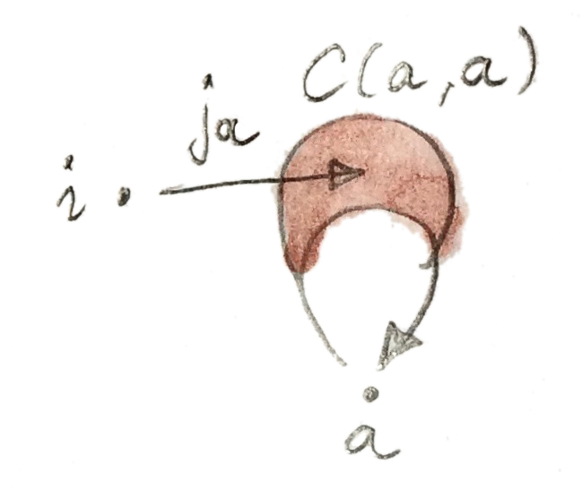
合成の結合律は内の結合切替子によって定義される。
単位律も同様に単位積子によって表現される。
28.4 前順序
前順序は細い圏として定義されていた。つまり、どのhom集合も空集合か単元集合であるような圏だ。非空集合 は、が以下であることの証明と解釈される。そのような圏は、2つの対象と（ととも呼ばれる）だけを含む非常に単純なモノイダル圏上の豊穣圏だと解釈できる。必須の恒等射に加えて、この圏にはからへの単一の射がある。これをと呼ぶことにする。ここでとの単純な算術（すなわち、積が非ゼロになるのはのみ）をモデル化するようなテンソル積を考えると、単純なモノイドの構造をその中に確立できる。この圏の恒等対象はだ。これは厳密なモノイダル圏である。つまり、結合切替子と単位積子は恒等射だ。
前順序のhom集合は空集合か単元集合なので、このちっぽけな圏におけるhom対象に簡単に置き換えられる。豊穣化された前順序は、対象との任意のペアについてのhom対象 を持つ。この対象は、が以下ならで、そうでなければだ。
合成を見てみよう。任意の2つの対象のテンソル積は通常はで、両方がのときだけとなる。テンソル積がの場合、合成射には2つの候補がある。またはのいずれかだ168。しかし、の場合、候補はだけだ。これを再翻訳して関係に戻すと、との場合はとなり、必要としていた推移律そのものになる。
恒等射についてはどうだろう？ それはから への射だ。からの射は1つだけで、恒等射なので、 はである必要がある。これはであることを意味する。すなわち、前順序の反射律だ。したがって、前順序を豊饒圏として実装すると、推移律と反射律の両方が自動的に強制される。
28.5 距離空間
ウィリアム・ローヴェア169 (William Lawvere) による興味深い例がある。ローヴェアは豊穣圏を使って距離空間 (metric space) を定義できることに気付いた。距離空間は任意の2対象間の距離を定義する。この距離は非負実数だ。取り得る値に無限大を含めると便利だ。距離が無限大の場合、始点となる対象から終点となる対象へ到達する方法はない。
距離には、満たさなければならない自明な性質がいくつかある。その1つは、ある対象からそれ自身への距離は0でなければならないことである170。もう1つは三角不等式で、直線距離は中継地点同士の距離の合計を超えないことである。 距離が対称であることは要求しない171。これは、最初は奇妙に思えるかもしれないが、ローヴェアが説明したように、ある方向へは坂を上り、逆方向へは坂を下るのを想像すればよい。いずれにしても、対称性は追加の制約として後から課してもよい。
さて、どうすれば距離空間を圏論の言葉で語れるだろうか？ それには、hom対象が距離であるような圏を構築する必要がある。注意してほしいのは、距離は射ではなくhom対象だということだ。一体どうすればhom対象が数になるだろう？ それらの数が対象であるようなモノイダル圏さえ構築できればよい。非負実数たち（に無限大を追加したもの）は全順序をなすので、細い圏として扱える。このような2つの数との間の射は、の場合だけ存在する（注：これは前順序の定義での伝統的な向きとは逆だ）。モノイドの構造は加算で与えられ、0が単位対象として機能する。言い換えると、2つの数値のテンソル積はそれらの合計だ。
距離空間は、このようなモノイダル圏上の豊穣圏だ。対象からへのhom対象 は、非負の（無限大かもしれない）数であり、からへの距離と呼ばれる。このような圏で恒等射と合成から何が分かるか見てみよう。
我々の定義から、0という数であるテンソル単位元からhom対象 への射は次の関係になる。 は非負の数であるため、この条件はからへの距離が常に0であることを示す。良し！
では合成について語ろう。隣接する2つのhom対象のテンソル積 から始める。テンソル積は、2つの距離の合計として定義された。合成はこの積から への内の射だ。内の射は「以上」関係として定義されている。言い換えると、からへの距離とからへの距離の合計は、からへの距離以上になる。もっとも、これは標準的な三角不等式にすぎない。良し！
距離空間を豊饒圏の言葉で再構成することにより、三角不等式と自己距離が0であることが「無料で」得られる。
28.6 豊穣関手
関手の定義には射の写像が含まれる。豊穣化された設定では、個々の射という概念がないため、hom対象を一括して扱う必要がある。hom対象はモノイダル圏内の対象であり、それらの間には自由に使える射がある。したがって、同一のモノイダル圏上の複数の豊穣圏について、それらの間に豊穣関手を定義することは理にかなっている。そうすれば、内の射を使って2つの豊穣圏の間でhom対象を写せる。
2つの圏との間の豊穣関手 (enriched functor) は、対象を対象に写すだけでなく、内の対象のすべてのペアに対して内の射を割り当てる。 関手は構造を保持する写像だ。通常の関手では、それは合成と恒等射を保存することを意味した。豊穣化された設定においては、合成の保存とは次の図式が可換であることを意味する。
恒等射の保存は、恒等射を「選択」するような内の射の保存に置き換えられる。
28.7 自己豊穣化
対称モノイダル閉圏は、hom集合を内部hom（前述の定義を参照）に置き換えることによって自己豊穣化できる。そのためには、内部homについての合成律を定義する必要がある。言い換えると、次のシグネチャーを持つ射を実装する必要がある。 これはプログラミングでの他のタスクと大差ない。ただし、圏論では通常はポイントフリー実装を使う。まず、これを要素とするような集合を指定する。ここでは、次のhom集合の元だ。 このhom集合は次と同型だ。 ここで、内部homであるの定義で出てきた随伴を使った。この新しい集合に射を構築できるなら、随伴はもとの集合の射を指し示してくれる。そして、その射は合成として使える。この射は、自由に使えるいくつかの射を合成することによって構築される。まず、結合切替子を使って左側の式の結合を変えられる。 続けて、随伴の余単位を使える。 もう一度余単位を使うとが得られる。以上より射： が構築できた。これは次のhom集合の要素だ。 その後、随伴によって、目指していた合成律が得られる。
同様に、恒等射 は次のhom集合の元だ。 これは、随伴を通じて、次と同型だ。 このhom集合は左単位積子を含むことが分かっている。は随伴の下の像として定義できる。
自己豊穣化の実際的な例としては、プログラミング言語における型の原型として機能する圏が挙げられる。以前、それがデカルト積についてのモノイダル閉圏であることを見た。では、任意の2集合間のhom集合はそれ自体が集合である。つまり、内の対象である。それが冪対象と同型であることは分かっているので、外部homと内部homは等価となる。さらに、自己豊穣化を通じて、冪対象をhom対象として使えて合成を冪対象のデカルト積によって表現できることも分かった。
28.8 2-圏との関係
-圏については、（小さい）圏の圏であるの文脈において説明した。圏の間の射は関手だが、追加の構造がある。関手間の自然変換だ。-圏では、対象は-セル、射は-セル、射間の射は-セルと呼ばれることが多い。では、-セルは圏、-セルは関手、-セルは自然変換だ。
しかし、2つの圏の間の関手も圏をなすことに注意してほしい。したがって、に実際にあるのは、hom集合というよりhom圏だ。が上の豊穣圏として扱えるのと同様に、は上の豊穣圏として扱えることが知られている。さらに一般的に、すべての圏が上の豊穣圏として扱えるのと同様に、すべての-圏は上の豊穣圏と見なせる。
29 トポイ
プログラミングから離れてハードコアな数学に飛び込んでしまったかもしれないのは分かっている。しかし、プログラミングにおける次の大きな革命が何をもたらすのか、理解のためにどんな数学が必要となるのかは、誰にも分からない。すでにいくつか非常に興味深いアイデアがある。連続時間172での関数型リアクティブプログラミング、Haskellの型システムの依存型による拡張、ホモトピー型理論のプログラミングにおける探究などだ。
ここまでは、値の集合を使って気楽に型を区別してきた。これは厳密には正しくない。なぜなら、このようなアプローチはある事実を考慮していないからだ。それは、プログラミングでは値を計算し、そして計算は時間のかかるプロセスであり、極端な場合には停止しない可能性がある、という事実だ。すべてのチューリング完全な言語は発散計算 (divergent computation) を含む。
また、集合論には、計算機科学の基礎として、そして数学自体の基礎としても、最適とは言い難い根本的な理由がある。良い比喩としては、集合論は特定のアーキテクチャに結び付けられたアセンブリー言語だと言える。別のアーキテクチャで計算を実行したいなら、より一般的なツールを使う必要がある。
可能性の1つは、集合の代わりに空間 (space) を使うことだ。空間は構造がより豊かで、集合を使わずに定義できる。通常、空間に関連付けられるものの1つは位相 (topology) で、連続性などを定義するために必要だ。位相への従来のアプローチは、ご想像のとおり、集合論によるものだ。特に、部分集合は位相の中心的な概念だ。驚くまでもなく、圏論の研究者たちはこの概念を以外の圏に一般化した。集合論に代わるものとしてふさわしい性質を持つ圏の型はトポス（topos, 複数形：トポイtopoi）と呼ばれ、部分集合を一般化した概念などを提供する。
29.1 部分対象分類子
要素ではなく関数を使って部分集合の概念を表現することから始めよう。からへの任意の関数は、の部分集合――の下にあるの像――を定義する。しかし、同一の部分集合を定義する関数はたくさんある。もっと具体的にする必要がある。まず初めに、単射関数 (injective function) ――複数の要素を1つに潰さない関数に焦点を当てよう。単射関数はある集合を別の集合に「注入」する。有限集合における単射関数は、ある集合の要素を別の集合の要素に接続する平行な射として視覚化できる。当然、1番目の集合を2番目の集合より大きくはできない。そうでないと射は必然的に収束する。まだ曖昧さは残っている。別の集合と、その集合からへの別の単射関数があって、同じ部分集合が選ばれる可能性がある。しかし、そのような集合がと同型でなければならないことは簡単に納得できる。この事実を利用して、部分集合を、余域の同型によって関連付けられた単射関数の族として定義できる。より正確には、2つの単射関数 が等価になるのは、同型射 が存在する場合だ。ただし、 このような等価な単射の族は、の部分集合を定義する。
この定義は、単射関数をモノ射 (monomorphism) に置き換えることで任意の圏に持ち上げられる。からへのモノ射は普遍性によって定義されることを思い出してほしい。任意の対象および任意の射のペア のうち を満たすものについてはである必要がある。

集合においてこの定義をより理解しやすくするには、関数がモノ射でないことが何を意味するかを考えるとよい。その場合はの2つの異なる要素がの1つの要素に写されるだろう。そして、それら2つの要素についてのみ違いがある2つの関数とを見つけられる。に後合成すると、その違いは見えなくなる。
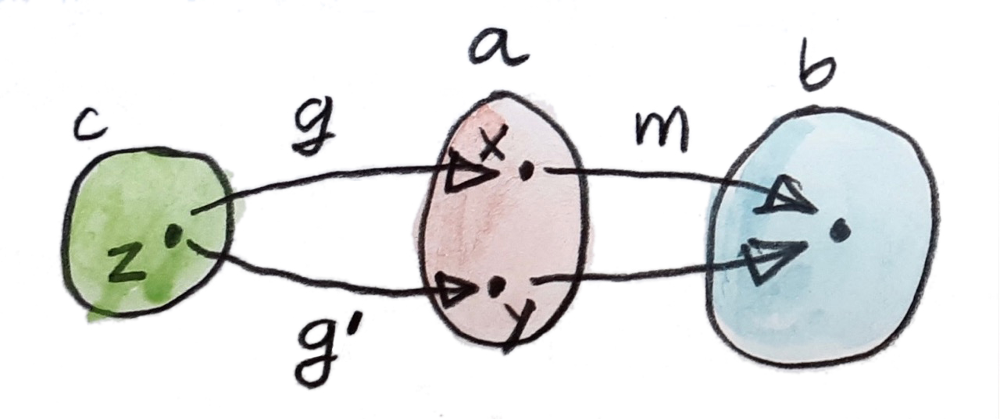
部分集合を定義する別の方法もある。特性関数 (characteristic function) と呼ばれる単一の関数を使う方法だ。これは、集合から二元集合への関数だ。二元集合の片方の要素には “true” が、もう片方には “false” が指定されている。この関数は、の要素のうち部分集合の元である要素に “true” を割り当て、そうでない要素に “false” を割り当てる。
の要素を “true” に指定することの意味を明確にする必要が残る。ここで標準的なトリックが使える。すなわち、単元集合からへの関数を使えばよい。この関数をと呼ぼう。
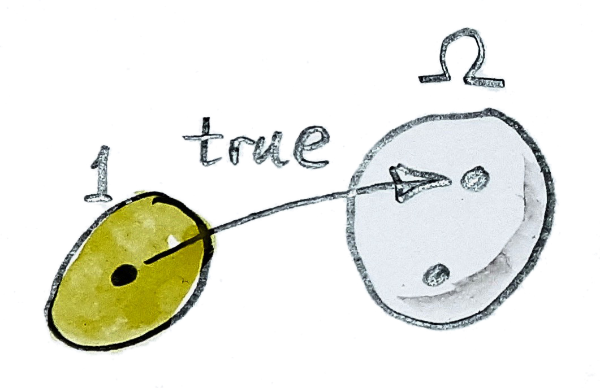
これらの定義の組み合わせ方によっては、部分対象 (subobject) が何であるかだけでなく、特別な対象についても要素に触れずに定義できる。ここでのアイデアは、射が「総称」部分対象を表すようにしたい、というものだ。では、これは2要素の集合から1要素の部分集合を選ぶ。これは最大限に総称的だ。ここで選ばれたものがれっきとした部分集合なのは明らかだ。なぜなら、この部分集合にはない要素がにはもう1つあるからだ。
より一般的な条件では、を終対象から分類対象 (classifying object) へのモノ射として定義する。ただし、分類対象の定義が必要になる。つまり、この対象を特性関数に結びつける普遍性が必要だ。では、特性関数に沿ったの引き戻しが、部分集合とそれをに埋め込む単射関数の両方を定義することが知られている。その引き戻し図式を以下に示す。

この図式を分析してみよう。引き戻しの式は次のとおりだ。 関数はのすべての要素を “true” に写す。したがって、はのすべての要素を、の要素のうちが “true” であるものに写す必要がある。定義より、これらは特性関数によって指定される部分集合の要素だ。つまり、の像はまさに求めていた部分集合だ。引き戻しの普遍性によっては単射だと保証される。
この引き戻し図式は以外の圏の分類対象を定義するのに使える。そのような圏には終対象が必要で、それによってモノ射を定義できる。また、引き戻しも必要だ――実際の要件は、すべての有限の極限を持つことだ（引き戻しは有限の極限の一例だ）。これらの仮定の下で、分類対象を、すべてのモノ射について引き戻し図式を完成させる一意な射が存在する、という特性によって定義する。
この特性を分析しよう。引き戻しを構築するとき、3つの対象、、と、2つの射、が与えられる。引き戻しの存在は、図式を可換にするような2つの射と（後者は終対象の定義によって一意に決定される）を伴った最適な対象を見つけられることを意味する。
ここでは連立微分方程式を解いていることになる。つまり、との両方を変化させることでとについて解いている。与えられたおよびについて、モノ射がある場合とない場合がある。だが、もしあるなら、何らかのの引き戻しにしたい。さらに、このがによって一意に決定されるようにしたい。
モノ射と特性関数の間に1対1の対応関係があるとは言えない。なぜなら、引き戻しは同型を除いて一意なだけだからだ。しかし、部分集合を等価な単射の族として以前定義したのを思い出してほしい。これを一般化するには、の部分対象を、への等価なモノ射の族として定義すればよい。このモノ射の族は、先ほどの図式における等価な引き戻しの族と1対1で対応している。
したがって、の部分対象の集合 をモノ射の族として定義でき、それがからへの射の集合と同型だと分かる。 偶然にも、これは2つの関手の自然同型だ。言い換えれば、 は表現可能（反変）関手であり、その表現は対象だ。
29.2 トポス
トポスは次のような圏だ。
- デカルト閉である。つまり、積・終対象・（積の右随伴として定義される）冪のすべてを持つ。
- すべての有限図式について極限を持つ。
- 部分対象分類子がある。
これらの特性によって、トポスはほとんどの用途での代わりになる。さらに、定義から導かれる追加の特性もある。たとえば、トポスは始対象も含めてすべての有限の余極限を持つ。
部分対象分類子を終対象2つの余積（和）として――におけるのと同様に――定義するのは魅力的だが、もっと一般化したい。これが当てはまるトポイはブーリアンと呼ばれる。
29.3 トポイと論理
集合論では、特性関数は、集合の要素の特性――述語 (predicate) を定義するものと解釈されうる。述語は、一部の要素に対しては真となり、他の要素に対しては偽となる。述語は自然数の集合から偶数の部分集合を選択する。トポスでは、述語の概念を対象からへの射に一般化できる。が真偽対象 (truth object) と呼ばれることがあるのはこのためだ。
述語は論理の構成要素だ。トポスには、論理を研究するのに必要な全装備が揃っている。積は連言（conjunction, 論理積）に対応し、余積は選言（disjunction, 論理和）に対応し、冪は含意 (implication) に対応する。排中律（または、等価なものとして、二重否定除去）を除く論理学の標準的な公理すべてがトポスに含まれている。これが、トポスの論理が構成的論理 (constructive logic) あるいは直観主義論理 (intuitionistic logic) に対応する理由だ。
直観主義論理は計算機科学から予想外に支持され、着実に定着していっている。排中律という古典的な概念は、絶対的な真実があるという信念に基づいている。つまり、すべての記述は真か偽のいずれかであり、古代ローマ人が言ったように、tertium non datur（第3の道はない）ということだ。しかし、何かの真偽を知るための方法は、それを証明または反証できるかどうかだけだ。証明とはプロセスであり、計算だ――そして、知ってのとおり、計算には時間とリソースがかかる。場合によっては、停止しないこともある。有限の時間で証明できない命題を真だと主張するのは無意味だ。トポスにはより繊細な真偽対象があるので、より一般的な枠組みを提供して興味深い論理をモデル化できる。
29.4 課題
- 特性関数に沿ったの引き戻しである関数は単射でなければならないことを示せ。
30 ローヴェア・セオリー
最近では、モナドに言及せずには関数プログラミングについて語れない。しかし、並行宇宙においては、エウジニオ・モッジがモナドではなくローヴェアのセオリー (Lawvere theory) に着目した可能性もあっただろう。そのような宇宙を探検しよう。
30.1 普遍代数
代数を様々な抽象レベルで記述する方法はたくさんある。モノイド・群・環などを記述するための汎用言語を見つけたい。最も単純なレベルでは、これらのすべての構造によって、集合の要素に対する演算と、それらの演算によって満たされなければならないいくつかの規則が定義される。たとえば、モノイドは結合律を満たす二項演算によって定義できる。単位元と単位律もある。しかし、少し想像力を働かせれば、単位元は零項演算――引数を取らず集合の特別な要素を返す操作――に変えられる。群について述べたければ、受け取った要素の逆を返す単項演算子を追加する。それに対応する左逆元律と右逆元律がある。環では2つの二項演算子とさらにいくつかの規則が定義される。以下同様だ。
大枠としては、代数はさまざまな値のについての項演算の集合と、恒等式の集合によって定義される。これらの恒等式はすべて全称量化されている。たとえば、結合律の式はすべての可能な3要素の組み合わせについて満たされる必要がある、などだ。
ちなみに、0（加算での単位元）が乗算での逆を持たないという単純な理由から、体 (field) は考慮から除外される。体の逆元律は全称量化できない。
この普遍代数の定義は、演算（関数）を射に置き換えると、以外の圏にも拡張できる。集合の代わりに、（総称対象と呼ばれる）対象を選ぶ。単項演算はの自己射にすぎない。しかし、それ以外のアリティ（arity, 演算の引数の数）についてはどうだろう？ 二項演算（アリティ2）は、積からへ戻る射として定義できる。一般の項演算は、の乗からへの射だ。 零項演算は、終対象（の0乗）からの射だ。したがって、あらゆる代数を定義するために必要なのはある圏だけで、その圏の対象は1つの特別な対象の冪乗だ。特定の代数は、この圏のhom集合として表されている。これがローヴェア・セオリーの概略だ。
ローヴェア・セオリーの導出は多くのステップを経るため、道順を示しておく。
- 有限集合の圏。
- そのスケルトン。
- その反対圏。
- ローヴェア・セオリー: 圏内のある対象。
- ローヴェア圏のモデル: 圏 内のある対象。

30.2 ローヴェア・セオリー
複数あるローヴェア・セオリーはすべて共通のバックボーンを共有している。ローヴェア・セオリーにおけるすべての対象は、ただ1つの対象から積を使って生成される（実際に、ただの冪乗だ）。しかし、一般の圏では、これらの積をどのように定義するのだろうか？ より単純な圏からの写像を使って積を定義できることが知られている。実際には、より単純なこの圏は積ではなく余積を定義することもあり、その場合は反変関手を使ってそれらを行き先の圏に埋め込む。反変関手は、余積を積に変換し、入射を射影に変換する。
ローヴェア圏のバックボーンとして自然な選択肢は、有限集合の圏だ。これは空集合、単元集合、二元集合などを含む。この圏の対象はすべて、余積を使って単元集合から生成できる（空集合は零項余積の特殊なケースとして扱う）。たとえば、二元集合は2つの単元集合の和だ。Haskellでも次のように表現される。
type Two = Either () ()しかし、空集合は1つしかないと考えるのが自然だとしても、単元集合は異なるものが多数あり得る。典型的な例として、集合と集合とはどれも同型であるにもかかわらず、それぞれ異なる。集合の圏の余積は結合律を満たさない。この状況を解決するには、すべての同型集合を同一視する圏を構成すればよい。そのような圏はスケルトン (skeleton) と呼ばれる。言い換えれば、すべてのローヴェア・セオリーのバックボーンはのスケルトンだ。この圏の対象は、の要素数に対応した（0を含む）自然数と同一視できる。余積は加算の役割を果たす。内の射は有限集合間の関数に対応する。例として、からへの（空集合を始対象とする）一意な射があり、からへの射は（を除いて）なく、からへの射（単射）はあり、からへの射は1つある、などが挙げられる。ここで、は内のある対象を表し、同型によって同一視された内のすべての要素集合に対応する。
圏を使うと、ローヴェア・セオリーを、次の特別な関手を伴う圏として形式的に定義できる。 この関手は対象の全単射である必要があり、有限積を保存する必要がある（内の積と内の余積は同じだ）。 この関手は対象における恒等関係と見なされることがある。内と内とで対象が同じであることを表すからだ。そこで、これらに同じ名前を使うことにし、自然数で表そう。ただし、内の対象は集合と同じではないことに注意してほしい（それらは同型集合のクラスだ）。
一般に、内のhom集合は、内のhom集合よりも豊穣だ。これらは内の関数に対応する射（基本的な積操作 (basic product operation) とも呼ばれる）以外の射も含むことがある。ローヴェア・セオリーの等式規則はそれらの射として表されている。
鍵となる観察は、内の単元集合が内で同じくと呼ばれる対象に写され、内の他のすべての対象が自動的にこの対象の冪乗になることだ。たとえば、内の二元集合は余積であるため、内の積（または）に写される必要がある。この意味で、圏はの対数のように振る舞う。
内の射には、関手によってから転送されたものもある。それらはで構造としての役割を果たす。特に、余積の入射は積の射影になる。直観として有用なのは、射影 を、個の変数のうち第番目以外のすべてを無視するような関数のプロトタイプとして想像することだ。逆に、内の定常射は内では対角射になる。これらは変数の複製に相当する。
内の射のうちで興味深いのは、射影以外の項演算を定義するものだ。それらの射によって、あるローヴェア・セオリーと別のものとが区別される。それらは乗算・加算・単位元の選択などで、代数を定義する。しかし、を完全な圏にするためには、複合操作（あるいは、等価なものとして、）も必要だ。圏の構造が単純なため、これらは型のより単純な射の積だと分かる。これは、積を返す関数は関数の積である（あるいは、前に見たように、hom関手は連続である）という言明を一般化したものだ。
ローヴェア・セオリーは圏をなす。この圏の射は、有限積を保存し関手と可換な関手だ。そのような2つのセオリー と が与えられたとき、それらの間の射は以下を満たす関手となる。 ローヴェア・セオリーの間の射は、あるセオリーを別のセオリーの中で解釈するという概念を要約したものだ。たとえば、群の乗算は逆を無視すればモノイドの乗算として解釈できる。
ローヴェア圏の最も単純で自明な例は、自体だ（これはについての恒等関手の選択に対応する）。演算や規則を持たないこのローヴェア・セオリーは、たまたまの始対象でもある。
この時点でローヴェア・セオリーの自明でない例を示せば非常に有益だろうが、モデルとは何かを先に理解しておかなければ、説明が困難だ。
30.3 ローヴェア・セオリーにおけるモデル
ローヴェア・セオリーを理解するための鍵は、ある1つのセオリーは同じ構造を共有する多くの個別の代数を一般化している、と理解することだ。たとえば、モノイドのローヴェア・セオリーは、モノイドであることの本質を説明している。それはすべてのモノイドで有効である必要がある。特定のモノイドはそのようなセオリーのモデルとなる。あるモデルは、ローヴェア・セオリーから集合の圏への関手として定義される。（モデルに他の圏を使う一般化されたローヴェア・セオリーもあるが、ここではだけに集中する。） の構造は積に大きく依存するため、そのような関手は有限積を保存する必要がある。のモデルは、ローヴェア・セオリーの上の代数とも呼ばれ、次の関手によって定義される。 積の保存は同型を除いてのみ必要であることに注意してほしい。積を厳密に保存するとほとんどの興味深いセオリーが棄却されるので、これは非常に重要だ。
モデルによる積の保存は、内のの像が、集合――からの対象の像――の冪乗によって生成された一連の集合であることを意味する。この集合をと呼ぼう。(この集合はソート (sort) と呼ばれることがあり、このような代数はシングルソート (single-sorted) と呼ばれる。ローヴェア・セオリーのマルチソート代数 (multi-sorted algebra) への一般化も存在する。) 特に、からの二項演算は次の関数に写される。 あらゆる関手でそうであるように、内の複数の射が内の同じ関数に潰されることがある。
ちなみに、すべての規則は全称量化された等しさであるという事実は、すべてのローヴェア・セオリーが自明なモデルを持つことを意味する。その自明なモデルは定関手で、すべての対象を単元集合へ、すべての射をその上の恒等関数へ写す。
内でという形式を取る一般の射は、次の関数に写される。 2つの異なるモデルとがある場合、それらの間の自然変換はで添字付けされた関数の族になる。 または、等価なものとして ここで、だ。
自然性条件によって項演算の保存が保証されることに注意してほしい。 ここで、はにおける項演算だ。
モデルを定義する関数はモデルの圏 をなし、自然変換が射となる。
自明なローヴェア圏のモデルを考えてみよう。そのようなモデルは、での値によって完全に決定される。は任意の集合でよいため、が含む集合と同じ数のモデルがある。さらに、 内の射（関数との間の自然変換）はどれもにおける成分によって一意に決定される。逆に、関数はどれも2つのモデルとの間に自然変換を引き起こす。したがって、 はと同値だ。
30.4 モノイドのセオリー
ローヴェア・セオリーの最も単純で重要な例は、モノイドの構造を記述することだ。それは、すべての可能なモノイドの構造を抽出した単一のセオリーだ。つまり、そのモデルはモノイドの圏全体に及ぶ。すでに述べた普遍的構成は、射の部分集合を同一視すれば、すべてのモノイドが適切な自由モノイドから得られることを示していた。したがって、1つの自由モノイドですべてのモノイドがすでに一般化されている。しかし、自由モノイドは無数に存在する。モノイドに対するローヴェア・セオリーは、それらすべてを1つのエレガントな構成にまとめる。
すべてのモノイドは単位元を持つので、内にはからへの特別な射が必要だ。これに対応する射は内には存在しないことに注意してほしい。仮にそのような射が存在するなら、逆向きのからへの射になるので、内では単元集合から空集合への関数になるだろう。しかし、そのような関数は存在しない。
次に、射を考える。これは のメンバーで、すべての二項演算のプロトタイプを含む必要がある。 でモデルを構成するとき、これらの射はデカルト積からへの関数に写される。言い換えると、引数2つを取る関数になる。
問題は、モノイダル演算子のみを使って何種類の2引数関数を実装できるかだ。2つの引数をとと呼ぼう。両方の引数を無視してモノイダル単位元を返す関数が1つある。それから、それぞれとを返す2つの射影がある。さらに、などを返す関数が続く。実際には、このような2引数関数は、生成元とを伴う自由モノイドの要素と同じ数だけ存在する。 はモデルの1つが自由モノイドであるため、これらすべての射を含む必要があることに注意してほしい。自由モノイドでは、これらは別々の関数に対応する。他のモデルでは の複数の射が1つの関数へと潰される場合があるが、自由モノイドではそうならない。
個の生成元を使って自由モノイドを表せば、hom集合 をモノイドの圏内のhom集合 と同一視できる。一般に、 を として選ぶ。言い換えると、圏は自由モノイドの圏の逆だ。
モノイドに関するローヴェア・セオリーのモデルの圏 は、モノイドすべての圏と等価だ。
30.5 ローヴェア・セオリーとモナド
覚えていると思うが、代数のセオリーはモナドを使って――典型的にはモナドの代数で――記述できる。ローヴェア・セオリーとモナドがつながっているのは驚くべきことではない。
まず、ローヴェア・セオリーからモナドがどのように導出されるかを見てみよう。導出は忘却関手と自由関手の間の随伴を経る。忘却関手は、ある集合を各モデルに割り当てる。その集合は、 からの関手を、内の対象において評価することで得られる。
を導出するもう1つの方法は、がの始対象であるという事実を利用することだ。これは、すべてのローヴェア・セオリーについて、一意な関手があることを意味する。この関手は、モデル上に逆向きの関手を引き起こす（モデルはセオリーから集合への関手だからだ）。 ただし、すでに議論したように、のモデルの圏はと同値だ。したがって、次の忘却関手が得られる。 このように定義されたは左随伴としての自由関手を常に持つことが示せる。
このことは有限集合の場合には簡単に分かる。自由関手は自由代数を生成する。自由代数は 内の特定のモデルであり、生成元の有限集合から生成される。は表現可能関手として実装できる。 これが本当に自由であることを示すには、忘却関手への左随伴であることさえ証明すればよい。 右辺を単純化しよう。 （射の集合が冪と同型であり、ここでは単に積の反復であるという事実を使った。） 随伴は米田の補題の結果だ。 まとめると、忘却関手と自由関手によって上のモナドが定義される。したがって、すべてのローヴェア・セオリーはモナドを生成する。
モデルに対するモナドの代数の圏はモデルの圏と同値だと分かる。
モナドを使って形成された式の評価方法はモナド代数によって定義されるのを思い出しただろう。ローヴェア・セオリーは、式の生成に使えるn項演算を定義する。モデルは、それらの式を評価する手段を提供する。
しかし、モナドとローヴェア・セオリーは双方向の関係にはない。有限的モナド (finitary monad) からのみローヴェア・セオリーが導出される。有限的モナドは有限的関手に基づく。上のある有限的関手は、有限集合への作用によって完全に決定される。任意の集合への作用は、次のコエンドを使って評価できる。 コエンドは余積すなわち和の一般化なので、この式は冪級数展開の一般化になる。あるいは、関手は一般化したコンテナーだ、という直観に頼ってもよい。その場合、の有限的コンテナーは、形と内容の和として記述できる。ここで、は個の要素を格納するための形の集合だ。また、内容は要素の組であり、それ自体がの要素だ。たとえば、（関手としての）リストは有限的であり、アリティごとに1つの形を持つ。木はアリティごとにより多くの形を持つ、なども挙げられる。
まず第一に、ローヴェア・セオリーから生成されたすべてのモナドは有限的であり、コエンドとして表せる。 逆に、上の任意の有限的モナドに対してローヴェア・セオリーを構築できる。まず、についてのクライスリ圏を構築する。覚えていると思うが、クライスリ圏内でのからへの射は台となる圏内での射によって与えられる。 有限集合に限定すると、これは次のようになる。 このクライスリ圏の反対圏は、有限集合に限定されており、求めていたローヴェア・セオリーだ。典型的には、内のn項演算を記述するhom集合 はhom集合 によって与えられる。
プログラミングで遭遇するほとんどのモナドは有限的モナドであることが知られている。ただし、継続モナドという注目すべき例外は除く。また、ローヴェア・セオリーの概念は有限的演算を超えて拡張もできる。
30.6 コエンドとしてのモナド
コエンドの式について詳しく見ていこう。 まず初めに、このコエンドは、内で次のように定義されたプロ関手に引き継がれる。 このプロ関手は最初の引数について反変だ。これが射をどう持ち上げるかを考えよう。内の射は有限集合の写像だ。このような写像は、元集合1つから個の要素を（重複は許容して）選択することを表している。これは次のようにの冪乗間の写像へ持ち上げられる（方向に注意してほしい）。 この持ち上げは単に、要素の組 から個の要素を（重複を許容して）選択する。

例として、を考えよう。これは元集合から番目の要素を選択したものだ。これを持ち上げると、の要素の組を取って番目の要素を返す関数となる。
あるいは、を考えよう。これは要素すべてを1に写す定数関数だ。これを持ち上げると、の要素を1つ取って回複製する関数となる。 いま扱っているプロ関手が2番目の引数について共変であることは、自明だとすぐには言えないことに気付いたと思う。hom関手 ならについて反変なのは確かだ。しかし、いま扱っているコエンドは圏ではなく圏のものだ。このコエンドの変数は有限集合（あるいはそのスケルトン）に渡る。圏はの反対圏を含む。したがって、内の射は内の の元だ（埋め込みは関手から得られる）。
からへの関手としての について、関手性を確認しよう。関数を持ち上げたいので、 から への関数を実装するのが目標になる。関数に対応して、内にからへの射が存在する（方向に注意してほしい）。この射を に前合成すると の部分集合が得られる。
関数を持ち上げれば から に移れることに注目してほしい。この事実は後で使う。
反変関手と共変関手 の積はプロ関手だ。コエンドをプロ関手の対角要素すべての余積（非交和）として定義できることを思い出してほしい。それらの対角要素のうちいくつかは同一視できる。この同一視は余くさび条件に対応している。
ここで、コエンドはすべてのに渡る集合 の非交和として始まる。同一視はコエンドを余等化子として表現することで生成できる。ある非対角項 から始めよう。対角項を得るには、射を積の1番目か2番目の成分に適用すればよい。そして2つの結果は同一視される。
前に示したように、を持ち上げると以下の2つの変換 および が得られる。したがって、 から始めて、以下の両方に到達できる。 はを持ち上げることで得られ、また はを持ち上げることで得られる。しかし、これは の要素すべてが と同一視できるという意味ではない。 の要素すべてが から到達できるわけではないからだ。持ち上げられるのはからの射だけなのを思い出してほしい。内の非自明な項演算は射を持ち上げても構築できない。
言い換えると、同一視できるのは、基本射 (basic morphism) を適用することによって から に到達できるようなコエンド式のすべての加数 (addend) だけだ。これらはすべて と同値だ。基本射は内の射の像だ。
ローヴェア・セオリーの最も単純なケースである自体で、これがどのように機能するかを見てみよう。そのようなセオリーでは、すべての が から到達できる。なぜなら、 は恒等射だけを含む単元圏であり、 は内の基本射である単射に対応する射だけを含むからだ。したがって、余積に含まれる加数はすべて同値なので次が得られる。 これは恒等モナドだ。
30.7 副作用のローヴェア・セオリー
モナドとローヴェア・セオリーは非常に強く結びついているので、プログラミングでローヴェア・セオリーをモナドの代わりとして使えるかを自然と問いたくなる。モナドの大きな問題点は合成しにくいことだ。モナド変換子を作るための汎用のレシピはない。その面でローヴェア・セオリーは有利で、余積とテンソル積を使って合成できる。一方、有限的モナドしかローヴェア・セオリーに容易に変換できない。ここでの例外は継続モナドだ。この分野での研究が進んでいる（参考文献を参照のこと）。
ローヴェア・セオリーが副作用の記述にどう使えるか説明するため、単純な例として、例外について説明する。それらは伝統的にはMaybeモナドで実装される。
Maybeモナドは零項演算だけを伴うローヴェア・セオリーによって生成される。このセオリーのモデルは、をある集合に写し、零項演算を関数に写す関手だ。
raise :: () -> a
Maybeモナドはコエンド式を使って復元できる。零項演算を追加するとhom集合
にどんな影響があるか検討してみよう。新しく（にはない）
が作られる以外にも、
に新しい射が追加される。これらは、の型の射をと合成した結果だ。このような寄与はすべて、コエンド式での
と同一視される。それらは
をによって2種類の方法で持ち上げれば得られるからだ。
このコエンドを簡約すると あるいは、Haskellの記法では
type Maybe a = Either () aとなり、次と等価だ。
data Maybe a = Nothing | Just aこのローヴェア・セオリーは例外の送出のみをサポートしており、例外の処理はサポートしていないことに注意してほしい。
30.8 課題
- （のスケルトン）内のからへの射をすべて列挙せよ。
- モノイドのローヴェア・セオリーについてのモデルの圏が、リストモナドについてのモナド代数の圏と同値であることを示せ。
- モノイドのローヴェア・セオリーはリストモナドを生成する。その二項演算は、対応するクライスリ射を使って生成できることを示せ。
- はの部分圏であり、それをに埋め込む関手が存在する。の関手はすべてに制約できる。有限的関手がそれ自身の制限の左カン拡張であることを示せ。
30.9 参考文献
- Functorial Semantics of Algebraic Theories173, F. William Lawvere
- Notions of computation determine monads174, Gordon Plotkin and John Power
31 モナド・モノイド・圏
区切り良く圏論の本を終わらせることはできない。学ぶべきことは常にある。圏論は広大な題材だ。それと同時に、同じテーマ・コンセプト・パターンが明らかに何度も繰り返されている。すべての概念はカン拡張である、という格言があるとおり、カン拡張を使えば極限・余極限・モナド・米田の補題などを導出できる。圏自体の概念は抽象化のあらゆるレベルに現れる。モノイドとモナドの概念も同様だ。最も基本となるものはどれだろうか？ 結局のところ、それらはすべて相互に関連しており、抽象化の終わりのないサイクルで互いにつながっている。それらの相互関係を示すことが、この本を締めくくるのにふさわしいと判断した。
31.1 双圏
圏論で特に難しい側面の1つは、絶えず視点が切り替わることだ。たとえば、集合の圏を考えてみてほしい。我々は要素によって集合を定義することに慣れている。空集合には要素がない。単元集合には要素が1つある。2つの集合のデカルト積はペアの集合であり、以下同様だ。しかし、圏について述べるとき、集合の内容を忘れて、代わりにそれらの間の射（矢）に集中するように頼んだ。時々、カバーの下を覗くことが許されたのは、内の特定の普遍的構成が要素の観点で何を記述しているか知るためだった。そうして、終対象は1つの要素からなる集合であることなどが分かった。しかし、それらは健全性チェックにすぎなかった。
関手は圏の写像として定義される。写像を圏内の射と見なすのは自然だ。関手は、圏（サイズに関する問題を避けたいなら、小さい圏）の圏の射だと分かった。関手を射として扱うと、圏の内部（対象と射）に対するその作用についての情報を失うことになる。これは、集合の要素に対する関数の作用についての情報が、その関数を内の射として扱うと失われるのと同じだ。しかし、任意の2つの圏の間の関手も圏をなす。今度は、ある圏の射であったものを別の圏の対象と見なすことが求められる。関手圏では関手が対象であり、自然変換が射だ。同一のものが、ある圏では射であり、別の圏では対象であり得ることが発見された。対象を名詞とし射を動詞とする素朴な考え方は成り立たない。
2つの観点を切り替える代わりに、1つの観点に統合しようとしてもよい。そうすることで-圏の概念が得られる。この圏では、対象を-セル、射を-セル、射間の射を-セルと呼ぶ。
圏の圏は端的な例だ。圏が-セル、関手が-セル、自然変換が-セルとなる。-圏の規則が示すのは、任意の2つの-セル間の-セルが圏をなす（言い換えると、 はhom集合ではなくhom圏だ）ということだ。このことは、任意の2つの圏の間の関手は関手圏をなす、という以前の主張とよく一致している。
典型的には、任意の-セルからそれ自体に戻る-セルもhom圏 という圏をなす。だが、その圏はさらに豊かな構造を持っている。 のメンバーは、内の射とも 内の対象とも見なせる。これらは射なので互いに合成できる。しかし、それらを対象として見ると、合成は対象のペアから対象への写像になる。それは実際に、積に――正確にはテンソル積に――非常によく似ている。このテンソル積は恒等-セルという単位元を持つ。-圏では、hom圏 は自動的にモノイダル圏になり、そのテンソル積は-セルの合成として定義される。結合律と単位律は、対応する圏の規則から単に除かれる。
これが何を意味するのかを、-圏のカノニカルな例であるで見てみよう。hom圏 は上の自己関手の圏だ。その中では、自己関手の合成がテンソル積の役割を果たしている。恒等関手はこの積の単位元だ。自己関手がモノイダル圏をなすことは以前にも見た（その事実をモナドの定義で使った）ものの、これはもっと一般的な現象だと分かる。つまり、すべての-圏内の自己--セルはモノイダル圏をなす。これについては、後でモナドを一般化するときに再度説明する。
覚えていると思うが、一般のモノイダル圏では、モノイド則がきちんと満たされていることは主張しなかった。多くの場合、単位律と結合律が同型を除いて満たされていれば十分だった。-圏では、 のモノイド則は-セルの合成律から導かれる。これらの規則は厳密なので、厳密なモノイダル圏が常に得られる。しかし、これらの規則も緩和できる。たとえば、恒等-セルと別の-セルの合成は、と等しいと言わずに、同型だと言える。-セルの同型は-セルを使って定義される。言い換えると、次のような-セル と、その逆が存在する。
左恒等射と結合律についても同様にできる。このような緩和された-圏は双圏と呼ばれる（いくつか追加のコヒーレンシーの規則があるが、ここでは省略する）。
予想どおり、双圏での自己--セルは、規則が厳密でない一般化されたモノイダル圏をなす。
双圏の興味深い例としてスパンの圏が挙げられる。2つの対象との間のスパンは、対象および次の1対の射だ。

圏論的な積の定義でスパンを使ったことを覚えているだろう。ここでは、スパンを双圏での-セルと見なそう。最初のステップは、スパンの合成を定義することだ。隣接したスパンがあるとする。

それらの合成は第3のスパンになり、あるを頂点とする。最も自然な選択は、に沿ったの引き戻しだ。引き戻しとは次の2つの射を伴う対象であることを思い出してほしい。 ただし、 が、そのような対象すべてについて普遍だとする。

ここでは、集合の圏でのスパンに注目しよう。この場合、引き戻しはデカルト積からのペア の集合にすぎず、次のようになる。 同じ終点を共有する2つのスパンの間の射は頂点間の射として定義され、適切な三角形を可換にする。
要約すると、双圏では、-セルは集合、-セルはスパン、-セルはスパン間の射だ。恒等-セルは、3つの対象すべてが同じで、2つの射が恒等射である退化スパン (degenerate span) だ。
双圏の別の例もすでに見た。それはプロ関手の双圏であり、-セルは圏、-セルはプロ関手、-セルは自然変換だ。プロ関手の合成はコエンドによって与えられる。
31.2 モナド
ここまでで、自己関手の圏におけるモノイドとしてのモナドの定義にかなり精通しているはずだ。この定義を、自己関手の圏は双圏内の自己--セルの小さいhom圏のひとつにすぎない、という新たな理解に沿って再検討してみよう。自己関手の圏がモノイダル圏であることは知っており、テンソル積は自己関手の合成に由来する。モノイドは、モノイダル圏内のある対象――ここでは自己関手――が2つの射を伴ったものとして定義される。自己関手の間の射は自然変換だ。一方の射はモノイダル単位元――恒等自己関手――をに写す。 もう一方の射はテンソル積をに写す。このテンソル積は自己関手の合成によって与えられるため、次が得られる。

これらがモナドを定義する2つの操作である（Haskellではreturnおよびjoinと呼ばれる）ことと、モノイド則がモナド則に変わったことが分かる。
さて、この定義から自己関手に関する記述をすべて取り除こう。まず双圏から始めて、その中で-セルを選ぶ。すでに説明したように、hom圏 はモノイダル圏だ。したがって、 のモノイドは、-セル、、および2つの-セルを、条件 がモノイド則を満たすように選ぶことで定義できる。これをモナドと呼ぶ。

これは、-セルと-セルと-セルだけを使って、はるかに一般的にモナドを定義する。双圏に適用すると、これは通常のモナドへと簡約される。だが、他の双圏では何が起こるか見てみよう。
でモナドを構築しよう。ここでは-セルを選択する。これは集合であり、すぐ明らかになる理由から、と呼ぶことにする。次に、自己--セル（からへ戻るスパン）を選択する。その頂点にはと呼ばれる集合があり、次の2つの関数を伴う。

集合の要素を「射」と呼ぼう。さらに、の要素を「対象」と呼ぼう、と言えば、目的地の手掛かりになるだろう。2つの関数とは、域と余域を「射」に割り当てる。
スパンをモナドにするには2つの-セルとが必要だ。この場合のモノイダル単位元は、からへの自明なスパンであり、頂点はで、2つの恒等関数を伴う。-セルは2つの頂点との間の関数だ。つまり、は「射」をすべての「対象」に割り当てる。の-セルは可換条件を満たす必要がある。ここでは次のようになる。
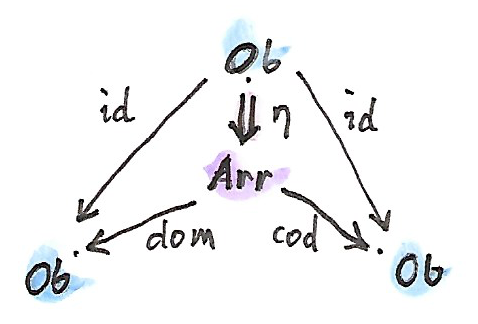
成分としては、これは次のようになる。 ここで、は内の「対象」だ。言い換えると、が割り当てるのは、すべての「対象」と、域と余域がその「対象」であるような「射」に対してだ。この特別な「射」が「恒等射」と呼ばれる。
2番目の-セルは、それ自体とスパンとの合成に作用する。合成は引き戻しとして定義されているため、その要素はからの要素のペア――「射」のペア だ。引き戻し条件は次のとおりだ。 とが「合成可能」だと言われるのは、一方の域が他方の余域だからだ。

-セルは、合成可能な矢のペア を、からの単一の矢に写す関数だ。言い換えると、は矢の合成を定義する。
モナド則が射の恒等律や結合律に対応していることは簡単に確認できる。以上で圏を定義できた（対象と射が集合をなす小さい圏であることは忘れないでほしい）。
つまり、まとめると、圏はスパンの双圏におけるモナドにすぎない。
この結果の驚くべき点は、圏がモナドやモノイドのような他の代数的構造と同じ基盤に置かれていることだ。圏であることは何も特別ではない。ただの2つの集合と4つの関数だ。実際に、対象ごとに個別の集合さえ必要ない。対象は恒等射と同一視できる（それらは1対1で対応している）からだ。つまり、実際にはひとつの集合といくつかの関数にすぎない。圏論がすべての数学において中心的役割を担っていることを考えると、これは非常に謙虚な認識だ。
31.3 課題
- 双圏における自己--セルの合成として定義されたテンソル積について、単位律と結合律を導出せよ。
- 内のモナドについて、モナド則が、結果の圏内での恒等射と結合律に対応していることを確認せよ。
- 内のモナドが、対象における恒等射の関手 (identity-on-objects functor) であることを示せ。
- 内のモナドについてのモナド代数とは何か？
31.4 参考文献
索引
- 自己関手
- 自然
- 自然同型
- 自然性条件
- naturally isomorphic
- 始代数
- 射
- 自由
- 述語 – a, b
- 純粋関数
- 準同型 – a, b
- 証明を区別する関係
- シングルソート
- 水平合成
- 随伴
- スケルトン
- 線形順序
- 全射
- 前順序
- 全順序
- 双デカルト閉
- 双関手
- 全単射 – a, b
- 双閉
- パラメトリック多相
- 半環
- 半順序
- 反対圏
- 反変
- 等しさ
- 評価
- 表現
- 表現可能 – a, b
- 副作用
- 不動点
- 普遍的構成
- プロ関手
- 文脈付き計算
- 冪
- ポイントフリー
- 忘却関手 – a, b
- 豊穣 – a, b
- ボトム
謝辞
私の計算と論理をチェックしてくれたEdward KmettとGershom Bazermanに感謝したい。誤りを訂正し、本書を改善してくれた大勢のボランティアに感謝している。
Andrew Suttonには、自身とBjarne Stroustrupの最新の提案に沿ってC++のモノイドの概念コードを書き直してくれたことに感謝したい。
Eric
Nieblerには、草稿を読み、C++14の高度な機能を用いて型推論を進めるcomposeの巧妙な実装を提供してくれたことに感謝している。昔ながらのテンプレートマジックを使って型トレイトと同じことをしていたセクションをすべてカットできた。
いい厄介払いだ！
Gershom Bazermanには、有益なコメントのおかげで、いくつかの重要な点を明確にできたことにも感謝したい。
ライセンス
この作品は、クリエイティブ・コモンズの 表示 - 継承 4.0 国際 ライセンスで提供されています。ライセンスの写しをご覧になるには、http://creativecommons.org/licenses/by-sa/4.0/deed.jaをご覧頂くか、Creative Commons, PO Box 1866, Mountain View, CA 94042, USA までお手紙をお送りください。